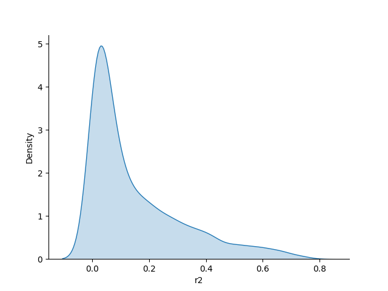
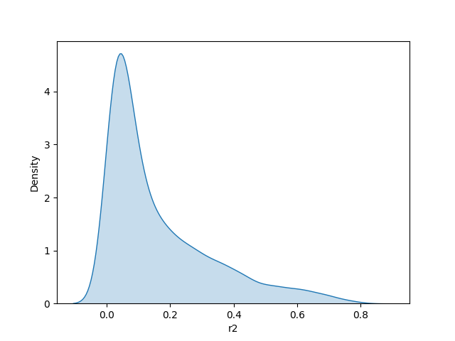
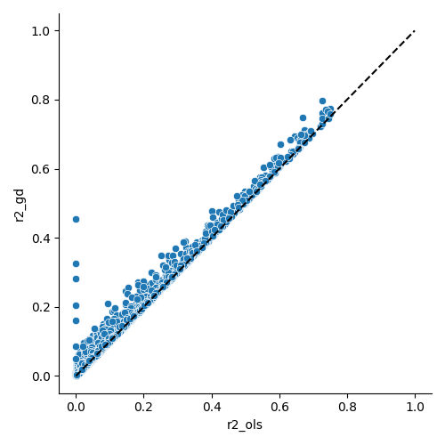
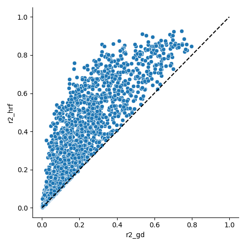
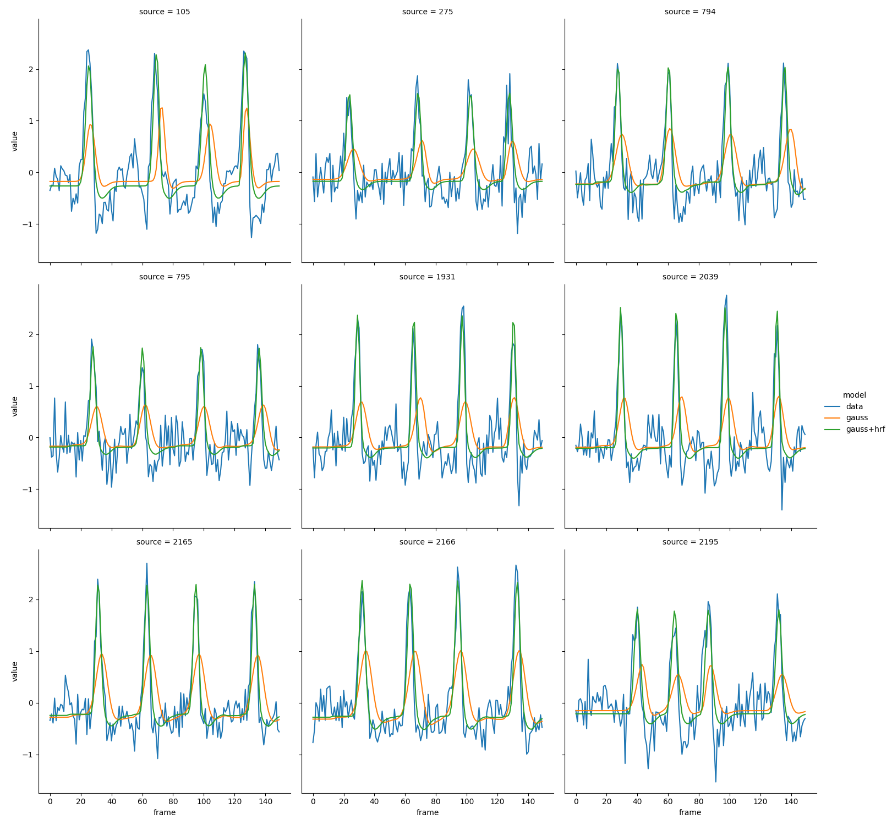

Note
Go to the end to download the full example code.
Different flavors of visual population receptive field models¶
In this example script we will try out increasingly complex models for visual population receptive fields (PRFs). We will start with a simple Gaussian PRF model, and then add more complexity step by step.
Load data¶
First we load in the data. We will use the Szinte (2024)-dataset.
from braincoder.utils.data import load_szinte2024
import matplotlib.pyplot as plt
data = load_szinte2024()
# This is the visual stimulus ("design matrix")
paradigm = data['stimulus']
grid_coordinates = data['grid_coordinates']
# This is the fMRI response data
d = data['v1_timeseries']
d.index.name = 'frame'
tr = data['tr']
Simple 2D Gaussian Recetive Field model¶
Now we set up a simple Gaussian PRF model
from braincoder.models import GaussianPRF2DWithHRF
from braincoder.hrf import SPMHRFModel
hrf_model = SPMHRFModel(tr=tr)
model_gauss = GaussianPRF2DWithHRF(data=d, paradigm=paradigm, hrf_model=hrf_model, grid_coordinates=grid_coordinates)
And a parameter fitter…
from braincoder.optimize import ParameterFitter
par_fitter = ParameterFitter(model=model_gauss, data=d, paradigm=paradigm)
Now we try out a relatively coarse grid search to find the some parameters to start the gradient descent from.
import numpy as np
x = np.linspace(-8, 8, 10)
y = np.linspace(-4, 4, 10)
sd = np.linspace(0.1, 4, 10)
# We start the grid search using a correlation cost, so ampltiude
# and baseline do not influence those results.
# We will optimize them later using OLS.
baseline = [0.0]
amplitude = [1.0]
# Now we can do the grid search
pars_gauss_grid = par_fitter.fit_grid(x, y, sd, baseline, amplitude, use_correlation_cost=True)
# And refine the baseline and amplitude parameters using OLS
pars_gauss_ols = par_fitter.refine_baseline_and_amplitude(pars_gauss_grid)
0%| | 0/1 [00:00<?, ?it/s]
100%|██████████| 1/1 [00:00<00:00, 1.25it/s]
100%|██████████| 1/1 [00:00<00:00, 1.24it/s]
Here we can plot the resulting r2s of the grid search
r2_gauss_ols = par_fitter.get_rsq(pars_gauss_ols)
import seaborn as sns
sns.kdeplot(r2_gauss_ols, shade=True)
sns.despine()

/Users/gdehol/git/braincoder/examples/00_encodingdecoding/fit_prf.py:72: FutureWarning:
`shade` is now deprecated in favor of `fill`; setting `fill=True`.
This will become an error in seaborn v0.14.0; please update your code.
sns.kdeplot(r2_gauss_ols, shade=True)
We can substantially improve the fit by using gradient descent optimisation
pars_gauss_gd = par_fitter.fit(init_pars=pars_gauss_ols, max_n_iterations=1000)
0%| | 0/1000 [00:00<?, ?it/s]
Current R2: 0.15020/Best R2: 0.15020: 0%| | 0/1000 [00:00<?, ?it/s]
Current R2: 0.15020/Best R2: 0.15020: 0%| | 1/1000 [00:00<12:44, 1.31it/s]
Current R2: 0.15018/Best R2: 0.15035: 0%| | 1/1000 [00:01<12:44, 1.31it/s]
Current R2: 0.15018/Best R2: 0.15035: 0%| | 2/1000 [00:01<09:20, 1.78it/s]
Current R2: 0.15082/Best R2: 0.15083: 0%| | 2/1000 [00:01<09:20, 1.78it/s]
Current R2: 0.15082/Best R2: 0.15083: 0%| | 3/1000 [00:01<07:36, 2.18it/s]
Current R2: 0.15102/Best R2: 0.15105: 0%| | 3/1000 [00:01<07:36, 2.18it/s]
Current R2: 0.15102/Best R2: 0.15105: 0%| | 4/1000 [00:01<06:44, 2.46it/s]
Current R2: 0.15128/Best R2: 0.15131: 0%| | 4/1000 [00:02<06:44, 2.46it/s]
Current R2: 0.15128/Best R2: 0.15131: 0%| | 5/1000 [00:02<06:32, 2.54it/s]
Current R2: 0.15165/Best R2: 0.15165: 0%| | 5/1000 [00:02<06:32, 2.54it/s]
Current R2: 0.15165/Best R2: 0.15165: 1%| | 6/1000 [00:02<06:01, 2.75it/s]
Current R2: 0.15194/Best R2: 0.15194: 1%| | 6/1000 [00:02<06:01, 2.75it/s]
Current R2: 0.15194/Best R2: 0.15194: 1%| | 7/1000 [00:02<05:41, 2.90it/s]
Current R2: 0.15213/Best R2: 0.15214: 1%| | 7/1000 [00:03<05:41, 2.90it/s]
Current R2: 0.15213/Best R2: 0.15214: 1%| | 8/1000 [00:03<05:30, 3.00it/s]
Current R2: 0.15231/Best R2: 0.15233: 1%| | 8/1000 [00:03<05:30, 3.00it/s]
Current R2: 0.15231/Best R2: 0.15233: 1%| | 9/1000 [00:03<05:17, 3.12it/s]
Current R2: 0.15251/Best R2: 0.15253: 1%| | 9/1000 [00:03<05:17, 3.12it/s]
Current R2: 0.15251/Best R2: 0.15253: 1%| | 10/1000 [00:03<05:18, 3.11it/s]
Current R2: 0.15273/Best R2: 0.15274: 1%| | 10/1000 [00:04<05:18, 3.11it/s]
Current R2: 0.15273/Best R2: 0.15274: 1%| | 11/1000 [00:04<05:15, 3.14it/s]
Current R2: 0.15294/Best R2: 0.15294: 1%| | 11/1000 [00:04<05:15, 3.14it/s]
Current R2: 0.15294/Best R2: 0.15294: 1%| | 12/1000 [00:04<05:08, 3.20it/s]
Current R2: 0.15312/Best R2: 0.15312: 1%| | 12/1000 [00:04<05:08, 3.20it/s]
Current R2: 0.15312/Best R2: 0.15312: 1%|▏ | 13/1000 [00:04<05:03, 3.25it/s]
Current R2: 0.15328/Best R2: 0.15329: 1%|▏ | 13/1000 [00:04<05:03, 3.25it/s]
Current R2: 0.15328/Best R2: 0.15329: 1%|▏ | 14/1000 [00:04<05:03, 3.25it/s]
Current R2: 0.15343/Best R2: 0.15344: 1%|▏ | 14/1000 [00:05<05:03, 3.25it/s]
Current R2: 0.15343/Best R2: 0.15344: 2%|▏ | 15/1000 [00:05<05:01, 3.27it/s]
Current R2: 0.15359/Best R2: 0.15360: 2%|▏ | 15/1000 [00:05<05:01, 3.27it/s]
Current R2: 0.15359/Best R2: 0.15360: 2%|▏ | 16/1000 [00:05<04:59, 3.29it/s]
Current R2: 0.15375/Best R2: 0.15376: 2%|▏ | 16/1000 [00:05<04:59, 3.29it/s]
Current R2: 0.15375/Best R2: 0.15376: 2%|▏ | 17/1000 [00:05<04:55, 3.33it/s]
Current R2: 0.15389/Best R2: 0.15391: 2%|▏ | 17/1000 [00:06<04:55, 3.33it/s]
Current R2: 0.15389/Best R2: 0.15391: 2%|▏ | 18/1000 [00:06<04:53, 3.35it/s]
Current R2: 0.15403/Best R2: 0.15404: 2%|▏ | 18/1000 [00:06<04:53, 3.35it/s]
Current R2: 0.15403/Best R2: 0.15404: 2%|▏ | 19/1000 [00:06<06:09, 2.65it/s]
Current R2: 0.15416/Best R2: 0.15417: 2%|▏ | 19/1000 [00:07<06:09, 2.65it/s]
Current R2: 0.15416/Best R2: 0.15417: 2%|▏ | 20/1000 [00:07<06:06, 2.67it/s]
Current R2: 0.15429/Best R2: 0.15430: 2%|▏ | 20/1000 [00:07<06:06, 2.67it/s]
Current R2: 0.15429/Best R2: 0.15430: 2%|▏ | 21/1000 [00:07<05:48, 2.81it/s]
Current R2: 0.15443/Best R2: 0.15443: 2%|▏ | 21/1000 [00:07<05:48, 2.81it/s]
Current R2: 0.15443/Best R2: 0.15443: 2%|▏ | 22/1000 [00:07<05:44, 2.84it/s]
Current R2: 0.15456/Best R2: 0.15457: 2%|▏ | 22/1000 [00:08<05:44, 2.84it/s]
Current R2: 0.15456/Best R2: 0.15457: 2%|▏ | 23/1000 [00:08<05:35, 2.91it/s]
Current R2: 0.15469/Best R2: 0.15469: 2%|▏ | 23/1000 [00:08<05:35, 2.91it/s]
Current R2: 0.15469/Best R2: 0.15469: 2%|▏ | 24/1000 [00:08<05:21, 3.04it/s]
Current R2: 0.15481/Best R2: 0.15481: 2%|▏ | 24/1000 [00:08<05:21, 3.04it/s]
Current R2: 0.15481/Best R2: 0.15481: 2%|▎ | 25/1000 [00:08<05:15, 3.09it/s]
Current R2: 0.15493/Best R2: 0.15493: 2%|▎ | 25/1000 [00:08<05:15, 3.09it/s]
Current R2: 0.15493/Best R2: 0.15493: 3%|▎ | 26/1000 [00:08<05:10, 3.14it/s]
Current R2: 0.15504/Best R2: 0.15505: 3%|▎ | 26/1000 [00:09<05:10, 3.14it/s]
Current R2: 0.15504/Best R2: 0.15505: 3%|▎ | 27/1000 [00:09<05:08, 3.15it/s]
Current R2: 0.15516/Best R2: 0.15516: 3%|▎ | 27/1000 [00:09<05:08, 3.15it/s]
Current R2: 0.15516/Best R2: 0.15516: 3%|▎ | 28/1000 [00:09<06:09, 2.63it/s]
Current R2: 0.15527/Best R2: 0.15528: 3%|▎ | 28/1000 [00:10<06:09, 2.63it/s]
Current R2: 0.15527/Best R2: 0.15528: 3%|▎ | 29/1000 [00:10<06:01, 2.69it/s]
Current R2: 0.15538/Best R2: 0.15539: 3%|▎ | 29/1000 [00:10<06:01, 2.69it/s]
Current R2: 0.15538/Best R2: 0.15539: 3%|▎ | 30/1000 [00:10<05:51, 2.76it/s]
Current R2: 0.15549/Best R2: 0.15549: 3%|▎ | 30/1000 [00:10<05:51, 2.76it/s]
Current R2: 0.15549/Best R2: 0.15549: 3%|▎ | 31/1000 [00:10<05:53, 2.74it/s]
Current R2: 0.15560/Best R2: 0.15560: 3%|▎ | 31/1000 [00:11<05:53, 2.74it/s]
Current R2: 0.15560/Best R2: 0.15560: 3%|▎ | 32/1000 [00:11<05:53, 2.74it/s]
Current R2: 0.15570/Best R2: 0.15571: 3%|▎ | 32/1000 [00:11<05:53, 2.74it/s]
Current R2: 0.15570/Best R2: 0.15571: 3%|▎ | 33/1000 [00:11<05:38, 2.86it/s]
Current R2: 0.15581/Best R2: 0.15581: 3%|▎ | 33/1000 [00:11<05:38, 2.86it/s]
Current R2: 0.15581/Best R2: 0.15581: 3%|▎ | 34/1000 [00:11<05:23, 2.99it/s]
Current R2: 0.15591/Best R2: 0.15591: 3%|▎ | 34/1000 [00:12<05:23, 2.99it/s]
Current R2: 0.15591/Best R2: 0.15591: 4%|▎ | 35/1000 [00:12<05:15, 3.05it/s]
Current R2: 0.15601/Best R2: 0.15602: 4%|▎ | 35/1000 [00:12<05:15, 3.05it/s]
Current R2: 0.15601/Best R2: 0.15602: 4%|▎ | 36/1000 [00:12<05:06, 3.15it/s]
Current R2: 0.15611/Best R2: 0.15612: 4%|▎ | 36/1000 [00:12<05:06, 3.15it/s]
Current R2: 0.15611/Best R2: 0.15612: 4%|▎ | 37/1000 [00:12<04:57, 3.24it/s]
Current R2: 0.15621/Best R2: 0.15621: 4%|▎ | 37/1000 [00:13<04:57, 3.24it/s]
Current R2: 0.15621/Best R2: 0.15621: 4%|▍ | 38/1000 [00:13<04:56, 3.25it/s]
Current R2: 0.15631/Best R2: 0.15631: 4%|▍ | 38/1000 [00:13<04:56, 3.25it/s]
Current R2: 0.15631/Best R2: 0.15631: 4%|▍ | 39/1000 [00:13<04:54, 3.27it/s]
Current R2: 0.15641/Best R2: 0.15641: 4%|▍ | 39/1000 [00:13<04:54, 3.27it/s]
Current R2: 0.15641/Best R2: 0.15641: 4%|▍ | 40/1000 [00:13<05:00, 3.19it/s]
Current R2: 0.15650/Best R2: 0.15650: 4%|▍ | 40/1000 [00:14<05:00, 3.19it/s]
Current R2: 0.15650/Best R2: 0.15650: 4%|▍ | 41/1000 [00:14<05:02, 3.17it/s]
Current R2: 0.15660/Best R2: 0.15660: 4%|▍ | 41/1000 [00:14<05:02, 3.17it/s]
Current R2: 0.15660/Best R2: 0.15660: 4%|▍ | 42/1000 [00:14<05:19, 3.00it/s]
Current R2: 0.15669/Best R2: 0.15669: 4%|▍ | 42/1000 [00:14<05:19, 3.00it/s]
Current R2: 0.15669/Best R2: 0.15669: 4%|▍ | 43/1000 [00:14<05:22, 2.97it/s]
Current R2: 0.15678/Best R2: 0.15678: 4%|▍ | 43/1000 [00:15<05:22, 2.97it/s]
Current R2: 0.15678/Best R2: 0.15678: 4%|▍ | 44/1000 [00:15<05:34, 2.86it/s]
Current R2: 0.15687/Best R2: 0.15687: 4%|▍ | 44/1000 [00:15<05:34, 2.86it/s]
Current R2: 0.15687/Best R2: 0.15687: 4%|▍ | 45/1000 [00:15<05:27, 2.92it/s]
Current R2: 0.15696/Best R2: 0.15696: 4%|▍ | 45/1000 [00:15<05:27, 2.92it/s]
Current R2: 0.15696/Best R2: 0.15696: 5%|▍ | 46/1000 [00:15<05:27, 2.92it/s]
Current R2: 0.15705/Best R2: 0.15705: 5%|▍ | 46/1000 [00:16<05:27, 2.92it/s]
Current R2: 0.15705/Best R2: 0.15705: 5%|▍ | 47/1000 [00:16<05:25, 2.93it/s]
Current R2: 0.15714/Best R2: 0.15714: 5%|▍ | 47/1000 [00:16<05:25, 2.93it/s]
Current R2: 0.15714/Best R2: 0.15714: 5%|▍ | 48/1000 [00:16<05:59, 2.65it/s]
Current R2: 0.15722/Best R2: 0.15722: 5%|▍ | 48/1000 [00:16<05:59, 2.65it/s]
Current R2: 0.15722/Best R2: 0.15722: 5%|▍ | 49/1000 [00:16<05:49, 2.72it/s]
Current R2: 0.15731/Best R2: 0.15731: 5%|▍ | 49/1000 [00:17<05:49, 2.72it/s]
Current R2: 0.15731/Best R2: 0.15731: 5%|▌ | 50/1000 [00:17<05:54, 2.68it/s]
Current R2: 0.15739/Best R2: 0.15739: 5%|▌ | 50/1000 [00:17<05:54, 2.68it/s]
Current R2: 0.15739/Best R2: 0.15739: 5%|▌ | 51/1000 [00:17<05:44, 2.75it/s]
Current R2: 0.15747/Best R2: 0.15747: 5%|▌ | 51/1000 [00:17<05:44, 2.75it/s]
Current R2: 0.15747/Best R2: 0.15747: 5%|▌ | 52/1000 [00:17<05:33, 2.84it/s]
Current R2: 0.15755/Best R2: 0.15756: 5%|▌ | 52/1000 [00:18<05:33, 2.84it/s]
Current R2: 0.15755/Best R2: 0.15756: 5%|▌ | 53/1000 [00:18<05:25, 2.91it/s]
Current R2: 0.15764/Best R2: 0.15764: 5%|▌ | 53/1000 [00:18<05:25, 2.91it/s]
Current R2: 0.15764/Best R2: 0.15764: 5%|▌ | 54/1000 [00:18<05:33, 2.84it/s]
Current R2: 0.15772/Best R2: 0.15772: 5%|▌ | 54/1000 [00:18<05:33, 2.84it/s]
Current R2: 0.15772/Best R2: 0.15772: 6%|▌ | 55/1000 [00:18<05:24, 2.91it/s]
Current R2: 0.15780/Best R2: 0.15780: 6%|▌ | 55/1000 [00:19<05:24, 2.91it/s]
Current R2: 0.15780/Best R2: 0.15780: 6%|▌ | 56/1000 [00:19<05:35, 2.81it/s]
Current R2: 0.15788/Best R2: 0.15788: 6%|▌ | 56/1000 [00:19<05:35, 2.81it/s]
Current R2: 0.15788/Best R2: 0.15788: 6%|▌ | 57/1000 [00:19<05:20, 2.94it/s]
Current R2: 0.15796/Best R2: 0.15796: 6%|▌ | 57/1000 [00:19<05:20, 2.94it/s]
Current R2: 0.15796/Best R2: 0.15796: 6%|▌ | 58/1000 [00:19<05:09, 3.04it/s]
Current R2: 0.15804/Best R2: 0.15804: 6%|▌ | 58/1000 [00:20<05:09, 3.04it/s]
Current R2: 0.15804/Best R2: 0.15804: 6%|▌ | 59/1000 [00:20<05:12, 3.01it/s]
Current R2: 0.15812/Best R2: 0.15812: 6%|▌ | 59/1000 [00:20<05:12, 3.01it/s]
Current R2: 0.15812/Best R2: 0.15812: 6%|▌ | 60/1000 [00:20<05:04, 3.09it/s]
Current R2: 0.15820/Best R2: 0.15820: 6%|▌ | 60/1000 [00:20<05:04, 3.09it/s]
Current R2: 0.15820/Best R2: 0.15820: 6%|▌ | 61/1000 [00:20<04:58, 3.15it/s]
Current R2: 0.15828/Best R2: 0.15828: 6%|▌ | 61/1000 [00:21<04:58, 3.15it/s]
Current R2: 0.15828/Best R2: 0.15828: 6%|▌ | 62/1000 [00:21<04:57, 3.15it/s]
Current R2: 0.15836/Best R2: 0.15836: 6%|▌ | 62/1000 [00:21<04:57, 3.15it/s]
Current R2: 0.15836/Best R2: 0.15836: 6%|▋ | 63/1000 [00:21<05:03, 3.09it/s]
Current R2: 0.15844/Best R2: 0.15844: 6%|▋ | 63/1000 [00:21<05:03, 3.09it/s]
Current R2: 0.15844/Best R2: 0.15844: 6%|▋ | 64/1000 [00:21<05:01, 3.11it/s]
Current R2: 0.15852/Best R2: 0.15852: 6%|▋ | 64/1000 [00:22<05:01, 3.11it/s]
Current R2: 0.15852/Best R2: 0.15852: 6%|▋ | 65/1000 [00:22<05:23, 2.89it/s]
Current R2: 0.15859/Best R2: 0.15859: 6%|▋ | 65/1000 [00:22<05:23, 2.89it/s]
Current R2: 0.15859/Best R2: 0.15859: 7%|▋ | 66/1000 [00:22<05:42, 2.73it/s]
Current R2: 0.15866/Best R2: 0.15866: 7%|▋ | 66/1000 [00:23<05:42, 2.73it/s]
Current R2: 0.15866/Best R2: 0.15866: 7%|▋ | 67/1000 [00:23<06:31, 2.38it/s]
Current R2: 0.15873/Best R2: 0.15873: 7%|▋ | 67/1000 [00:23<06:31, 2.38it/s]
Current R2: 0.15873/Best R2: 0.15873: 7%|▋ | 68/1000 [00:23<07:21, 2.11it/s]
Current R2: 0.15880/Best R2: 0.15880: 7%|▋ | 68/1000 [00:24<07:21, 2.11it/s]
Current R2: 0.15880/Best R2: 0.15880: 7%|▋ | 69/1000 [00:24<08:46, 1.77it/s]
Current R2: 0.15887/Best R2: 0.15887: 7%|▋ | 69/1000 [00:25<08:46, 1.77it/s]
Current R2: 0.15887/Best R2: 0.15887: 7%|▋ | 70/1000 [00:25<08:44, 1.77it/s]
Current R2: 0.15894/Best R2: 0.15894: 7%|▋ | 70/1000 [00:25<08:44, 1.77it/s]
Current R2: 0.15894/Best R2: 0.15894: 7%|▋ | 71/1000 [00:25<08:35, 1.80it/s]
Current R2: 0.15900/Best R2: 0.15900: 7%|▋ | 71/1000 [00:26<08:35, 1.80it/s]
Current R2: 0.15900/Best R2: 0.15900: 7%|▋ | 72/1000 [00:26<10:38, 1.45it/s]
Current R2: 0.15907/Best R2: 0.15907: 7%|▋ | 72/1000 [00:27<10:38, 1.45it/s]
Current R2: 0.15907/Best R2: 0.15907: 7%|▋ | 73/1000 [00:27<09:14, 1.67it/s]
Current R2: 0.15913/Best R2: 0.15913: 7%|▋ | 73/1000 [00:27<09:14, 1.67it/s]
Current R2: 0.15913/Best R2: 0.15913: 7%|▋ | 74/1000 [00:27<08:16, 1.86it/s]
Current R2: 0.15920/Best R2: 0.15920: 7%|▋ | 74/1000 [00:27<08:16, 1.86it/s]
Current R2: 0.15920/Best R2: 0.15920: 8%|▊ | 75/1000 [00:27<07:17, 2.12it/s]
Current R2: 0.15926/Best R2: 0.15926: 8%|▊ | 75/1000 [00:28<07:17, 2.12it/s]
Current R2: 0.15926/Best R2: 0.15926: 8%|▊ | 76/1000 [00:28<06:55, 2.22it/s]
Current R2: 0.15932/Best R2: 0.15932: 8%|▊ | 76/1000 [00:28<06:55, 2.22it/s]
Current R2: 0.15932/Best R2: 0.15932: 8%|▊ | 77/1000 [00:28<06:37, 2.32it/s]
Current R2: 0.15938/Best R2: 0.15938: 8%|▊ | 77/1000 [00:29<06:37, 2.32it/s]
Current R2: 0.15938/Best R2: 0.15938: 8%|▊ | 78/1000 [00:29<06:21, 2.42it/s]
Current R2: 0.15943/Best R2: 0.15944: 8%|▊ | 78/1000 [00:29<06:21, 2.42it/s]
Current R2: 0.15943/Best R2: 0.15944: 8%|▊ | 79/1000 [00:29<06:02, 2.54it/s]
Current R2: 0.15949/Best R2: 0.15949: 8%|▊ | 79/1000 [00:29<06:02, 2.54it/s]
Current R2: 0.15949/Best R2: 0.15949: 8%|▊ | 80/1000 [00:29<05:55, 2.58it/s]
Current R2: 0.15954/Best R2: 0.15954: 8%|▊ | 80/1000 [00:30<05:55, 2.58it/s]
Current R2: 0.15954/Best R2: 0.15954: 8%|▊ | 81/1000 [00:30<05:45, 2.66it/s]
Current R2: 0.15959/Best R2: 0.15959: 8%|▊ | 81/1000 [00:31<05:45, 2.66it/s]
Current R2: 0.15959/Best R2: 0.15959: 8%|▊ | 82/1000 [00:31<08:33, 1.79it/s]
Current R2: 0.15964/Best R2: 0.15964: 8%|▊ | 82/1000 [00:31<08:33, 1.79it/s]
Current R2: 0.15964/Best R2: 0.15964: 8%|▊ | 83/1000 [00:31<08:25, 1.82it/s]
Current R2: 0.15969/Best R2: 0.15969: 8%|▊ | 83/1000 [00:31<08:25, 1.82it/s]
Current R2: 0.15969/Best R2: 0.15969: 8%|▊ | 84/1000 [00:31<07:30, 2.03it/s]
Current R2: 0.15973/Best R2: 0.15973: 8%|▊ | 84/1000 [00:32<07:30, 2.03it/s]
Current R2: 0.15973/Best R2: 0.15973: 8%|▊ | 85/1000 [00:32<07:25, 2.06it/s]
Current R2: 0.15977/Best R2: 0.15977: 8%|▊ | 85/1000 [00:32<07:25, 2.06it/s]
Current R2: 0.15977/Best R2: 0.15977: 9%|▊ | 86/1000 [00:32<06:47, 2.24it/s]
Current R2: 0.15981/Best R2: 0.15982: 9%|▊ | 86/1000 [00:33<06:47, 2.24it/s]
Current R2: 0.15981/Best R2: 0.15982: 9%|▊ | 87/1000 [00:33<06:16, 2.42it/s]
Current R2: 0.15985/Best R2: 0.15986: 9%|▊ | 87/1000 [00:33<06:16, 2.42it/s]
Current R2: 0.15985/Best R2: 0.15986: 9%|▉ | 88/1000 [00:33<07:53, 1.93it/s]
Current R2: 0.15989/Best R2: 0.15989: 9%|▉ | 88/1000 [00:34<07:53, 1.93it/s]
Current R2: 0.15989/Best R2: 0.15989: 9%|▉ | 89/1000 [00:34<08:14, 1.84it/s]
Current R2: 0.15993/Best R2: 0.15993: 9%|▉ | 89/1000 [00:34<08:14, 1.84it/s]
Current R2: 0.15993/Best R2: 0.15993: 9%|▉ | 90/1000 [00:34<07:35, 2.00it/s]
Current R2: 0.15997/Best R2: 0.15997: 9%|▉ | 90/1000 [00:35<07:35, 2.00it/s]
Current R2: 0.15997/Best R2: 0.15997: 9%|▉ | 91/1000 [00:35<07:05, 2.14it/s]
Current R2: 0.16000/Best R2: 0.16000: 9%|▉ | 91/1000 [00:35<07:05, 2.14it/s]
Current R2: 0.16000/Best R2: 0.16000: 9%|▉ | 92/1000 [00:35<06:29, 2.33it/s]
Current R2: 0.16004/Best R2: 0.16004: 9%|▉ | 92/1000 [00:35<06:29, 2.33it/s]
Current R2: 0.16004/Best R2: 0.16004: 9%|▉ | 93/1000 [00:35<06:04, 2.49it/s]
Current R2: 0.16007/Best R2: 0.16007: 9%|▉ | 93/1000 [00:36<06:04, 2.49it/s]
Current R2: 0.16007/Best R2: 0.16007: 9%|▉ | 94/1000 [00:36<05:49, 2.59it/s]
Current R2: 0.16011/Best R2: 0.16011: 9%|▉ | 94/1000 [00:36<05:49, 2.59it/s]
Current R2: 0.16011/Best R2: 0.16011: 10%|▉ | 95/1000 [00:36<06:17, 2.40it/s]
Current R2: 0.16014/Best R2: 0.16014: 10%|▉ | 95/1000 [00:37<06:17, 2.40it/s]
Current R2: 0.16014/Best R2: 0.16014: 10%|▉ | 96/1000 [00:37<06:02, 2.49it/s]
Current R2: 0.16017/Best R2: 0.16017: 10%|▉ | 96/1000 [00:37<06:02, 2.49it/s]
Current R2: 0.16017/Best R2: 0.16017: 10%|▉ | 97/1000 [00:37<06:07, 2.45it/s]
Current R2: 0.16021/Best R2: 0.16021: 10%|▉ | 97/1000 [00:37<06:07, 2.45it/s]
Current R2: 0.16021/Best R2: 0.16021: 10%|▉ | 98/1000 [00:37<05:54, 2.55it/s]
Current R2: 0.16024/Best R2: 0.16024: 10%|▉ | 98/1000 [00:38<05:54, 2.55it/s]
Current R2: 0.16024/Best R2: 0.16024: 10%|▉ | 99/1000 [00:38<05:41, 2.64it/s]
Current R2: 0.16028/Best R2: 0.16028: 10%|▉ | 99/1000 [00:38<05:41, 2.64it/s]
Current R2: 0.16028/Best R2: 0.16028: 10%|█ | 100/1000 [00:38<05:33, 2.70it/s]
Current R2: 0.16031/Best R2: 0.16031: 10%|█ | 100/1000 [00:39<05:33, 2.70it/s]
Current R2: 0.16031/Best R2: 0.16031: 10%|█ | 101/1000 [00:39<06:02, 2.48it/s]
Current R2: 0.16034/Best R2: 0.16034: 10%|█ | 101/1000 [00:39<06:02, 2.48it/s]
Current R2: 0.16034/Best R2: 0.16034: 10%|█ | 102/1000 [00:39<06:01, 2.49it/s]
Current R2: 0.16038/Best R2: 0.16038: 10%|█ | 102/1000 [00:39<06:01, 2.49it/s]
Current R2: 0.16038/Best R2: 0.16038: 10%|█ | 103/1000 [00:39<05:47, 2.58it/s]
Current R2: 0.16041/Best R2: 0.16041: 10%|█ | 103/1000 [00:40<05:47, 2.58it/s]
Current R2: 0.16041/Best R2: 0.16041: 10%|█ | 104/1000 [00:40<05:40, 2.63it/s]
Current R2: 0.16044/Best R2: 0.16044: 10%|█ | 104/1000 [00:40<05:40, 2.63it/s]
Current R2: 0.16044/Best R2: 0.16044: 10%|█ | 105/1000 [00:40<05:36, 2.66it/s]
Current R2: 0.16048/Best R2: 0.16048: 10%|█ | 105/1000 [00:40<05:36, 2.66it/s]
Current R2: 0.16048/Best R2: 0.16048: 11%|█ | 106/1000 [00:40<05:28, 2.72it/s]
Current R2: 0.16051/Best R2: 0.16051: 11%|█ | 106/1000 [00:41<05:28, 2.72it/s]
Current R2: 0.16051/Best R2: 0.16051: 11%|█ | 107/1000 [00:41<05:18, 2.80it/s]
Current R2: 0.16054/Best R2: 0.16054: 11%|█ | 107/1000 [00:41<05:18, 2.80it/s]
Current R2: 0.16054/Best R2: 0.16054: 11%|█ | 108/1000 [00:41<05:58, 2.49it/s]
Current R2: 0.16057/Best R2: 0.16057: 11%|█ | 108/1000 [00:42<05:58, 2.49it/s]
Current R2: 0.16057/Best R2: 0.16057: 11%|█ | 109/1000 [00:42<05:55, 2.50it/s]
Current R2: 0.16059/Best R2: 0.16059: 11%|█ | 109/1000 [00:42<05:55, 2.50it/s]
Current R2: 0.16059/Best R2: 0.16059: 11%|█ | 110/1000 [00:42<06:45, 2.19it/s]
Current R2: 0.16062/Best R2: 0.16062: 11%|█ | 110/1000 [00:43<06:45, 2.19it/s]
Current R2: 0.16062/Best R2: 0.16062: 11%|█ | 111/1000 [00:43<07:00, 2.11it/s]
Current R2: 0.16064/Best R2: 0.16064: 11%|█ | 111/1000 [00:43<07:00, 2.11it/s]
Current R2: 0.16064/Best R2: 0.16064: 11%|█ | 112/1000 [00:43<06:40, 2.22it/s]
Current R2: 0.16067/Best R2: 0.16067: 11%|█ | 112/1000 [00:44<06:40, 2.22it/s]
Current R2: 0.16067/Best R2: 0.16067: 11%|█▏ | 113/1000 [00:44<06:16, 2.35it/s]
Current R2: 0.16069/Best R2: 0.16069: 11%|█▏ | 113/1000 [00:44<06:16, 2.35it/s]
Current R2: 0.16069/Best R2: 0.16069: 11%|█▏ | 114/1000 [00:44<05:59, 2.47it/s]
Current R2: 0.16071/Best R2: 0.16072: 11%|█▏ | 114/1000 [00:45<05:59, 2.47it/s]
Current R2: 0.16071/Best R2: 0.16072: 12%|█▏ | 115/1000 [00:45<07:02, 2.10it/s]
Current R2: 0.16074/Best R2: 0.16074: 12%|█▏ | 115/1000 [00:45<07:02, 2.10it/s]
Current R2: 0.16074/Best R2: 0.16074: 12%|█▏ | 116/1000 [00:45<06:27, 2.28it/s]
Current R2: 0.16076/Best R2: 0.16076: 12%|█▏ | 116/1000 [00:45<06:27, 2.28it/s]
Current R2: 0.16076/Best R2: 0.16076: 12%|█▏ | 117/1000 [00:45<06:23, 2.30it/s]
Current R2: 0.16078/Best R2: 0.16078: 12%|█▏ | 117/1000 [00:46<06:23, 2.30it/s]
Current R2: 0.16078/Best R2: 0.16078: 12%|█▏ | 118/1000 [00:46<06:03, 2.43it/s]
Current R2: 0.16080/Best R2: 0.16080: 12%|█▏ | 118/1000 [00:46<06:03, 2.43it/s]
Current R2: 0.16080/Best R2: 0.16080: 12%|█▏ | 119/1000 [00:46<05:56, 2.47it/s]
Current R2: 0.16082/Best R2: 0.16082: 12%|█▏ | 119/1000 [00:47<05:56, 2.47it/s]
Current R2: 0.16082/Best R2: 0.16082: 12%|█▏ | 120/1000 [00:47<06:15, 2.34it/s]
Current R2: 0.16083/Best R2: 0.16084: 12%|█▏ | 120/1000 [00:47<06:15, 2.34it/s]
Current R2: 0.16083/Best R2: 0.16084: 12%|█▏ | 121/1000 [00:47<05:58, 2.45it/s]
Current R2: 0.16085/Best R2: 0.16085: 12%|█▏ | 121/1000 [00:47<05:58, 2.45it/s]
Current R2: 0.16085/Best R2: 0.16085: 12%|█▏ | 122/1000 [00:47<05:44, 2.55it/s]
Current R2: 0.16087/Best R2: 0.16087: 12%|█▏ | 122/1000 [00:48<05:44, 2.55it/s]
Current R2: 0.16087/Best R2: 0.16087: 12%|█▏ | 123/1000 [00:48<05:40, 2.58it/s]
Current R2: 0.16089/Best R2: 0.16089: 12%|█▏ | 123/1000 [00:48<05:40, 2.58it/s]
Current R2: 0.16089/Best R2: 0.16089: 12%|█▏ | 124/1000 [00:48<06:48, 2.14it/s]
Current R2: 0.16091/Best R2: 0.16091: 12%|█▏ | 124/1000 [00:49<06:48, 2.14it/s]
Current R2: 0.16091/Best R2: 0.16091: 12%|█▎ | 125/1000 [00:49<06:24, 2.28it/s]
Current R2: 0.16092/Best R2: 0.16092: 12%|█▎ | 125/1000 [00:49<06:24, 2.28it/s]
Current R2: 0.16092/Best R2: 0.16092: 13%|█▎ | 126/1000 [00:49<06:43, 2.17it/s]
Current R2: 0.16094/Best R2: 0.16094: 13%|█▎ | 126/1000 [00:50<06:43, 2.17it/s]
Current R2: 0.16094/Best R2: 0.16094: 13%|█▎ | 127/1000 [00:50<06:24, 2.27it/s]
Current R2: 0.16095/Best R2: 0.16095: 13%|█▎ | 127/1000 [00:50<06:24, 2.27it/s]
Current R2: 0.16095/Best R2: 0.16095: 13%|█▎ | 128/1000 [00:50<06:00, 2.42it/s]
Current R2: 0.16097/Best R2: 0.16097: 13%|█▎ | 128/1000 [00:50<06:00, 2.42it/s]
Current R2: 0.16097/Best R2: 0.16097: 13%|█▎ | 129/1000 [00:50<05:51, 2.48it/s]
Current R2: 0.16099/Best R2: 0.16099: 13%|█▎ | 129/1000 [00:51<05:51, 2.48it/s]
Current R2: 0.16099/Best R2: 0.16099: 13%|█▎ | 130/1000 [00:51<05:40, 2.56it/s]
Current R2: 0.16100/Best R2: 0.16100: 13%|█▎ | 130/1000 [00:51<05:40, 2.56it/s]
Current R2: 0.16100/Best R2: 0.16100: 13%|█▎ | 131/1000 [00:51<07:00, 2.07it/s]
Current R2: 0.16102/Best R2: 0.16102: 13%|█▎ | 131/1000 [00:52<07:00, 2.07it/s]
Current R2: 0.16102/Best R2: 0.16102: 13%|█▎ | 132/1000 [00:52<07:17, 1.98it/s]
Current R2: 0.16103/Best R2: 0.16103: 13%|█▎ | 132/1000 [00:52<07:17, 1.98it/s]
Current R2: 0.16103/Best R2: 0.16103: 13%|█▎ | 133/1000 [00:52<07:12, 2.01it/s]
Current R2: 0.16105/Best R2: 0.16105: 13%|█▎ | 133/1000 [00:53<07:12, 2.01it/s]
Current R2: 0.16105/Best R2: 0.16105: 13%|█▎ | 134/1000 [00:53<06:55, 2.09it/s]
Current R2: 0.16106/Best R2: 0.16106: 13%|█▎ | 134/1000 [00:53<06:55, 2.09it/s]
Current R2: 0.16106/Best R2: 0.16106: 14%|█▎ | 135/1000 [00:53<06:36, 2.18it/s]
Current R2: 0.16108/Best R2: 0.16108: 14%|█▎ | 135/1000 [00:54<06:36, 2.18it/s]
Current R2: 0.16108/Best R2: 0.16108: 14%|█▎ | 136/1000 [00:54<06:13, 2.31it/s]
Current R2: 0.16109/Best R2: 0.16109: 14%|█▎ | 136/1000 [00:54<06:13, 2.31it/s]
Current R2: 0.16109/Best R2: 0.16109: 14%|█▎ | 137/1000 [00:54<07:04, 2.03it/s]
Current R2: 0.16111/Best R2: 0.16111: 14%|█▎ | 137/1000 [00:55<07:04, 2.03it/s]
Current R2: 0.16111/Best R2: 0.16111: 14%|█▍ | 138/1000 [00:55<06:53, 2.08it/s]
Current R2: 0.16112/Best R2: 0.16112: 14%|█▍ | 138/1000 [00:55<06:53, 2.08it/s]
Current R2: 0.16112/Best R2: 0.16112: 14%|█▍ | 139/1000 [00:55<06:26, 2.23it/s]
Current R2: 0.16114/Best R2: 0.16114: 14%|█▍ | 139/1000 [00:55<06:26, 2.23it/s]
Current R2: 0.16114/Best R2: 0.16114: 14%|█▍ | 140/1000 [00:55<05:56, 2.42it/s]
Current R2: 0.16115/Best R2: 0.16115: 14%|█▍ | 140/1000 [00:56<05:56, 2.42it/s]
Current R2: 0.16115/Best R2: 0.16115: 14%|█▍ | 141/1000 [00:56<05:36, 2.56it/s]
Current R2: 0.16117/Best R2: 0.16117: 14%|█▍ | 141/1000 [00:56<05:36, 2.56it/s]
Current R2: 0.16117/Best R2: 0.16117: 14%|█▍ | 142/1000 [00:56<05:29, 2.60it/s]
Current R2: 0.16118/Best R2: 0.16118: 14%|█▍ | 142/1000 [00:56<05:29, 2.60it/s]
Current R2: 0.16118/Best R2: 0.16118: 14%|█▍ | 143/1000 [00:56<05:27, 2.62it/s]
Current R2: 0.16120/Best R2: 0.16120: 14%|█▍ | 143/1000 [00:57<05:27, 2.62it/s]
Current R2: 0.16120/Best R2: 0.16120: 14%|█▍ | 144/1000 [00:57<05:16, 2.71it/s]
Current R2: 0.16121/Best R2: 0.16121: 14%|█▍ | 144/1000 [00:57<05:16, 2.71it/s]
Current R2: 0.16121/Best R2: 0.16121: 14%|█▍ | 145/1000 [00:57<05:10, 2.75it/s]
Current R2: 0.16123/Best R2: 0.16123: 14%|█▍ | 145/1000 [00:58<05:10, 2.75it/s]
Current R2: 0.16123/Best R2: 0.16123: 15%|█▍ | 146/1000 [00:58<05:28, 2.60it/s]
Current R2: 0.16125/Best R2: 0.16125: 15%|█▍ | 146/1000 [00:58<05:28, 2.60it/s]
Current R2: 0.16125/Best R2: 0.16125: 15%|█▍ | 147/1000 [00:58<05:22, 2.64it/s]
Current R2: 0.16126/Best R2: 0.16126: 15%|█▍ | 147/1000 [00:58<05:22, 2.64it/s]
Current R2: 0.16126/Best R2: 0.16126: 15%|█▍ | 148/1000 [00:58<05:16, 2.69it/s]
Current R2: 0.16128/Best R2: 0.16128: 15%|█▍ | 148/1000 [00:59<05:16, 2.69it/s]
Current R2: 0.16128/Best R2: 0.16128: 15%|█▍ | 149/1000 [00:59<05:02, 2.81it/s]
Current R2: 0.16130/Best R2: 0.16130: 15%|█▍ | 149/1000 [00:59<05:02, 2.81it/s]
Current R2: 0.16130/Best R2: 0.16130: 15%|█▌ | 150/1000 [00:59<05:02, 2.81it/s]
Current R2: 0.16131/Best R2: 0.16131: 15%|█▌ | 150/1000 [00:59<05:02, 2.81it/s]
Current R2: 0.16131/Best R2: 0.16131: 15%|█▌ | 151/1000 [00:59<04:53, 2.89it/s]
Current R2: 0.16133/Best R2: 0.16133: 15%|█▌ | 151/1000 [01:00<04:53, 2.89it/s]
Current R2: 0.16133/Best R2: 0.16133: 15%|█▌ | 152/1000 [01:00<04:52, 2.90it/s]
Current R2: 0.16134/Best R2: 0.16134: 15%|█▌ | 152/1000 [01:00<04:52, 2.90it/s]
Current R2: 0.16134/Best R2: 0.16134: 15%|█▌ | 153/1000 [01:00<04:50, 2.92it/s]
Current R2: 0.16135/Best R2: 0.16135: 15%|█▌ | 153/1000 [01:00<04:50, 2.92it/s]
Current R2: 0.16135/Best R2: 0.16135: 15%|█▌ | 154/1000 [01:00<04:56, 2.86it/s]
Current R2: 0.16137/Best R2: 0.16137: 15%|█▌ | 154/1000 [01:01<04:56, 2.86it/s]
Current R2: 0.16137/Best R2: 0.16137: 16%|█▌ | 155/1000 [01:01<05:05, 2.77it/s]
Current R2: 0.16138/Best R2: 0.16138: 16%|█▌ | 155/1000 [01:01<05:05, 2.77it/s]
Current R2: 0.16138/Best R2: 0.16138: 16%|█▌ | 156/1000 [01:01<04:59, 2.82it/s]
Current R2: 0.16139/Best R2: 0.16139: 16%|█▌ | 156/1000 [01:01<04:59, 2.82it/s]
Current R2: 0.16139/Best R2: 0.16139: 16%|█▌ | 157/1000 [01:01<05:08, 2.73it/s]
Current R2: 0.16140/Best R2: 0.16140: 16%|█▌ | 157/1000 [01:02<05:08, 2.73it/s]
Current R2: 0.16140/Best R2: 0.16140: 16%|█▌ | 158/1000 [01:02<05:38, 2.49it/s]
Current R2: 0.16141/Best R2: 0.16141: 16%|█▌ | 158/1000 [01:02<05:38, 2.49it/s]
Current R2: 0.16141/Best R2: 0.16141: 16%|█▌ | 159/1000 [01:02<05:32, 2.53it/s]
Current R2: 0.16142/Best R2: 0.16143: 16%|█▌ | 159/1000 [01:03<05:32, 2.53it/s]
Current R2: 0.16142/Best R2: 0.16143: 16%|█▌ | 160/1000 [01:03<05:31, 2.53it/s]
Current R2: 0.16144/Best R2: 0.16144: 16%|█▌ | 160/1000 [01:03<05:31, 2.53it/s]
Current R2: 0.16144/Best R2: 0.16144: 16%|█▌ | 161/1000 [01:03<05:31, 2.53it/s]
Current R2: 0.16145/Best R2: 0.16145: 16%|█▌ | 161/1000 [01:04<05:31, 2.53it/s]
Current R2: 0.16145/Best R2: 0.16145: 16%|█▌ | 162/1000 [01:04<06:06, 2.29it/s]
Current R2: 0.16146/Best R2: 0.16146: 16%|█▌ | 162/1000 [01:04<06:06, 2.29it/s]
Current R2: 0.16146/Best R2: 0.16146: 16%|█▋ | 163/1000 [01:04<06:14, 2.23it/s]
Current R2: 0.16147/Best R2: 0.16147: 16%|█▋ | 163/1000 [01:05<06:14, 2.23it/s]
Current R2: 0.16147/Best R2: 0.16147: 16%|█▋ | 164/1000 [01:05<06:05, 2.29it/s]
Current R2: 0.16148/Best R2: 0.16148: 16%|█▋ | 164/1000 [01:05<06:05, 2.29it/s]
Current R2: 0.16148/Best R2: 0.16148: 16%|█▋ | 165/1000 [01:05<05:52, 2.37it/s]
Current R2: 0.16149/Best R2: 0.16149: 16%|█▋ | 165/1000 [01:05<05:52, 2.37it/s]
Current R2: 0.16149/Best R2: 0.16149: 17%|█▋ | 166/1000 [01:05<05:48, 2.40it/s]
Current R2: 0.16150/Best R2: 0.16150: 17%|█▋ | 166/1000 [01:06<05:48, 2.40it/s]
Current R2: 0.16150/Best R2: 0.16150: 17%|█▋ | 167/1000 [01:06<07:00, 1.98it/s]
Current R2: 0.16151/Best R2: 0.16151: 17%|█▋ | 167/1000 [01:07<07:00, 1.98it/s]
Current R2: 0.16151/Best R2: 0.16151: 17%|█▋ | 168/1000 [01:07<07:08, 1.94it/s]
Current R2: 0.16152/Best R2: 0.16152: 17%|█▋ | 168/1000 [01:07<07:08, 1.94it/s]
Current R2: 0.16152/Best R2: 0.16152: 17%|█▋ | 169/1000 [01:07<07:30, 1.84it/s]
Current R2: 0.16153/Best R2: 0.16153: 17%|█▋ | 169/1000 [01:08<07:30, 1.84it/s]
Current R2: 0.16153/Best R2: 0.16153: 17%|█▋ | 170/1000 [01:08<08:06, 1.71it/s]
Current R2: 0.16154/Best R2: 0.16154: 17%|█▋ | 170/1000 [01:08<08:06, 1.71it/s]
Current R2: 0.16154/Best R2: 0.16154: 17%|█▋ | 171/1000 [01:08<07:22, 1.87it/s]
Current R2: 0.16155/Best R2: 0.16155: 17%|█▋ | 171/1000 [01:09<07:22, 1.87it/s]
Current R2: 0.16155/Best R2: 0.16155: 17%|█▋ | 172/1000 [01:09<06:36, 2.09it/s]
Current R2: 0.16156/Best R2: 0.16156: 17%|█▋ | 172/1000 [01:09<06:36, 2.09it/s]
Current R2: 0.16156/Best R2: 0.16156: 17%|█▋ | 173/1000 [01:09<06:12, 2.22it/s]
Current R2: 0.16157/Best R2: 0.16157: 17%|█▋ | 173/1000 [01:09<06:12, 2.22it/s]
Current R2: 0.16157/Best R2: 0.16157: 17%|█▋ | 174/1000 [01:09<05:41, 2.42it/s]
Current R2: 0.16157/Best R2: 0.16158: 17%|█▋ | 174/1000 [01:10<05:41, 2.42it/s]
Current R2: 0.16157/Best R2: 0.16158: 18%|█▊ | 175/1000 [01:10<05:48, 2.37it/s]
Current R2: 0.16158/Best R2: 0.16158: 18%|█▊ | 175/1000 [01:10<05:48, 2.37it/s]
Current R2: 0.16158/Best R2: 0.16158: 18%|█▊ | 176/1000 [01:10<05:34, 2.46it/s]
Current R2: 0.16159/Best R2: 0.16159: 18%|█▊ | 176/1000 [01:11<05:34, 2.46it/s]
Current R2: 0.16159/Best R2: 0.16159: 18%|█▊ | 177/1000 [01:11<05:55, 2.32it/s]
Current R2: 0.16160/Best R2: 0.16160: 18%|█▊ | 177/1000 [01:11<05:55, 2.32it/s]
Current R2: 0.16160/Best R2: 0.16160: 18%|█▊ | 178/1000 [01:11<06:06, 2.24it/s]
Current R2: 0.16161/Best R2: 0.16161: 18%|█▊ | 178/1000 [01:11<06:06, 2.24it/s]
Current R2: 0.16161/Best R2: 0.16161: 18%|█▊ | 179/1000 [01:11<05:37, 2.43it/s]
Current R2: 0.16162/Best R2: 0.16162: 18%|█▊ | 179/1000 [01:12<05:37, 2.43it/s]
Current R2: 0.16162/Best R2: 0.16162: 18%|█▊ | 180/1000 [01:12<05:24, 2.53it/s]
Current R2: 0.16163/Best R2: 0.16163: 18%|█▊ | 180/1000 [01:12<05:24, 2.53it/s]
Current R2: 0.16163/Best R2: 0.16163: 18%|█▊ | 181/1000 [01:12<05:10, 2.64it/s]
Current R2: 0.16164/Best R2: 0.16164: 18%|█▊ | 181/1000 [01:13<05:10, 2.64it/s]
Current R2: 0.16164/Best R2: 0.16164: 18%|█▊ | 182/1000 [01:13<05:23, 2.53it/s]
Current R2: 0.16164/Best R2: 0.16165: 18%|█▊ | 182/1000 [01:13<05:23, 2.53it/s]
Current R2: 0.16164/Best R2: 0.16165: 18%|█▊ | 183/1000 [01:13<05:05, 2.68it/s]
Current R2: 0.16165/Best R2: 0.16165: 18%|█▊ | 183/1000 [01:13<05:05, 2.68it/s]
Current R2: 0.16165/Best R2: 0.16165: 18%|█▊ | 184/1000 [01:13<05:02, 2.70it/s]
Current R2: 0.16166/Best R2: 0.16166: 18%|█▊ | 184/1000 [01:14<05:02, 2.70it/s]
Current R2: 0.16166/Best R2: 0.16166: 18%|█▊ | 185/1000 [01:14<05:11, 2.61it/s]
Current R2: 0.16167/Best R2: 0.16167: 18%|█▊ | 185/1000 [01:14<05:11, 2.61it/s]
Current R2: 0.16167/Best R2: 0.16167: 19%|█▊ | 186/1000 [01:14<06:13, 2.18it/s]
Current R2: 0.16168/Best R2: 0.16168: 19%|█▊ | 186/1000 [01:15<06:13, 2.18it/s]
Current R2: 0.16168/Best R2: 0.16168: 19%|█▊ | 187/1000 [01:15<06:43, 2.02it/s]
Current R2: 0.16169/Best R2: 0.16169: 19%|█▊ | 187/1000 [01:16<06:43, 2.02it/s]
Current R2: 0.16169/Best R2: 0.16169: 19%|█▉ | 188/1000 [01:16<07:33, 1.79it/s]
Current R2: 0.16170/Best R2: 0.16170: 19%|█▉ | 188/1000 [01:16<07:33, 1.79it/s]
Current R2: 0.16170/Best R2: 0.16170: 19%|█▉ | 189/1000 [01:16<07:27, 1.81it/s]
Current R2: 0.16170/Best R2: 0.16170: 19%|█▉ | 189/1000 [01:17<07:27, 1.81it/s]
Current R2: 0.16170/Best R2: 0.16170: 19%|█▉ | 190/1000 [01:17<07:09, 1.89it/s]
Current R2: 0.16171/Best R2: 0.16171: 19%|█▉ | 190/1000 [01:17<07:09, 1.89it/s]
Current R2: 0.16171/Best R2: 0.16171: 19%|█▉ | 191/1000 [01:17<07:02, 1.92it/s]
Current R2: 0.16172/Best R2: 0.16172: 19%|█▉ | 191/1000 [01:18<07:02, 1.92it/s]
Current R2: 0.16172/Best R2: 0.16172: 19%|█▉ | 192/1000 [01:18<07:01, 1.91it/s]
Current R2: 0.16173/Best R2: 0.16173: 19%|█▉ | 192/1000 [01:18<07:01, 1.91it/s]
Current R2: 0.16173/Best R2: 0.16173: 19%|█▉ | 193/1000 [01:18<06:28, 2.08it/s]
Current R2: 0.16174/Best R2: 0.16174: 19%|█▉ | 193/1000 [01:18<06:28, 2.08it/s]
Current R2: 0.16174/Best R2: 0.16174: 19%|█▉ | 194/1000 [01:18<05:54, 2.28it/s]
Current R2: 0.16174/Best R2: 0.16174: 19%|█▉ | 194/1000 [01:19<05:54, 2.28it/s]
Current R2: 0.16174/Best R2: 0.16174: 20%|█▉ | 195/1000 [01:19<05:46, 2.32it/s]
Current R2: 0.16175/Best R2: 0.16175: 20%|█▉ | 195/1000 [01:19<05:46, 2.32it/s]
Current R2: 0.16175/Best R2: 0.16175: 20%|█▉ | 196/1000 [01:19<05:20, 2.51it/s]
Current R2: 0.16176/Best R2: 0.16176: 20%|█▉ | 196/1000 [01:19<05:20, 2.51it/s]
Current R2: 0.16176/Best R2: 0.16176: 20%|█▉ | 197/1000 [01:19<04:58, 2.69it/s]
Current R2: 0.16177/Best R2: 0.16177: 20%|█▉ | 197/1000 [01:20<04:58, 2.69it/s]
Current R2: 0.16177/Best R2: 0.16177: 20%|█▉ | 198/1000 [01:20<04:45, 2.81it/s]
Current R2: 0.16177/Best R2: 0.16177: 20%|█▉ | 198/1000 [01:20<04:45, 2.81it/s]
Current R2: 0.16177/Best R2: 0.16177: 20%|█▉ | 199/1000 [01:20<04:33, 2.93it/s]
Current R2: 0.16178/Best R2: 0.16178: 20%|█▉ | 199/1000 [01:20<04:33, 2.93it/s]
Current R2: 0.16178/Best R2: 0.16178: 20%|██ | 200/1000 [01:20<04:22, 3.05it/s]
Current R2: 0.16179/Best R2: 0.16179: 20%|██ | 200/1000 [01:21<04:22, 3.05it/s]
Current R2: 0.16179/Best R2: 0.16179: 20%|██ | 201/1000 [01:21<04:18, 3.09it/s]
Current R2: 0.16180/Best R2: 0.16180: 20%|██ | 201/1000 [01:21<04:18, 3.09it/s]
Current R2: 0.16180/Best R2: 0.16180: 20%|██ | 202/1000 [01:21<04:18, 3.09it/s]
Current R2: 0.16180/Best R2: 0.16180: 20%|██ | 202/1000 [01:21<04:18, 3.09it/s]
Current R2: 0.16180/Best R2: 0.16180: 20%|██ | 203/1000 [01:21<04:12, 3.16it/s]
Current R2: 0.16181/Best R2: 0.16181: 20%|██ | 203/1000 [01:22<04:12, 3.16it/s]
Current R2: 0.16181/Best R2: 0.16181: 20%|██ | 204/1000 [01:22<04:07, 3.21it/s]
Current R2: 0.16182/Best R2: 0.16182: 20%|██ | 204/1000 [01:22<04:07, 3.21it/s]
Current R2: 0.16182/Best R2: 0.16182: 20%|██ | 205/1000 [01:22<04:09, 3.19it/s]
Current R2: 0.16183/Best R2: 0.16183: 20%|██ | 205/1000 [01:22<04:09, 3.19it/s]
Current R2: 0.16183/Best R2: 0.16183: 21%|██ | 206/1000 [01:22<04:10, 3.18it/s]
Current R2: 0.16183/Best R2: 0.16183: 21%|██ | 206/1000 [01:23<04:10, 3.18it/s]
Current R2: 0.16183/Best R2: 0.16183: 21%|██ | 207/1000 [01:23<04:20, 3.04it/s]
Current R2: 0.16184/Best R2: 0.16184: 21%|██ | 207/1000 [01:23<04:20, 3.04it/s]
Current R2: 0.16184/Best R2: 0.16184: 21%|██ | 208/1000 [01:23<04:15, 3.10it/s]
Current R2: 0.16185/Best R2: 0.16185: 21%|██ | 208/1000 [01:23<04:15, 3.10it/s]
Current R2: 0.16185/Best R2: 0.16185: 21%|██ | 209/1000 [01:23<04:16, 3.09it/s]
Current R2: 0.16185/Best R2: 0.16185: 21%|██ | 209/1000 [01:24<04:16, 3.09it/s]
Current R2: 0.16185/Best R2: 0.16185: 21%|██ | 210/1000 [01:24<04:11, 3.14it/s]
Current R2: 0.16186/Best R2: 0.16186: 21%|██ | 210/1000 [01:24<04:11, 3.14it/s]
Current R2: 0.16186/Best R2: 0.16186: 21%|██ | 211/1000 [01:24<04:05, 3.21it/s]
Current R2: 0.16187/Best R2: 0.16187: 21%|██ | 211/1000 [01:24<04:05, 3.21it/s]
Current R2: 0.16187/Best R2: 0.16187: 21%|██ | 212/1000 [01:24<04:11, 3.14it/s]
Current R2: 0.16188/Best R2: 0.16188: 21%|██ | 212/1000 [01:24<04:11, 3.14it/s]
Current R2: 0.16188/Best R2: 0.16188: 21%|██▏ | 213/1000 [01:24<04:09, 3.16it/s]
Current R2: 0.16188/Best R2: 0.16188: 21%|██▏ | 213/1000 [01:25<04:09, 3.16it/s]
Current R2: 0.16188/Best R2: 0.16188: 21%|██▏ | 214/1000 [01:25<04:29, 2.92it/s]
Current R2: 0.16189/Best R2: 0.16189: 21%|██▏ | 214/1000 [01:25<04:29, 2.92it/s]
Current R2: 0.16189/Best R2: 0.16189: 22%|██▏ | 215/1000 [01:25<04:35, 2.85it/s]
Current R2: 0.16190/Best R2: 0.16190: 22%|██▏ | 215/1000 [01:26<04:35, 2.85it/s]
Current R2: 0.16190/Best R2: 0.16190: 22%|██▏ | 216/1000 [01:26<04:41, 2.79it/s]
Current R2: 0.16190/Best R2: 0.16190: 22%|██▏ | 216/1000 [01:26<04:41, 2.79it/s]
Current R2: 0.16190/Best R2: 0.16190: 22%|██▏ | 217/1000 [01:26<04:47, 2.73it/s]
Current R2: 0.16191/Best R2: 0.16191: 22%|██▏ | 217/1000 [01:26<04:47, 2.73it/s]
Current R2: 0.16191/Best R2: 0.16191: 22%|██▏ | 218/1000 [01:26<04:39, 2.80it/s]
Current R2: 0.16192/Best R2: 0.16192: 22%|██▏ | 218/1000 [01:27<04:39, 2.80it/s]
Current R2: 0.16192/Best R2: 0.16192: 22%|██▏ | 219/1000 [01:27<04:23, 2.96it/s]
Current R2: 0.16192/Best R2: 0.16193: 22%|██▏ | 219/1000 [01:27<04:23, 2.96it/s]
Current R2: 0.16192/Best R2: 0.16193: 22%|██▏ | 220/1000 [01:27<04:20, 3.00it/s]
Current R2: 0.16193/Best R2: 0.16193: 22%|██▏ | 220/1000 [01:27<04:20, 3.00it/s]
Current R2: 0.16193/Best R2: 0.16193: 22%|██▏ | 221/1000 [01:27<04:11, 3.09it/s]
Current R2: 0.16194/Best R2: 0.16194: 22%|██▏ | 221/1000 [01:28<04:11, 3.09it/s]
Current R2: 0.16194/Best R2: 0.16194: 22%|██▏ | 222/1000 [01:28<04:04, 3.18it/s]
Current R2: 0.16195/Best R2: 0.16195: 22%|██▏ | 222/1000 [01:28<04:04, 3.18it/s]
Current R2: 0.16195/Best R2: 0.16195: 22%|██▏ | 223/1000 [01:28<04:01, 3.22it/s]
Current R2: 0.16195/Best R2: 0.16195: 22%|██▏ | 223/1000 [01:28<04:01, 3.22it/s]
Current R2: 0.16195/Best R2: 0.16195: 22%|██▏ | 224/1000 [01:28<04:00, 3.23it/s]
Current R2: 0.16196/Best R2: 0.16196: 22%|██▏ | 224/1000 [01:28<04:00, 3.23it/s]
Current R2: 0.16196/Best R2: 0.16196: 22%|██▎ | 225/1000 [01:28<03:57, 3.26it/s]
Current R2: 0.16197/Best R2: 0.16197: 22%|██▎ | 225/1000 [01:29<03:57, 3.26it/s]
Current R2: 0.16197/Best R2: 0.16197: 23%|██▎ | 226/1000 [01:29<03:54, 3.31it/s]
Current R2: 0.16197/Best R2: 0.16198: 23%|██▎ | 226/1000 [01:29<03:54, 3.31it/s]
Current R2: 0.16197/Best R2: 0.16198: 23%|██▎ | 227/1000 [01:29<03:54, 3.30it/s]
Current R2: 0.16198/Best R2: 0.16198: 23%|██▎ | 227/1000 [01:29<03:54, 3.30it/s]
Current R2: 0.16198/Best R2: 0.16198: 23%|██▎ | 228/1000 [01:29<03:53, 3.31it/s]
Current R2: 0.16199/Best R2: 0.16199: 23%|██▎ | 228/1000 [01:30<03:53, 3.31it/s]
Current R2: 0.16199/Best R2: 0.16199: 23%|██▎ | 229/1000 [01:30<03:51, 3.33it/s]
Current R2: 0.16200/Best R2: 0.16200: 23%|██▎ | 229/1000 [01:30<03:51, 3.33it/s]
Current R2: 0.16200/Best R2: 0.16200: 23%|██▎ | 230/1000 [01:30<03:51, 3.33it/s]
Current R2: 0.16200/Best R2: 0.16200: 23%|██▎ | 230/1000 [01:30<03:51, 3.33it/s]
Current R2: 0.16200/Best R2: 0.16200: 23%|██▎ | 231/1000 [01:30<03:53, 3.29it/s]
Current R2: 0.16201/Best R2: 0.16201: 23%|██▎ | 231/1000 [01:31<03:53, 3.29it/s]
Current R2: 0.16201/Best R2: 0.16201: 23%|██▎ | 232/1000 [01:31<03:55, 3.27it/s]
Current R2: 0.16202/Best R2: 0.16202: 23%|██▎ | 232/1000 [01:31<03:55, 3.27it/s]
Current R2: 0.16202/Best R2: 0.16202: 23%|██▎ | 233/1000 [01:31<03:52, 3.30it/s]
Current R2: 0.16202/Best R2: 0.16202: 23%|██▎ | 233/1000 [01:31<03:52, 3.30it/s]
Current R2: 0.16202/Best R2: 0.16202: 23%|██▎ | 234/1000 [01:31<03:51, 3.31it/s]
Current R2: 0.16203/Best R2: 0.16203: 23%|██▎ | 234/1000 [01:32<03:51, 3.31it/s]
Current R2: 0.16203/Best R2: 0.16203: 24%|██▎ | 235/1000 [01:32<04:04, 3.13it/s]
Current R2: 0.16204/Best R2: 0.16204: 24%|██▎ | 235/1000 [01:32<04:04, 3.13it/s]
Current R2: 0.16204/Best R2: 0.16204: 24%|██▎ | 236/1000 [01:32<04:08, 3.08it/s]
Current R2: 0.16204/Best R2: 0.16204: 24%|██▎ | 236/1000 [01:32<04:08, 3.08it/s]
Current R2: 0.16204/Best R2: 0.16204: 24%|██▎ | 237/1000 [01:32<04:04, 3.12it/s]
Current R2: 0.16205/Best R2: 0.16205: 24%|██▎ | 237/1000 [01:32<04:04, 3.12it/s]
Current R2: 0.16205/Best R2: 0.16205: 24%|██▍ | 238/1000 [01:32<04:00, 3.17it/s]
Current R2: 0.16206/Best R2: 0.16206: 24%|██▍ | 238/1000 [01:33<04:00, 3.17it/s]
Current R2: 0.16206/Best R2: 0.16206: 24%|██▍ | 239/1000 [01:33<04:05, 3.09it/s]
Current R2: 0.16206/Best R2: 0.16206: 24%|██▍ | 239/1000 [01:33<04:05, 3.09it/s]
Current R2: 0.16206/Best R2: 0.16206: 24%|██▍ | 240/1000 [01:33<04:11, 3.02it/s]
Current R2: 0.16207/Best R2: 0.16207: 24%|██▍ | 240/1000 [01:33<04:11, 3.02it/s]
Current R2: 0.16207/Best R2: 0.16207: 24%|██▍ | 241/1000 [01:33<04:03, 3.12it/s]
Current R2: 0.16208/Best R2: 0.16208: 24%|██▍ | 241/1000 [01:34<04:03, 3.12it/s]
Current R2: 0.16208/Best R2: 0.16208: 24%|██▍ | 242/1000 [01:34<04:00, 3.16it/s]
Current R2: 0.16208/Best R2: 0.16208: 24%|██▍ | 242/1000 [01:34<04:00, 3.16it/s]
Current R2: 0.16208/Best R2: 0.16208: 24%|██▍ | 243/1000 [01:34<04:03, 3.11it/s]
Current R2: 0.16209/Best R2: 0.16209: 24%|██▍ | 243/1000 [01:34<04:03, 3.11it/s]
Current R2: 0.16209/Best R2: 0.16209: 24%|██▍ | 244/1000 [01:34<04:01, 3.13it/s]
Current R2: 0.16210/Best R2: 0.16210: 24%|██▍ | 244/1000 [01:35<04:01, 3.13it/s]
Current R2: 0.16210/Best R2: 0.16210: 24%|██▍ | 245/1000 [01:35<04:04, 3.09it/s]
Current R2: 0.16210/Best R2: 0.16210: 24%|██▍ | 245/1000 [01:35<04:04, 3.09it/s]
Current R2: 0.16210/Best R2: 0.16210: 25%|██▍ | 246/1000 [01:35<04:02, 3.11it/s]
Current R2: 0.16211/Best R2: 0.16211: 25%|██▍ | 246/1000 [01:35<04:02, 3.11it/s]
Current R2: 0.16211/Best R2: 0.16211: 25%|██▍ | 247/1000 [01:35<03:59, 3.14it/s]
Current R2: 0.16212/Best R2: 0.16212: 25%|██▍ | 247/1000 [01:36<03:59, 3.14it/s]
Current R2: 0.16212/Best R2: 0.16212: 25%|██▍ | 248/1000 [01:36<04:47, 2.62it/s]
Current R2: 0.16212/Best R2: 0.16212: 25%|██▍ | 248/1000 [01:36<04:47, 2.62it/s]
Current R2: 0.16212/Best R2: 0.16212: 25%|██▍ | 249/1000 [01:36<05:01, 2.49it/s]
Current R2: 0.16213/Best R2: 0.16213: 25%|██▍ | 249/1000 [01:37<05:01, 2.49it/s]
Current R2: 0.16213/Best R2: 0.16213: 25%|██▌ | 250/1000 [01:37<04:43, 2.64it/s]
Current R2: 0.16213/Best R2: 0.16213: 25%|██▌ | 250/1000 [01:37<04:43, 2.64it/s]
Current R2: 0.16213/Best R2: 0.16213: 25%|██▌ | 251/1000 [01:37<04:51, 2.57it/s]
Current R2: 0.16214/Best R2: 0.16214: 25%|██▌ | 251/1000 [01:37<04:51, 2.57it/s]
Current R2: 0.16214/Best R2: 0.16214: 25%|██▌ | 252/1000 [01:37<04:34, 2.72it/s]
Current R2: 0.16215/Best R2: 0.16215: 25%|██▌ | 252/1000 [01:38<04:34, 2.72it/s]
Current R2: 0.16215/Best R2: 0.16215: 25%|██▌ | 253/1000 [01:38<04:22, 2.85it/s]
Current R2: 0.16215/Best R2: 0.16215: 25%|██▌ | 253/1000 [01:38<04:22, 2.85it/s]
Current R2: 0.16215/Best R2: 0.16215: 25%|██▌ | 254/1000 [01:38<04:12, 2.96it/s]
Current R2: 0.16216/Best R2: 0.16216: 25%|██▌ | 254/1000 [01:38<04:12, 2.96it/s]
Current R2: 0.16216/Best R2: 0.16216: 26%|██▌ | 255/1000 [01:38<04:01, 3.09it/s]
Current R2: 0.16216/Best R2: 0.16216: 26%|██▌ | 255/1000 [01:39<04:01, 3.09it/s]
Current R2: 0.16216/Best R2: 0.16216: 26%|██▌ | 256/1000 [01:39<03:55, 3.16it/s]
Current R2: 0.16217/Best R2: 0.16217: 26%|██▌ | 256/1000 [01:39<03:55, 3.16it/s]
Current R2: 0.16217/Best R2: 0.16217: 26%|██▌ | 257/1000 [01:39<04:00, 3.10it/s]
Current R2: 0.16218/Best R2: 0.16218: 26%|██▌ | 257/1000 [01:39<04:00, 3.10it/s]
Current R2: 0.16218/Best R2: 0.16218: 26%|██▌ | 258/1000 [01:39<03:54, 3.17it/s]
Current R2: 0.16218/Best R2: 0.16218: 26%|██▌ | 258/1000 [01:40<03:54, 3.17it/s]
Current R2: 0.16218/Best R2: 0.16218: 26%|██▌ | 259/1000 [01:40<03:47, 3.25it/s]
Current R2: 0.16219/Best R2: 0.16219: 26%|██▌ | 259/1000 [01:40<03:47, 3.25it/s]
Current R2: 0.16219/Best R2: 0.16219: 26%|██▌ | 260/1000 [01:40<03:45, 3.28it/s]
Current R2: 0.16219/Best R2: 0.16219: 26%|██▌ | 260/1000 [01:40<03:45, 3.28it/s]
Current R2: 0.16219/Best R2: 0.16219: 26%|██▌ | 261/1000 [01:40<03:44, 3.30it/s]
Current R2: 0.16220/Best R2: 0.16220: 26%|██▌ | 261/1000 [01:40<03:44, 3.30it/s]
Current R2: 0.16220/Best R2: 0.16220: 26%|██▌ | 262/1000 [01:40<03:42, 3.32it/s]
Current R2: 0.16220/Best R2: 0.16221: 26%|██▌ | 262/1000 [01:41<03:42, 3.32it/s]
Current R2: 0.16220/Best R2: 0.16221: 26%|██▋ | 263/1000 [01:41<03:42, 3.31it/s]
Current R2: 0.16221/Best R2: 0.16221: 26%|██▋ | 263/1000 [01:41<03:42, 3.31it/s]
Current R2: 0.16221/Best R2: 0.16221: 26%|██▋ | 264/1000 [01:41<03:42, 3.30it/s]
Current R2: 0.16222/Best R2: 0.16222: 26%|██▋ | 264/1000 [01:41<03:42, 3.30it/s]
Current R2: 0.16222/Best R2: 0.16222: 26%|██▋ | 265/1000 [01:41<03:42, 3.30it/s]
Current R2: 0.16222/Best R2: 0.16222: 26%|██▋ | 265/1000 [01:42<03:42, 3.30it/s]
Current R2: 0.16222/Best R2: 0.16222: 27%|██▋ | 266/1000 [01:42<03:39, 3.35it/s]
Current R2: 0.16223/Best R2: 0.16223: 27%|██▋ | 266/1000 [01:42<03:39, 3.35it/s]
Current R2: 0.16223/Best R2: 0.16223: 27%|██▋ | 267/1000 [01:42<03:39, 3.34it/s]
Current R2: 0.16223/Best R2: 0.16223: 27%|██▋ | 267/1000 [01:42<03:39, 3.34it/s]
Current R2: 0.16223/Best R2: 0.16223: 27%|██▋ | 268/1000 [01:42<03:38, 3.36it/s]
Current R2: 0.16224/Best R2: 0.16224: 27%|██▋ | 268/1000 [01:43<03:38, 3.36it/s]
Current R2: 0.16224/Best R2: 0.16224: 27%|██▋ | 269/1000 [01:43<03:36, 3.38it/s]
Current R2: 0.16224/Best R2: 0.16224: 27%|██▋ | 269/1000 [01:43<03:36, 3.38it/s]
Current R2: 0.16224/Best R2: 0.16224: 27%|██▋ | 270/1000 [01:43<03:37, 3.36it/s]
Current R2: 0.16225/Best R2: 0.16225: 27%|██▋ | 270/1000 [01:43<03:37, 3.36it/s]
Current R2: 0.16225/Best R2: 0.16225: 27%|██▋ | 271/1000 [01:43<03:37, 3.36it/s]
Current R2: 0.16225/Best R2: 0.16226: 27%|██▋ | 271/1000 [01:43<03:37, 3.36it/s]
Current R2: 0.16225/Best R2: 0.16226: 27%|██▋ | 272/1000 [01:43<03:38, 3.34it/s]
Current R2: 0.16226/Best R2: 0.16226: 27%|██▋ | 272/1000 [01:44<03:38, 3.34it/s]
Current R2: 0.16226/Best R2: 0.16226: 27%|██▋ | 273/1000 [01:44<03:35, 3.37it/s]
Current R2: 0.16227/Best R2: 0.16227: 27%|██▋ | 273/1000 [01:44<03:35, 3.37it/s]
Current R2: 0.16227/Best R2: 0.16227: 27%|██▋ | 274/1000 [01:44<03:35, 3.37it/s]
Current R2: 0.16227/Best R2: 0.16227: 27%|██▋ | 274/1000 [01:44<03:35, 3.37it/s]
Current R2: 0.16227/Best R2: 0.16227: 28%|██▊ | 275/1000 [01:44<03:37, 3.33it/s]
Current R2: 0.16228/Best R2: 0.16228: 28%|██▊ | 275/1000 [01:45<03:37, 3.33it/s]
Current R2: 0.16228/Best R2: 0.16228: 28%|██▊ | 276/1000 [01:45<03:35, 3.37it/s]
Current R2: 0.16228/Best R2: 0.16228: 28%|██▊ | 276/1000 [01:45<03:35, 3.37it/s]
Current R2: 0.16228/Best R2: 0.16228: 28%|██▊ | 277/1000 [01:45<03:34, 3.37it/s]
Current R2: 0.16229/Best R2: 0.16229: 28%|██▊ | 277/1000 [01:45<03:34, 3.37it/s]
Current R2: 0.16229/Best R2: 0.16229: 28%|██▊ | 278/1000 [01:45<03:33, 3.37it/s]
Current R2: 0.16229/Best R2: 0.16229: 28%|██▊ | 278/1000 [01:46<03:33, 3.37it/s]
Current R2: 0.16229/Best R2: 0.16229: 28%|██▊ | 279/1000 [01:46<03:32, 3.39it/s]
Current R2: 0.16230/Best R2: 0.16230: 28%|██▊ | 279/1000 [01:46<03:32, 3.39it/s]
Current R2: 0.16230/Best R2: 0.16230: 28%|██▊ | 280/1000 [01:46<03:30, 3.41it/s]
Current R2: 0.16230/Best R2: 0.16230: 28%|██▊ | 280/1000 [01:46<03:30, 3.41it/s]
Current R2: 0.16230/Best R2: 0.16230: 28%|██▊ | 281/1000 [01:46<03:30, 3.41it/s]
Current R2: 0.16231/Best R2: 0.16231: 28%|██▊ | 281/1000 [01:46<03:30, 3.41it/s]
Current R2: 0.16231/Best R2: 0.16231: 28%|██▊ | 282/1000 [01:46<03:32, 3.38it/s]
Current R2: 0.16231/Best R2: 0.16231: 28%|██▊ | 282/1000 [01:47<03:32, 3.38it/s]
Current R2: 0.16231/Best R2: 0.16231: 28%|██▊ | 283/1000 [01:47<03:32, 3.37it/s]
Current R2: 0.16232/Best R2: 0.16232: 28%|██▊ | 283/1000 [01:47<03:32, 3.37it/s]
Current R2: 0.16232/Best R2: 0.16232: 28%|██▊ | 284/1000 [01:47<03:33, 3.36it/s]
Current R2: 0.16232/Best R2: 0.16232: 28%|██▊ | 284/1000 [01:47<03:33, 3.36it/s]
Current R2: 0.16232/Best R2: 0.16232: 28%|██▊ | 285/1000 [01:47<03:34, 3.33it/s]
Current R2: 0.16233/Best R2: 0.16233: 28%|██▊ | 285/1000 [01:48<03:34, 3.33it/s]
Current R2: 0.16233/Best R2: 0.16233: 29%|██▊ | 286/1000 [01:48<03:37, 3.29it/s]
Current R2: 0.16233/Best R2: 0.16233: 29%|██▊ | 286/1000 [01:48<03:37, 3.29it/s]
Current R2: 0.16233/Best R2: 0.16233: 29%|██▊ | 287/1000 [01:48<03:36, 3.30it/s]
Current R2: 0.16234/Best R2: 0.16234: 29%|██▊ | 287/1000 [01:48<03:36, 3.30it/s]
Current R2: 0.16234/Best R2: 0.16234: 29%|██▉ | 288/1000 [01:48<03:35, 3.30it/s]
Current R2: 0.16234/Best R2: 0.16234: 29%|██▉ | 288/1000 [01:49<03:35, 3.30it/s]
Current R2: 0.16234/Best R2: 0.16234: 29%|██▉ | 289/1000 [01:49<03:32, 3.34it/s]
Current R2: 0.16234/Best R2: 0.16235: 29%|██▉ | 289/1000 [01:49<03:32, 3.34it/s]
Current R2: 0.16234/Best R2: 0.16235: 29%|██▉ | 290/1000 [01:49<03:30, 3.38it/s]
Current R2: 0.16235/Best R2: 0.16235: 29%|██▉ | 290/1000 [01:49<03:30, 3.38it/s]
Current R2: 0.16235/Best R2: 0.16235: 29%|██▉ | 291/1000 [01:49<03:29, 3.39it/s]
Current R2: 0.16235/Best R2: 0.16235: 29%|██▉ | 291/1000 [01:49<03:29, 3.39it/s]
Current R2: 0.16235/Best R2: 0.16235: 29%|██▉ | 292/1000 [01:49<03:28, 3.39it/s]
Current R2: 0.16236/Best R2: 0.16236: 29%|██▉ | 292/1000 [01:50<03:28, 3.39it/s]
Current R2: 0.16236/Best R2: 0.16236: 29%|██▉ | 293/1000 [01:50<03:30, 3.36it/s]
Current R2: 0.16236/Best R2: 0.16236: 29%|██▉ | 293/1000 [01:50<03:30, 3.36it/s]
Current R2: 0.16236/Best R2: 0.16236: 29%|██▉ | 294/1000 [01:50<03:29, 3.37it/s]
Current R2: 0.16237/Best R2: 0.16237: 29%|██▉ | 294/1000 [01:50<03:29, 3.37it/s]
Current R2: 0.16237/Best R2: 0.16237: 30%|██▉ | 295/1000 [01:50<03:28, 3.38it/s]
Current R2: 0.16237/Best R2: 0.16237: 30%|██▉ | 295/1000 [01:51<03:28, 3.38it/s]
Current R2: 0.16237/Best R2: 0.16237: 30%|██▉ | 296/1000 [01:51<03:28, 3.38it/s]
Current R2: 0.16238/Best R2: 0.16238: 30%|██▉ | 296/1000 [01:51<03:28, 3.38it/s]
Current R2: 0.16238/Best R2: 0.16238: 30%|██▉ | 297/1000 [01:51<03:27, 3.39it/s]
Current R2: 0.16238/Best R2: 0.16238: 30%|██▉ | 297/1000 [01:51<03:27, 3.39it/s]
Current R2: 0.16238/Best R2: 0.16238: 30%|██▉ | 298/1000 [01:51<04:02, 2.89it/s]
Current R2: 0.16239/Best R2: 0.16239: 30%|██▉ | 298/1000 [01:52<04:02, 2.89it/s]
Current R2: 0.16239/Best R2: 0.16239: 30%|██▉ | 299/1000 [01:52<03:53, 3.00it/s]
Current R2: 0.16239/Best R2: 0.16239: 30%|██▉ | 299/1000 [01:52<03:53, 3.00it/s]
Current R2: 0.16239/Best R2: 0.16239: 30%|███ | 300/1000 [01:52<03:46, 3.10it/s]
Current R2: 0.16239/Best R2: 0.16239: 30%|███ | 300/1000 [01:52<03:46, 3.10it/s]
Current R2: 0.16239/Best R2: 0.16239: 30%|███ | 301/1000 [01:52<03:49, 3.05it/s]
Current R2: 0.16240/Best R2: 0.16240: 30%|███ | 301/1000 [01:53<03:49, 3.05it/s]
Current R2: 0.16240/Best R2: 0.16240: 30%|███ | 302/1000 [01:53<03:42, 3.13it/s]
Current R2: 0.16240/Best R2: 0.16240: 30%|███ | 302/1000 [01:53<03:42, 3.13it/s]
Current R2: 0.16240/Best R2: 0.16240: 30%|███ | 303/1000 [01:53<03:40, 3.17it/s]
Current R2: 0.16241/Best R2: 0.16241: 30%|███ | 303/1000 [01:53<03:40, 3.17it/s]
Current R2: 0.16241/Best R2: 0.16241: 30%|███ | 304/1000 [01:53<03:41, 3.14it/s]
Current R2: 0.16241/Best R2: 0.16241: 30%|███ | 304/1000 [01:54<03:41, 3.14it/s]
Current R2: 0.16241/Best R2: 0.16241: 30%|███ | 305/1000 [01:54<03:42, 3.13it/s]
Current R2: 0.16241/Best R2: 0.16241: 30%|███ | 305/1000 [01:54<03:42, 3.13it/s]
Current R2: 0.16241/Best R2: 0.16241: 31%|███ | 306/1000 [01:54<03:36, 3.20it/s]
Current R2: 0.16242/Best R2: 0.16242: 31%|███ | 306/1000 [01:54<03:36, 3.20it/s]
Current R2: 0.16242/Best R2: 0.16242: 31%|███ | 307/1000 [01:54<03:37, 3.18it/s]
Current R2: 0.16242/Best R2: 0.16242: 31%|███ | 307/1000 [01:54<03:37, 3.18it/s]
Current R2: 0.16242/Best R2: 0.16242: 31%|███ | 308/1000 [01:54<03:32, 3.26it/s]
Current R2: 0.16243/Best R2: 0.16243: 31%|███ | 308/1000 [01:55<03:32, 3.26it/s]
Current R2: 0.16243/Best R2: 0.16243: 31%|███ | 309/1000 [01:55<03:28, 3.31it/s]
Current R2: 0.16243/Best R2: 0.16243: 31%|███ | 309/1000 [01:55<03:28, 3.31it/s]
Current R2: 0.16243/Best R2: 0.16243: 31%|███ | 310/1000 [01:55<03:39, 3.14it/s]
Current R2: 0.16243/Best R2: 0.16243: 31%|███ | 310/1000 [01:55<03:39, 3.14it/s]
Current R2: 0.16243/Best R2: 0.16243: 31%|███ | 311/1000 [01:55<03:39, 3.14it/s]
Current R2: 0.16244/Best R2: 0.16244: 31%|███ | 311/1000 [01:56<03:39, 3.14it/s]
Current R2: 0.16244/Best R2: 0.16244: 31%|███ | 312/1000 [01:56<03:54, 2.93it/s]
Current R2: 0.16244/Best R2: 0.16244: 31%|███ | 312/1000 [01:56<03:54, 2.93it/s]
Current R2: 0.16244/Best R2: 0.16244: 31%|███▏ | 313/1000 [01:56<03:58, 2.88it/s]
Current R2: 0.16245/Best R2: 0.16245: 31%|███▏ | 313/1000 [01:56<03:58, 2.88it/s]
Current R2: 0.16245/Best R2: 0.16245: 31%|███▏ | 314/1000 [01:56<03:56, 2.90it/s]
Current R2: 0.16245/Best R2: 0.16245: 31%|███▏ | 314/1000 [01:57<03:56, 2.90it/s]
Current R2: 0.16245/Best R2: 0.16245: 32%|███▏ | 315/1000 [01:57<03:47, 3.01it/s]
Current R2: 0.16245/Best R2: 0.16245: 32%|███▏ | 315/1000 [01:57<03:47, 3.01it/s]
Current R2: 0.16245/Best R2: 0.16245: 32%|███▏ | 316/1000 [01:57<03:46, 3.02it/s]
Current R2: 0.16246/Best R2: 0.16246: 32%|███▏ | 316/1000 [01:57<03:46, 3.02it/s]
Current R2: 0.16246/Best R2: 0.16246: 32%|███▏ | 317/1000 [01:57<03:42, 3.06it/s]
Current R2: 0.16246/Best R2: 0.16246: 32%|███▏ | 317/1000 [01:58<03:42, 3.06it/s]
Current R2: 0.16246/Best R2: 0.16246: 32%|███▏ | 318/1000 [01:58<03:36, 3.15it/s]
Current R2: 0.16246/Best R2: 0.16247: 32%|███▏ | 318/1000 [01:58<03:36, 3.15it/s]
Current R2: 0.16246/Best R2: 0.16247: 32%|███▏ | 319/1000 [01:58<03:36, 3.14it/s]
Current R2: 0.16247/Best R2: 0.16247: 32%|███▏ | 319/1000 [01:58<03:36, 3.14it/s]
Current R2: 0.16247/Best R2: 0.16247: 32%|███▏ | 320/1000 [01:58<03:40, 3.08it/s]
Current R2: 0.16247/Best R2: 0.16247: 32%|███▏ | 320/1000 [01:59<03:40, 3.08it/s]
Current R2: 0.16247/Best R2: 0.16247: 32%|███▏ | 321/1000 [01:59<03:35, 3.15it/s]
Current R2: 0.16248/Best R2: 0.16248: 32%|███▏ | 321/1000 [01:59<03:35, 3.15it/s]
Current R2: 0.16248/Best R2: 0.16248: 32%|███▏ | 322/1000 [01:59<03:35, 3.15it/s]
Current R2: 0.16248/Best R2: 0.16248: 32%|███▏ | 322/1000 [01:59<03:35, 3.15it/s]
Current R2: 0.16248/Best R2: 0.16248: 32%|███▏ | 323/1000 [01:59<03:33, 3.17it/s]
Current R2: 0.16248/Best R2: 0.16248: 32%|███▏ | 323/1000 [02:00<03:33, 3.17it/s]
Current R2: 0.16248/Best R2: 0.16248: 32%|███▏ | 324/1000 [02:00<03:34, 3.15it/s]
Current R2: 0.16249/Best R2: 0.16249: 32%|███▏ | 324/1000 [02:00<03:34, 3.15it/s]
Current R2: 0.16249/Best R2: 0.16249: 32%|███▎ | 325/1000 [02:00<03:33, 3.16it/s]
Current R2: 0.16249/Best R2: 0.16249: 32%|███▎ | 325/1000 [02:00<03:33, 3.16it/s]
Current R2: 0.16249/Best R2: 0.16249: 33%|███▎ | 326/1000 [02:00<03:30, 3.21it/s]
Current R2: 0.16249/Best R2: 0.16249: 33%|███▎ | 326/1000 [02:01<03:30, 3.21it/s]
Current R2: 0.16249/Best R2: 0.16249: 33%|███▎ | 327/1000 [02:01<03:34, 3.14it/s]
Current R2: 0.16250/Best R2: 0.16250: 33%|███▎ | 327/1000 [02:01<03:34, 3.14it/s]
Current R2: 0.16250/Best R2: 0.16250: 33%|███▎ | 328/1000 [02:01<03:36, 3.11it/s]
Current R2: 0.16250/Best R2: 0.16250: 33%|███▎ | 328/1000 [02:01<03:36, 3.11it/s]
Current R2: 0.16250/Best R2: 0.16250: 33%|███▎ | 329/1000 [02:01<03:34, 3.13it/s]
Current R2: 0.16250/Best R2: 0.16251: 33%|███▎ | 329/1000 [02:02<03:34, 3.13it/s]
Current R2: 0.16250/Best R2: 0.16251: 33%|███▎ | 330/1000 [02:02<03:30, 3.18it/s]
Current R2: 0.16251/Best R2: 0.16251: 33%|███▎ | 330/1000 [02:02<03:30, 3.18it/s]
Current R2: 0.16251/Best R2: 0.16251: 33%|███▎ | 331/1000 [02:02<03:26, 3.24it/s]
Current R2: 0.16251/Best R2: 0.16251: 33%|███▎ | 331/1000 [02:02<03:26, 3.24it/s]
Current R2: 0.16251/Best R2: 0.16251: 33%|███▎ | 332/1000 [02:02<03:27, 3.22it/s]
Current R2: 0.16252/Best R2: 0.16252: 33%|███▎ | 332/1000 [02:03<03:27, 3.22it/s]
Current R2: 0.16252/Best R2: 0.16252: 33%|███▎ | 333/1000 [02:03<04:10, 2.66it/s]
Current R2: 0.16252/Best R2: 0.16252: 33%|███▎ | 333/1000 [02:03<04:10, 2.66it/s]
Current R2: 0.16252/Best R2: 0.16252: 33%|███▎ | 334/1000 [02:03<03:57, 2.80it/s]
Current R2: 0.16252/Best R2: 0.16252: 33%|███▎ | 334/1000 [02:03<03:57, 2.80it/s]
Current R2: 0.16252/Best R2: 0.16252: 34%|███▎ | 335/1000 [02:03<03:56, 2.81it/s]
Current R2: 0.16253/Best R2: 0.16253: 34%|███▎ | 335/1000 [02:04<03:56, 2.81it/s]
Current R2: 0.16253/Best R2: 0.16253: 34%|███▎ | 336/1000 [02:04<03:49, 2.89it/s]
Current R2: 0.16253/Best R2: 0.16253: 34%|███▎ | 336/1000 [02:04<03:49, 2.89it/s]
Current R2: 0.16253/Best R2: 0.16253: 34%|███▎ | 337/1000 [02:04<03:46, 2.92it/s]
Current R2: 0.16253/Best R2: 0.16253: 34%|███▎ | 337/1000 [02:04<03:46, 2.92it/s]
Current R2: 0.16253/Best R2: 0.16253: 34%|███▍ | 338/1000 [02:04<03:38, 3.03it/s]
Current R2: 0.16254/Best R2: 0.16254: 34%|███▍ | 338/1000 [02:05<03:38, 3.03it/s]
Current R2: 0.16254/Best R2: 0.16254: 34%|███▍ | 339/1000 [02:05<03:31, 3.12it/s]
Current R2: 0.16254/Best R2: 0.16254: 34%|███▍ | 339/1000 [02:05<03:31, 3.12it/s]
Current R2: 0.16254/Best R2: 0.16254: 34%|███▍ | 340/1000 [02:05<03:29, 3.15it/s]
Current R2: 0.16254/Best R2: 0.16255: 34%|███▍ | 340/1000 [02:05<03:29, 3.15it/s]
Current R2: 0.16254/Best R2: 0.16255: 34%|███▍ | 341/1000 [02:05<03:25, 3.20it/s]
Current R2: 0.16255/Best R2: 0.16255: 34%|███▍ | 341/1000 [02:06<03:25, 3.20it/s]
Current R2: 0.16255/Best R2: 0.16255: 34%|███▍ | 342/1000 [02:06<03:22, 3.25it/s]
Current R2: 0.16255/Best R2: 0.16255: 34%|███▍ | 342/1000 [02:06<03:22, 3.25it/s]
Current R2: 0.16255/Best R2: 0.16255: 34%|███▍ | 343/1000 [02:06<03:18, 3.30it/s]
Current R2: 0.16256/Best R2: 0.16256: 34%|███▍ | 343/1000 [02:06<03:18, 3.30it/s]
Current R2: 0.16256/Best R2: 0.16256: 34%|███▍ | 344/1000 [02:06<03:19, 3.30it/s]
Current R2: 0.16256/Best R2: 0.16256: 34%|███▍ | 344/1000 [02:06<03:19, 3.30it/s]
Current R2: 0.16256/Best R2: 0.16256: 34%|███▍ | 345/1000 [02:06<03:17, 3.32it/s]
Current R2: 0.16256/Best R2: 0.16256: 34%|███▍ | 345/1000 [02:07<03:17, 3.32it/s]
Current R2: 0.16256/Best R2: 0.16256: 35%|███▍ | 346/1000 [02:07<03:16, 3.33it/s]
Current R2: 0.16257/Best R2: 0.16257: 35%|███▍ | 346/1000 [02:07<03:16, 3.33it/s]
Current R2: 0.16257/Best R2: 0.16257: 35%|███▍ | 347/1000 [02:07<03:17, 3.31it/s]
Current R2: 0.16257/Best R2: 0.16257: 35%|███▍ | 347/1000 [02:07<03:17, 3.31it/s]
Current R2: 0.16257/Best R2: 0.16257: 35%|███▍ | 348/1000 [02:07<03:15, 3.34it/s]
Current R2: 0.16257/Best R2: 0.16257: 35%|███▍ | 348/1000 [02:08<03:15, 3.34it/s]
Current R2: 0.16257/Best R2: 0.16257: 35%|███▍ | 349/1000 [02:08<03:12, 3.38it/s]
Current R2: 0.16257/Best R2: 0.16258: 35%|███▍ | 349/1000 [02:08<03:12, 3.38it/s]
Current R2: 0.16257/Best R2: 0.16258: 35%|███▌ | 350/1000 [02:08<03:26, 3.14it/s]
Current R2: 0.16258/Best R2: 0.16258: 35%|███▌ | 350/1000 [02:08<03:26, 3.14it/s]
Current R2: 0.16258/Best R2: 0.16258: 35%|███▌ | 351/1000 [02:08<03:34, 3.02it/s]
Current R2: 0.16258/Best R2: 0.16258: 35%|███▌ | 351/1000 [02:09<03:34, 3.02it/s]
Current R2: 0.16258/Best R2: 0.16258: 35%|███▌ | 352/1000 [02:09<03:45, 2.88it/s]
Current R2: 0.16258/Best R2: 0.16258: 35%|███▌ | 352/1000 [02:09<03:45, 2.88it/s]
Current R2: 0.16258/Best R2: 0.16258: 35%|███▌ | 353/1000 [02:09<03:46, 2.86it/s]
Current R2: 0.16259/Best R2: 0.16259: 35%|███▌ | 353/1000 [02:10<03:46, 2.86it/s]
Current R2: 0.16259/Best R2: 0.16259: 35%|███▌ | 354/1000 [02:10<04:09, 2.58it/s]
Current R2: 0.16259/Best R2: 0.16259: 35%|███▌ | 354/1000 [02:10<04:09, 2.58it/s]
Current R2: 0.16259/Best R2: 0.16259: 36%|███▌ | 355/1000 [02:10<03:55, 2.74it/s]
Current R2: 0.16259/Best R2: 0.16259: 36%|███▌ | 355/1000 [02:10<03:55, 2.74it/s]
Current R2: 0.16259/Best R2: 0.16259: 36%|███▌ | 356/1000 [02:10<03:49, 2.81it/s]
Current R2: 0.16260/Best R2: 0.16260: 36%|███▌ | 356/1000 [02:11<03:49, 2.81it/s]
Current R2: 0.16260/Best R2: 0.16260: 36%|███▌ | 357/1000 [02:11<03:46, 2.84it/s]
Current R2: 0.16260/Best R2: 0.16260: 36%|███▌ | 357/1000 [02:11<03:46, 2.84it/s]
Current R2: 0.16260/Best R2: 0.16260: 36%|███▌ | 358/1000 [02:11<03:43, 2.88it/s]
Current R2: 0.16260/Best R2: 0.16260: 36%|███▌ | 358/1000 [02:11<03:43, 2.88it/s]
Current R2: 0.16260/Best R2: 0.16260: 36%|███▌ | 359/1000 [02:11<03:41, 2.89it/s]
Current R2: 0.16261/Best R2: 0.16261: 36%|███▌ | 359/1000 [02:12<03:41, 2.89it/s]
Current R2: 0.16261/Best R2: 0.16261: 36%|███▌ | 360/1000 [02:12<03:35, 2.96it/s]
Current R2: 0.16261/Best R2: 0.16261: 36%|███▌ | 360/1000 [02:12<03:35, 2.96it/s]
Current R2: 0.16261/Best R2: 0.16261: 36%|███▌ | 361/1000 [02:12<03:35, 2.97it/s]
Current R2: 0.16261/Best R2: 0.16261: 36%|███▌ | 361/1000 [02:12<03:35, 2.97it/s]
Current R2: 0.16261/Best R2: 0.16261: 36%|███▌ | 362/1000 [02:12<03:31, 3.02it/s]
Current R2: 0.16262/Best R2: 0.16262: 36%|███▌ | 362/1000 [02:12<03:31, 3.02it/s]
Current R2: 0.16262/Best R2: 0.16262: 36%|███▋ | 363/1000 [02:12<03:28, 3.06it/s]
Current R2: 0.16262/Best R2: 0.16262: 36%|███▋ | 363/1000 [02:13<03:28, 3.06it/s]
Current R2: 0.16262/Best R2: 0.16262: 36%|███▋ | 364/1000 [02:13<03:23, 3.12it/s]
Current R2: 0.16262/Best R2: 0.16262: 36%|███▋ | 364/1000 [02:13<03:23, 3.12it/s]
Current R2: 0.16262/Best R2: 0.16262: 36%|███▋ | 365/1000 [02:13<03:21, 3.15it/s]
Current R2: 0.16263/Best R2: 0.16263: 36%|███▋ | 365/1000 [02:13<03:21, 3.15it/s]
Current R2: 0.16263/Best R2: 0.16263: 37%|███▋ | 366/1000 [02:13<03:23, 3.12it/s]
Current R2: 0.16263/Best R2: 0.16263: 37%|███▋ | 366/1000 [02:14<03:23, 3.12it/s]
Current R2: 0.16263/Best R2: 0.16263: 37%|███▋ | 367/1000 [02:14<03:19, 3.17it/s]
Current R2: 0.16263/Best R2: 0.16263: 37%|███▋ | 367/1000 [02:14<03:19, 3.17it/s]
Current R2: 0.16263/Best R2: 0.16263: 37%|███▋ | 368/1000 [02:14<03:17, 3.20it/s]
Current R2: 0.16263/Best R2: 0.16264: 37%|███▋ | 368/1000 [02:14<03:17, 3.20it/s]
Current R2: 0.16263/Best R2: 0.16264: 37%|███▋ | 369/1000 [02:14<03:14, 3.24it/s]
Current R2: 0.16264/Best R2: 0.16264: 37%|███▋ | 369/1000 [02:15<03:14, 3.24it/s]
Current R2: 0.16264/Best R2: 0.16264: 37%|███▋ | 370/1000 [02:15<03:12, 3.27it/s]
Current R2: 0.16264/Best R2: 0.16264: 37%|███▋ | 370/1000 [02:15<03:12, 3.27it/s]
Current R2: 0.16264/Best R2: 0.16264: 37%|███▋ | 371/1000 [02:15<03:17, 3.18it/s]
Current R2: 0.16264/Best R2: 0.16265: 37%|███▋ | 371/1000 [02:15<03:17, 3.18it/s]
Current R2: 0.16264/Best R2: 0.16265: 37%|███▋ | 372/1000 [02:15<03:20, 3.14it/s]
Current R2: 0.16265/Best R2: 0.16265: 37%|███▋ | 372/1000 [02:16<03:20, 3.14it/s]
Current R2: 0.16265/Best R2: 0.16265: 37%|███▋ | 373/1000 [02:16<03:22, 3.09it/s]
Current R2: 0.16265/Best R2: 0.16265: 37%|███▋ | 373/1000 [02:16<03:22, 3.09it/s]
Current R2: 0.16265/Best R2: 0.16265: 37%|███▋ | 374/1000 [02:16<03:29, 2.99it/s]
Current R2: 0.16266/Best R2: 0.16266: 37%|███▋ | 374/1000 [02:16<03:29, 2.99it/s]
Current R2: 0.16266/Best R2: 0.16266: 38%|███▊ | 375/1000 [02:16<03:27, 3.01it/s]
Current R2: 0.16266/Best R2: 0.16266: 38%|███▊ | 375/1000 [02:17<03:27, 3.01it/s]
Current R2: 0.16266/Best R2: 0.16266: 38%|███▊ | 376/1000 [02:17<03:22, 3.07it/s]
Current R2: 0.16266/Best R2: 0.16266: 38%|███▊ | 376/1000 [02:17<03:22, 3.07it/s]
Current R2: 0.16266/Best R2: 0.16266: 38%|███▊ | 377/1000 [02:17<03:21, 3.09it/s]
Current R2: 0.16267/Best R2: 0.16267: 38%|███▊ | 377/1000 [02:17<03:21, 3.09it/s]
Current R2: 0.16267/Best R2: 0.16267: 38%|███▊ | 378/1000 [02:17<03:19, 3.12it/s]
Current R2: 0.16267/Best R2: 0.16267: 38%|███▊ | 378/1000 [02:18<03:19, 3.12it/s]
Current R2: 0.16267/Best R2: 0.16267: 38%|███▊ | 379/1000 [02:18<03:18, 3.13it/s]
Current R2: 0.16267/Best R2: 0.16267: 38%|███▊ | 379/1000 [02:18<03:18, 3.13it/s]
Current R2: 0.16267/Best R2: 0.16267: 38%|███▊ | 380/1000 [02:18<03:13, 3.20it/s]
Current R2: 0.16268/Best R2: 0.16268: 38%|███▊ | 380/1000 [02:18<03:13, 3.20it/s]
Current R2: 0.16268/Best R2: 0.16268: 38%|███▊ | 381/1000 [02:18<03:25, 3.01it/s]
Current R2: 0.16268/Best R2: 0.16268: 38%|███▊ | 381/1000 [02:19<03:25, 3.01it/s]
Current R2: 0.16268/Best R2: 0.16268: 38%|███▊ | 382/1000 [02:19<03:30, 2.94it/s]
Current R2: 0.16268/Best R2: 0.16269: 38%|███▊ | 382/1000 [02:19<03:30, 2.94it/s]
Current R2: 0.16268/Best R2: 0.16269: 38%|███▊ | 383/1000 [02:19<03:29, 2.95it/s]
Current R2: 0.16269/Best R2: 0.16269: 38%|███▊ | 383/1000 [02:19<03:29, 2.95it/s]
Current R2: 0.16269/Best R2: 0.16269: 38%|███▊ | 384/1000 [02:19<04:02, 2.54it/s]
Current R2: 0.16269/Best R2: 0.16269: 38%|███▊ | 384/1000 [02:20<04:02, 2.54it/s]
Current R2: 0.16269/Best R2: 0.16269: 38%|███▊ | 385/1000 [02:20<04:16, 2.40it/s]
Current R2: 0.16270/Best R2: 0.16270: 38%|███▊ | 385/1000 [02:20<04:16, 2.40it/s]
Current R2: 0.16270/Best R2: 0.16270: 39%|███▊ | 386/1000 [02:20<04:26, 2.30it/s]
Current R2: 0.16270/Best R2: 0.16270: 39%|███▊ | 386/1000 [02:21<04:26, 2.30it/s]
Current R2: 0.16270/Best R2: 0.16270: 39%|███▊ | 387/1000 [02:21<04:40, 2.19it/s]
Current R2: 0.16270/Best R2: 0.16270: 39%|███▊ | 387/1000 [02:21<04:40, 2.19it/s]
Current R2: 0.16270/Best R2: 0.16270: 39%|███▉ | 388/1000 [02:21<04:24, 2.32it/s]
Current R2: 0.16271/Best R2: 0.16271: 39%|███▉ | 388/1000 [02:22<04:24, 2.32it/s]
Current R2: 0.16271/Best R2: 0.16271: 39%|███▉ | 389/1000 [02:22<04:25, 2.30it/s]
Current R2: 0.16271/Best R2: 0.16271: 39%|███▉ | 389/1000 [02:22<04:25, 2.30it/s]
Current R2: 0.16271/Best R2: 0.16271: 39%|███▉ | 390/1000 [02:22<04:21, 2.33it/s]
Current R2: 0.16271/Best R2: 0.16271: 39%|███▉ | 390/1000 [02:23<04:21, 2.33it/s]
Current R2: 0.16271/Best R2: 0.16271: 39%|███▉ | 391/1000 [02:23<04:34, 2.22it/s]
Current R2: 0.16272/Best R2: 0.16272: 39%|███▉ | 391/1000 [02:23<04:34, 2.22it/s]
Current R2: 0.16272/Best R2: 0.16272: 39%|███▉ | 392/1000 [02:23<05:07, 1.98it/s]
Current R2: 0.16272/Best R2: 0.16272: 39%|███▉ | 392/1000 [02:24<05:07, 1.98it/s]
Current R2: 0.16272/Best R2: 0.16272: 39%|███▉ | 393/1000 [02:24<05:12, 1.94it/s]
Current R2: 0.16272/Best R2: 0.16272: 39%|███▉ | 393/1000 [02:24<05:12, 1.94it/s]
Current R2: 0.16272/Best R2: 0.16272: 39%|███▉ | 394/1000 [02:24<05:05, 1.98it/s]
Current R2: 0.16272/Best R2: 0.16273: 39%|███▉ | 394/1000 [02:25<05:05, 1.98it/s]
Current R2: 0.16272/Best R2: 0.16273: 40%|███▉ | 395/1000 [02:25<05:34, 1.81it/s]
Current R2: 0.16273/Best R2: 0.16273: 40%|███▉ | 395/1000 [02:25<05:34, 1.81it/s]
Current R2: 0.16273/Best R2: 0.16273: 40%|███▉ | 396/1000 [02:25<05:17, 1.90it/s]
Current R2: 0.16273/Best R2: 0.16273: 40%|███▉ | 396/1000 [02:26<05:17, 1.90it/s]
Current R2: 0.16273/Best R2: 0.16273: 40%|███▉ | 397/1000 [02:26<04:52, 2.06it/s]
Current R2: 0.16273/Best R2: 0.16273: 40%|███▉ | 397/1000 [02:26<04:52, 2.06it/s]
Current R2: 0.16273/Best R2: 0.16273: 40%|███▉ | 398/1000 [02:26<04:40, 2.14it/s]
Current R2: 0.16274/Best R2: 0.16274: 40%|███▉ | 398/1000 [02:27<04:40, 2.14it/s]
Current R2: 0.16274/Best R2: 0.16274: 40%|███▉ | 399/1000 [02:27<04:21, 2.30it/s]
Current R2: 0.16274/Best R2: 0.16274: 40%|███▉ | 399/1000 [02:27<04:21, 2.30it/s]
Current R2: 0.16274/Best R2: 0.16274: 40%|████ | 400/1000 [02:27<04:05, 2.44it/s]
Current R2: 0.16274/Best R2: 0.16274: 40%|████ | 400/1000 [02:27<04:05, 2.44it/s]
Current R2: 0.16274/Best R2: 0.16274: 40%|████ | 401/1000 [02:27<03:52, 2.57it/s]
Current R2: 0.16275/Best R2: 0.16275: 40%|████ | 401/1000 [02:28<03:52, 2.57it/s]
Current R2: 0.16275/Best R2: 0.16275: 40%|████ | 402/1000 [02:28<03:42, 2.68it/s]
Current R2: 0.16275/Best R2: 0.16275: 40%|████ | 402/1000 [02:28<03:42, 2.68it/s]
Current R2: 0.16275/Best R2: 0.16275: 40%|████ | 403/1000 [02:28<03:49, 2.60it/s]
Current R2: 0.16275/Best R2: 0.16275: 40%|████ | 403/1000 [02:29<03:49, 2.60it/s]
Current R2: 0.16275/Best R2: 0.16275: 40%|████ | 404/1000 [02:29<03:59, 2.49it/s]
Current R2: 0.16275/Best R2: 0.16275: 40%|████ | 404/1000 [02:29<03:59, 2.49it/s]
Current R2: 0.16275/Best R2: 0.16275: 40%|████ | 405/1000 [02:29<03:47, 2.61it/s]
Current R2: 0.16276/Best R2: 0.16276: 40%|████ | 405/1000 [02:29<03:47, 2.61it/s]
Current R2: 0.16276/Best R2: 0.16276: 41%|████ | 406/1000 [02:29<03:46, 2.62it/s]
Current R2: 0.16276/Best R2: 0.16276: 41%|████ | 406/1000 [02:30<03:46, 2.62it/s]
Current R2: 0.16276/Best R2: 0.16276: 41%|████ | 407/1000 [02:30<03:56, 2.51it/s]
Current R2: 0.16276/Best R2: 0.16276: 41%|████ | 407/1000 [02:30<03:56, 2.51it/s]
Current R2: 0.16276/Best R2: 0.16276: 41%|████ | 408/1000 [02:30<03:44, 2.64it/s]
Current R2: 0.16277/Best R2: 0.16277: 41%|████ | 408/1000 [02:30<03:44, 2.64it/s]
Current R2: 0.16277/Best R2: 0.16277: 41%|████ | 409/1000 [02:30<03:45, 2.62it/s]
Current R2: 0.16277/Best R2: 0.16277: 41%|████ | 409/1000 [02:31<03:45, 2.62it/s]
Current R2: 0.16277/Best R2: 0.16277: 41%|████ | 410/1000 [02:31<03:42, 2.65it/s]
Current R2: 0.16277/Best R2: 0.16277: 41%|████ | 410/1000 [02:31<03:42, 2.65it/s]
Current R2: 0.16277/Best R2: 0.16277: 41%|████ | 411/1000 [02:31<03:38, 2.70it/s]
Current R2: 0.16277/Best R2: 0.16277: 41%|████ | 411/1000 [02:31<03:38, 2.70it/s]
Current R2: 0.16277/Best R2: 0.16277: 41%|████ | 412/1000 [02:31<03:32, 2.76it/s]
Current R2: 0.16278/Best R2: 0.16278: 41%|████ | 412/1000 [02:32<03:32, 2.76it/s]
Current R2: 0.16278/Best R2: 0.16278: 41%|████▏ | 413/1000 [02:32<03:26, 2.84it/s]
Current R2: 0.16278/Best R2: 0.16278: 41%|████▏ | 413/1000 [02:32<03:26, 2.84it/s]
Current R2: 0.16278/Best R2: 0.16278: 41%|████▏ | 414/1000 [02:32<03:27, 2.82it/s]
Current R2: 0.16278/Best R2: 0.16278: 41%|████▏ | 414/1000 [02:33<03:27, 2.82it/s]
Current R2: 0.16278/Best R2: 0.16278: 42%|████▏ | 415/1000 [02:33<03:51, 2.53it/s]
Current R2: 0.16278/Best R2: 0.16279: 42%|████▏ | 415/1000 [02:33<03:51, 2.53it/s]
Current R2: 0.16278/Best R2: 0.16279: 42%|████▏ | 416/1000 [02:33<03:48, 2.56it/s]
Current R2: 0.16279/Best R2: 0.16279: 42%|████▏ | 416/1000 [02:33<03:48, 2.56it/s]
Current R2: 0.16279/Best R2: 0.16279: 42%|████▏ | 417/1000 [02:33<03:40, 2.64it/s]
Current R2: 0.16279/Best R2: 0.16279: 42%|████▏ | 417/1000 [02:34<03:40, 2.64it/s]
Current R2: 0.16279/Best R2: 0.16279: 42%|████▏ | 418/1000 [02:34<03:33, 2.73it/s]
Current R2: 0.16279/Best R2: 0.16279: 42%|████▏ | 418/1000 [02:34<03:33, 2.73it/s]
Current R2: 0.16279/Best R2: 0.16279: 42%|████▏ | 419/1000 [02:34<03:36, 2.69it/s]
Current R2: 0.16280/Best R2: 0.16280: 42%|████▏ | 419/1000 [02:35<03:36, 2.69it/s]
Current R2: 0.16280/Best R2: 0.16280: 42%|████▏ | 420/1000 [02:35<04:08, 2.34it/s]
Current R2: 0.16280/Best R2: 0.16280: 42%|████▏ | 420/1000 [02:35<04:08, 2.34it/s]
Current R2: 0.16280/Best R2: 0.16280: 42%|████▏ | 421/1000 [02:35<03:55, 2.45it/s]
Current R2: 0.16280/Best R2: 0.16280: 42%|████▏ | 421/1000 [02:35<03:55, 2.45it/s]
Current R2: 0.16280/Best R2: 0.16280: 42%|████▏ | 422/1000 [02:35<03:49, 2.52it/s]
Current R2: 0.16281/Best R2: 0.16281: 42%|████▏ | 422/1000 [02:36<03:49, 2.52it/s]
Current R2: 0.16281/Best R2: 0.16281: 42%|████▏ | 423/1000 [02:36<03:47, 2.54it/s]
Current R2: 0.16281/Best R2: 0.16281: 42%|████▏ | 423/1000 [02:36<03:47, 2.54it/s]
Current R2: 0.16281/Best R2: 0.16281: 42%|████▏ | 424/1000 [02:36<03:37, 2.65it/s]
Current R2: 0.16281/Best R2: 0.16281: 42%|████▏ | 424/1000 [02:36<03:37, 2.65it/s]
Current R2: 0.16281/Best R2: 0.16281: 42%|████▎ | 425/1000 [02:36<03:36, 2.66it/s]
Current R2: 0.16281/Best R2: 0.16281: 42%|████▎ | 425/1000 [02:37<03:36, 2.66it/s]
Current R2: 0.16281/Best R2: 0.16281: 43%|████▎ | 426/1000 [02:37<03:23, 2.82it/s]
Current R2: 0.16282/Best R2: 0.16282: 43%|████▎ | 426/1000 [02:37<03:23, 2.82it/s]
Current R2: 0.16282/Best R2: 0.16282: 43%|████▎ | 427/1000 [02:37<03:17, 2.90it/s]
Current R2: 0.16282/Best R2: 0.16282: 43%|████▎ | 427/1000 [02:37<03:17, 2.90it/s]
Current R2: 0.16282/Best R2: 0.16282: 43%|████▎ | 428/1000 [02:37<03:18, 2.88it/s]
Current R2: 0.16282/Best R2: 0.16282: 43%|████▎ | 428/1000 [02:38<03:18, 2.88it/s]
Current R2: 0.16282/Best R2: 0.16282: 43%|████▎ | 429/1000 [02:38<03:35, 2.65it/s]
Current R2: 0.16282/Best R2: 0.16283: 43%|████▎ | 429/1000 [02:38<03:35, 2.65it/s]
Current R2: 0.16282/Best R2: 0.16283: 43%|████▎ | 430/1000 [02:38<03:41, 2.57it/s]
Current R2: 0.16283/Best R2: 0.16283: 43%|████▎ | 430/1000 [02:39<03:41, 2.57it/s]
Current R2: 0.16283/Best R2: 0.16283: 43%|████▎ | 431/1000 [02:39<03:38, 2.61it/s]
Current R2: 0.16283/Best R2: 0.16283: 43%|████▎ | 431/1000 [02:39<03:38, 2.61it/s]
Current R2: 0.16283/Best R2: 0.16283: 43%|████▎ | 432/1000 [02:39<03:47, 2.50it/s]
Current R2: 0.16283/Best R2: 0.16283: 43%|████▎ | 432/1000 [02:40<03:47, 2.50it/s]
Current R2: 0.16283/Best R2: 0.16283: 43%|████▎ | 433/1000 [02:40<03:56, 2.40it/s]
Current R2: 0.16284/Best R2: 0.16284: 43%|████▎ | 433/1000 [02:40<03:56, 2.40it/s]
Current R2: 0.16284/Best R2: 0.16284: 43%|████▎ | 434/1000 [02:40<04:06, 2.30it/s]
Current R2: 0.16284/Best R2: 0.16284: 43%|████▎ | 434/1000 [02:40<04:06, 2.30it/s]
Current R2: 0.16284/Best R2: 0.16284: 44%|████▎ | 435/1000 [02:40<03:52, 2.43it/s]
Current R2: 0.16284/Best R2: 0.16284: 44%|████▎ | 435/1000 [02:41<03:52, 2.43it/s]
Current R2: 0.16284/Best R2: 0.16284: 44%|████▎ | 436/1000 [02:41<04:01, 2.33it/s]
Current R2: 0.16284/Best R2: 0.16285: 44%|████▎ | 436/1000 [02:41<04:01, 2.33it/s]
Current R2: 0.16284/Best R2: 0.16285: 44%|████▎ | 437/1000 [02:41<04:20, 2.16it/s]
Current R2: 0.16285/Best R2: 0.16285: 44%|████▎ | 437/1000 [02:42<04:20, 2.16it/s]
Current R2: 0.16285/Best R2: 0.16285: 44%|████▍ | 438/1000 [02:42<04:02, 2.32it/s]
Current R2: 0.16285/Best R2: 0.16285: 44%|████▍ | 438/1000 [02:42<04:02, 2.32it/s]
Current R2: 0.16285/Best R2: 0.16285: 44%|████▍ | 439/1000 [02:42<03:51, 2.42it/s]
Current R2: 0.16285/Best R2: 0.16285: 44%|████▍ | 439/1000 [02:43<03:51, 2.42it/s]
Current R2: 0.16285/Best R2: 0.16285: 44%|████▍ | 440/1000 [02:43<03:54, 2.39it/s]
Current R2: 0.16285/Best R2: 0.16286: 44%|████▍ | 440/1000 [02:43<03:54, 2.39it/s]
Current R2: 0.16285/Best R2: 0.16286: 44%|████▍ | 441/1000 [02:43<03:39, 2.55it/s]
Current R2: 0.16286/Best R2: 0.16286: 44%|████▍ | 441/1000 [02:43<03:39, 2.55it/s]
Current R2: 0.16286/Best R2: 0.16286: 44%|████▍ | 442/1000 [02:43<03:28, 2.67it/s]
Current R2: 0.16286/Best R2: 0.16286: 44%|████▍ | 442/1000 [02:44<03:28, 2.67it/s]
Current R2: 0.16286/Best R2: 0.16286: 44%|████▍ | 443/1000 [02:44<03:24, 2.73it/s]
Current R2: 0.16286/Best R2: 0.16286: 44%|████▍ | 443/1000 [02:44<03:24, 2.73it/s]
Current R2: 0.16286/Best R2: 0.16286: 44%|████▍ | 444/1000 [02:44<03:18, 2.80it/s]
Current R2: 0.16287/Best R2: 0.16287: 44%|████▍ | 444/1000 [02:44<03:18, 2.80it/s]
Current R2: 0.16287/Best R2: 0.16287: 44%|████▍ | 445/1000 [02:44<03:13, 2.87it/s]
Current R2: 0.16287/Best R2: 0.16287: 44%|████▍ | 445/1000 [02:45<03:13, 2.87it/s]
Current R2: 0.16287/Best R2: 0.16287: 45%|████▍ | 446/1000 [02:45<03:07, 2.95it/s]
Current R2: 0.16287/Best R2: 0.16287: 45%|████▍ | 446/1000 [02:45<03:07, 2.95it/s]
Current R2: 0.16287/Best R2: 0.16287: 45%|████▍ | 447/1000 [02:45<03:10, 2.90it/s]
Current R2: 0.16287/Best R2: 0.16287: 45%|████▍ | 447/1000 [02:45<03:10, 2.90it/s]
Current R2: 0.16287/Best R2: 0.16287: 45%|████▍ | 448/1000 [02:45<03:06, 2.97it/s]
Current R2: 0.16288/Best R2: 0.16288: 45%|████▍ | 448/1000 [02:46<03:06, 2.97it/s]
Current R2: 0.16288/Best R2: 0.16288: 45%|████▍ | 449/1000 [02:46<03:22, 2.72it/s]
Current R2: 0.16288/Best R2: 0.16288: 45%|████▍ | 449/1000 [02:46<03:22, 2.72it/s]
Current R2: 0.16288/Best R2: 0.16288: 45%|████▌ | 450/1000 [02:46<03:36, 2.54it/s]
Current R2: 0.16288/Best R2: 0.16288: 45%|████▌ | 450/1000 [02:46<03:36, 2.54it/s]
Current R2: 0.16288/Best R2: 0.16288: 45%|████▌ | 451/1000 [02:46<03:27, 2.65it/s]
Current R2: 0.16288/Best R2: 0.16289: 45%|████▌ | 451/1000 [02:47<03:27, 2.65it/s]
Current R2: 0.16288/Best R2: 0.16289: 45%|████▌ | 452/1000 [02:47<03:17, 2.77it/s]
Current R2: 0.16289/Best R2: 0.16289: 45%|████▌ | 452/1000 [02:47<03:17, 2.77it/s]
Current R2: 0.16289/Best R2: 0.16289: 45%|████▌ | 453/1000 [02:47<03:08, 2.90it/s]
Current R2: 0.16289/Best R2: 0.16289: 45%|████▌ | 453/1000 [02:47<03:08, 2.90it/s]
Current R2: 0.16289/Best R2: 0.16289: 45%|████▌ | 454/1000 [02:47<03:00, 3.02it/s]
Current R2: 0.16289/Best R2: 0.16289: 45%|████▌ | 454/1000 [02:48<03:00, 3.02it/s]
Current R2: 0.16289/Best R2: 0.16289: 46%|████▌ | 455/1000 [02:48<02:58, 3.06it/s]
Current R2: 0.16289/Best R2: 0.16290: 46%|████▌ | 455/1000 [02:48<02:58, 3.06it/s]
Current R2: 0.16289/Best R2: 0.16290: 46%|████▌ | 456/1000 [02:48<02:57, 3.06it/s]
Current R2: 0.16290/Best R2: 0.16290: 46%|████▌ | 456/1000 [02:48<02:57, 3.06it/s]
Current R2: 0.16290/Best R2: 0.16290: 46%|████▌ | 457/1000 [02:48<03:07, 2.90it/s]
Current R2: 0.16290/Best R2: 0.16290: 46%|████▌ | 457/1000 [02:49<03:07, 2.90it/s]
Current R2: 0.16290/Best R2: 0.16290: 46%|████▌ | 458/1000 [02:49<03:03, 2.95it/s]
Current R2: 0.16290/Best R2: 0.16290: 46%|████▌ | 458/1000 [02:49<03:03, 2.95it/s]
Current R2: 0.16290/Best R2: 0.16290: 46%|████▌ | 459/1000 [02:49<02:58, 3.03it/s]
Current R2: 0.16290/Best R2: 0.16290: 46%|████▌ | 459/1000 [02:49<02:58, 3.03it/s]
Current R2: 0.16290/Best R2: 0.16290: 46%|████▌ | 460/1000 [02:49<03:02, 2.96it/s]
Current R2: 0.16291/Best R2: 0.16291: 46%|████▌ | 460/1000 [02:50<03:02, 2.96it/s]
Current R2: 0.16291/Best R2: 0.16291: 46%|████▌ | 461/1000 [02:50<02:57, 3.04it/s]
Current R2: 0.16291/Best R2: 0.16291: 46%|████▌ | 461/1000 [02:50<02:57, 3.04it/s]
Current R2: 0.16291/Best R2: 0.16291: 46%|████▌ | 462/1000 [02:50<02:57, 3.04it/s]
Current R2: 0.16291/Best R2: 0.16291: 46%|████▌ | 462/1000 [02:50<02:57, 3.04it/s]
Current R2: 0.16291/Best R2: 0.16291: 46%|████▋ | 463/1000 [02:50<02:53, 3.09it/s]
Current R2: 0.16291/Best R2: 0.16291: 46%|████▋ | 463/1000 [02:51<02:53, 3.09it/s]
Current R2: 0.16291/Best R2: 0.16291: 46%|████▋ | 464/1000 [02:51<02:53, 3.08it/s]
Current R2: 0.16292/Best R2: 0.16292: 46%|████▋ | 464/1000 [02:51<02:53, 3.08it/s]
Current R2: 0.16292/Best R2: 0.16292: 46%|████▋ | 465/1000 [02:51<02:53, 3.09it/s]
Current R2: 0.16292/Best R2: 0.16292: 46%|████▋ | 465/1000 [02:51<02:53, 3.09it/s]
Current R2: 0.16292/Best R2: 0.16292: 47%|████▋ | 466/1000 [02:51<02:50, 3.13it/s]
Current R2: 0.16292/Best R2: 0.16292: 47%|████▋ | 466/1000 [02:52<02:50, 3.13it/s]
Current R2: 0.16292/Best R2: 0.16292: 47%|████▋ | 467/1000 [02:52<02:46, 3.19it/s]
Current R2: 0.16292/Best R2: 0.16292: 47%|████▋ | 467/1000 [02:52<02:46, 3.19it/s]
Current R2: 0.16292/Best R2: 0.16292: 47%|████▋ | 468/1000 [02:52<02:46, 3.19it/s]
Current R2: 0.16292/Best R2: 0.16293: 47%|████▋ | 468/1000 [02:52<02:46, 3.19it/s]
Current R2: 0.16292/Best R2: 0.16293: 47%|████▋ | 469/1000 [02:52<02:51, 3.10it/s]
Current R2: 0.16293/Best R2: 0.16293: 47%|████▋ | 469/1000 [02:53<02:51, 3.10it/s]
Current R2: 0.16293/Best R2: 0.16293: 47%|████▋ | 470/1000 [02:53<02:47, 3.17it/s]
Current R2: 0.16293/Best R2: 0.16293: 47%|████▋ | 470/1000 [02:53<02:47, 3.17it/s]
Current R2: 0.16293/Best R2: 0.16293: 47%|████▋ | 471/1000 [02:53<02:52, 3.06it/s]
Current R2: 0.16293/Best R2: 0.16293: 47%|████▋ | 471/1000 [02:53<02:52, 3.06it/s]
Current R2: 0.16293/Best R2: 0.16293: 47%|████▋ | 472/1000 [02:53<03:09, 2.78it/s]
Current R2: 0.16293/Best R2: 0.16293: 47%|████▋ | 472/1000 [02:54<03:09, 2.78it/s]
Current R2: 0.16293/Best R2: 0.16293: 47%|████▋ | 473/1000 [02:54<03:08, 2.79it/s]
Current R2: 0.16294/Best R2: 0.16294: 47%|████▋ | 473/1000 [02:54<03:08, 2.79it/s]
Current R2: 0.16294/Best R2: 0.16294: 47%|████▋ | 474/1000 [02:54<03:41, 2.37it/s]
Current R2: 0.16294/Best R2: 0.16294: 47%|████▋ | 474/1000 [02:55<03:41, 2.37it/s]
Current R2: 0.16294/Best R2: 0.16294: 48%|████▊ | 475/1000 [02:55<03:29, 2.50it/s]
Current R2: 0.16294/Best R2: 0.16294: 48%|████▊ | 475/1000 [02:55<03:29, 2.50it/s]
Current R2: 0.16294/Best R2: 0.16294: 48%|████▊ | 476/1000 [02:55<03:21, 2.60it/s]
Current R2: 0.16294/Best R2: 0.16294: 48%|████▊ | 476/1000 [02:55<03:21, 2.60it/s]
Current R2: 0.16294/Best R2: 0.16294: 48%|████▊ | 477/1000 [02:55<03:10, 2.75it/s]
Current R2: 0.16294/Best R2: 0.16294: 48%|████▊ | 477/1000 [02:56<03:10, 2.75it/s]
Current R2: 0.16294/Best R2: 0.16294: 48%|████▊ | 478/1000 [02:56<03:04, 2.83it/s]
Current R2: 0.16295/Best R2: 0.16295: 48%|████▊ | 478/1000 [02:56<03:04, 2.83it/s]
Current R2: 0.16295/Best R2: 0.16295: 48%|████▊ | 479/1000 [02:56<02:58, 2.93it/s]
Current R2: 0.16295/Best R2: 0.16295: 48%|████▊ | 479/1000 [02:56<02:58, 2.93it/s]
Current R2: 0.16295/Best R2: 0.16295: 48%|████▊ | 480/1000 [02:56<02:57, 2.93it/s]
Current R2: 0.16295/Best R2: 0.16295: 48%|████▊ | 480/1000 [02:57<02:57, 2.93it/s]
Current R2: 0.16295/Best R2: 0.16295: 48%|████▊ | 481/1000 [02:57<03:06, 2.78it/s]
Current R2: 0.16295/Best R2: 0.16295: 48%|████▊ | 481/1000 [02:57<03:06, 2.78it/s]
Current R2: 0.16295/Best R2: 0.16295: 48%|████▊ | 482/1000 [02:57<02:58, 2.90it/s]
Current R2: 0.16295/Best R2: 0.16296: 48%|████▊ | 482/1000 [02:57<02:58, 2.90it/s]
Current R2: 0.16295/Best R2: 0.16296: 48%|████▊ | 483/1000 [02:57<03:05, 2.78it/s]
Current R2: 0.16296/Best R2: 0.16296: 48%|████▊ | 483/1000 [02:58<03:05, 2.78it/s]
Current R2: 0.16296/Best R2: 0.16296: 48%|████▊ | 484/1000 [02:58<03:07, 2.75it/s]
Current R2: 0.16296/Best R2: 0.16296: 48%|████▊ | 484/1000 [02:58<03:07, 2.75it/s]
Current R2: 0.16296/Best R2: 0.16296: 48%|████▊ | 485/1000 [02:58<03:03, 2.81it/s]
Current R2: 0.16296/Best R2: 0.16296: 48%|████▊ | 485/1000 [02:58<03:03, 2.81it/s]
Current R2: 0.16296/Best R2: 0.16296: 49%|████▊ | 486/1000 [02:58<03:05, 2.78it/s]
Current R2: 0.16296/Best R2: 0.16296: 49%|████▊ | 486/1000 [02:59<03:05, 2.78it/s]
Current R2: 0.16296/Best R2: 0.16296: 49%|████▊ | 487/1000 [02:59<03:00, 2.84it/s]
Current R2: 0.16297/Best R2: 0.16297: 49%|████▊ | 487/1000 [02:59<03:00, 2.84it/s]
Current R2: 0.16297/Best R2: 0.16297: 49%|████▉ | 488/1000 [02:59<02:53, 2.95it/s]
Current R2: 0.16297/Best R2: 0.16297: 49%|████▉ | 488/1000 [02:59<02:53, 2.95it/s]
Current R2: 0.16297/Best R2: 0.16297: 49%|████▉ | 489/1000 [02:59<02:56, 2.89it/s]
Current R2: 0.16297/Best R2: 0.16297: 49%|████▉ | 489/1000 [03:00<02:56, 2.89it/s]
Current R2: 0.16297/Best R2: 0.16297: 49%|████▉ | 490/1000 [03:00<03:07, 2.72it/s]
Current R2: 0.16297/Best R2: 0.16297: 49%|████▉ | 490/1000 [03:00<03:07, 2.72it/s]
Current R2: 0.16297/Best R2: 0.16297: 49%|████▉ | 491/1000 [03:00<03:19, 2.56it/s]
Current R2: 0.16297/Best R2: 0.16297: 49%|████▉ | 491/1000 [03:01<03:19, 2.56it/s]
Current R2: 0.16297/Best R2: 0.16297: 49%|████▉ | 492/1000 [03:01<03:10, 2.67it/s]
Current R2: 0.16298/Best R2: 0.16298: 49%|████▉ | 492/1000 [03:01<03:10, 2.67it/s]
Current R2: 0.16298/Best R2: 0.16298: 49%|████▉ | 493/1000 [03:01<03:09, 2.67it/s]
Current R2: 0.16298/Best R2: 0.16298: 49%|████▉ | 493/1000 [03:01<03:09, 2.67it/s]
Current R2: 0.16298/Best R2: 0.16298: 49%|████▉ | 494/1000 [03:01<03:04, 2.75it/s]
Current R2: 0.16298/Best R2: 0.16298: 49%|████▉ | 494/1000 [03:02<03:04, 2.75it/s]
Current R2: 0.16298/Best R2: 0.16298: 50%|████▉ | 495/1000 [03:02<02:56, 2.86it/s]
Current R2: 0.16298/Best R2: 0.16298: 50%|████▉ | 495/1000 [03:02<02:56, 2.86it/s]
Current R2: 0.16298/Best R2: 0.16298: 50%|████▉ | 496/1000 [03:02<02:53, 2.91it/s]
Current R2: 0.16298/Best R2: 0.16298: 50%|████▉ | 496/1000 [03:02<02:53, 2.91it/s]
Current R2: 0.16298/Best R2: 0.16298: 50%|████▉ | 497/1000 [03:02<02:58, 2.81it/s]
Current R2: 0.16299/Best R2: 0.16299: 50%|████▉ | 497/1000 [03:03<02:58, 2.81it/s]
Current R2: 0.16299/Best R2: 0.16299: 50%|████▉ | 498/1000 [03:03<02:53, 2.89it/s]
Current R2: 0.16299/Best R2: 0.16299: 50%|████▉ | 498/1000 [03:03<02:53, 2.89it/s]
Current R2: 0.16299/Best R2: 0.16299: 50%|████▉ | 499/1000 [03:03<02:48, 2.97it/s]
Current R2: 0.16299/Best R2: 0.16299: 50%|████▉ | 499/1000 [03:03<02:48, 2.97it/s]
Current R2: 0.16299/Best R2: 0.16299: 50%|█████ | 500/1000 [03:03<02:43, 3.05it/s]
Current R2: 0.16299/Best R2: 0.16299: 50%|█████ | 500/1000 [03:04<02:43, 3.05it/s]
Current R2: 0.16299/Best R2: 0.16299: 50%|█████ | 501/1000 [03:04<02:40, 3.11it/s]
Current R2: 0.16299/Best R2: 0.16299: 50%|█████ | 501/1000 [03:04<02:40, 3.11it/s]
Current R2: 0.16299/Best R2: 0.16299: 50%|█████ | 502/1000 [03:04<02:37, 3.16it/s]
Current R2: 0.16299/Best R2: 0.16300: 50%|█████ | 502/1000 [03:04<02:37, 3.16it/s]
Current R2: 0.16299/Best R2: 0.16300: 50%|█████ | 503/1000 [03:04<02:41, 3.09it/s]
Current R2: 0.16300/Best R2: 0.16300: 50%|█████ | 503/1000 [03:05<02:41, 3.09it/s]
Current R2: 0.16300/Best R2: 0.16300: 50%|█████ | 504/1000 [03:05<02:43, 3.04it/s]
Current R2: 0.16300/Best R2: 0.16300: 50%|█████ | 504/1000 [03:05<02:43, 3.04it/s]
Current R2: 0.16300/Best R2: 0.16300: 50%|█████ | 505/1000 [03:05<02:43, 3.02it/s]
Current R2: 0.16300/Best R2: 0.16300: 50%|█████ | 505/1000 [03:05<02:43, 3.02it/s]
Current R2: 0.16300/Best R2: 0.16300: 51%|█████ | 506/1000 [03:05<02:41, 3.06it/s]
Current R2: 0.16300/Best R2: 0.16300: 51%|█████ | 506/1000 [03:06<02:41, 3.06it/s]
Current R2: 0.16300/Best R2: 0.16300: 51%|█████ | 507/1000 [03:06<02:37, 3.12it/s]
Current R2: 0.16300/Best R2: 0.16300: 51%|█████ | 507/1000 [03:06<02:37, 3.12it/s]
Current R2: 0.16300/Best R2: 0.16300: 51%|█████ | 508/1000 [03:06<02:34, 3.19it/s]
Current R2: 0.16301/Best R2: 0.16301: 51%|█████ | 508/1000 [03:06<02:34, 3.19it/s]
Current R2: 0.16301/Best R2: 0.16301: 51%|█████ | 509/1000 [03:06<02:31, 3.23it/s]
Current R2: 0.16301/Best R2: 0.16301: 51%|█████ | 509/1000 [03:07<02:31, 3.23it/s]
Current R2: 0.16301/Best R2: 0.16301: 51%|█████ | 510/1000 [03:07<02:30, 3.26it/s]
Current R2: 0.16301/Best R2: 0.16301: 51%|█████ | 510/1000 [03:07<02:30, 3.26it/s]
Current R2: 0.16301/Best R2: 0.16301: 51%|█████ | 511/1000 [03:07<02:30, 3.26it/s]
Current R2: 0.16301/Best R2: 0.16301: 51%|█████ | 511/1000 [03:07<02:30, 3.26it/s]
Current R2: 0.16301/Best R2: 0.16301: 51%|█████ | 512/1000 [03:07<02:38, 3.07it/s]
Current R2: 0.16301/Best R2: 0.16301: 51%|█████ | 512/1000 [03:08<02:38, 3.07it/s]
Current R2: 0.16301/Best R2: 0.16301: 51%|█████▏ | 513/1000 [03:08<02:39, 3.06it/s]
Current R2: 0.16301/Best R2: 0.16301: 51%|█████▏ | 513/1000 [03:08<02:39, 3.06it/s]
Current R2: 0.16301/Best R2: 0.16301: 51%|█████▏ | 514/1000 [03:08<02:36, 3.11it/s]
Current R2: 0.16302/Best R2: 0.16302: 51%|█████▏ | 514/1000 [03:08<02:36, 3.11it/s]
Current R2: 0.16302/Best R2: 0.16302: 52%|█████▏ | 515/1000 [03:08<02:31, 3.21it/s]
Current R2: 0.16302/Best R2: 0.16302: 52%|█████▏ | 515/1000 [03:08<02:31, 3.21it/s]
Current R2: 0.16302/Best R2: 0.16302: 52%|█████▏ | 516/1000 [03:08<02:32, 3.17it/s]
Current R2: 0.16302/Best R2: 0.16302: 52%|█████▏ | 516/1000 [03:09<02:32, 3.17it/s]
Current R2: 0.16302/Best R2: 0.16302: 52%|█████▏ | 517/1000 [03:09<02:34, 3.13it/s]
Current R2: 0.16302/Best R2: 0.16302: 52%|█████▏ | 517/1000 [03:09<02:34, 3.13it/s]
Current R2: 0.16302/Best R2: 0.16302: 52%|█████▏ | 518/1000 [03:09<02:34, 3.12it/s]
Current R2: 0.16302/Best R2: 0.16302: 52%|█████▏ | 518/1000 [03:09<02:34, 3.12it/s]
Current R2: 0.16302/Best R2: 0.16302: 52%|█████▏ | 519/1000 [03:09<02:34, 3.12it/s]
Current R2: 0.16302/Best R2: 0.16302: 52%|█████▏ | 519/1000 [03:10<02:34, 3.12it/s]
Current R2: 0.16302/Best R2: 0.16302: 52%|█████▏ | 520/1000 [03:10<02:31, 3.16it/s]
Current R2: 0.16303/Best R2: 0.16303: 52%|█████▏ | 520/1000 [03:10<02:31, 3.16it/s]
Current R2: 0.16303/Best R2: 0.16303: 52%|█████▏ | 521/1000 [03:10<02:29, 3.21it/s]
Current R2: 0.16303/Best R2: 0.16303: 52%|█████▏ | 521/1000 [03:10<02:29, 3.21it/s]
Current R2: 0.16303/Best R2: 0.16303: 52%|█████▏ | 522/1000 [03:10<02:29, 3.20it/s]
Current R2: 0.16303/Best R2: 0.16303: 52%|█████▏ | 522/1000 [03:11<02:29, 3.20it/s]
Current R2: 0.16303/Best R2: 0.16303: 52%|█████▏ | 523/1000 [03:11<02:27, 3.24it/s]
Current R2: 0.16303/Best R2: 0.16303: 52%|█████▏ | 523/1000 [03:11<02:27, 3.24it/s]
Current R2: 0.16303/Best R2: 0.16303: 52%|█████▏ | 524/1000 [03:11<02:24, 3.29it/s]
Current R2: 0.16303/Best R2: 0.16303: 52%|█████▏ | 524/1000 [03:11<02:24, 3.29it/s]
Current R2: 0.16303/Best R2: 0.16303: 52%|█████▎ | 525/1000 [03:11<02:39, 2.97it/s]
Current R2: 0.16303/Best R2: 0.16303: 52%|█████▎ | 525/1000 [03:12<02:39, 2.97it/s]
Current R2: 0.16303/Best R2: 0.16303: 53%|█████▎ | 526/1000 [03:12<02:35, 3.05it/s]
Current R2: 0.16304/Best R2: 0.16304: 53%|█████▎ | 526/1000 [03:12<02:35, 3.05it/s]
Current R2: 0.16304/Best R2: 0.16304: 53%|█████▎ | 527/1000 [03:12<02:32, 3.10it/s]
Current R2: 0.16304/Best R2: 0.16304: 53%|█████▎ | 527/1000 [03:12<02:32, 3.10it/s]
Current R2: 0.16304/Best R2: 0.16304: 53%|█████▎ | 528/1000 [03:12<02:29, 3.16it/s]
Current R2: 0.16304/Best R2: 0.16304: 53%|█████▎ | 528/1000 [03:13<02:29, 3.16it/s]
Current R2: 0.16304/Best R2: 0.16304: 53%|█████▎ | 529/1000 [03:13<02:30, 3.13it/s]
Current R2: 0.16304/Best R2: 0.16304: 53%|█████▎ | 529/1000 [03:13<02:30, 3.13it/s]
Current R2: 0.16304/Best R2: 0.16304: 53%|█████▎ | 530/1000 [03:13<02:29, 3.15it/s]
Current R2: 0.16304/Best R2: 0.16304: 53%|█████▎ | 530/1000 [03:13<02:29, 3.15it/s]
Current R2: 0.16304/Best R2: 0.16304: 53%|█████▎ | 531/1000 [03:13<02:27, 3.18it/s]
Current R2: 0.16304/Best R2: 0.16304: 53%|█████▎ | 531/1000 [03:14<02:27, 3.18it/s]
Current R2: 0.16304/Best R2: 0.16304: 53%|█████▎ | 532/1000 [03:14<02:29, 3.14it/s]
Current R2: 0.16305/Best R2: 0.16305: 53%|█████▎ | 532/1000 [03:14<02:29, 3.14it/s]
Current R2: 0.16305/Best R2: 0.16305: 53%|█████▎ | 533/1000 [03:14<02:28, 3.15it/s]
Current R2: 0.16305/Best R2: 0.16305: 53%|█████▎ | 533/1000 [03:14<02:28, 3.15it/s]
Current R2: 0.16305/Best R2: 0.16305: 53%|█████▎ | 534/1000 [03:14<02:37, 2.95it/s]
Current R2: 0.16305/Best R2: 0.16305: 53%|█████▎ | 534/1000 [03:15<02:37, 2.95it/s]
Current R2: 0.16305/Best R2: 0.16305: 54%|█████▎ | 535/1000 [03:15<02:41, 2.88it/s]
Current R2: 0.16305/Best R2: 0.16305: 54%|█████▎ | 535/1000 [03:15<02:41, 2.88it/s]
Current R2: 0.16305/Best R2: 0.16305: 54%|█████▎ | 536/1000 [03:15<02:45, 2.80it/s]
Current R2: 0.16305/Best R2: 0.16305: 54%|█████▎ | 536/1000 [03:15<02:45, 2.80it/s]
Current R2: 0.16305/Best R2: 0.16305: 54%|█████▎ | 537/1000 [03:15<02:53, 2.67it/s]
Current R2: 0.16305/Best R2: 0.16305: 54%|█████▎ | 537/1000 [03:16<02:53, 2.67it/s]
Current R2: 0.16305/Best R2: 0.16305: 54%|█████▍ | 538/1000 [03:16<02:53, 2.66it/s]
Current R2: 0.16306/Best R2: 0.16306: 54%|█████▍ | 538/1000 [03:16<02:53, 2.66it/s]
Current R2: 0.16306/Best R2: 0.16306: 54%|█████▍ | 539/1000 [03:16<02:48, 2.73it/s]
Current R2: 0.16306/Best R2: 0.16306: 54%|█████▍ | 539/1000 [03:16<02:48, 2.73it/s]
Current R2: 0.16306/Best R2: 0.16306: 54%|█████▍ | 540/1000 [03:16<02:44, 2.79it/s]
Current R2: 0.16306/Best R2: 0.16306: 54%|█████▍ | 540/1000 [03:17<02:44, 2.79it/s]
Current R2: 0.16306/Best R2: 0.16306: 54%|█████▍ | 541/1000 [03:17<02:38, 2.90it/s]
Current R2: 0.16306/Best R2: 0.16306: 54%|█████▍ | 541/1000 [03:17<02:38, 2.90it/s]
Current R2: 0.16306/Best R2: 0.16306: 54%|█████▍ | 542/1000 [03:17<02:37, 2.92it/s]
Current R2: 0.16306/Best R2: 0.16306: 54%|█████▍ | 542/1000 [03:17<02:37, 2.92it/s]
Current R2: 0.16306/Best R2: 0.16306: 54%|█████▍ | 543/1000 [03:17<02:36, 2.91it/s]
Current R2: 0.16306/Best R2: 0.16306: 54%|█████▍ | 543/1000 [03:18<02:36, 2.91it/s]
Current R2: 0.16306/Best R2: 0.16306: 54%|█████▍ | 544/1000 [03:18<02:35, 2.94it/s]
Current R2: 0.16306/Best R2: 0.16307: 54%|█████▍ | 544/1000 [03:18<02:35, 2.94it/s]
Current R2: 0.16306/Best R2: 0.16307: 55%|█████▍ | 545/1000 [03:18<02:33, 2.96it/s]
Current R2: 0.16307/Best R2: 0.16307: 55%|█████▍ | 545/1000 [03:18<02:33, 2.96it/s]
Current R2: 0.16307/Best R2: 0.16307: 55%|█████▍ | 546/1000 [03:18<02:32, 2.97it/s]
Current R2: 0.16307/Best R2: 0.16307: 55%|█████▍ | 546/1000 [03:19<02:32, 2.97it/s]
Current R2: 0.16307/Best R2: 0.16307: 55%|█████▍ | 547/1000 [03:19<02:31, 2.98it/s]
Current R2: 0.16307/Best R2: 0.16307: 55%|█████▍ | 547/1000 [03:19<02:31, 2.98it/s]
Current R2: 0.16307/Best R2: 0.16307: 55%|█████▍ | 548/1000 [03:19<02:28, 3.05it/s]
Current R2: 0.16307/Best R2: 0.16307: 55%|█████▍ | 548/1000 [03:19<02:28, 3.05it/s]
Current R2: 0.16307/Best R2: 0.16307: 55%|█████▍ | 549/1000 [03:19<02:25, 3.09it/s]
Current R2: 0.16307/Best R2: 0.16307: 55%|█████▍ | 549/1000 [03:20<02:25, 3.09it/s]
Current R2: 0.16307/Best R2: 0.16307: 55%|█████▌ | 550/1000 [03:20<02:22, 3.15it/s]
Current R2: 0.16307/Best R2: 0.16307: 55%|█████▌ | 550/1000 [03:20<02:22, 3.15it/s]
Current R2: 0.16307/Best R2: 0.16307: 55%|█████▌ | 551/1000 [03:20<02:30, 2.98it/s]
Current R2: 0.16308/Best R2: 0.16308: 55%|█████▌ | 551/1000 [03:21<02:30, 2.98it/s]
Current R2: 0.16308/Best R2: 0.16308: 55%|█████▌ | 552/1000 [03:21<02:56, 2.54it/s]
Current R2: 0.16308/Best R2: 0.16308: 55%|█████▌ | 552/1000 [03:21<02:56, 2.54it/s]
Current R2: 0.16308/Best R2: 0.16308: 55%|█████▌ | 553/1000 [03:21<03:05, 2.41it/s]
Current R2: 0.16308/Best R2: 0.16308: 55%|█████▌ | 553/1000 [03:22<03:05, 2.41it/s]
Current R2: 0.16308/Best R2: 0.16308: 55%|█████▌ | 554/1000 [03:22<03:03, 2.44it/s]
Current R2: 0.16308/Best R2: 0.16308: 55%|█████▌ | 554/1000 [03:22<03:03, 2.44it/s]
Current R2: 0.16308/Best R2: 0.16308: 56%|█████▌ | 555/1000 [03:22<03:31, 2.11it/s]
Current R2: 0.16308/Best R2: 0.16308: 56%|█████▌ | 555/1000 [03:23<03:31, 2.11it/s]
Current R2: 0.16308/Best R2: 0.16308: 56%|█████▌ | 556/1000 [03:23<03:37, 2.05it/s]
Current R2: 0.16308/Best R2: 0.16308: 56%|█████▌ | 556/1000 [03:23<03:37, 2.05it/s]
Current R2: 0.16308/Best R2: 0.16308: 56%|█████▌ | 557/1000 [03:23<03:20, 2.21it/s]
Current R2: 0.16308/Best R2: 0.16308: 56%|█████▌ | 557/1000 [03:23<03:20, 2.21it/s]
Current R2: 0.16308/Best R2: 0.16308: 56%|█████▌ | 558/1000 [03:23<03:02, 2.42it/s]
Current R2: 0.16309/Best R2: 0.16309: 56%|█████▌ | 558/1000 [03:24<03:02, 2.42it/s]
Current R2: 0.16309/Best R2: 0.16309: 56%|█████▌ | 559/1000 [03:24<02:49, 2.60it/s]
Current R2: 0.16309/Best R2: 0.16309: 56%|█████▌ | 559/1000 [03:24<02:49, 2.60it/s]
Current R2: 0.16309/Best R2: 0.16309: 56%|█████▌ | 560/1000 [03:24<02:39, 2.77it/s]
Current R2: 0.16309/Best R2: 0.16309: 56%|█████▌ | 560/1000 [03:24<02:39, 2.77it/s]
Current R2: 0.16309/Best R2: 0.16309: 56%|█████▌ | 561/1000 [03:24<02:32, 2.89it/s]
Current R2: 0.16309/Best R2: 0.16309: 56%|█████▌ | 561/1000 [03:25<02:32, 2.89it/s]
Current R2: 0.16309/Best R2: 0.16309: 56%|█████▌ | 562/1000 [03:25<02:28, 2.95it/s]
Current R2: 0.16309/Best R2: 0.16309: 56%|█████▌ | 562/1000 [03:25<02:28, 2.95it/s]
Current R2: 0.16309/Best R2: 0.16309: 56%|█████▋ | 563/1000 [03:25<02:28, 2.94it/s]
Current R2: 0.16309/Best R2: 0.16309: 56%|█████▋ | 563/1000 [03:25<02:28, 2.94it/s]
Current R2: 0.16309/Best R2: 0.16309: 56%|█████▋ | 564/1000 [03:25<02:25, 2.99it/s]
Current R2: 0.16309/Best R2: 0.16309: 56%|█████▋ | 564/1000 [03:26<02:25, 2.99it/s]
Current R2: 0.16309/Best R2: 0.16309: 56%|█████▋ | 565/1000 [03:26<02:21, 3.08it/s]
Current R2: 0.16309/Best R2: 0.16310: 56%|█████▋ | 565/1000 [03:26<02:21, 3.08it/s]
Current R2: 0.16309/Best R2: 0.16310: 57%|█████▋ | 566/1000 [03:26<02:35, 2.79it/s]
Current R2: 0.16310/Best R2: 0.16310: 57%|█████▋ | 566/1000 [03:26<02:35, 2.79it/s]
Current R2: 0.16310/Best R2: 0.16310: 57%|█████▋ | 567/1000 [03:26<02:31, 2.86it/s]
Current R2: 0.16310/Best R2: 0.16310: 57%|█████▋ | 567/1000 [03:27<02:31, 2.86it/s]
Current R2: 0.16310/Best R2: 0.16310: 57%|█████▋ | 568/1000 [03:27<02:27, 2.92it/s]
Current R2: 0.16310/Best R2: 0.16310: 57%|█████▋ | 568/1000 [03:27<02:27, 2.92it/s]
Current R2: 0.16310/Best R2: 0.16310: 57%|█████▋ | 569/1000 [03:27<02:22, 3.02it/s]
Current R2: 0.16310/Best R2: 0.16310: 57%|█████▋ | 569/1000 [03:27<02:22, 3.02it/s]
Current R2: 0.16310/Best R2: 0.16310: 57%|█████▋ | 570/1000 [03:27<02:18, 3.11it/s]
Current R2: 0.16310/Best R2: 0.16310: 57%|█████▋ | 570/1000 [03:28<02:18, 3.11it/s]
Current R2: 0.16310/Best R2: 0.16310: 57%|█████▋ | 571/1000 [03:28<02:16, 3.15it/s]
Current R2: 0.16310/Best R2: 0.16310: 57%|█████▋ | 571/1000 [03:28<02:16, 3.15it/s]
Current R2: 0.16310/Best R2: 0.16310: 57%|█████▋ | 572/1000 [03:28<02:32, 2.81it/s]
Current R2: 0.16310/Best R2: 0.16310: 57%|█████▋ | 572/1000 [03:28<02:32, 2.81it/s]
Current R2: 0.16310/Best R2: 0.16310: 57%|█████▋ | 573/1000 [03:28<02:29, 2.86it/s]
Current R2: 0.16311/Best R2: 0.16311: 57%|█████▋ | 573/1000 [03:29<02:29, 2.86it/s]
Current R2: 0.16311/Best R2: 0.16311: 57%|█████▋ | 574/1000 [03:29<02:29, 2.84it/s]
Current R2: 0.16311/Best R2: 0.16311: 57%|█████▋ | 574/1000 [03:29<02:29, 2.84it/s]
Current R2: 0.16311/Best R2: 0.16311: 57%|█████▊ | 575/1000 [03:29<02:23, 2.97it/s]
Current R2: 0.16311/Best R2: 0.16311: 57%|█████▊ | 575/1000 [03:29<02:23, 2.97it/s]
Current R2: 0.16311/Best R2: 0.16311: 58%|█████▊ | 576/1000 [03:29<02:24, 2.94it/s]
Current R2: 0.16311/Best R2: 0.16311: 58%|█████▊ | 576/1000 [03:30<02:24, 2.94it/s]
Current R2: 0.16311/Best R2: 0.16311: 58%|█████▊ | 577/1000 [03:30<02:20, 3.00it/s]
Current R2: 0.16311/Best R2: 0.16311: 58%|█████▊ | 577/1000 [03:30<02:20, 3.00it/s]
Current R2: 0.16311/Best R2: 0.16311: 58%|█████▊ | 578/1000 [03:30<02:21, 2.99it/s]
Current R2: 0.16311/Best R2: 0.16311: 58%|█████▊ | 578/1000 [03:30<02:21, 2.99it/s]
Current R2: 0.16311/Best R2: 0.16311: 58%|█████▊ | 579/1000 [03:30<02:16, 3.09it/s]
Current R2: 0.16311/Best R2: 0.16311: 58%|█████▊ | 579/1000 [03:31<02:16, 3.09it/s]
Current R2: 0.16311/Best R2: 0.16311: 58%|█████▊ | 580/1000 [03:31<02:13, 3.15it/s]
Current R2: 0.16311/Best R2: 0.16312: 58%|█████▊ | 580/1000 [03:31<02:13, 3.15it/s]
Current R2: 0.16311/Best R2: 0.16312: 58%|█████▊ | 581/1000 [03:31<02:11, 3.20it/s]
Current R2: 0.16312/Best R2: 0.16312: 58%|█████▊ | 581/1000 [03:31<02:11, 3.20it/s]
Current R2: 0.16312/Best R2: 0.16312: 58%|█████▊ | 582/1000 [03:31<02:09, 3.23it/s]
Current R2: 0.16312/Best R2: 0.16312: 58%|█████▊ | 582/1000 [03:32<02:09, 3.23it/s]
Current R2: 0.16312/Best R2: 0.16312: 58%|█████▊ | 583/1000 [03:32<02:08, 3.25it/s]
Current R2: 0.16312/Best R2: 0.16312: 58%|█████▊ | 583/1000 [03:32<02:08, 3.25it/s]
Current R2: 0.16312/Best R2: 0.16312: 58%|█████▊ | 584/1000 [03:32<02:07, 3.27it/s]
Current R2: 0.16312/Best R2: 0.16312: 58%|█████▊ | 584/1000 [03:32<02:07, 3.27it/s]
Current R2: 0.16312/Best R2: 0.16312: 58%|█████▊ | 585/1000 [03:32<02:06, 3.27it/s]
Current R2: 0.16312/Best R2: 0.16312: 58%|█████▊ | 585/1000 [03:32<02:06, 3.27it/s]
Current R2: 0.16312/Best R2: 0.16312: 59%|█████▊ | 586/1000 [03:32<02:05, 3.29it/s]
Current R2: 0.16312/Best R2: 0.16312: 59%|█████▊ | 586/1000 [03:33<02:05, 3.29it/s]
Current R2: 0.16312/Best R2: 0.16312: 59%|█████▊ | 587/1000 [03:33<02:03, 3.34it/s]
Current R2: 0.16312/Best R2: 0.16313: 59%|█████▊ | 587/1000 [03:33<02:03, 3.34it/s]
Current R2: 0.16312/Best R2: 0.16313: 59%|█████▉ | 588/1000 [03:33<02:04, 3.31it/s]
Current R2: 0.16313/Best R2: 0.16313: 59%|█████▉ | 588/1000 [03:33<02:04, 3.31it/s]
Current R2: 0.16313/Best R2: 0.16313: 59%|█████▉ | 589/1000 [03:33<02:04, 3.30it/s]
Current R2: 0.16313/Best R2: 0.16313: 59%|█████▉ | 589/1000 [03:34<02:04, 3.30it/s]
Current R2: 0.16313/Best R2: 0.16313: 59%|█████▉ | 590/1000 [03:34<02:05, 3.26it/s]
Current R2: 0.16313/Best R2: 0.16313: 59%|█████▉ | 590/1000 [03:34<02:05, 3.26it/s]
Current R2: 0.16313/Best R2: 0.16313: 59%|█████▉ | 591/1000 [03:34<02:04, 3.27it/s]
Current R2: 0.16313/Best R2: 0.16313: 59%|█████▉ | 591/1000 [03:34<02:04, 3.27it/s]
Current R2: 0.16313/Best R2: 0.16313: 59%|█████▉ | 592/1000 [03:34<02:06, 3.23it/s]
Current R2: 0.16313/Best R2: 0.16313: 59%|█████▉ | 592/1000 [03:35<02:06, 3.23it/s]
Current R2: 0.16313/Best R2: 0.16313: 59%|█████▉ | 593/1000 [03:35<02:07, 3.19it/s]
Current R2: 0.16313/Best R2: 0.16313: 59%|█████▉ | 593/1000 [03:35<02:07, 3.19it/s]
Current R2: 0.16313/Best R2: 0.16313: 59%|█████▉ | 594/1000 [03:35<02:07, 3.19it/s]
Current R2: 0.16313/Best R2: 0.16313: 59%|█████▉ | 594/1000 [03:35<02:07, 3.19it/s]
Current R2: 0.16313/Best R2: 0.16313: 60%|█████▉ | 595/1000 [03:35<02:08, 3.16it/s]
Current R2: 0.16313/Best R2: 0.16313: 60%|█████▉ | 595/1000 [03:36<02:08, 3.16it/s]
Current R2: 0.16313/Best R2: 0.16313: 60%|█████▉ | 596/1000 [03:36<02:06, 3.19it/s]
Current R2: 0.16313/Best R2: 0.16314: 60%|█████▉ | 596/1000 [03:36<02:06, 3.19it/s]
Current R2: 0.16313/Best R2: 0.16314: 60%|█████▉ | 597/1000 [03:36<02:04, 3.23it/s]
Current R2: 0.16314/Best R2: 0.16314: 60%|█████▉ | 597/1000 [03:36<02:04, 3.23it/s]
Current R2: 0.16314/Best R2: 0.16314: 60%|█████▉ | 598/1000 [03:36<02:04, 3.23it/s]
Current R2: 0.16314/Best R2: 0.16314: 60%|█████▉ | 598/1000 [03:36<02:04, 3.23it/s]
Current R2: 0.16314/Best R2: 0.16314: 60%|█████▉ | 599/1000 [03:36<02:04, 3.22it/s]
Current R2: 0.16314/Best R2: 0.16314: 60%|█████▉ | 599/1000 [03:37<02:04, 3.22it/s]
Current R2: 0.16314/Best R2: 0.16314: 60%|██████ | 600/1000 [03:37<02:03, 3.24it/s]
Current R2: 0.16314/Best R2: 0.16314: 60%|██████ | 600/1000 [03:37<02:03, 3.24it/s]
Current R2: 0.16314/Best R2: 0.16314: 60%|██████ | 601/1000 [03:37<02:02, 3.26it/s]
Current R2: 0.16314/Best R2: 0.16314: 60%|██████ | 601/1000 [03:37<02:02, 3.26it/s]
Current R2: 0.16314/Best R2: 0.16314: 60%|██████ | 602/1000 [03:37<02:03, 3.21it/s]
Current R2: 0.16314/Best R2: 0.16314: 60%|██████ | 602/1000 [03:38<02:03, 3.21it/s]
Current R2: 0.16314/Best R2: 0.16314: 60%|██████ | 603/1000 [03:38<02:01, 3.26it/s]
Current R2: 0.16314/Best R2: 0.16314: 60%|██████ | 603/1000 [03:38<02:01, 3.26it/s]
Current R2: 0.16314/Best R2: 0.16314: 60%|██████ | 604/1000 [03:38<02:00, 3.28it/s]
Current R2: 0.16314/Best R2: 0.16315: 60%|██████ | 604/1000 [03:38<02:00, 3.28it/s]
Current R2: 0.16314/Best R2: 0.16315: 60%|██████ | 605/1000 [03:38<01:58, 3.33it/s]
Current R2: 0.16315/Best R2: 0.16315: 60%|██████ | 605/1000 [03:39<01:58, 3.33it/s]
Current R2: 0.16315/Best R2: 0.16315: 61%|██████ | 606/1000 [03:39<01:58, 3.33it/s]
Current R2: 0.16315/Best R2: 0.16315: 61%|██████ | 606/1000 [03:39<01:58, 3.33it/s]
Current R2: 0.16315/Best R2: 0.16315: 61%|██████ | 607/1000 [03:39<01:56, 3.36it/s]
Current R2: 0.16315/Best R2: 0.16315: 61%|██████ | 607/1000 [03:39<01:56, 3.36it/s]
Current R2: 0.16315/Best R2: 0.16315: 61%|██████ | 608/1000 [03:39<01:56, 3.37it/s]
Current R2: 0.16315/Best R2: 0.16315: 61%|██████ | 608/1000 [03:39<01:56, 3.37it/s]
Current R2: 0.16315/Best R2: 0.16315: 61%|██████ | 609/1000 [03:39<01:57, 3.33it/s]
Current R2: 0.16315/Best R2: 0.16315: 61%|██████ | 609/1000 [03:40<01:57, 3.33it/s]
Current R2: 0.16315/Best R2: 0.16315: 61%|██████ | 610/1000 [03:40<02:52, 2.26it/s]
Current R2: 0.16315/Best R2: 0.16315: 61%|██████ | 610/1000 [03:41<02:52, 2.26it/s]
Current R2: 0.16315/Best R2: 0.16315: 61%|██████ | 611/1000 [03:41<02:48, 2.31it/s]
Current R2: 0.16315/Best R2: 0.16315: 61%|██████ | 611/1000 [03:41<02:48, 2.31it/s]
Current R2: 0.16315/Best R2: 0.16315: 61%|██████ | 612/1000 [03:41<02:33, 2.52it/s]
Current R2: 0.16315/Best R2: 0.16315: 61%|██████ | 612/1000 [03:41<02:33, 2.52it/s]
Current R2: 0.16315/Best R2: 0.16315: 61%|██████▏ | 613/1000 [03:41<02:23, 2.70it/s]
Current R2: 0.16315/Best R2: 0.16316: 61%|██████▏ | 613/1000 [03:42<02:23, 2.70it/s]
Current R2: 0.16315/Best R2: 0.16316: 61%|██████▏ | 614/1000 [03:42<02:16, 2.83it/s]
Current R2: 0.16316/Best R2: 0.16316: 61%|██████▏ | 614/1000 [03:42<02:16, 2.83it/s]
Current R2: 0.16316/Best R2: 0.16316: 62%|██████▏ | 615/1000 [03:42<02:22, 2.71it/s]
Current R2: 0.16316/Best R2: 0.16316: 62%|██████▏ | 615/1000 [03:42<02:22, 2.71it/s]
Current R2: 0.16316/Best R2: 0.16316: 62%|██████▏ | 616/1000 [03:42<02:15, 2.83it/s]
Current R2: 0.16316/Best R2: 0.16316: 62%|██████▏ | 616/1000 [03:43<02:15, 2.83it/s]
Current R2: 0.16316/Best R2: 0.16316: 62%|██████▏ | 617/1000 [03:43<02:10, 2.93it/s]
Current R2: 0.16316/Best R2: 0.16316: 62%|██████▏ | 617/1000 [03:43<02:10, 2.93it/s]
Current R2: 0.16316/Best R2: 0.16316: 62%|██████▏ | 618/1000 [03:43<02:04, 3.06it/s]
Current R2: 0.16316/Best R2: 0.16316: 62%|██████▏ | 618/1000 [03:43<02:04, 3.06it/s]
Current R2: 0.16316/Best R2: 0.16316: 62%|██████▏ | 619/1000 [03:43<02:02, 3.12it/s]
Current R2: 0.16316/Best R2: 0.16316: 62%|██████▏ | 619/1000 [03:44<02:02, 3.12it/s]
Current R2: 0.16316/Best R2: 0.16316: 62%|██████▏ | 620/1000 [03:44<02:07, 2.99it/s]
Current R2: 0.16316/Best R2: 0.16316: 62%|██████▏ | 620/1000 [03:44<02:07, 2.99it/s]
Current R2: 0.16316/Best R2: 0.16316: 62%|██████▏ | 621/1000 [03:44<02:08, 2.95it/s]
Current R2: 0.16316/Best R2: 0.16316: 62%|██████▏ | 621/1000 [03:44<02:08, 2.95it/s]
Current R2: 0.16316/Best R2: 0.16316: 62%|██████▏ | 622/1000 [03:44<02:18, 2.72it/s]
Current R2: 0.16316/Best R2: 0.16317: 62%|██████▏ | 622/1000 [03:45<02:18, 2.72it/s]
Current R2: 0.16316/Best R2: 0.16317: 62%|██████▏ | 623/1000 [03:45<02:15, 2.79it/s]
Current R2: 0.16316/Best R2: 0.16317: 62%|██████▏ | 623/1000 [03:45<02:15, 2.79it/s]
Current R2: 0.16316/Best R2: 0.16317: 62%|██████▏ | 624/1000 [03:45<02:08, 2.92it/s]
Current R2: 0.16317/Best R2: 0.16317: 62%|██████▏ | 624/1000 [03:45<02:08, 2.92it/s]
Current R2: 0.16317/Best R2: 0.16317: 62%|██████▎ | 625/1000 [03:45<02:07, 2.95it/s]
Current R2: 0.16317/Best R2: 0.16317: 62%|██████▎ | 625/1000 [03:46<02:07, 2.95it/s]
Current R2: 0.16317/Best R2: 0.16317: 63%|██████▎ | 626/1000 [03:46<02:05, 2.99it/s]
Current R2: 0.16317/Best R2: 0.16317: 63%|██████▎ | 626/1000 [03:46<02:05, 2.99it/s]
Current R2: 0.16317/Best R2: 0.16317: 63%|██████▎ | 627/1000 [03:46<02:02, 3.05it/s]
Current R2: 0.16317/Best R2: 0.16317: 63%|██████▎ | 627/1000 [03:46<02:02, 3.05it/s]
Current R2: 0.16317/Best R2: 0.16317: 63%|██████▎ | 628/1000 [03:46<01:58, 3.14it/s]
Current R2: 0.16317/Best R2: 0.16317: 63%|██████▎ | 628/1000 [03:47<01:58, 3.14it/s]
Current R2: 0.16317/Best R2: 0.16317: 63%|██████▎ | 629/1000 [03:47<01:56, 3.18it/s]
Current R2: 0.16317/Best R2: 0.16317: 63%|██████▎ | 629/1000 [03:47<01:56, 3.18it/s]
Current R2: 0.16317/Best R2: 0.16317: 63%|██████▎ | 630/1000 [03:47<01:54, 3.23it/s]
Current R2: 0.16317/Best R2: 0.16317: 63%|██████▎ | 630/1000 [03:47<01:54, 3.23it/s]
Current R2: 0.16317/Best R2: 0.16317: 63%|██████▎ | 631/1000 [03:47<01:54, 3.23it/s]
Current R2: 0.16317/Best R2: 0.16317: 63%|██████▎ | 631/1000 [03:48<01:54, 3.23it/s]
Current R2: 0.16317/Best R2: 0.16317: 63%|██████▎ | 632/1000 [03:48<01:55, 3.20it/s]
Current R2: 0.16317/Best R2: 0.16318: 63%|██████▎ | 632/1000 [03:48<01:55, 3.20it/s]
Current R2: 0.16317/Best R2: 0.16318: 63%|██████▎ | 633/1000 [03:48<01:55, 3.17it/s]
Current R2: 0.16318/Best R2: 0.16318: 63%|██████▎ | 633/1000 [03:48<01:55, 3.17it/s]
Current R2: 0.16318/Best R2: 0.16318: 63%|██████▎ | 634/1000 [03:48<01:54, 3.19it/s]
Current R2: 0.16318/Best R2: 0.16318: 63%|██████▎ | 634/1000 [03:48<01:54, 3.19it/s]
Current R2: 0.16318/Best R2: 0.16318: 64%|██████▎ | 635/1000 [03:48<01:54, 3.19it/s]
Current R2: 0.16318/Best R2: 0.16318: 64%|██████▎ | 635/1000 [03:49<01:54, 3.19it/s]
Current R2: 0.16318/Best R2: 0.16318: 64%|██████▎ | 636/1000 [03:49<01:54, 3.17it/s]
Current R2: 0.16318/Best R2: 0.16318: 64%|██████▎ | 636/1000 [03:49<01:54, 3.17it/s]
Current R2: 0.16318/Best R2: 0.16318: 64%|██████▎ | 637/1000 [03:49<01:54, 3.17it/s]
Current R2: 0.16318/Best R2: 0.16318: 64%|██████▎ | 637/1000 [03:49<01:54, 3.17it/s]
Current R2: 0.16318/Best R2: 0.16318: 64%|██████▍ | 638/1000 [03:49<01:55, 3.14it/s]
Current R2: 0.16318/Best R2: 0.16318: 64%|██████▍ | 638/1000 [03:50<01:55, 3.14it/s]
Current R2: 0.16318/Best R2: 0.16318: 64%|██████▍ | 639/1000 [03:50<01:52, 3.20it/s]
Current R2: 0.16318/Best R2: 0.16318: 64%|██████▍ | 639/1000 [03:50<01:52, 3.20it/s]
Current R2: 0.16318/Best R2: 0.16318: 64%|██████▍ | 640/1000 [03:50<01:52, 3.21it/s]
Current R2: 0.16318/Best R2: 0.16318: 64%|██████▍ | 640/1000 [03:50<01:52, 3.21it/s]
Current R2: 0.16318/Best R2: 0.16318: 64%|██████▍ | 641/1000 [03:50<01:50, 3.26it/s]
Current R2: 0.16318/Best R2: 0.16319: 64%|██████▍ | 641/1000 [03:51<01:50, 3.26it/s]
Current R2: 0.16318/Best R2: 0.16319: 64%|██████▍ | 642/1000 [03:51<01:49, 3.27it/s]
Current R2: 0.16319/Best R2: 0.16319: 64%|██████▍ | 642/1000 [03:51<01:49, 3.27it/s]
Current R2: 0.16319/Best R2: 0.16319: 64%|██████▍ | 643/1000 [03:51<01:52, 3.17it/s]
Current R2: 0.16319/Best R2: 0.16319: 64%|██████▍ | 643/1000 [03:51<01:52, 3.17it/s]
Current R2: 0.16319/Best R2: 0.16319: 64%|██████▍ | 644/1000 [03:51<01:51, 3.19it/s]
Current R2: 0.16319/Best R2: 0.16319: 64%|██████▍ | 644/1000 [03:52<01:51, 3.19it/s]
Current R2: 0.16319/Best R2: 0.16319: 64%|██████▍ | 645/1000 [03:52<01:52, 3.17it/s]
Current R2: 0.16319/Best R2: 0.16319: 64%|██████▍ | 645/1000 [03:52<01:52, 3.17it/s]
Current R2: 0.16319/Best R2: 0.16319: 65%|██████▍ | 646/1000 [03:52<01:51, 3.18it/s]
Current R2: 0.16319/Best R2: 0.16319: 65%|██████▍ | 646/1000 [03:52<01:51, 3.18it/s]
Current R2: 0.16319/Best R2: 0.16319: 65%|██████▍ | 647/1000 [03:52<01:54, 3.08it/s]
Current R2: 0.16319/Best R2: 0.16319: 65%|██████▍ | 647/1000 [03:53<01:54, 3.08it/s]
Current R2: 0.16319/Best R2: 0.16319: 65%|██████▍ | 648/1000 [03:53<01:52, 3.12it/s]
Current R2: 0.16319/Best R2: 0.16319: 65%|██████▍ | 648/1000 [03:53<01:52, 3.12it/s]
Current R2: 0.16319/Best R2: 0.16319: 65%|██████▍ | 649/1000 [03:53<01:51, 3.16it/s]
Current R2: 0.16319/Best R2: 0.16319: 65%|██████▍ | 649/1000 [03:53<01:51, 3.16it/s]
Current R2: 0.16319/Best R2: 0.16319: 65%|██████▌ | 650/1000 [03:53<01:55, 3.04it/s]
Current R2: 0.16319/Best R2: 0.16320: 65%|██████▌ | 650/1000 [03:54<01:55, 3.04it/s]
Current R2: 0.16319/Best R2: 0.16320: 65%|██████▌ | 651/1000 [03:54<01:52, 3.10it/s]
Current R2: 0.16320/Best R2: 0.16320: 65%|██████▌ | 651/1000 [03:54<01:52, 3.10it/s]
Current R2: 0.16320/Best R2: 0.16320: 65%|██████▌ | 652/1000 [03:54<01:50, 3.14it/s]
Current R2: 0.16320/Best R2: 0.16320: 65%|██████▌ | 652/1000 [03:54<01:50, 3.14it/s]
Current R2: 0.16320/Best R2: 0.16320: 65%|██████▌ | 653/1000 [03:54<01:49, 3.17it/s]
Current R2: 0.16320/Best R2: 0.16320: 65%|██████▌ | 653/1000 [03:54<01:49, 3.17it/s]
Current R2: 0.16320/Best R2: 0.16320: 65%|██████▌ | 654/1000 [03:54<01:48, 3.18it/s]
Current R2: 0.16320/Best R2: 0.16320: 65%|██████▌ | 654/1000 [03:55<01:48, 3.18it/s]
Current R2: 0.16320/Best R2: 0.16320: 66%|██████▌ | 655/1000 [03:55<01:48, 3.19it/s]
Current R2: 0.16320/Best R2: 0.16320: 66%|██████▌ | 655/1000 [03:55<01:48, 3.19it/s]
Current R2: 0.16320/Best R2: 0.16320: 66%|██████▌ | 656/1000 [03:55<01:51, 3.09it/s]
Current R2: 0.16320/Best R2: 0.16320: 66%|██████▌ | 656/1000 [03:55<01:51, 3.09it/s]
Current R2: 0.16320/Best R2: 0.16320: 66%|██████▌ | 657/1000 [03:55<01:52, 3.06it/s]
Current R2: 0.16320/Best R2: 0.16320: 66%|██████▌ | 657/1000 [03:56<01:52, 3.06it/s]
Current R2: 0.16320/Best R2: 0.16320: 66%|██████▌ | 658/1000 [03:56<01:54, 2.99it/s]
Current R2: 0.16320/Best R2: 0.16320: 66%|██████▌ | 658/1000 [03:56<01:54, 2.99it/s]
Current R2: 0.16320/Best R2: 0.16320: 66%|██████▌ | 659/1000 [03:56<01:52, 3.04it/s]
Current R2: 0.16320/Best R2: 0.16320: 66%|██████▌ | 659/1000 [03:56<01:52, 3.04it/s]
Current R2: 0.16320/Best R2: 0.16320: 66%|██████▌ | 660/1000 [03:56<01:55, 2.94it/s]
Current R2: 0.16320/Best R2: 0.16321: 66%|██████▌ | 660/1000 [03:57<01:55, 2.94it/s]
Current R2: 0.16320/Best R2: 0.16321: 66%|██████▌ | 661/1000 [03:57<01:53, 2.99it/s]
Current R2: 0.16320/Best R2: 0.16321: 66%|██████▌ | 661/1000 [03:57<01:53, 2.99it/s]
Current R2: 0.16320/Best R2: 0.16321: 66%|██████▌ | 662/1000 [03:57<01:51, 3.03it/s]
Current R2: 0.16321/Best R2: 0.16321: 66%|██████▌ | 662/1000 [03:57<01:51, 3.03it/s]
Current R2: 0.16321/Best R2: 0.16321: 66%|██████▋ | 663/1000 [03:57<01:48, 3.09it/s]
Current R2: 0.16321/Best R2: 0.16321: 66%|██████▋ | 663/1000 [03:58<01:48, 3.09it/s]
Current R2: 0.16321/Best R2: 0.16321: 66%|██████▋ | 664/1000 [03:58<01:48, 3.09it/s]
Current R2: 0.16321/Best R2: 0.16321: 66%|██████▋ | 664/1000 [03:58<01:48, 3.09it/s]
Current R2: 0.16321/Best R2: 0.16321: 66%|██████▋ | 665/1000 [03:58<01:58, 2.83it/s]
Current R2: 0.16321/Best R2: 0.16321: 66%|██████▋ | 665/1000 [03:59<01:58, 2.83it/s]
Current R2: 0.16321/Best R2: 0.16321: 67%|██████▋ | 666/1000 [03:59<02:01, 2.75it/s]
Current R2: 0.16321/Best R2: 0.16321: 67%|██████▋ | 666/1000 [03:59<02:01, 2.75it/s]
Current R2: 0.16321/Best R2: 0.16321: 67%|██████▋ | 667/1000 [03:59<01:57, 2.84it/s]
Current R2: 0.16321/Best R2: 0.16321: 67%|██████▋ | 667/1000 [03:59<01:57, 2.84it/s]
Current R2: 0.16321/Best R2: 0.16321: 67%|██████▋ | 668/1000 [03:59<01:51, 2.97it/s]
Current R2: 0.16321/Best R2: 0.16321: 67%|██████▋ | 668/1000 [04:00<01:51, 2.97it/s]
Current R2: 0.16321/Best R2: 0.16321: 67%|██████▋ | 669/1000 [04:00<01:50, 3.00it/s]
Current R2: 0.16321/Best R2: 0.16321: 67%|██████▋ | 669/1000 [04:00<01:50, 3.00it/s]
Current R2: 0.16321/Best R2: 0.16321: 67%|██████▋ | 670/1000 [04:00<01:49, 3.03it/s]
Current R2: 0.16321/Best R2: 0.16322: 67%|██████▋ | 670/1000 [04:00<01:49, 3.03it/s]
Current R2: 0.16321/Best R2: 0.16322: 67%|██████▋ | 671/1000 [04:00<01:48, 3.03it/s]
Current R2: 0.16322/Best R2: 0.16322: 67%|██████▋ | 671/1000 [04:00<01:48, 3.03it/s]
Current R2: 0.16322/Best R2: 0.16322: 67%|██████▋ | 672/1000 [04:00<01:45, 3.10it/s]
Current R2: 0.16322/Best R2: 0.16322: 67%|██████▋ | 672/1000 [04:01<01:45, 3.10it/s]
Current R2: 0.16322/Best R2: 0.16322: 67%|██████▋ | 673/1000 [04:01<01:44, 3.13it/s]
Current R2: 0.16322/Best R2: 0.16322: 67%|██████▋ | 673/1000 [04:01<01:44, 3.13it/s]
Current R2: 0.16322/Best R2: 0.16322: 67%|██████▋ | 674/1000 [04:01<01:43, 3.16it/s]
Current R2: 0.16322/Best R2: 0.16322: 67%|██████▋ | 674/1000 [04:01<01:43, 3.16it/s]
Current R2: 0.16322/Best R2: 0.16322: 68%|██████▊ | 675/1000 [04:01<01:42, 3.17it/s]
Current R2: 0.16322/Best R2: 0.16322: 68%|██████▊ | 675/1000 [04:02<01:42, 3.17it/s]
Current R2: 0.16322/Best R2: 0.16322: 68%|██████▊ | 676/1000 [04:02<01:42, 3.16it/s]
Current R2: 0.16322/Best R2: 0.16322: 68%|██████▊ | 676/1000 [04:02<01:42, 3.16it/s]
Current R2: 0.16322/Best R2: 0.16322: 68%|██████▊ | 677/1000 [04:02<01:41, 3.18it/s]
Current R2: 0.16322/Best R2: 0.16322: 68%|██████▊ | 677/1000 [04:02<01:41, 3.18it/s]
Current R2: 0.16322/Best R2: 0.16322: 68%|██████▊ | 678/1000 [04:02<01:39, 3.22it/s]
Current R2: 0.16322/Best R2: 0.16322: 68%|██████▊ | 678/1000 [04:03<01:39, 3.22it/s]
Current R2: 0.16322/Best R2: 0.16322: 68%|██████▊ | 679/1000 [04:03<01:40, 3.19it/s]
Current R2: 0.16322/Best R2: 0.16322: 68%|██████▊ | 679/1000 [04:03<01:40, 3.19it/s]
Current R2: 0.16322/Best R2: 0.16322: 68%|██████▊ | 680/1000 [04:03<01:40, 3.17it/s]
Current R2: 0.16322/Best R2: 0.16323: 68%|██████▊ | 680/1000 [04:03<01:40, 3.17it/s]
Current R2: 0.16322/Best R2: 0.16323: 68%|██████▊ | 681/1000 [04:03<01:39, 3.21it/s]
Current R2: 0.16323/Best R2: 0.16323: 68%|██████▊ | 681/1000 [04:04<01:39, 3.21it/s]
Current R2: 0.16323/Best R2: 0.16323: 68%|██████▊ | 682/1000 [04:04<01:41, 3.13it/s]
Current R2: 0.16323/Best R2: 0.16323: 68%|██████▊ | 682/1000 [04:04<01:41, 3.13it/s]
Current R2: 0.16323/Best R2: 0.16323: 68%|██████▊ | 683/1000 [04:04<01:42, 3.11it/s]
Current R2: 0.16323/Best R2: 0.16323: 68%|██████▊ | 683/1000 [04:04<01:42, 3.11it/s]
Current R2: 0.16323/Best R2: 0.16323: 68%|██████▊ | 684/1000 [04:04<01:43, 3.07it/s]
Current R2: 0.16323/Best R2: 0.16323: 68%|██████▊ | 684/1000 [04:05<01:43, 3.07it/s]
Current R2: 0.16323/Best R2: 0.16323: 68%|██████▊ | 685/1000 [04:05<01:53, 2.77it/s]
Current R2: 0.16323/Best R2: 0.16323: 68%|██████▊ | 685/1000 [04:05<01:53, 2.77it/s]
Current R2: 0.16323/Best R2: 0.16323: 69%|██████▊ | 686/1000 [04:05<01:51, 2.82it/s]
Current R2: 0.16323/Best R2: 0.16323: 69%|██████▊ | 686/1000 [04:05<01:51, 2.82it/s]
Current R2: 0.16323/Best R2: 0.16323: 69%|██████▊ | 687/1000 [04:05<01:46, 2.94it/s]
Current R2: 0.16323/Best R2: 0.16324: 69%|██████▊ | 687/1000 [04:06<01:46, 2.94it/s]
Current R2: 0.16323/Best R2: 0.16324: 69%|██████▉ | 688/1000 [04:06<01:47, 2.90it/s]
Current R2: 0.16324/Best R2: 0.16324: 69%|██████▉ | 688/1000 [04:06<01:47, 2.90it/s]
Current R2: 0.16324/Best R2: 0.16324: 69%|██████▉ | 689/1000 [04:06<02:09, 2.40it/s]
Current R2: 0.16324/Best R2: 0.16324: 69%|██████▉ | 689/1000 [04:07<02:09, 2.40it/s]
Current R2: 0.16324/Best R2: 0.16324: 69%|██████▉ | 690/1000 [04:07<02:17, 2.25it/s]
Current R2: 0.16324/Best R2: 0.16324: 69%|██████▉ | 690/1000 [04:07<02:17, 2.25it/s]
Current R2: 0.16324/Best R2: 0.16324: 69%|██████▉ | 691/1000 [04:07<02:11, 2.35it/s]
Current R2: 0.16324/Best R2: 0.16324: 69%|██████▉ | 691/1000 [04:08<02:11, 2.35it/s]
Current R2: 0.16324/Best R2: 0.16324: 69%|██████▉ | 692/1000 [04:08<02:01, 2.53it/s]
Current R2: 0.16324/Best R2: 0.16324: 69%|██████▉ | 692/1000 [04:08<02:01, 2.53it/s]
Current R2: 0.16324/Best R2: 0.16324: 69%|██████▉ | 693/1000 [04:08<01:59, 2.56it/s]
Current R2: 0.16324/Best R2: 0.16324: 69%|██████▉ | 693/1000 [04:08<01:59, 2.56it/s]
Current R2: 0.16324/Best R2: 0.16324: 69%|██████▉ | 694/1000 [04:08<01:53, 2.70it/s]
Current R2: 0.16324/Best R2: 0.16324: 69%|██████▉ | 694/1000 [04:09<01:53, 2.70it/s]
Current R2: 0.16324/Best R2: 0.16324: 70%|██████▉ | 695/1000 [04:09<01:48, 2.82it/s]
Current R2: 0.16324/Best R2: 0.16324: 70%|██████▉ | 695/1000 [04:09<01:48, 2.82it/s]
Current R2: 0.16324/Best R2: 0.16324: 70%|██████▉ | 696/1000 [04:09<01:44, 2.91it/s]
Current R2: 0.16324/Best R2: 0.16324: 70%|██████▉ | 696/1000 [04:09<01:44, 2.91it/s]
Current R2: 0.16324/Best R2: 0.16324: 70%|██████▉ | 697/1000 [04:09<01:41, 2.98it/s]
Current R2: 0.16324/Best R2: 0.16325: 70%|██████▉ | 697/1000 [04:09<01:41, 2.98it/s]
Current R2: 0.16324/Best R2: 0.16325: 70%|██████▉ | 698/1000 [04:09<01:38, 3.08it/s]
Current R2: 0.16325/Best R2: 0.16325: 70%|██████▉ | 698/1000 [04:10<01:38, 3.08it/s]
Current R2: 0.16325/Best R2: 0.16325: 70%|██████▉ | 699/1000 [04:10<01:36, 3.13it/s]
Current R2: 0.16325/Best R2: 0.16325: 70%|██████▉ | 699/1000 [04:10<01:36, 3.13it/s]
Current R2: 0.16325/Best R2: 0.16325: 70%|███████ | 700/1000 [04:10<01:35, 3.15it/s]
Current R2: 0.16325/Best R2: 0.16325: 70%|███████ | 700/1000 [04:10<01:35, 3.15it/s]
Current R2: 0.16325/Best R2: 0.16325: 70%|███████ | 701/1000 [04:10<01:33, 3.20it/s]
Current R2: 0.16325/Best R2: 0.16325: 70%|███████ | 701/1000 [04:11<01:33, 3.20it/s]
Current R2: 0.16325/Best R2: 0.16325: 70%|███████ | 702/1000 [04:11<01:34, 3.15it/s]
Current R2: 0.16325/Best R2: 0.16325: 70%|███████ | 702/1000 [04:11<01:34, 3.15it/s]
Current R2: 0.16325/Best R2: 0.16325: 70%|███████ | 703/1000 [04:11<01:35, 3.10it/s]
Current R2: 0.16325/Best R2: 0.16325: 70%|███████ | 703/1000 [04:11<01:35, 3.10it/s]
Current R2: 0.16325/Best R2: 0.16325: 70%|███████ | 704/1000 [04:11<01:35, 3.10it/s]
Current R2: 0.16325/Best R2: 0.16325: 70%|███████ | 704/1000 [04:12<01:35, 3.10it/s]
Current R2: 0.16325/Best R2: 0.16325: 70%|███████ | 705/1000 [04:12<01:33, 3.15it/s]
Current R2: 0.16325/Best R2: 0.16325: 70%|███████ | 705/1000 [04:12<01:33, 3.15it/s]
Current R2: 0.16325/Best R2: 0.16325: 71%|███████ | 706/1000 [04:12<01:32, 3.19it/s]
Current R2: 0.16325/Best R2: 0.16326: 71%|███████ | 706/1000 [04:12<01:32, 3.19it/s]
Current R2: 0.16325/Best R2: 0.16326: 71%|███████ | 707/1000 [04:12<01:30, 3.24it/s]
Current R2: 0.16325/Best R2: 0.16326: 71%|███████ | 707/1000 [04:13<01:30, 3.24it/s]
Current R2: 0.16325/Best R2: 0.16326: 71%|███████ | 708/1000 [04:13<01:30, 3.21it/s]
Current R2: 0.16326/Best R2: 0.16326: 71%|███████ | 708/1000 [04:13<01:30, 3.21it/s]
Current R2: 0.16326/Best R2: 0.16326: 71%|███████ | 709/1000 [04:13<01:37, 2.98it/s]
Current R2: 0.16326/Best R2: 0.16326: 71%|███████ | 709/1000 [04:13<01:37, 2.98it/s]
Current R2: 0.16326/Best R2: 0.16326: 71%|███████ | 710/1000 [04:13<01:37, 2.98it/s]
Current R2: 0.16326/Best R2: 0.16326: 71%|███████ | 710/1000 [04:14<01:37, 2.98it/s]
Current R2: 0.16326/Best R2: 0.16326: 71%|███████ | 711/1000 [04:14<01:36, 3.00it/s]
Current R2: 0.16326/Best R2: 0.16326: 71%|███████ | 711/1000 [04:14<01:36, 3.00it/s]
Current R2: 0.16326/Best R2: 0.16326: 71%|███████ | 712/1000 [04:14<01:34, 3.06it/s]
Current R2: 0.16326/Best R2: 0.16326: 71%|███████ | 712/1000 [04:14<01:34, 3.06it/s]
Current R2: 0.16326/Best R2: 0.16326: 71%|███████▏ | 713/1000 [04:14<01:32, 3.11it/s]
Current R2: 0.16326/Best R2: 0.16326: 71%|███████▏ | 713/1000 [04:15<01:32, 3.11it/s]
Current R2: 0.16326/Best R2: 0.16326: 71%|███████▏ | 714/1000 [04:15<01:31, 3.11it/s]
Current R2: 0.16326/Best R2: 0.16326: 71%|███████▏ | 714/1000 [04:15<01:31, 3.11it/s]
Current R2: 0.16326/Best R2: 0.16326: 72%|███████▏ | 715/1000 [04:15<01:32, 3.07it/s]
Current R2: 0.16326/Best R2: 0.16326: 72%|███████▏ | 715/1000 [04:15<01:32, 3.07it/s]
Current R2: 0.16326/Best R2: 0.16326: 72%|███████▏ | 716/1000 [04:15<01:33, 3.05it/s]
Current R2: 0.16326/Best R2: 0.16327: 72%|███████▏ | 716/1000 [04:16<01:33, 3.05it/s]
Current R2: 0.16326/Best R2: 0.16327: 72%|███████▏ | 717/1000 [04:16<01:34, 2.99it/s]
Current R2: 0.16327/Best R2: 0.16327: 72%|███████▏ | 717/1000 [04:16<01:34, 2.99it/s]
Current R2: 0.16327/Best R2: 0.16327: 72%|███████▏ | 718/1000 [04:16<01:37, 2.90it/s]
Current R2: 0.16327/Best R2: 0.16327: 72%|███████▏ | 718/1000 [04:16<01:37, 2.90it/s]
Current R2: 0.16327/Best R2: 0.16327: 72%|███████▏ | 719/1000 [04:16<01:42, 2.75it/s]
Current R2: 0.16327/Best R2: 0.16327: 72%|███████▏ | 719/1000 [04:17<01:42, 2.75it/s]
Current R2: 0.16327/Best R2: 0.16327: 72%|███████▏ | 720/1000 [04:17<01:41, 2.77it/s]
Current R2: 0.16327/Best R2: 0.16327: 72%|███████▏ | 720/1000 [04:17<01:41, 2.77it/s]
Current R2: 0.16327/Best R2: 0.16327: 72%|███████▏ | 721/1000 [04:17<01:39, 2.81it/s]
Current R2: 0.16327/Best R2: 0.16327: 72%|███████▏ | 721/1000 [04:17<01:39, 2.81it/s]
Current R2: 0.16327/Best R2: 0.16327: 72%|███████▏ | 722/1000 [04:17<01:35, 2.90it/s]
Current R2: 0.16327/Best R2: 0.16327: 72%|███████▏ | 722/1000 [04:18<01:35, 2.90it/s]
Current R2: 0.16327/Best R2: 0.16327: 72%|███████▏ | 723/1000 [04:18<01:36, 2.87it/s]
Current R2: 0.16327/Best R2: 0.16327: 72%|███████▏ | 723/1000 [04:18<01:36, 2.87it/s]
Current R2: 0.16327/Best R2: 0.16327: 72%|███████▏ | 724/1000 [04:18<01:32, 2.97it/s]
Current R2: 0.16327/Best R2: 0.16327: 72%|███████▏ | 724/1000 [04:18<01:32, 2.97it/s]
Current R2: 0.16327/Best R2: 0.16327: 72%|███████▎ | 725/1000 [04:18<01:30, 3.04it/s]
Current R2: 0.16327/Best R2: 0.16327: 72%|███████▎ | 725/1000 [04:19<01:30, 3.04it/s]
Current R2: 0.16327/Best R2: 0.16327: 73%|███████▎ | 726/1000 [04:19<01:31, 3.01it/s]
Current R2: 0.16327/Best R2: 0.16327: 73%|███████▎ | 726/1000 [04:19<01:31, 3.01it/s]
Current R2: 0.16327/Best R2: 0.16327: 73%|███████▎ | 727/1000 [04:19<01:28, 3.08it/s]
Current R2: 0.16327/Best R2: 0.16328: 73%|███████▎ | 727/1000 [04:19<01:28, 3.08it/s]
Current R2: 0.16327/Best R2: 0.16328: 73%|███████▎ | 728/1000 [04:19<01:28, 3.08it/s]
Current R2: 0.16328/Best R2: 0.16328: 73%|███████▎ | 728/1000 [04:20<01:28, 3.08it/s]
Current R2: 0.16328/Best R2: 0.16328: 73%|███████▎ | 729/1000 [04:20<01:27, 3.08it/s]
Current R2: 0.16328/Best R2: 0.16328: 73%|███████▎ | 729/1000 [04:20<01:27, 3.08it/s]
Current R2: 0.16328/Best R2: 0.16328: 73%|███████▎ | 730/1000 [04:20<01:27, 3.10it/s]
Current R2: 0.16328/Best R2: 0.16328: 73%|███████▎ | 730/1000 [04:20<01:27, 3.10it/s]
Current R2: 0.16328/Best R2: 0.16328: 73%|███████▎ | 731/1000 [04:20<01:26, 3.11it/s]
Current R2: 0.16328/Best R2: 0.16328: 73%|███████▎ | 731/1000 [04:21<01:26, 3.11it/s]
Current R2: 0.16328/Best R2: 0.16328: 73%|███████▎ | 732/1000 [04:21<01:25, 3.14it/s]
Current R2: 0.16328/Best R2: 0.16328: 73%|███████▎ | 732/1000 [04:21<01:25, 3.14it/s]
Current R2: 0.16328/Best R2: 0.16328: 73%|███████▎ | 733/1000 [04:21<01:25, 3.13it/s]
Current R2: 0.16328/Best R2: 0.16328: 73%|███████▎ | 733/1000 [04:21<01:25, 3.13it/s]
Current R2: 0.16328/Best R2: 0.16328: 73%|███████▎ | 734/1000 [04:21<01:25, 3.11it/s]
Current R2: 0.16328/Best R2: 0.16328: 73%|███████▎ | 734/1000 [04:22<01:25, 3.11it/s]
Current R2: 0.16328/Best R2: 0.16328: 74%|███████▎ | 735/1000 [04:22<01:31, 2.91it/s]
Current R2: 0.16328/Best R2: 0.16329: 74%|███████▎ | 735/1000 [04:22<01:31, 2.91it/s]
Current R2: 0.16328/Best R2: 0.16329: 74%|███████▎ | 736/1000 [04:22<01:30, 2.92it/s]
Current R2: 0.16328/Best R2: 0.16329: 74%|███████▎ | 736/1000 [04:22<01:30, 2.92it/s]
Current R2: 0.16328/Best R2: 0.16329: 74%|███████▎ | 737/1000 [04:22<01:33, 2.80it/s]
Current R2: 0.16329/Best R2: 0.16329: 74%|███████▎ | 737/1000 [04:23<01:33, 2.80it/s]
Current R2: 0.16329/Best R2: 0.16329: 74%|███████▍ | 738/1000 [04:23<01:34, 2.78it/s]
Current R2: 0.16329/Best R2: 0.16329: 74%|███████▍ | 738/1000 [04:23<01:34, 2.78it/s]
Current R2: 0.16329/Best R2: 0.16329: 74%|███████▍ | 739/1000 [04:23<01:32, 2.81it/s]
Current R2: 0.16329/Best R2: 0.16329: 74%|███████▍ | 739/1000 [04:23<01:32, 2.81it/s]
Current R2: 0.16329/Best R2: 0.16329: 74%|███████▍ | 740/1000 [04:23<01:28, 2.93it/s]
Current R2: 0.16329/Best R2: 0.16329: 74%|███████▍ | 740/1000 [04:24<01:28, 2.93it/s]
Current R2: 0.16329/Best R2: 0.16329: 74%|███████▍ | 741/1000 [04:24<01:28, 2.91it/s]
Current R2: 0.16329/Best R2: 0.16329: 74%|███████▍ | 741/1000 [04:24<01:28, 2.91it/s]
Current R2: 0.16329/Best R2: 0.16329: 74%|███████▍ | 742/1000 [04:24<01:27, 2.94it/s]
Current R2: 0.16329/Best R2: 0.16329: 74%|███████▍ | 742/1000 [04:24<01:27, 2.94it/s]
Current R2: 0.16329/Best R2: 0.16329: 74%|███████▍ | 743/1000 [04:24<01:26, 2.97it/s]
Current R2: 0.16329/Best R2: 0.16329: 74%|███████▍ | 743/1000 [04:25<01:26, 2.97it/s]
Current R2: 0.16329/Best R2: 0.16329: 74%|███████▍ | 744/1000 [04:25<01:25, 2.98it/s]
Current R2: 0.16329/Best R2: 0.16330: 74%|███████▍ | 744/1000 [04:25<01:25, 2.98it/s]
Current R2: 0.16329/Best R2: 0.16330: 74%|███████▍ | 745/1000 [04:25<01:28, 2.89it/s]
Current R2: 0.16329/Best R2: 0.16330: 74%|███████▍ | 745/1000 [04:25<01:28, 2.89it/s]
Current R2: 0.16329/Best R2: 0.16330: 75%|███████▍ | 746/1000 [04:25<01:26, 2.95it/s]
Current R2: 0.16329/Best R2: 0.16330: 75%|███████▍ | 746/1000 [04:26<01:26, 2.95it/s]
Current R2: 0.16329/Best R2: 0.16330: 75%|███████▍ | 747/1000 [04:26<01:25, 2.94it/s]
Current R2: 0.16330/Best R2: 0.16330: 75%|███████▍ | 747/1000 [04:26<01:25, 2.94it/s]
Current R2: 0.16330/Best R2: 0.16330: 75%|███████▍ | 748/1000 [04:26<01:25, 2.93it/s]
Current R2: 0.16330/Best R2: 0.16330: 75%|███████▍ | 748/1000 [04:26<01:25, 2.93it/s]
Current R2: 0.16330/Best R2: 0.16330: 75%|███████▍ | 749/1000 [04:26<01:23, 2.99it/s]
Current R2: 0.16330/Best R2: 0.16330: 75%|███████▍ | 749/1000 [04:27<01:23, 2.99it/s]
Current R2: 0.16330/Best R2: 0.16330: 75%|███████▌ | 750/1000 [04:27<01:22, 3.03it/s]
Current R2: 0.16330/Best R2: 0.16330: 75%|███████▌ | 750/1000 [04:27<01:22, 3.03it/s]
Current R2: 0.16330/Best R2: 0.16330: 75%|███████▌ | 751/1000 [04:27<01:20, 3.09it/s]
Current R2: 0.16330/Best R2: 0.16330: 75%|███████▌ | 751/1000 [04:27<01:20, 3.09it/s]
Current R2: 0.16330/Best R2: 0.16330: 75%|███████▌ | 752/1000 [04:27<01:18, 3.17it/s]
Current R2: 0.16330/Best R2: 0.16330: 75%|███████▌ | 752/1000 [04:28<01:18, 3.17it/s]
Current R2: 0.16330/Best R2: 0.16330: 75%|███████▌ | 753/1000 [04:28<01:18, 3.16it/s]
Current R2: 0.16330/Best R2: 0.16330: 75%|███████▌ | 753/1000 [04:28<01:18, 3.16it/s]
Current R2: 0.16330/Best R2: 0.16330: 75%|███████▌ | 754/1000 [04:28<01:16, 3.21it/s]
Current R2: 0.16330/Best R2: 0.16330: 75%|███████▌ | 754/1000 [04:28<01:16, 3.21it/s]
Current R2: 0.16330/Best R2: 0.16330: 76%|███████▌ | 755/1000 [04:28<01:17, 3.16it/s]
Current R2: 0.16330/Best R2: 0.16330: 76%|███████▌ | 755/1000 [04:29<01:17, 3.16it/s]
Current R2: 0.16330/Best R2: 0.16330: 76%|███████▌ | 756/1000 [04:29<01:18, 3.13it/s]
Current R2: 0.16330/Best R2: 0.16331: 76%|███████▌ | 756/1000 [04:29<01:18, 3.13it/s]
Current R2: 0.16330/Best R2: 0.16331: 76%|███████▌ | 757/1000 [04:29<01:25, 2.86it/s]
Current R2: 0.16331/Best R2: 0.16331: 76%|███████▌ | 757/1000 [04:29<01:25, 2.86it/s]
Current R2: 0.16331/Best R2: 0.16331: 76%|███████▌ | 758/1000 [04:29<01:22, 2.94it/s]
Current R2: 0.16331/Best R2: 0.16331: 76%|███████▌ | 758/1000 [04:30<01:22, 2.94it/s]
Current R2: 0.16331/Best R2: 0.16331: 76%|███████▌ | 759/1000 [04:30<01:20, 3.00it/s]
Current R2: 0.16331/Best R2: 0.16331: 76%|███████▌ | 759/1000 [04:30<01:20, 3.00it/s]
Current R2: 0.16331/Best R2: 0.16331: 76%|███████▌ | 760/1000 [04:30<01:18, 3.07it/s]
Current R2: 0.16331/Best R2: 0.16331: 76%|███████▌ | 760/1000 [04:30<01:18, 3.07it/s]
Current R2: 0.16331/Best R2: 0.16331: 76%|███████▌ | 761/1000 [04:30<01:15, 3.15it/s]
Current R2: 0.16331/Best R2: 0.16331: 76%|███████▌ | 761/1000 [04:31<01:15, 3.15it/s]
Current R2: 0.16331/Best R2: 0.16331: 76%|███████▌ | 762/1000 [04:31<01:17, 3.08it/s]
Current R2: 0.16331/Best R2: 0.16331: 76%|███████▌ | 762/1000 [04:31<01:17, 3.08it/s]
Current R2: 0.16331/Best R2: 0.16331: 76%|███████▋ | 763/1000 [04:31<01:14, 3.16it/s]
Current R2: 0.16331/Best R2: 0.16331: 76%|███████▋ | 763/1000 [04:31<01:14, 3.16it/s]
Current R2: 0.16331/Best R2: 0.16331: 76%|███████▋ | 764/1000 [04:31<01:13, 3.20it/s]
Current R2: 0.16331/Best R2: 0.16331: 76%|███████▋ | 764/1000 [04:32<01:13, 3.20it/s]
Current R2: 0.16331/Best R2: 0.16331: 76%|███████▋ | 765/1000 [04:32<01:15, 3.11it/s]
Current R2: 0.16331/Best R2: 0.16331: 76%|███████▋ | 765/1000 [04:32<01:15, 3.11it/s]
Current R2: 0.16331/Best R2: 0.16331: 77%|███████▋ | 766/1000 [04:32<01:16, 3.08it/s]
Current R2: 0.16331/Best R2: 0.16331: 77%|███████▋ | 766/1000 [04:32<01:16, 3.08it/s]
Current R2: 0.16331/Best R2: 0.16331: 77%|███████▋ | 767/1000 [04:32<01:15, 3.09it/s]
Current R2: 0.16331/Best R2: 0.16331: 77%|███████▋ | 767/1000 [04:33<01:15, 3.09it/s]
Current R2: 0.16331/Best R2: 0.16331: 77%|███████▋ | 768/1000 [04:33<01:15, 3.08it/s]
Current R2: 0.16331/Best R2: 0.16331: 77%|███████▋ | 768/1000 [04:33<01:15, 3.08it/s]
Current R2: 0.16331/Best R2: 0.16331: 77%|███████▋ | 769/1000 [04:33<01:15, 3.07it/s]
Current R2: 0.16331/Best R2: 0.16331: 77%|███████▋ | 769/1000 [04:33<01:15, 3.07it/s]
Current R2: 0.16331/Best R2: 0.16331: 77%|███████▋ | 770/1000 [04:33<01:13, 3.13it/s]
Current R2: 0.16331/Best R2: 0.16331: 77%|███████▋ | 770/1000 [04:34<01:13, 3.13it/s]
Current R2: 0.16331/Best R2: 0.16331: 77%|███████▋ | 771/1000 [04:34<01:13, 3.11it/s]
Current R2: 0.16331/Best R2: 0.16332: 77%|███████▋ | 771/1000 [04:34<01:13, 3.11it/s]
Current R2: 0.16331/Best R2: 0.16332: 77%|███████▋ | 772/1000 [04:34<01:14, 3.08it/s]
Current R2: 0.16332/Best R2: 0.16332: 77%|███████▋ | 772/1000 [04:34<01:14, 3.08it/s]
Current R2: 0.16332/Best R2: 0.16332: 77%|███████▋ | 773/1000 [04:34<01:12, 3.13it/s]
Current R2: 0.16332/Best R2: 0.16332: 77%|███████▋ | 773/1000 [04:35<01:12, 3.13it/s]
Current R2: 0.16332/Best R2: 0.16332: 77%|███████▋ | 774/1000 [04:35<01:11, 3.16it/s]
Current R2: 0.16332/Best R2: 0.16332: 77%|███████▋ | 774/1000 [04:35<01:11, 3.16it/s]
Current R2: 0.16332/Best R2: 0.16332: 78%|███████▊ | 775/1000 [04:35<01:13, 3.06it/s]
Current R2: 0.16332/Best R2: 0.16332: 78%|███████▊ | 775/1000 [04:35<01:13, 3.06it/s]
Current R2: 0.16332/Best R2: 0.16332: 78%|███████▊ | 776/1000 [04:35<01:15, 2.98it/s]
Current R2: 0.16332/Best R2: 0.16332: 78%|███████▊ | 776/1000 [04:36<01:15, 2.98it/s]
Current R2: 0.16332/Best R2: 0.16332: 78%|███████▊ | 777/1000 [04:36<01:14, 3.01it/s]
Current R2: 0.16332/Best R2: 0.16332: 78%|███████▊ | 777/1000 [04:36<01:14, 3.01it/s]
Current R2: 0.16332/Best R2: 0.16332: 78%|███████▊ | 778/1000 [04:36<01:12, 3.05it/s]
Current R2: 0.16332/Best R2: 0.16332: 78%|███████▊ | 778/1000 [04:36<01:12, 3.05it/s]
Current R2: 0.16332/Best R2: 0.16332: 78%|███████▊ | 779/1000 [04:36<01:11, 3.09it/s]
Current R2: 0.16332/Best R2: 0.16332: 78%|███████▊ | 779/1000 [04:37<01:11, 3.09it/s]
Current R2: 0.16332/Best R2: 0.16332: 78%|███████▊ | 780/1000 [04:37<01:13, 2.98it/s]
Current R2: 0.16332/Best R2: 0.16332: 78%|███████▊ | 780/1000 [04:37<01:13, 2.98it/s]
Current R2: 0.16332/Best R2: 0.16332: 78%|███████▊ | 781/1000 [04:37<01:15, 2.91it/s]
Current R2: 0.16332/Best R2: 0.16332: 78%|███████▊ | 781/1000 [04:37<01:15, 2.91it/s]
Current R2: 0.16332/Best R2: 0.16332: 78%|███████▊ | 782/1000 [04:37<01:15, 2.89it/s]
Current R2: 0.16332/Best R2: 0.16332: 78%|███████▊ | 782/1000 [04:38<01:15, 2.89it/s]
Current R2: 0.16332/Best R2: 0.16332: 78%|███████▊ | 783/1000 [04:38<01:13, 2.95it/s]
Current R2: 0.16332/Best R2: 0.16332: 78%|███████▊ | 783/1000 [04:38<01:13, 2.95it/s]
Current R2: 0.16332/Best R2: 0.16332: 78%|███████▊ | 784/1000 [04:38<01:11, 3.02it/s]
Current R2: 0.16332/Best R2: 0.16332: 78%|███████▊ | 784/1000 [04:38<01:11, 3.02it/s]
Current R2: 0.16332/Best R2: 0.16332: 78%|███████▊ | 785/1000 [04:38<01:09, 3.11it/s]
Current R2: 0.16332/Best R2: 0.16333: 78%|███████▊ | 785/1000 [04:39<01:09, 3.11it/s]
Current R2: 0.16332/Best R2: 0.16333: 79%|███████▊ | 786/1000 [04:39<01:08, 3.11it/s]
Current R2: 0.16333/Best R2: 0.16333: 79%|███████▊ | 786/1000 [04:39<01:08, 3.11it/s]
Current R2: 0.16333/Best R2: 0.16333: 79%|███████▊ | 787/1000 [04:39<01:09, 3.06it/s]
Current R2: 0.16333/Best R2: 0.16333: 79%|███████▊ | 787/1000 [04:39<01:09, 3.06it/s]
Current R2: 0.16333/Best R2: 0.16333: 79%|███████▉ | 788/1000 [04:39<01:11, 2.98it/s]
Current R2: 0.16333/Best R2: 0.16333: 79%|███████▉ | 788/1000 [04:40<01:11, 2.98it/s]
Current R2: 0.16333/Best R2: 0.16333: 79%|███████▉ | 789/1000 [04:40<01:10, 2.99it/s]
Current R2: 0.16333/Best R2: 0.16333: 79%|███████▉ | 789/1000 [04:40<01:10, 2.99it/s]
Current R2: 0.16333/Best R2: 0.16333: 79%|███████▉ | 790/1000 [04:40<01:10, 3.00it/s]
Current R2: 0.16333/Best R2: 0.16333: 79%|███████▉ | 790/1000 [04:40<01:10, 3.00it/s]
Current R2: 0.16333/Best R2: 0.16333: 79%|███████▉ | 791/1000 [04:40<01:09, 3.00it/s]
Current R2: 0.16333/Best R2: 0.16333: 79%|███████▉ | 791/1000 [04:41<01:09, 3.00it/s]
Current R2: 0.16333/Best R2: 0.16333: 79%|███████▉ | 792/1000 [04:41<01:10, 2.94it/s]
Current R2: 0.16333/Best R2: 0.16333: 79%|███████▉ | 792/1000 [04:41<01:10, 2.94it/s]
Current R2: 0.16333/Best R2: 0.16333: 79%|███████▉ | 793/1000 [04:41<01:12, 2.86it/s]
Current R2: 0.16333/Best R2: 0.16333: 79%|███████▉ | 793/1000 [04:41<01:12, 2.86it/s]
Current R2: 0.16333/Best R2: 0.16333: 79%|███████▉ | 794/1000 [04:41<01:12, 2.83it/s]
Current R2: 0.16333/Best R2: 0.16333: 79%|███████▉ | 794/1000 [04:42<01:12, 2.83it/s]
Current R2: 0.16333/Best R2: 0.16333: 80%|███████▉ | 795/1000 [04:42<01:09, 2.95it/s]
Current R2: 0.16333/Best R2: 0.16333: 80%|███████▉ | 795/1000 [04:42<01:09, 2.95it/s]
Current R2: 0.16333/Best R2: 0.16333: 80%|███████▉ | 796/1000 [04:42<01:07, 3.03it/s]
Current R2: 0.16333/Best R2: 0.16333: 80%|███████▉ | 796/1000 [04:42<01:07, 3.03it/s]
Current R2: 0.16333/Best R2: 0.16333: 80%|███████▉ | 797/1000 [04:42<01:05, 3.08it/s]
Current R2: 0.16333/Best R2: 0.16333: 80%|███████▉ | 797/1000 [04:43<01:05, 3.08it/s]
Current R2: 0.16333/Best R2: 0.16333: 80%|███████▉ | 798/1000 [04:43<01:06, 3.04it/s]
Current R2: 0.16333/Best R2: 0.16333: 80%|███████▉ | 798/1000 [04:43<01:06, 3.04it/s]
Current R2: 0.16333/Best R2: 0.16333: 80%|███████▉ | 799/1000 [04:43<01:05, 3.07it/s]
Current R2: 0.16333/Best R2: 0.16333: 80%|███████▉ | 799/1000 [04:43<01:05, 3.07it/s]
Current R2: 0.16333/Best R2: 0.16333: 80%|████████ | 800/1000 [04:43<01:03, 3.13it/s]
Current R2: 0.16333/Best R2: 0.16334: 80%|████████ | 800/1000 [04:44<01:03, 3.13it/s]
Current R2: 0.16333/Best R2: 0.16334: 80%|████████ | 801/1000 [04:44<01:03, 3.13it/s]
Current R2: 0.16333/Best R2: 0.16334: 80%|████████ | 801/1000 [04:44<01:03, 3.13it/s]
Current R2: 0.16333/Best R2: 0.16334: 80%|████████ | 802/1000 [04:44<01:04, 3.09it/s]
Current R2: 0.16334/Best R2: 0.16334: 80%|████████ | 802/1000 [04:44<01:04, 3.09it/s]
Current R2: 0.16334/Best R2: 0.16334: 80%|████████ | 803/1000 [04:44<01:03, 3.08it/s]
Current R2: 0.16334/Best R2: 0.16334: 80%|████████ | 803/1000 [04:44<01:03, 3.08it/s]
Current R2: 0.16334/Best R2: 0.16334: 80%|████████ | 804/1000 [04:44<01:02, 3.15it/s]
Current R2: 0.16334/Best R2: 0.16334: 80%|████████ | 804/1000 [04:45<01:02, 3.15it/s]
Current R2: 0.16334/Best R2: 0.16334: 80%|████████ | 805/1000 [04:45<01:01, 3.17it/s]
Current R2: 0.16334/Best R2: 0.16334: 80%|████████ | 805/1000 [04:45<01:01, 3.17it/s]
Current R2: 0.16334/Best R2: 0.16334: 81%|████████ | 806/1000 [04:45<01:00, 3.22it/s]
Current R2: 0.16334/Best R2: 0.16334: 81%|████████ | 806/1000 [04:45<01:00, 3.22it/s]
Current R2: 0.16334/Best R2: 0.16334: 81%|████████ | 807/1000 [04:45<00:59, 3.26it/s]
Current R2: 0.16334/Best R2: 0.16334: 81%|████████ | 807/1000 [04:46<00:59, 3.26it/s]
Current R2: 0.16334/Best R2: 0.16334: 81%|████████ | 808/1000 [04:46<00:58, 3.27it/s]
Current R2: 0.16334/Best R2: 0.16334: 81%|████████ | 808/1000 [04:46<00:58, 3.27it/s]
Current R2: 0.16334/Best R2: 0.16334: 81%|████████ | 809/1000 [04:46<00:58, 3.28it/s]
Current R2: 0.16334/Best R2: 0.16334: 81%|████████ | 809/1000 [04:46<00:58, 3.28it/s]
Current R2: 0.16334/Best R2: 0.16334: 81%|████████ | 810/1000 [04:46<00:59, 3.18it/s]
Current R2: 0.16334/Best R2: 0.16334: 81%|████████ | 810/1000 [04:47<00:59, 3.18it/s]
Current R2: 0.16334/Best R2: 0.16334: 81%|████████ | 811/1000 [04:47<00:59, 3.15it/s]
Current R2: 0.16334/Best R2: 0.16334: 81%|████████ | 811/1000 [04:47<00:59, 3.15it/s]
Current R2: 0.16334/Best R2: 0.16334: 81%|████████ | 812/1000 [04:47<01:01, 3.04it/s]
Current R2: 0.16334/Best R2: 0.16334: 81%|████████ | 812/1000 [04:47<01:01, 3.04it/s]
Current R2: 0.16334/Best R2: 0.16334: 81%|████████▏ | 813/1000 [04:47<01:01, 3.05it/s]
Current R2: 0.16334/Best R2: 0.16334: 81%|████████▏ | 813/1000 [04:48<01:01, 3.05it/s]
Current R2: 0.16334/Best R2: 0.16334: 81%|████████▏ | 814/1000 [04:48<01:00, 3.06it/s]
Current R2: 0.16334/Best R2: 0.16334: 81%|████████▏ | 814/1000 [04:48<01:00, 3.06it/s]
Current R2: 0.16334/Best R2: 0.16334: 82%|████████▏ | 815/1000 [04:48<01:02, 2.98it/s]
Current R2: 0.16334/Best R2: 0.16334: 82%|████████▏ | 815/1000 [04:48<01:02, 2.98it/s]
Current R2: 0.16334/Best R2: 0.16334: 82%|████████▏ | 816/1000 [04:48<01:05, 2.80it/s]
Current R2: 0.16334/Best R2: 0.16334: 82%|████████▏ | 816/1000 [04:49<01:05, 2.80it/s]
Current R2: 0.16334/Best R2: 0.16334: 82%|████████▏ | 817/1000 [04:49<01:03, 2.88it/s]
Current R2: 0.16334/Best R2: 0.16335: 82%|████████▏ | 817/1000 [04:49<01:03, 2.88it/s]
Current R2: 0.16334/Best R2: 0.16335: 82%|████████▏ | 818/1000 [04:49<01:02, 2.91it/s]
Current R2: 0.16335/Best R2: 0.16335: 82%|████████▏ | 818/1000 [04:49<01:02, 2.91it/s]
Current R2: 0.16335/Best R2: 0.16335: 82%|████████▏ | 819/1000 [04:49<01:01, 2.96it/s]
Current R2: 0.16335/Best R2: 0.16335: 82%|████████▏ | 819/1000 [04:50<01:01, 2.96it/s]
Current R2: 0.16335/Best R2: 0.16335: 82%|████████▏ | 820/1000 [04:50<01:00, 2.98it/s]
Current R2: 0.16335/Best R2: 0.16335: 82%|████████▏ | 820/1000 [04:50<01:00, 2.98it/s]
Current R2: 0.16335/Best R2: 0.16335: 82%|████████▏ | 821/1000 [04:50<01:00, 2.97it/s]
Current R2: 0.16335/Best R2: 0.16335: 82%|████████▏ | 821/1000 [04:50<01:00, 2.97it/s]
Current R2: 0.16335/Best R2: 0.16335: 82%|████████▏ | 822/1000 [04:50<00:58, 3.03it/s]
Current R2: 0.16335/Best R2: 0.16335: 82%|████████▏ | 822/1000 [04:51<00:58, 3.03it/s]
Current R2: 0.16335/Best R2: 0.16335: 82%|████████▏ | 823/1000 [04:51<00:58, 3.03it/s]
Current R2: 0.16335/Best R2: 0.16335: 82%|████████▏ | 823/1000 [04:51<00:58, 3.03it/s]
Current R2: 0.16335/Best R2: 0.16335: 82%|████████▏ | 824/1000 [04:51<01:00, 2.89it/s]
Current R2: 0.16335/Best R2: 0.16335: 82%|████████▏ | 824/1000 [04:52<01:00, 2.89it/s]
Current R2: 0.16335/Best R2: 0.16335: 82%|████████▎ | 825/1000 [04:52<01:04, 2.69it/s]
Current R2: 0.16335/Best R2: 0.16335: 82%|████████▎ | 825/1000 [04:52<01:04, 2.69it/s]
Current R2: 0.16335/Best R2: 0.16335: 83%|████████▎ | 826/1000 [04:52<01:03, 2.75it/s]
Current R2: 0.16335/Best R2: 0.16335: 83%|████████▎ | 826/1000 [04:52<01:03, 2.75it/s]
Current R2: 0.16335/Best R2: 0.16335: 83%|████████▎ | 827/1000 [04:52<01:01, 2.83it/s]
Current R2: 0.16335/Best R2: 0.16335: 83%|████████▎ | 827/1000 [04:53<01:01, 2.83it/s]
Current R2: 0.16335/Best R2: 0.16335: 83%|████████▎ | 828/1000 [04:53<01:00, 2.85it/s]
Current R2: 0.16335/Best R2: 0.16335: 83%|████████▎ | 828/1000 [04:53<01:00, 2.85it/s]
Current R2: 0.16335/Best R2: 0.16335: 83%|████████▎ | 829/1000 [04:53<00:59, 2.87it/s]
Current R2: 0.16335/Best R2: 0.16335: 83%|████████▎ | 829/1000 [04:53<00:59, 2.87it/s]
Current R2: 0.16335/Best R2: 0.16335: 83%|████████▎ | 830/1000 [04:53<00:59, 2.86it/s]
Current R2: 0.16335/Best R2: 0.16335: 83%|████████▎ | 830/1000 [04:54<00:59, 2.86it/s]
Current R2: 0.16335/Best R2: 0.16335: 83%|████████▎ | 831/1000 [04:54<00:57, 2.93it/s]
Current R2: 0.16335/Best R2: 0.16335: 83%|████████▎ | 831/1000 [04:54<00:57, 2.93it/s]
Current R2: 0.16335/Best R2: 0.16335: 83%|████████▎ | 832/1000 [04:54<00:58, 2.89it/s]
Current R2: 0.16335/Best R2: 0.16335: 83%|████████▎ | 832/1000 [04:54<00:58, 2.89it/s]
Current R2: 0.16335/Best R2: 0.16335: 83%|████████▎ | 833/1000 [04:54<00:56, 2.95it/s]
Current R2: 0.16335/Best R2: 0.16335: 83%|████████▎ | 833/1000 [04:55<00:56, 2.95it/s]
Current R2: 0.16335/Best R2: 0.16335: 83%|████████▎ | 834/1000 [04:55<00:54, 3.04it/s]
Current R2: 0.16335/Best R2: 0.16336: 83%|████████▎ | 834/1000 [04:55<00:54, 3.04it/s]
Current R2: 0.16335/Best R2: 0.16336: 84%|████████▎ | 835/1000 [04:55<00:54, 3.05it/s]
Current R2: 0.16335/Best R2: 0.16336: 84%|████████▎ | 835/1000 [04:55<00:54, 3.05it/s]
Current R2: 0.16335/Best R2: 0.16336: 84%|████████▎ | 836/1000 [04:55<00:53, 3.04it/s]
Current R2: 0.16336/Best R2: 0.16336: 84%|████████▎ | 836/1000 [04:56<00:53, 3.04it/s]
Current R2: 0.16336/Best R2: 0.16336: 84%|████████▎ | 837/1000 [04:56<00:52, 3.08it/s]
Current R2: 0.16336/Best R2: 0.16336: 84%|████████▎ | 837/1000 [04:56<00:52, 3.08it/s]
Current R2: 0.16336/Best R2: 0.16336: 84%|████████▍ | 838/1000 [04:56<00:59, 2.74it/s]
Current R2: 0.16336/Best R2: 0.16336: 84%|████████▍ | 838/1000 [04:56<00:59, 2.74it/s]
Current R2: 0.16336/Best R2: 0.16336: 84%|████████▍ | 839/1000 [04:56<00:59, 2.72it/s]
Current R2: 0.16336/Best R2: 0.16336: 84%|████████▍ | 839/1000 [04:57<00:59, 2.72it/s]
Current R2: 0.16336/Best R2: 0.16336: 84%|████████▍ | 840/1000 [04:57<00:59, 2.69it/s]
Current R2: 0.16336/Best R2: 0.16336: 84%|████████▍ | 840/1000 [04:57<00:59, 2.69it/s]
Current R2: 0.16336/Best R2: 0.16336: 84%|████████▍ | 841/1000 [04:57<00:58, 2.70it/s]
Current R2: 0.16336/Best R2: 0.16336: 84%|████████▍ | 841/1000 [04:57<00:58, 2.70it/s]
Current R2: 0.16336/Best R2: 0.16336: 84%|████████▍ | 842/1000 [04:57<00:57, 2.75it/s]
Current R2: 0.16336/Best R2: 0.16336: 84%|████████▍ | 842/1000 [04:58<00:57, 2.75it/s]
Current R2: 0.16336/Best R2: 0.16336: 84%|████████▍ | 843/1000 [04:58<00:55, 2.85it/s]
Current R2: 0.16336/Best R2: 0.16336: 84%|████████▍ | 843/1000 [04:58<00:55, 2.85it/s]
Current R2: 0.16336/Best R2: 0.16336: 84%|████████▍ | 844/1000 [04:58<00:53, 2.93it/s]
Current R2: 0.16336/Best R2: 0.16336: 84%|████████▍ | 844/1000 [04:58<00:53, 2.93it/s]
Current R2: 0.16336/Best R2: 0.16336: 84%|████████▍ | 845/1000 [04:58<00:52, 2.94it/s]
Current R2: 0.16336/Best R2: 0.16336: 84%|████████▍ | 845/1000 [04:59<00:52, 2.94it/s]
Current R2: 0.16336/Best R2: 0.16336: 85%|████████▍ | 846/1000 [04:59<00:52, 2.94it/s]
Current R2: 0.16336/Best R2: 0.16336: 85%|████████▍ | 846/1000 [04:59<00:52, 2.94it/s]
Current R2: 0.16336/Best R2: 0.16336: 85%|████████▍ | 847/1000 [04:59<00:51, 2.98it/s]
Current R2: 0.16336/Best R2: 0.16336: 85%|████████▍ | 847/1000 [04:59<00:51, 2.98it/s]
Current R2: 0.16336/Best R2: 0.16336: 85%|████████▍ | 848/1000 [04:59<00:49, 3.08it/s]
Current R2: 0.16336/Best R2: 0.16336: 85%|████████▍ | 848/1000 [05:00<00:49, 3.08it/s]
Current R2: 0.16336/Best R2: 0.16336: 85%|████████▍ | 849/1000 [05:00<00:49, 3.07it/s]
Current R2: 0.16336/Best R2: 0.16336: 85%|████████▍ | 849/1000 [05:00<00:49, 3.07it/s]
Current R2: 0.16336/Best R2: 0.16336: 85%|████████▌ | 850/1000 [05:00<00:52, 2.87it/s]
Current R2: 0.16336/Best R2: 0.16337: 85%|████████▌ | 850/1000 [05:00<00:52, 2.87it/s]
Current R2: 0.16336/Best R2: 0.16337: 85%|████████▌ | 851/1000 [05:00<00:50, 2.95it/s]
Current R2: 0.16336/Best R2: 0.16337: 85%|████████▌ | 851/1000 [05:01<00:50, 2.95it/s]
Current R2: 0.16336/Best R2: 0.16337: 85%|████████▌ | 852/1000 [05:01<00:49, 3.02it/s]
Current R2: 0.16337/Best R2: 0.16337: 85%|████████▌ | 852/1000 [05:01<00:49, 3.02it/s]
Current R2: 0.16337/Best R2: 0.16337: 85%|████████▌ | 853/1000 [05:01<00:48, 3.01it/s]
Current R2: 0.16337/Best R2: 0.16337: 85%|████████▌ | 853/1000 [05:01<00:48, 3.01it/s]
Current R2: 0.16337/Best R2: 0.16337: 85%|████████▌ | 854/1000 [05:01<00:48, 3.03it/s]
Current R2: 0.16337/Best R2: 0.16337: 85%|████████▌ | 854/1000 [05:02<00:48, 3.03it/s]
Current R2: 0.16337/Best R2: 0.16337: 86%|████████▌ | 855/1000 [05:02<00:46, 3.11it/s]
Current R2: 0.16337/Best R2: 0.16337: 86%|████████▌ | 855/1000 [05:02<00:46, 3.11it/s]
Current R2: 0.16337/Best R2: 0.16337: 86%|████████▌ | 856/1000 [05:02<00:46, 3.07it/s]
Current R2: 0.16337/Best R2: 0.16337: 86%|████████▌ | 856/1000 [05:02<00:46, 3.07it/s]
Current R2: 0.16337/Best R2: 0.16337: 86%|████████▌ | 857/1000 [05:02<00:46, 3.07it/s]
Current R2: 0.16337/Best R2: 0.16337: 86%|████████▌ | 857/1000 [05:03<00:46, 3.07it/s]
Current R2: 0.16337/Best R2: 0.16337: 86%|████████▌ | 858/1000 [05:03<00:45, 3.11it/s]
Current R2: 0.16337/Best R2: 0.16337: 86%|████████▌ | 858/1000 [05:03<00:45, 3.11it/s]
Current R2: 0.16337/Best R2: 0.16337: 86%|████████▌ | 859/1000 [05:03<00:44, 3.18it/s]
Current R2: 0.16337/Best R2: 0.16337: 86%|████████▌ | 859/1000 [05:03<00:44, 3.18it/s]
Current R2: 0.16337/Best R2: 0.16337: 86%|████████▌ | 860/1000 [05:03<00:43, 3.23it/s]
Current R2: 0.16337/Best R2: 0.16338: 86%|████████▌ | 860/1000 [05:04<00:43, 3.23it/s]
Current R2: 0.16337/Best R2: 0.16338: 86%|████████▌ | 861/1000 [05:04<00:43, 3.23it/s]
Current R2: 0.16337/Best R2: 0.16338: 86%|████████▌ | 861/1000 [05:04<00:43, 3.23it/s]
Current R2: 0.16337/Best R2: 0.16338: 86%|████████▌ | 862/1000 [05:04<00:42, 3.24it/s]
Current R2: 0.16337/Best R2: 0.16338: 86%|████████▌ | 862/1000 [05:04<00:42, 3.24it/s]
Current R2: 0.16337/Best R2: 0.16338: 86%|████████▋ | 863/1000 [05:04<00:41, 3.29it/s]
Current R2: 0.16337/Best R2: 0.16338: 86%|████████▋ | 863/1000 [05:04<00:41, 3.29it/s]
Current R2: 0.16337/Best R2: 0.16338: 86%|████████▋ | 864/1000 [05:04<00:41, 3.28it/s]
Current R2: 0.16337/Best R2: 0.16338: 86%|████████▋ | 864/1000 [05:05<00:41, 3.28it/s]
Current R2: 0.16337/Best R2: 0.16338: 86%|████████▋ | 865/1000 [05:05<00:41, 3.25it/s]
Current R2: 0.16337/Best R2: 0.16338: 86%|████████▋ | 865/1000 [05:05<00:41, 3.25it/s]
Current R2: 0.16337/Best R2: 0.16338: 87%|████████▋ | 866/1000 [05:05<00:41, 3.26it/s]
Current R2: 0.16338/Best R2: 0.16338: 87%|████████▋ | 866/1000 [05:05<00:41, 3.26it/s]
Current R2: 0.16338/Best R2: 0.16338: 87%|████████▋ | 867/1000 [05:05<00:40, 3.28it/s]
Current R2: 0.16338/Best R2: 0.16338: 87%|████████▋ | 867/1000 [05:06<00:40, 3.28it/s]
Current R2: 0.16338/Best R2: 0.16338: 87%|████████▋ | 868/1000 [05:06<00:39, 3.31it/s]
Current R2: 0.16338/Best R2: 0.16338: 87%|████████▋ | 868/1000 [05:06<00:39, 3.31it/s]
Current R2: 0.16338/Best R2: 0.16338: 87%|████████▋ | 869/1000 [05:06<00:39, 3.32it/s]
Current R2: 0.16338/Best R2: 0.16338: 87%|████████▋ | 869/1000 [05:06<00:39, 3.32it/s]
Current R2: 0.16338/Best R2: 0.16338: 87%|████████▋ | 870/1000 [05:06<00:38, 3.33it/s]
Current R2: 0.16338/Best R2: 0.16338: 87%|████████▋ | 870/1000 [05:07<00:38, 3.33it/s]
Current R2: 0.16338/Best R2: 0.16338: 87%|████████▋ | 871/1000 [05:07<00:38, 3.33it/s]
Current R2: 0.16338/Best R2: 0.16338: 87%|████████▋ | 871/1000 [05:07<00:38, 3.33it/s]
Current R2: 0.16338/Best R2: 0.16338: 87%|████████▋ | 872/1000 [05:07<00:41, 3.10it/s]
Current R2: 0.16338/Best R2: 0.16338: 87%|████████▋ | 872/1000 [05:07<00:41, 3.10it/s]
Current R2: 0.16338/Best R2: 0.16338: 87%|████████▋ | 873/1000 [05:07<00:40, 3.14it/s]
Current R2: 0.16338/Best R2: 0.16338: 87%|████████▋ | 873/1000 [05:08<00:40, 3.14it/s]
Current R2: 0.16338/Best R2: 0.16338: 87%|████████▋ | 874/1000 [05:08<00:39, 3.17it/s]
Current R2: 0.16338/Best R2: 0.16338: 87%|████████▋ | 874/1000 [05:08<00:39, 3.17it/s]
Current R2: 0.16338/Best R2: 0.16338: 88%|████████▊ | 875/1000 [05:08<00:39, 3.20it/s]
Current R2: 0.16338/Best R2: 0.16338: 88%|████████▊ | 875/1000 [05:08<00:39, 3.20it/s]
Current R2: 0.16338/Best R2: 0.16338: 88%|████████▊ | 876/1000 [05:08<00:38, 3.19it/s]
Current R2: 0.16338/Best R2: 0.16338: 88%|████████▊ | 876/1000 [05:09<00:38, 3.19it/s]
Current R2: 0.16338/Best R2: 0.16338: 88%|████████▊ | 877/1000 [05:09<00:38, 3.22it/s]
Current R2: 0.16338/Best R2: 0.16338: 88%|████████▊ | 877/1000 [05:09<00:38, 3.22it/s]
Current R2: 0.16338/Best R2: 0.16338: 88%|████████▊ | 878/1000 [05:09<00:38, 3.17it/s]
Current R2: 0.16338/Best R2: 0.16338: 88%|████████▊ | 878/1000 [05:09<00:38, 3.17it/s]
Current R2: 0.16338/Best R2: 0.16338: 88%|████████▊ | 879/1000 [05:09<00:40, 3.00it/s]
Current R2: 0.16338/Best R2: 0.16338: 88%|████████▊ | 879/1000 [05:10<00:40, 3.00it/s]
Current R2: 0.16338/Best R2: 0.16338: 88%|████████▊ | 880/1000 [05:10<00:40, 3.00it/s]
Current R2: 0.16338/Best R2: 0.16339: 88%|████████▊ | 880/1000 [05:10<00:40, 3.00it/s]
Current R2: 0.16338/Best R2: 0.16339: 88%|████████▊ | 881/1000 [05:10<00:39, 3.03it/s]
Current R2: 0.16338/Best R2: 0.16339: 88%|████████▊ | 881/1000 [05:10<00:39, 3.03it/s]
Current R2: 0.16338/Best R2: 0.16339: 88%|████████▊ | 882/1000 [05:10<00:41, 2.85it/s]
Current R2: 0.16338/Best R2: 0.16339: 88%|████████▊ | 882/1000 [05:11<00:41, 2.85it/s]
Current R2: 0.16338/Best R2: 0.16339: 88%|████████▊ | 883/1000 [05:11<00:49, 2.36it/s]
Current R2: 0.16339/Best R2: 0.16339: 88%|████████▊ | 883/1000 [05:12<00:49, 2.36it/s]
Current R2: 0.16339/Best R2: 0.16339: 88%|████████▊ | 884/1000 [05:12<00:57, 2.00it/s]
Current R2: 0.16339/Best R2: 0.16339: 88%|████████▊ | 884/1000 [05:12<00:57, 2.00it/s]
Current R2: 0.16339/Best R2: 0.16339: 88%|████████▊ | 885/1000 [05:12<00:56, 2.04it/s]
Current R2: 0.16339/Best R2: 0.16339: 88%|████████▊ | 885/1000 [05:12<00:56, 2.04it/s]
Current R2: 0.16339/Best R2: 0.16339: 89%|████████▊ | 886/1000 [05:12<00:50, 2.25it/s]
Current R2: 0.16339/Best R2: 0.16339: 89%|████████▊ | 886/1000 [05:13<00:50, 2.25it/s]
Current R2: 0.16339/Best R2: 0.16339: 89%|████████▊ | 887/1000 [05:13<00:45, 2.46it/s]
Current R2: 0.16339/Best R2: 0.16339: 89%|████████▊ | 887/1000 [05:13<00:45, 2.46it/s]
Current R2: 0.16339/Best R2: 0.16339: 89%|████████▉ | 888/1000 [05:13<00:42, 2.61it/s]
Current R2: 0.16339/Best R2: 0.16339: 89%|████████▉ | 888/1000 [05:13<00:42, 2.61it/s]
Current R2: 0.16339/Best R2: 0.16339: 89%|████████▉ | 889/1000 [05:13<00:40, 2.76it/s]
Current R2: 0.16339/Best R2: 0.16339: 89%|████████▉ | 889/1000 [05:14<00:40, 2.76it/s]
Current R2: 0.16339/Best R2: 0.16339: 89%|████████▉ | 890/1000 [05:14<00:40, 2.72it/s]
Current R2: 0.16339/Best R2: 0.16339: 89%|████████▉ | 890/1000 [05:14<00:40, 2.72it/s]
Current R2: 0.16339/Best R2: 0.16339: 89%|████████▉ | 891/1000 [05:14<00:41, 2.64it/s]
Current R2: 0.16339/Best R2: 0.16339: 89%|████████▉ | 891/1000 [05:14<00:41, 2.64it/s]
Current R2: 0.16339/Best R2: 0.16339: 89%|████████▉ | 892/1000 [05:14<00:40, 2.64it/s]
Current R2: 0.16339/Best R2: 0.16339: 89%|████████▉ | 892/1000 [05:15<00:40, 2.64it/s]
Current R2: 0.16339/Best R2: 0.16339: 89%|████████▉ | 893/1000 [05:15<00:44, 2.40it/s]
Current R2: 0.16339/Best R2: 0.16339: 89%|████████▉ | 893/1000 [05:15<00:44, 2.40it/s]
Current R2: 0.16339/Best R2: 0.16339: 89%|████████▉ | 894/1000 [05:15<00:42, 2.48it/s]
Current R2: 0.16339/Best R2: 0.16339: 89%|████████▉ | 894/1000 [05:16<00:42, 2.48it/s]
Current R2: 0.16339/Best R2: 0.16339: 90%|████████▉ | 895/1000 [05:16<00:40, 2.61it/s]
Current R2: 0.16339/Best R2: 0.16339: 90%|████████▉ | 895/1000 [05:16<00:40, 2.61it/s]
Current R2: 0.16339/Best R2: 0.16339: 90%|████████▉ | 896/1000 [05:16<00:38, 2.68it/s]
Current R2: 0.16339/Best R2: 0.16339: 90%|████████▉ | 896/1000 [05:16<00:38, 2.68it/s]
Current R2: 0.16339/Best R2: 0.16339: 90%|████████▉ | 897/1000 [05:16<00:37, 2.77it/s]
Current R2: 0.16339/Best R2: 0.16339: 90%|████████▉ | 897/1000 [05:17<00:37, 2.77it/s]
Current R2: 0.16339/Best R2: 0.16339: 90%|████████▉ | 898/1000 [05:17<00:35, 2.86it/s]
Current R2: 0.16339/Best R2: 0.16339: 90%|████████▉ | 898/1000 [05:17<00:35, 2.86it/s]
Current R2: 0.16339/Best R2: 0.16339: 90%|████████▉ | 899/1000 [05:17<00:34, 2.93it/s]
Current R2: 0.16339/Best R2: 0.16339: 90%|████████▉ | 899/1000 [05:17<00:34, 2.93it/s]
Current R2: 0.16339/Best R2: 0.16339: 90%|█████████ | 900/1000 [05:17<00:33, 3.00it/s]
Current R2: 0.16339/Best R2: 0.16340: 90%|█████████ | 900/1000 [05:18<00:33, 3.00it/s]
Current R2: 0.16339/Best R2: 0.16340: 90%|█████████ | 901/1000 [05:18<00:32, 3.05it/s]
Current R2: 0.16339/Best R2: 0.16340: 90%|█████████ | 901/1000 [05:18<00:32, 3.05it/s]
Current R2: 0.16339/Best R2: 0.16340: 90%|█████████ | 902/1000 [05:18<00:31, 3.10it/s]
Current R2: 0.16340/Best R2: 0.16340: 90%|█████████ | 902/1000 [05:18<00:31, 3.10it/s]
Current R2: 0.16340/Best R2: 0.16340: 90%|█████████ | 903/1000 [05:18<00:30, 3.15it/s]
Current R2: 0.16340/Best R2: 0.16340: 90%|█████████ | 903/1000 [05:19<00:30, 3.15it/s]
Current R2: 0.16340/Best R2: 0.16340: 90%|█████████ | 904/1000 [05:19<00:30, 3.17it/s]
Current R2: 0.16340/Best R2: 0.16340: 90%|█████████ | 904/1000 [05:19<00:30, 3.17it/s]
Current R2: 0.16340/Best R2: 0.16340: 90%|█████████ | 905/1000 [05:19<00:29, 3.19it/s]
Current R2: 0.16340/Best R2: 0.16340: 90%|█████████ | 905/1000 [05:19<00:29, 3.19it/s]
Current R2: 0.16340/Best R2: 0.16340: 91%|█████████ | 906/1000 [05:19<00:30, 3.13it/s]
Current R2: 0.16340/Best R2: 0.16340: 91%|█████████ | 906/1000 [05:20<00:30, 3.13it/s]
Current R2: 0.16340/Best R2: 0.16340: 91%|█████████ | 907/1000 [05:20<00:29, 3.17it/s]
Current R2: 0.16340/Best R2: 0.16340: 91%|█████████ | 907/1000 [05:20<00:29, 3.17it/s]
Current R2: 0.16340/Best R2: 0.16340: 91%|█████████ | 908/1000 [05:20<00:29, 3.17it/s]
Current R2: 0.16340/Best R2: 0.16340: 91%|█████████ | 908/1000 [05:20<00:29, 3.17it/s]
Current R2: 0.16340/Best R2: 0.16340: 91%|█████████ | 909/1000 [05:20<00:28, 3.21it/s]
Current R2: 0.16340/Best R2: 0.16340: 91%|█████████ | 909/1000 [05:20<00:28, 3.21it/s]
Current R2: 0.16340/Best R2: 0.16340: 91%|█████████ | 910/1000 [05:20<00:27, 3.24it/s]
Current R2: 0.16340/Best R2: 0.16340: 91%|█████████ | 910/1000 [05:21<00:27, 3.24it/s]
Current R2: 0.16340/Best R2: 0.16340: 91%|█████████ | 911/1000 [05:21<00:27, 3.20it/s]
Current R2: 0.16340/Best R2: 0.16340: 91%|█████████ | 911/1000 [05:21<00:27, 3.20it/s]
Current R2: 0.16340/Best R2: 0.16340: 91%|█████████ | 912/1000 [05:21<00:27, 3.15it/s]
Current R2: 0.16340/Best R2: 0.16340: 91%|█████████ | 912/1000 [05:21<00:27, 3.15it/s]
Current R2: 0.16340/Best R2: 0.16340: 91%|█████████▏| 913/1000 [05:21<00:28, 3.05it/s]
Current R2: 0.16340/Best R2: 0.16340: 91%|█████████▏| 913/1000 [05:22<00:28, 3.05it/s]
Current R2: 0.16340/Best R2: 0.16340: 91%|█████████▏| 914/1000 [05:22<00:28, 2.99it/s]
Current R2: 0.16340/Best R2: 0.16340: 91%|█████████▏| 914/1000 [05:22<00:28, 2.99it/s]
Current R2: 0.16340/Best R2: 0.16340: 92%|█████████▏| 915/1000 [05:22<00:29, 2.92it/s]
Current R2: 0.16340/Best R2: 0.16341: 92%|█████████▏| 915/1000 [05:23<00:29, 2.92it/s]
Current R2: 0.16340/Best R2: 0.16341: 92%|█████████▏| 916/1000 [05:23<00:33, 2.53it/s]
Current R2: 0.16341/Best R2: 0.16341: 92%|█████████▏| 916/1000 [05:23<00:33, 2.53it/s]
Current R2: 0.16341/Best R2: 0.16341: 92%|█████████▏| 917/1000 [05:23<00:32, 2.59it/s]
Current R2: 0.16341/Best R2: 0.16341: 92%|█████████▏| 917/1000 [05:23<00:32, 2.59it/s]
Current R2: 0.16341/Best R2: 0.16341: 92%|█████████▏| 918/1000 [05:23<00:30, 2.72it/s]
Current R2: 0.16341/Best R2: 0.16341: 92%|█████████▏| 918/1000 [05:24<00:30, 2.72it/s]
Current R2: 0.16341/Best R2: 0.16341: 92%|█████████▏| 919/1000 [05:24<00:28, 2.86it/s]
Current R2: 0.16341/Best R2: 0.16341: 92%|█████████▏| 919/1000 [05:24<00:28, 2.86it/s]
Current R2: 0.16341/Best R2: 0.16341: 92%|█████████▏| 920/1000 [05:24<00:27, 2.87it/s]
Current R2: 0.16341/Best R2: 0.16341: 92%|█████████▏| 920/1000 [05:24<00:27, 2.87it/s]
Current R2: 0.16341/Best R2: 0.16341: 92%|█████████▏| 921/1000 [05:24<00:26, 2.95it/s]
Current R2: 0.16341/Best R2: 0.16341: 92%|█████████▏| 921/1000 [05:25<00:26, 2.95it/s]
Current R2: 0.16341/Best R2: 0.16341: 92%|█████████▏| 922/1000 [05:25<00:25, 3.02it/s]
Current R2: 0.16341/Best R2: 0.16341: 92%|█████████▏| 922/1000 [05:25<00:25, 3.02it/s]
Current R2: 0.16341/Best R2: 0.16341: 92%|█████████▏| 923/1000 [05:25<00:29, 2.60it/s]
Current R2: 0.16341/Best R2: 0.16341: 92%|█████████▏| 923/1000 [05:25<00:29, 2.60it/s]
Current R2: 0.16341/Best R2: 0.16341: 92%|█████████▏| 924/1000 [05:25<00:28, 2.70it/s]
Current R2: 0.16341/Best R2: 0.16341: 92%|█████████▏| 924/1000 [05:26<00:28, 2.70it/s]
Current R2: 0.16341/Best R2: 0.16341: 92%|█████████▎| 925/1000 [05:26<00:26, 2.79it/s]
Current R2: 0.16341/Best R2: 0.16341: 92%|█████████▎| 925/1000 [05:26<00:26, 2.79it/s]
Current R2: 0.16341/Best R2: 0.16341: 93%|█████████▎| 926/1000 [05:26<00:26, 2.83it/s]
Current R2: 0.16341/Best R2: 0.16341: 93%|█████████▎| 926/1000 [05:27<00:26, 2.83it/s]
Current R2: 0.16341/Best R2: 0.16341: 93%|█████████▎| 927/1000 [05:27<00:25, 2.85it/s]
Current R2: 0.16341/Best R2: 0.16341: 93%|█████████▎| 927/1000 [05:27<00:25, 2.85it/s]
Current R2: 0.16341/Best R2: 0.16341: 93%|█████████▎| 928/1000 [05:27<00:24, 2.91it/s]
Current R2: 0.16341/Best R2: 0.16341: 93%|█████████▎| 928/1000 [05:27<00:24, 2.91it/s]
Current R2: 0.16341/Best R2: 0.16341: 93%|█████████▎| 929/1000 [05:27<00:23, 2.98it/s]
Current R2: 0.16341/Best R2: 0.16341: 93%|█████████▎| 929/1000 [05:27<00:23, 2.98it/s]
Current R2: 0.16341/Best R2: 0.16341: 93%|█████████▎| 930/1000 [05:27<00:23, 3.03it/s]
Current R2: 0.16341/Best R2: 0.16341: 93%|█████████▎| 930/1000 [05:28<00:23, 3.03it/s]
Current R2: 0.16341/Best R2: 0.16341: 93%|█████████▎| 931/1000 [05:28<00:22, 3.10it/s]
Current R2: 0.16341/Best R2: 0.16342: 93%|█████████▎| 931/1000 [05:28<00:22, 3.10it/s]
Current R2: 0.16341/Best R2: 0.16342: 93%|█████████▎| 932/1000 [05:28<00:21, 3.14it/s]
Current R2: 0.16341/Best R2: 0.16342: 93%|█████████▎| 932/1000 [05:28<00:21, 3.14it/s]
Current R2: 0.16341/Best R2: 0.16342: 93%|█████████▎| 933/1000 [05:28<00:21, 3.13it/s]
Current R2: 0.16341/Best R2: 0.16342: 93%|█████████▎| 933/1000 [05:29<00:21, 3.13it/s]
Current R2: 0.16341/Best R2: 0.16342: 93%|█████████▎| 934/1000 [05:29<00:21, 3.11it/s]
Current R2: 0.16342/Best R2: 0.16342: 93%|█████████▎| 934/1000 [05:29<00:21, 3.11it/s]
Current R2: 0.16342/Best R2: 0.16342: 94%|█████████▎| 935/1000 [05:29<00:20, 3.12it/s]
Current R2: 0.16342/Best R2: 0.16342: 94%|█████████▎| 935/1000 [05:29<00:20, 3.12it/s]
Current R2: 0.16342/Best R2: 0.16342: 94%|█████████▎| 936/1000 [05:29<00:20, 3.15it/s]
Current R2: 0.16342/Best R2: 0.16342: 94%|█████████▎| 936/1000 [05:30<00:20, 3.15it/s]
Current R2: 0.16342/Best R2: 0.16342: 94%|█████████▎| 937/1000 [05:30<00:19, 3.20it/s]
Current R2: 0.16342/Best R2: 0.16342: 94%|█████████▎| 937/1000 [05:30<00:19, 3.20it/s]
Current R2: 0.16342/Best R2: 0.16342: 94%|█████████▍| 938/1000 [05:30<00:19, 3.20it/s]
Current R2: 0.16342/Best R2: 0.16342: 94%|█████████▍| 938/1000 [05:30<00:19, 3.20it/s]
Current R2: 0.16342/Best R2: 0.16342: 94%|█████████▍| 939/1000 [05:30<00:19, 3.14it/s]
Current R2: 0.16342/Best R2: 0.16342: 94%|█████████▍| 939/1000 [05:31<00:19, 3.14it/s]
Current R2: 0.16342/Best R2: 0.16342: 94%|█████████▍| 940/1000 [05:31<00:18, 3.17it/s]
Current R2: 0.16342/Best R2: 0.16342: 94%|█████████▍| 940/1000 [05:31<00:18, 3.17it/s]
Current R2: 0.16342/Best R2: 0.16342: 94%|█████████▍| 941/1000 [05:31<00:18, 3.24it/s]
Current R2: 0.16342/Best R2: 0.16342: 94%|█████████▍| 941/1000 [05:31<00:18, 3.24it/s]
Current R2: 0.16342/Best R2: 0.16342: 94%|█████████▍| 942/1000 [05:31<00:17, 3.26it/s]
Current R2: 0.16342/Best R2: 0.16342: 94%|█████████▍| 942/1000 [05:32<00:17, 3.26it/s]
Current R2: 0.16342/Best R2: 0.16342: 94%|█████████▍| 943/1000 [05:32<00:17, 3.24it/s]
Current R2: 0.16342/Best R2: 0.16342: 94%|█████████▍| 943/1000 [05:32<00:17, 3.24it/s]
Current R2: 0.16342/Best R2: 0.16342: 94%|█████████▍| 944/1000 [05:32<00:17, 3.16it/s]
Current R2: 0.16342/Best R2: 0.16342: 94%|█████████▍| 944/1000 [05:32<00:17, 3.16it/s]
Current R2: 0.16342/Best R2: 0.16342: 94%|█████████▍| 945/1000 [05:32<00:17, 3.16it/s]
Current R2: 0.16342/Best R2: 0.16342: 94%|█████████▍| 945/1000 [05:33<00:17, 3.16it/s]
Current R2: 0.16342/Best R2: 0.16342: 95%|█████████▍| 946/1000 [05:33<00:17, 3.14it/s]
Current R2: 0.16342/Best R2: 0.16342: 95%|█████████▍| 946/1000 [05:33<00:17, 3.14it/s]
Current R2: 0.16342/Best R2: 0.16342: 95%|█████████▍| 947/1000 [05:33<00:16, 3.18it/s]
Current R2: 0.16342/Best R2: 0.16342: 95%|█████████▍| 947/1000 [05:33<00:16, 3.18it/s]
Current R2: 0.16342/Best R2: 0.16342: 95%|█████████▍| 948/1000 [05:33<00:16, 3.19it/s]
Current R2: 0.16342/Best R2: 0.16342: 95%|█████████▍| 948/1000 [05:33<00:16, 3.19it/s]
Current R2: 0.16342/Best R2: 0.16342: 95%|█████████▍| 949/1000 [05:33<00:15, 3.20it/s]
Current R2: 0.16342/Best R2: 0.16342: 95%|█████████▍| 949/1000 [05:34<00:15, 3.20it/s]
Current R2: 0.16342/Best R2: 0.16342: 95%|█████████▌| 950/1000 [05:34<00:17, 2.93it/s]
Current R2: 0.16342/Best R2: 0.16342: 95%|█████████▌| 950/1000 [05:34<00:17, 2.93it/s]
Current R2: 0.16342/Best R2: 0.16342: 95%|█████████▌| 951/1000 [05:34<00:16, 2.88it/s]
Current R2: 0.16342/Best R2: 0.16342: 95%|█████████▌| 951/1000 [05:35<00:16, 2.88it/s]
Current R2: 0.16342/Best R2: 0.16342: 95%|█████████▌| 952/1000 [05:35<00:16, 2.92it/s]
Current R2: 0.16342/Best R2: 0.16342: 95%|█████████▌| 952/1000 [05:35<00:16, 2.92it/s]
Current R2: 0.16342/Best R2: 0.16342: 95%|█████████▌| 953/1000 [05:35<00:16, 2.88it/s]
Current R2: 0.16342/Best R2: 0.16343: 95%|█████████▌| 953/1000 [05:35<00:16, 2.88it/s]
Current R2: 0.16342/Best R2: 0.16343: 95%|█████████▌| 954/1000 [05:35<00:17, 2.67it/s]
Current R2: 0.16342/Best R2: 0.16343: 95%|█████████▌| 954/1000 [05:36<00:17, 2.67it/s]
Current R2: 0.16342/Best R2: 0.16343: 96%|█████████▌| 955/1000 [05:36<00:16, 2.80it/s]
Current R2: 0.16343/Best R2: 0.16343: 96%|█████████▌| 955/1000 [05:36<00:16, 2.80it/s]
Current R2: 0.16343/Best R2: 0.16343: 96%|█████████▌| 956/1000 [05:36<00:15, 2.90it/s]
Current R2: 0.16343/Best R2: 0.16343: 96%|█████████▌| 956/1000 [05:36<00:15, 2.90it/s]
Current R2: 0.16343/Best R2: 0.16343: 96%|█████████▌| 957/1000 [05:36<00:14, 2.98it/s]
Current R2: 0.16343/Best R2: 0.16343: 96%|█████████▌| 957/1000 [05:37<00:14, 2.98it/s]
Current R2: 0.16343/Best R2: 0.16343: 96%|█████████▌| 958/1000 [05:37<00:13, 3.03it/s]
Current R2: 0.16343/Best R2: 0.16343: 96%|█████████▌| 958/1000 [05:37<00:13, 3.03it/s]
Current R2: 0.16343/Best R2: 0.16343: 96%|█████████▌| 959/1000 [05:37<00:13, 3.05it/s]
Current R2: 0.16343/Best R2: 0.16343: 96%|█████████▌| 959/1000 [05:37<00:13, 3.05it/s]
Current R2: 0.16343/Best R2: 0.16343: 96%|█████████▌| 960/1000 [05:37<00:12, 3.11it/s]
Current R2: 0.16343/Best R2: 0.16343: 96%|█████████▌| 960/1000 [05:38<00:12, 3.11it/s]
Current R2: 0.16343/Best R2: 0.16343: 96%|█████████▌| 961/1000 [05:38<00:12, 3.08it/s]
Current R2: 0.16343/Best R2: 0.16343: 96%|█████████▌| 961/1000 [05:38<00:12, 3.08it/s]
Current R2: 0.16343/Best R2: 0.16343: 96%|█████████▌| 962/1000 [05:38<00:12, 3.12it/s]
Current R2: 0.16343/Best R2: 0.16343: 96%|█████████▌| 962/1000 [05:38<00:12, 3.12it/s]
Current R2: 0.16343/Best R2: 0.16343: 96%|█████████▋| 963/1000 [05:38<00:12, 3.05it/s]
Current R2: 0.16343/Best R2: 0.16343: 96%|█████████▋| 963/1000 [05:39<00:12, 3.05it/s]
Current R2: 0.16343/Best R2: 0.16343: 96%|█████████▋| 964/1000 [05:39<00:11, 3.04it/s]
Current R2: 0.16343/Best R2: 0.16343: 96%|█████████▋| 964/1000 [05:39<00:11, 3.04it/s]
Current R2: 0.16343/Best R2: 0.16343: 96%|█████████▋| 965/1000 [05:39<00:11, 3.09it/s]
Current R2: 0.16343/Best R2: 0.16343: 96%|█████████▋| 965/1000 [05:39<00:11, 3.09it/s]
Current R2: 0.16343/Best R2: 0.16343: 97%|█████████▋| 966/1000 [05:39<00:10, 3.10it/s]
Current R2: 0.16343/Best R2: 0.16343: 97%|█████████▋| 966/1000 [05:39<00:10, 3.10it/s]
Current R2: 0.16343/Best R2: 0.16343: 97%|█████████▋| 967/1000 [05:39<00:10, 3.16it/s]
Current R2: 0.16343/Best R2: 0.16343: 97%|█████████▋| 967/1000 [05:40<00:10, 3.16it/s]
Current R2: 0.16343/Best R2: 0.16343: 97%|█████████▋| 968/1000 [05:40<00:10, 3.19it/s]
Current R2: 0.16343/Best R2: 0.16343: 97%|█████████▋| 968/1000 [05:40<00:10, 3.19it/s]
Current R2: 0.16343/Best R2: 0.16343: 97%|█████████▋| 969/1000 [05:40<00:09, 3.19it/s]
Current R2: 0.16343/Best R2: 0.16343: 97%|█████████▋| 969/1000 [05:40<00:09, 3.19it/s]
Current R2: 0.16343/Best R2: 0.16343: 97%|█████████▋| 970/1000 [05:40<00:09, 3.22it/s]
Current R2: 0.16343/Best R2: 0.16343: 97%|█████████▋| 970/1000 [05:41<00:09, 3.22it/s]
Current R2: 0.16343/Best R2: 0.16343: 97%|█████████▋| 971/1000 [05:41<00:08, 3.26it/s]
Current R2: 0.16343/Best R2: 0.16343: 97%|█████████▋| 971/1000 [05:41<00:08, 3.26it/s]
Current R2: 0.16343/Best R2: 0.16343: 97%|█████████▋| 972/1000 [05:41<00:08, 3.21it/s]
Current R2: 0.16343/Best R2: 0.16343: 97%|█████████▋| 972/1000 [05:41<00:08, 3.21it/s]
Current R2: 0.16343/Best R2: 0.16343: 97%|█████████▋| 973/1000 [05:41<00:08, 3.20it/s]
Current R2: 0.16343/Best R2: 0.16343: 97%|█████████▋| 973/1000 [05:42<00:08, 3.20it/s]
Current R2: 0.16343/Best R2: 0.16343: 97%|█████████▋| 974/1000 [05:42<00:08, 3.21it/s]
Current R2: 0.16343/Best R2: 0.16344: 97%|█████████▋| 974/1000 [05:42<00:08, 3.21it/s]
Current R2: 0.16343/Best R2: 0.16344: 98%|█████████▊| 975/1000 [05:42<00:07, 3.23it/s]
Current R2: 0.16343/Best R2: 0.16344: 98%|█████████▊| 975/1000 [05:42<00:07, 3.23it/s]
Current R2: 0.16343/Best R2: 0.16344: 98%|█████████▊| 976/1000 [05:42<00:07, 3.22it/s]
Current R2: 0.16343/Best R2: 0.16344: 98%|█████████▊| 976/1000 [05:43<00:07, 3.22it/s]
Current R2: 0.16343/Best R2: 0.16344: 98%|█████████▊| 977/1000 [05:43<00:07, 3.26it/s]
Current R2: 0.16344/Best R2: 0.16344: 98%|█████████▊| 977/1000 [05:43<00:07, 3.26it/s]
Current R2: 0.16344/Best R2: 0.16344: 98%|█████████▊| 978/1000 [05:43<00:06, 3.28it/s]
Current R2: 0.16344/Best R2: 0.16344: 98%|█████████▊| 978/1000 [05:43<00:06, 3.28it/s]
Current R2: 0.16344/Best R2: 0.16344: 98%|█████████▊| 979/1000 [05:43<00:06, 3.24it/s]
Current R2: 0.16344/Best R2: 0.16344: 98%|█████████▊| 979/1000 [05:43<00:06, 3.24it/s]
Current R2: 0.16344/Best R2: 0.16344: 98%|█████████▊| 980/1000 [05:43<00:06, 3.25it/s]
Current R2: 0.16344/Best R2: 0.16344: 98%|█████████▊| 980/1000 [05:44<00:06, 3.25it/s]
Current R2: 0.16344/Best R2: 0.16344: 98%|█████████▊| 981/1000 [05:44<00:05, 3.26it/s]
Current R2: 0.16344/Best R2: 0.16344: 98%|█████████▊| 981/1000 [05:44<00:05, 3.26it/s]
Current R2: 0.16344/Best R2: 0.16344: 98%|█████████▊| 982/1000 [05:44<00:05, 3.21it/s]
Current R2: 0.16344/Best R2: 0.16344: 98%|█████████▊| 982/1000 [05:44<00:05, 3.21it/s]
Current R2: 0.16344/Best R2: 0.16344: 98%|█████████▊| 983/1000 [05:44<00:05, 3.21it/s]
Current R2: 0.16344/Best R2: 0.16344: 98%|█████████▊| 983/1000 [05:45<00:05, 3.21it/s]
Current R2: 0.16344/Best R2: 0.16344: 98%|█████████▊| 984/1000 [05:45<00:04, 3.22it/s]
Current R2: 0.16344/Best R2: 0.16344: 98%|█████████▊| 984/1000 [05:45<00:04, 3.22it/s]
Current R2: 0.16344/Best R2: 0.16344: 98%|█████████▊| 985/1000 [05:45<00:04, 3.21it/s]
Current R2: 0.16344/Best R2: 0.16344: 98%|█████████▊| 985/1000 [05:45<00:04, 3.21it/s]
Current R2: 0.16344/Best R2: 0.16344: 99%|█████████▊| 986/1000 [05:45<00:04, 3.17it/s]
Current R2: 0.16344/Best R2: 0.16344: 99%|█████████▊| 986/1000 [05:46<00:04, 3.17it/s]
Current R2: 0.16344/Best R2: 0.16344: 99%|█████████▊| 987/1000 [05:46<00:04, 3.20it/s]
Current R2: 0.16344/Best R2: 0.16344: 99%|█████████▊| 987/1000 [05:46<00:04, 3.20it/s]
Current R2: 0.16344/Best R2: 0.16344: 99%|█████████▉| 988/1000 [05:46<00:03, 3.21it/s]
Current R2: 0.16344/Best R2: 0.16344: 99%|█████████▉| 988/1000 [05:46<00:03, 3.21it/s]
Current R2: 0.16344/Best R2: 0.16344: 99%|█████████▉| 989/1000 [05:46<00:03, 3.18it/s]
Current R2: 0.16344/Best R2: 0.16344: 99%|█████████▉| 989/1000 [05:47<00:03, 3.18it/s]
Current R2: 0.16344/Best R2: 0.16344: 99%|█████████▉| 990/1000 [05:47<00:03, 3.20it/s]
Current R2: 0.16344/Best R2: 0.16344: 99%|█████████▉| 990/1000 [05:47<00:03, 3.20it/s]
Current R2: 0.16344/Best R2: 0.16344: 99%|█████████▉| 991/1000 [05:47<00:02, 3.21it/s]
Current R2: 0.16344/Best R2: 0.16344: 99%|█████████▉| 991/1000 [05:47<00:02, 3.21it/s]
Current R2: 0.16344/Best R2: 0.16344: 99%|█████████▉| 992/1000 [05:47<00:02, 3.20it/s]
Current R2: 0.16344/Best R2: 0.16344: 99%|█████████▉| 992/1000 [05:48<00:02, 3.20it/s]
Current R2: 0.16344/Best R2: 0.16344: 99%|█████████▉| 993/1000 [05:48<00:02, 3.19it/s]
Current R2: 0.16344/Best R2: 0.16344: 99%|█████████▉| 993/1000 [05:48<00:02, 3.19it/s]
Current R2: 0.16344/Best R2: 0.16344: 99%|█████████▉| 994/1000 [05:48<00:01, 3.13it/s]
Current R2: 0.16344/Best R2: 0.16345: 99%|█████████▉| 994/1000 [05:48<00:01, 3.13it/s]
Current R2: 0.16344/Best R2: 0.16345: 100%|█████████▉| 995/1000 [05:48<00:01, 2.85it/s]
Current R2: 0.16344/Best R2: 0.16345: 100%|█████████▉| 995/1000 [05:49<00:01, 2.85it/s]
Current R2: 0.16344/Best R2: 0.16345: 100%|█████████▉| 996/1000 [05:49<00:01, 2.93it/s]
Current R2: 0.16344/Best R2: 0.16345: 100%|█████████▉| 996/1000 [05:49<00:01, 2.93it/s]
Current R2: 0.16344/Best R2: 0.16345: 100%|█████████▉| 997/1000 [05:49<00:01, 2.99it/s]
Current R2: 0.16344/Best R2: 0.16345: 100%|█████████▉| 997/1000 [05:49<00:01, 2.99it/s]
Current R2: 0.16344/Best R2: 0.16345: 100%|█████████▉| 998/1000 [05:49<00:00, 3.02it/s]
Current R2: 0.16345/Best R2: 0.16345: 100%|█████████▉| 998/1000 [05:50<00:00, 3.02it/s]
Current R2: 0.16345/Best R2: 0.16345: 100%|█████████▉| 999/1000 [05:50<00:00, 3.08it/s]
Current R2: 0.16345/Best R2: 0.16345: 100%|█████████▉| 999/1000 [05:50<00:00, 3.08it/s]
Current R2: 0.16345/Best R2: 0.16345: 100%|██████████| 1000/1000 [05:50<00:00, 3.13it/s]
Current R2: 0.16345/Best R2: 0.16345: 100%|██████████| 1000/1000 [05:50<00:00, 2.85it/s]
r2_gauss_gd = par_fitter.get_rsq(pars_gauss_gd)
sns.kdeplot(r2_gauss_gd, shade=True)
import pandas as pd
r2 = pd.concat((r2_gauss_ols, r2_gauss_gd), keys=['r2_ols', 'r2_gd'], axis=1)

/Users/gdehol/git/braincoder/examples/00_encodingdecoding/fit_prf.py:82: FutureWarning:
`shade` is now deprecated in favor of `fill`; setting `fill=True`.
This will become an error in seaborn v0.14.0; please update your code.
sns.kdeplot(r2_gauss_gd, shade=True)
Clearly, the gradient descent optimization improves the fit substantially.
sns.relplot(x='r2_ols', y='r2_gd', data=r2.reset_index(), kind='scatter')
plt.plot([0, 1], [0, 1], 'k--')
#
# %%

[<matplotlib.lines.Line2D object at 0x3273296a0>]
Fit HRFs¶
The standard canonical (SPM) HRF we use is often not a great fit to actual data. To better account for the HRF. We can optimize the HRFs per voxel. We first initialize a GaussianPRF-model with a flexible HRF.
model_hrf = GaussianPRF2DWithHRF(data=d, paradigm=paradigm, hrf_model=hrf_model,
grid_coordinates=grid_coordinates, flexible_hrf_parameters=True)
par_fitter_hrf = ParameterFitter(model=model_hrf, data=d, paradigm=paradigm)
# We set hrf_delay and hrf_dispersion to standard values
pars_gauss_gd['hrf_delay'] = 6
pars_gauss_gd['hrf_dispersion'] = 1
pars_gauss_hrf = par_fitter_hrf.fit(init_pars=pars_gauss_gd, max_n_iterations=1000)
0%| | 0/1000 [00:00<?, ?it/s]
Current R2: 0.16345/Best R2: 0.16345: 0%| | 0/1000 [00:00<?, ?it/s]
Current R2: 0.16345/Best R2: 0.16345: 0%| | 1/1000 [00:00<05:50, 2.85it/s]
Current R2: 0.16265/Best R2: 0.16362: 0%| | 1/1000 [00:00<05:50, 2.85it/s]
Current R2: 0.16265/Best R2: 0.16362: 0%| | 2/1000 [00:00<06:57, 2.39it/s]
Current R2: 0.16414/Best R2: 0.16416: 0%| | 2/1000 [00:01<06:57, 2.39it/s]
Current R2: 0.16414/Best R2: 0.16416: 0%| | 3/1000 [00:01<06:01, 2.76it/s]
Current R2: 0.16426/Best R2: 0.16445: 0%| | 3/1000 [00:01<06:01, 2.76it/s]
Current R2: 0.16426/Best R2: 0.16445: 0%| | 4/1000 [00:01<05:34, 2.98it/s]
Current R2: 0.16441/Best R2: 0.16476: 0%| | 4/1000 [00:01<05:34, 2.98it/s]
Current R2: 0.16441/Best R2: 0.16476: 0%| | 5/1000 [00:01<05:17, 3.14it/s]
Current R2: 0.16505/Best R2: 0.16520: 0%| | 5/1000 [00:01<05:17, 3.14it/s]
Current R2: 0.16505/Best R2: 0.16520: 1%| | 6/1000 [00:01<05:10, 3.20it/s]
Current R2: 0.16571/Best R2: 0.16572: 1%| | 6/1000 [00:02<05:10, 3.20it/s]
Current R2: 0.16571/Best R2: 0.16572: 1%| | 7/1000 [00:02<04:57, 3.34it/s]
Current R2: 0.16612/Best R2: 0.16615: 1%| | 7/1000 [00:02<04:57, 3.34it/s]
Current R2: 0.16612/Best R2: 0.16615: 1%| | 8/1000 [00:02<05:09, 3.21it/s]
Current R2: 0.16642/Best R2: 0.16649: 1%| | 8/1000 [00:02<05:09, 3.21it/s]
Current R2: 0.16642/Best R2: 0.16649: 1%| | 9/1000 [00:02<05:03, 3.26it/s]
Current R2: 0.16678/Best R2: 0.16687: 1%| | 9/1000 [00:03<05:03, 3.26it/s]
Current R2: 0.16678/Best R2: 0.16687: 1%| | 10/1000 [00:03<04:52, 3.39it/s]
Current R2: 0.16725/Best R2: 0.16730: 1%| | 10/1000 [00:03<04:52, 3.39it/s]
Current R2: 0.16725/Best R2: 0.16730: 1%| | 11/1000 [00:03<04:46, 3.45it/s]
Current R2: 0.16773/Best R2: 0.16775: 1%| | 11/1000 [00:03<04:46, 3.45it/s]
Current R2: 0.16773/Best R2: 0.16775: 1%| | 12/1000 [00:03<04:57, 3.32it/s]
Current R2: 0.16817/Best R2: 0.16818: 1%| | 12/1000 [00:04<04:57, 3.32it/s]
Current R2: 0.16817/Best R2: 0.16818: 1%|▏ | 13/1000 [00:04<04:53, 3.37it/s]
Current R2: 0.16856/Best R2: 0.16858: 1%|▏ | 13/1000 [00:04<04:53, 3.37it/s]
Current R2: 0.16856/Best R2: 0.16858: 1%|▏ | 14/1000 [00:04<05:08, 3.20it/s]
Current R2: 0.16896/Best R2: 0.16898: 1%|▏ | 14/1000 [00:04<05:08, 3.20it/s]
Current R2: 0.16896/Best R2: 0.16898: 2%|▏ | 15/1000 [00:04<05:47, 2.84it/s]
Current R2: 0.16938/Best R2: 0.16939: 2%|▏ | 15/1000 [00:05<05:47, 2.84it/s]
Current R2: 0.16938/Best R2: 0.16939: 2%|▏ | 16/1000 [00:05<05:58, 2.75it/s]
Current R2: 0.16981/Best R2: 0.16982: 2%|▏ | 16/1000 [00:05<05:58, 2.75it/s]
Current R2: 0.16981/Best R2: 0.16982: 2%|▏ | 17/1000 [00:05<05:35, 2.93it/s]
Current R2: 0.17025/Best R2: 0.17026: 2%|▏ | 17/1000 [00:05<05:35, 2.93it/s]
Current R2: 0.17025/Best R2: 0.17026: 2%|▏ | 18/1000 [00:05<05:29, 2.98it/s]
Current R2: 0.17068/Best R2: 0.17069: 2%|▏ | 18/1000 [00:06<05:29, 2.98it/s]
Current R2: 0.17068/Best R2: 0.17069: 2%|▏ | 19/1000 [00:06<05:32, 2.95it/s]
Current R2: 0.17111/Best R2: 0.17111: 2%|▏ | 19/1000 [00:06<05:32, 2.95it/s]
Current R2: 0.17111/Best R2: 0.17111: 2%|▏ | 20/1000 [00:06<05:27, 2.99it/s]
Current R2: 0.17153/Best R2: 0.17153: 2%|▏ | 20/1000 [00:06<05:27, 2.99it/s]
Current R2: 0.17153/Best R2: 0.17153: 2%|▏ | 21/1000 [00:06<05:30, 2.96it/s]
Current R2: 0.17196/Best R2: 0.17196: 2%|▏ | 21/1000 [00:07<05:30, 2.96it/s]
Current R2: 0.17196/Best R2: 0.17196: 2%|▏ | 22/1000 [00:07<05:34, 2.92it/s]
Current R2: 0.17239/Best R2: 0.17239: 2%|▏ | 22/1000 [00:07<05:34, 2.92it/s]
Current R2: 0.17239/Best R2: 0.17239: 2%|▏ | 23/1000 [00:07<05:40, 2.87it/s]
Current R2: 0.17283/Best R2: 0.17283: 2%|▏ | 23/1000 [00:07<05:40, 2.87it/s]
Current R2: 0.17283/Best R2: 0.17283: 2%|▏ | 24/1000 [00:07<05:35, 2.91it/s]
Current R2: 0.17326/Best R2: 0.17327: 2%|▏ | 24/1000 [00:08<05:35, 2.91it/s]
Current R2: 0.17326/Best R2: 0.17327: 2%|▎ | 25/1000 [00:08<05:22, 3.02it/s]
Current R2: 0.17370/Best R2: 0.17370: 2%|▎ | 25/1000 [00:08<05:22, 3.02it/s]
Current R2: 0.17370/Best R2: 0.17370: 3%|▎ | 26/1000 [00:08<05:11, 3.13it/s]
Current R2: 0.17414/Best R2: 0.17414: 3%|▎ | 26/1000 [00:08<05:11, 3.13it/s]
Current R2: 0.17414/Best R2: 0.17414: 3%|▎ | 27/1000 [00:08<05:07, 3.16it/s]
Current R2: 0.17458/Best R2: 0.17458: 3%|▎ | 27/1000 [00:09<05:07, 3.16it/s]
Current R2: 0.17458/Best R2: 0.17458: 3%|▎ | 28/1000 [00:09<05:00, 3.23it/s]
Current R2: 0.17502/Best R2: 0.17502: 3%|▎ | 28/1000 [00:09<05:00, 3.23it/s]
Current R2: 0.17502/Best R2: 0.17502: 3%|▎ | 29/1000 [00:09<05:03, 3.20it/s]
Current R2: 0.17547/Best R2: 0.17547: 3%|▎ | 29/1000 [00:09<05:03, 3.20it/s]
Current R2: 0.17547/Best R2: 0.17547: 3%|▎ | 30/1000 [00:09<04:59, 3.24it/s]
Current R2: 0.17591/Best R2: 0.17591: 3%|▎ | 30/1000 [00:10<04:59, 3.24it/s]
Current R2: 0.17591/Best R2: 0.17591: 3%|▎ | 31/1000 [00:10<05:02, 3.20it/s]
Current R2: 0.17636/Best R2: 0.17636: 3%|▎ | 31/1000 [00:10<05:02, 3.20it/s]
Current R2: 0.17636/Best R2: 0.17636: 3%|▎ | 32/1000 [00:10<04:55, 3.28it/s]
Current R2: 0.17681/Best R2: 0.17681: 3%|▎ | 32/1000 [00:10<04:55, 3.28it/s]
Current R2: 0.17681/Best R2: 0.17681: 3%|▎ | 33/1000 [00:10<04:52, 3.30it/s]
Current R2: 0.17726/Best R2: 0.17726: 3%|▎ | 33/1000 [00:11<04:52, 3.30it/s]
Current R2: 0.17726/Best R2: 0.17726: 3%|▎ | 34/1000 [00:11<05:31, 2.91it/s]
Current R2: 0.17772/Best R2: 0.17772: 3%|▎ | 34/1000 [00:11<05:31, 2.91it/s]
Current R2: 0.17772/Best R2: 0.17772: 4%|▎ | 35/1000 [00:11<05:24, 2.98it/s]
Current R2: 0.17817/Best R2: 0.17817: 4%|▎ | 35/1000 [00:11<05:24, 2.98it/s]
Current R2: 0.17817/Best R2: 0.17817: 4%|▎ | 36/1000 [00:11<05:08, 3.12it/s]
Current R2: 0.17863/Best R2: 0.17863: 4%|▎ | 36/1000 [00:12<05:08, 3.12it/s]
Current R2: 0.17863/Best R2: 0.17863: 4%|▎ | 37/1000 [00:12<05:15, 3.05it/s]
Current R2: 0.17909/Best R2: 0.17909: 4%|▎ | 37/1000 [00:12<05:15, 3.05it/s]
Current R2: 0.17909/Best R2: 0.17909: 4%|▍ | 38/1000 [00:12<06:05, 2.63it/s]
Current R2: 0.17955/Best R2: 0.17955: 4%|▍ | 38/1000 [00:12<06:05, 2.63it/s]
Current R2: 0.17955/Best R2: 0.17955: 4%|▍ | 39/1000 [00:12<05:39, 2.83it/s]
Current R2: 0.18001/Best R2: 0.18001: 4%|▍ | 39/1000 [00:13<05:39, 2.83it/s]
Current R2: 0.18001/Best R2: 0.18001: 4%|▍ | 40/1000 [00:13<05:18, 3.02it/s]
Current R2: 0.18048/Best R2: 0.18048: 4%|▍ | 40/1000 [00:13<05:18, 3.02it/s]
Current R2: 0.18048/Best R2: 0.18048: 4%|▍ | 41/1000 [00:13<05:07, 3.12it/s]
Current R2: 0.18095/Best R2: 0.18095: 4%|▍ | 41/1000 [00:13<05:07, 3.12it/s]
Current R2: 0.18095/Best R2: 0.18095: 4%|▍ | 42/1000 [00:13<04:57, 3.22it/s]
Current R2: 0.18141/Best R2: 0.18141: 4%|▍ | 42/1000 [00:13<04:57, 3.22it/s]
Current R2: 0.18141/Best R2: 0.18141: 4%|▍ | 43/1000 [00:13<04:51, 3.28it/s]
Current R2: 0.18188/Best R2: 0.18189: 4%|▍ | 43/1000 [00:14<04:51, 3.28it/s]
Current R2: 0.18188/Best R2: 0.18189: 4%|▍ | 44/1000 [00:14<04:57, 3.21it/s]
Current R2: 0.18236/Best R2: 0.18236: 4%|▍ | 44/1000 [00:14<04:57, 3.21it/s]
Current R2: 0.18236/Best R2: 0.18236: 4%|▍ | 45/1000 [00:14<06:08, 2.59it/s]
Current R2: 0.18283/Best R2: 0.18283: 4%|▍ | 45/1000 [00:15<06:08, 2.59it/s]
Current R2: 0.18283/Best R2: 0.18283: 5%|▍ | 46/1000 [00:15<05:45, 2.76it/s]
Current R2: 0.18331/Best R2: 0.18331: 5%|▍ | 46/1000 [00:15<05:45, 2.76it/s]
Current R2: 0.18331/Best R2: 0.18331: 5%|▍ | 47/1000 [00:15<05:37, 2.83it/s]
Current R2: 0.18379/Best R2: 0.18379: 5%|▍ | 47/1000 [00:15<05:37, 2.83it/s]
Current R2: 0.18379/Best R2: 0.18379: 5%|▍ | 48/1000 [00:15<05:28, 2.90it/s]
Current R2: 0.18427/Best R2: 0.18427: 5%|▍ | 48/1000 [00:16<05:28, 2.90it/s]
Current R2: 0.18427/Best R2: 0.18427: 5%|▍ | 49/1000 [00:16<05:15, 3.01it/s]
Current R2: 0.18475/Best R2: 0.18475: 5%|▍ | 49/1000 [00:16<05:15, 3.01it/s]
Current R2: 0.18475/Best R2: 0.18475: 5%|▌ | 50/1000 [00:16<05:04, 3.12it/s]
Current R2: 0.18524/Best R2: 0.18524: 5%|▌ | 50/1000 [00:16<05:04, 3.12it/s]
Current R2: 0.18524/Best R2: 0.18524: 5%|▌ | 51/1000 [00:16<04:57, 3.19it/s]
Current R2: 0.18572/Best R2: 0.18572: 5%|▌ | 51/1000 [00:16<04:57, 3.19it/s]
Current R2: 0.18572/Best R2: 0.18572: 5%|▌ | 52/1000 [00:16<04:45, 3.32it/s]
Current R2: 0.18621/Best R2: 0.18621: 5%|▌ | 52/1000 [00:17<04:45, 3.32it/s]
Current R2: 0.18621/Best R2: 0.18621: 5%|▌ | 53/1000 [00:17<04:37, 3.41it/s]
Current R2: 0.18670/Best R2: 0.18670: 5%|▌ | 53/1000 [00:17<04:37, 3.41it/s]
Current R2: 0.18670/Best R2: 0.18670: 5%|▌ | 54/1000 [00:17<04:37, 3.41it/s]
Current R2: 0.18719/Best R2: 0.18719: 5%|▌ | 54/1000 [00:17<04:37, 3.41it/s]
Current R2: 0.18719/Best R2: 0.18719: 6%|▌ | 55/1000 [00:17<04:33, 3.46it/s]
Current R2: 0.18769/Best R2: 0.18769: 6%|▌ | 55/1000 [00:18<04:33, 3.46it/s]
Current R2: 0.18769/Best R2: 0.18769: 6%|▌ | 56/1000 [00:18<04:32, 3.47it/s]
Current R2: 0.18818/Best R2: 0.18818: 6%|▌ | 56/1000 [00:18<04:32, 3.47it/s]
Current R2: 0.18818/Best R2: 0.18818: 6%|▌ | 57/1000 [00:18<04:45, 3.30it/s]
Current R2: 0.18868/Best R2: 0.18868: 6%|▌ | 57/1000 [00:18<04:45, 3.30it/s]
Current R2: 0.18868/Best R2: 0.18868: 6%|▌ | 58/1000 [00:18<04:42, 3.34it/s]
Current R2: 0.18918/Best R2: 0.18918: 6%|▌ | 58/1000 [00:19<04:42, 3.34it/s]
Current R2: 0.18918/Best R2: 0.18918: 6%|▌ | 59/1000 [00:19<04:45, 3.29it/s]
Current R2: 0.18968/Best R2: 0.18968: 6%|▌ | 59/1000 [00:19<04:45, 3.29it/s]
Current R2: 0.18968/Best R2: 0.18968: 6%|▌ | 60/1000 [00:19<05:31, 2.84it/s]
Current R2: 0.19018/Best R2: 0.19018: 6%|▌ | 60/1000 [00:19<05:31, 2.84it/s]
Current R2: 0.19018/Best R2: 0.19018: 6%|▌ | 61/1000 [00:19<05:21, 2.92it/s]
Current R2: 0.19068/Best R2: 0.19068: 6%|▌ | 61/1000 [00:20<05:21, 2.92it/s]
Current R2: 0.19068/Best R2: 0.19068: 6%|▌ | 62/1000 [00:20<05:09, 3.03it/s]
Current R2: 0.19119/Best R2: 0.19119: 6%|▌ | 62/1000 [00:20<05:09, 3.03it/s]
Current R2: 0.19119/Best R2: 0.19119: 6%|▋ | 63/1000 [00:20<05:18, 2.94it/s]
Current R2: 0.19169/Best R2: 0.19169: 6%|▋ | 63/1000 [00:21<05:18, 2.94it/s]
Current R2: 0.19169/Best R2: 0.19169: 6%|▋ | 64/1000 [00:21<06:07, 2.55it/s]
Current R2: 0.19220/Best R2: 0.19220: 6%|▋ | 64/1000 [00:21<06:07, 2.55it/s]
Current R2: 0.19220/Best R2: 0.19220: 6%|▋ | 65/1000 [00:21<06:01, 2.58it/s]
Current R2: 0.19271/Best R2: 0.19271: 6%|▋ | 65/1000 [00:21<06:01, 2.58it/s]
Current R2: 0.19271/Best R2: 0.19271: 7%|▋ | 66/1000 [00:21<05:44, 2.71it/s]
Current R2: 0.19322/Best R2: 0.19322: 7%|▋ | 66/1000 [00:22<05:44, 2.71it/s]
Current R2: 0.19322/Best R2: 0.19322: 7%|▋ | 67/1000 [00:22<05:38, 2.76it/s]
Current R2: 0.19373/Best R2: 0.19373: 7%|▋ | 67/1000 [00:22<05:38, 2.76it/s]
Current R2: 0.19373/Best R2: 0.19373: 7%|▋ | 68/1000 [00:22<05:45, 2.70it/s]
Current R2: 0.19425/Best R2: 0.19425: 7%|▋ | 68/1000 [00:22<05:45, 2.70it/s]
Current R2: 0.19425/Best R2: 0.19425: 7%|▋ | 69/1000 [00:22<05:36, 2.77it/s]
Current R2: 0.19476/Best R2: 0.19476: 7%|▋ | 69/1000 [00:23<05:36, 2.77it/s]
Current R2: 0.19476/Best R2: 0.19476: 7%|▋ | 70/1000 [00:23<05:28, 2.84it/s]
Current R2: 0.19528/Best R2: 0.19528: 7%|▋ | 70/1000 [00:23<05:28, 2.84it/s]
Current R2: 0.19528/Best R2: 0.19528: 7%|▋ | 71/1000 [00:23<05:18, 2.92it/s]
Current R2: 0.19579/Best R2: 0.19579: 7%|▋ | 71/1000 [00:23<05:18, 2.92it/s]
Current R2: 0.19579/Best R2: 0.19579: 7%|▋ | 72/1000 [00:23<05:51, 2.64it/s]
Current R2: 0.19631/Best R2: 0.19631: 7%|▋ | 72/1000 [00:24<05:51, 2.64it/s]
Current R2: 0.19631/Best R2: 0.19631: 7%|▋ | 73/1000 [00:24<05:31, 2.79it/s]
Current R2: 0.19683/Best R2: 0.19683: 7%|▋ | 73/1000 [00:24<05:31, 2.79it/s]
Current R2: 0.19683/Best R2: 0.19683: 7%|▋ | 74/1000 [00:24<05:23, 2.86it/s]
Current R2: 0.19735/Best R2: 0.19735: 7%|▋ | 74/1000 [00:24<05:23, 2.86it/s]
Current R2: 0.19735/Best R2: 0.19735: 8%|▊ | 75/1000 [00:24<05:45, 2.68it/s]
Current R2: 0.19788/Best R2: 0.19788: 8%|▊ | 75/1000 [00:25<05:45, 2.68it/s]
Current R2: 0.19788/Best R2: 0.19788: 8%|▊ | 76/1000 [00:25<05:22, 2.87it/s]
Current R2: 0.19840/Best R2: 0.19840: 8%|▊ | 76/1000 [00:25<05:22, 2.87it/s]
Current R2: 0.19840/Best R2: 0.19840: 8%|▊ | 77/1000 [00:25<05:07, 3.00it/s]
Current R2: 0.19892/Best R2: 0.19892: 8%|▊ | 77/1000 [00:25<05:07, 3.00it/s]
Current R2: 0.19892/Best R2: 0.19892: 8%|▊ | 78/1000 [00:25<05:00, 3.07it/s]
Current R2: 0.19945/Best R2: 0.19945: 8%|▊ | 78/1000 [00:26<05:00, 3.07it/s]
Current R2: 0.19945/Best R2: 0.19945: 8%|▊ | 79/1000 [00:26<05:18, 2.89it/s]
Current R2: 0.19998/Best R2: 0.19998: 8%|▊ | 79/1000 [00:26<05:18, 2.89it/s]
Current R2: 0.19998/Best R2: 0.19998: 8%|▊ | 80/1000 [00:26<05:07, 2.99it/s]
Current R2: 0.20050/Best R2: 0.20050: 8%|▊ | 80/1000 [00:27<05:07, 2.99it/s]
Current R2: 0.20050/Best R2: 0.20050: 8%|▊ | 81/1000 [00:27<05:28, 2.80it/s]
Current R2: 0.20103/Best R2: 0.20103: 8%|▊ | 81/1000 [00:27<05:28, 2.80it/s]
Current R2: 0.20103/Best R2: 0.20103: 8%|▊ | 82/1000 [00:27<05:25, 2.82it/s]
Current R2: 0.20156/Best R2: 0.20156: 8%|▊ | 82/1000 [00:27<05:25, 2.82it/s]
Current R2: 0.20156/Best R2: 0.20156: 8%|▊ | 83/1000 [00:27<05:08, 2.97it/s]
Current R2: 0.20209/Best R2: 0.20209: 8%|▊ | 83/1000 [00:28<05:08, 2.97it/s]
Current R2: 0.20209/Best R2: 0.20209: 8%|▊ | 84/1000 [00:28<05:16, 2.89it/s]
Current R2: 0.20262/Best R2: 0.20262: 8%|▊ | 84/1000 [00:28<05:16, 2.89it/s]
Current R2: 0.20262/Best R2: 0.20262: 8%|▊ | 85/1000 [00:28<05:16, 2.89it/s]
Current R2: 0.20316/Best R2: 0.20316: 8%|▊ | 85/1000 [00:28<05:16, 2.89it/s]
Current R2: 0.20316/Best R2: 0.20316: 9%|▊ | 86/1000 [00:28<05:05, 2.99it/s]
Current R2: 0.20369/Best R2: 0.20369: 9%|▊ | 86/1000 [00:28<05:05, 2.99it/s]
Current R2: 0.20369/Best R2: 0.20369: 9%|▊ | 87/1000 [00:28<04:56, 3.08it/s]
Current R2: 0.20422/Best R2: 0.20422: 9%|▊ | 87/1000 [00:29<04:56, 3.08it/s]
Current R2: 0.20422/Best R2: 0.20422: 9%|▉ | 88/1000 [00:29<04:48, 3.16it/s]
Current R2: 0.20475/Best R2: 0.20475: 9%|▉ | 88/1000 [00:29<04:48, 3.16it/s]
Current R2: 0.20475/Best R2: 0.20475: 9%|▉ | 89/1000 [00:29<04:39, 3.26it/s]
Current R2: 0.20528/Best R2: 0.20528: 9%|▉ | 89/1000 [00:29<04:39, 3.26it/s]
Current R2: 0.20528/Best R2: 0.20528: 9%|▉ | 90/1000 [00:29<05:01, 3.02it/s]
Current R2: 0.20582/Best R2: 0.20582: 9%|▉ | 90/1000 [00:30<05:01, 3.02it/s]
Current R2: 0.20582/Best R2: 0.20582: 9%|▉ | 91/1000 [00:30<04:48, 3.15it/s]
Current R2: 0.20635/Best R2: 0.20635: 9%|▉ | 91/1000 [00:30<04:48, 3.15it/s]
Current R2: 0.20635/Best R2: 0.20635: 9%|▉ | 92/1000 [00:30<04:45, 3.19it/s]
Current R2: 0.20688/Best R2: 0.20688: 9%|▉ | 92/1000 [00:30<04:45, 3.19it/s]
Current R2: 0.20688/Best R2: 0.20688: 9%|▉ | 93/1000 [00:30<04:38, 3.25it/s]
Current R2: 0.20742/Best R2: 0.20742: 9%|▉ | 93/1000 [00:31<04:38, 3.25it/s]
Current R2: 0.20742/Best R2: 0.20742: 9%|▉ | 94/1000 [00:31<04:43, 3.20it/s]
Current R2: 0.20795/Best R2: 0.20795: 9%|▉ | 94/1000 [00:31<04:43, 3.20it/s]
Current R2: 0.20795/Best R2: 0.20795: 10%|▉ | 95/1000 [00:31<05:01, 3.01it/s]
Current R2: 0.20849/Best R2: 0.20849: 10%|▉ | 95/1000 [00:31<05:01, 3.01it/s]
Current R2: 0.20849/Best R2: 0.20849: 10%|▉ | 96/1000 [00:31<04:55, 3.06it/s]
Current R2: 0.20902/Best R2: 0.20902: 10%|▉ | 96/1000 [00:32<04:55, 3.06it/s]
Current R2: 0.20902/Best R2: 0.20902: 10%|▉ | 97/1000 [00:32<04:54, 3.06it/s]
Current R2: 0.20955/Best R2: 0.20955: 10%|▉ | 97/1000 [00:32<04:54, 3.06it/s]
Current R2: 0.20955/Best R2: 0.20955: 10%|▉ | 98/1000 [00:32<04:56, 3.04it/s]
Current R2: 0.21009/Best R2: 0.21009: 10%|▉ | 98/1000 [00:32<04:56, 3.04it/s]
Current R2: 0.21009/Best R2: 0.21009: 10%|▉ | 99/1000 [00:32<04:46, 3.15it/s]
Current R2: 0.21062/Best R2: 0.21062: 10%|▉ | 99/1000 [00:33<04:46, 3.15it/s]
Current R2: 0.21062/Best R2: 0.21062: 10%|█ | 100/1000 [00:33<05:10, 2.90it/s]
Current R2: 0.21116/Best R2: 0.21116: 10%|█ | 100/1000 [00:33<05:10, 2.90it/s]
Current R2: 0.21116/Best R2: 0.21116: 10%|█ | 101/1000 [00:33<05:00, 2.99it/s]
Current R2: 0.21169/Best R2: 0.21169: 10%|█ | 101/1000 [00:33<05:00, 2.99it/s]
Current R2: 0.21169/Best R2: 0.21169: 10%|█ | 102/1000 [00:33<04:54, 3.05it/s]
Current R2: 0.21222/Best R2: 0.21222: 10%|█ | 102/1000 [00:34<04:54, 3.05it/s]
Current R2: 0.21222/Best R2: 0.21222: 10%|█ | 103/1000 [00:34<04:51, 3.07it/s]
Current R2: 0.21275/Best R2: 0.21275: 10%|█ | 103/1000 [00:34<04:51, 3.07it/s]
Current R2: 0.21275/Best R2: 0.21275: 10%|█ | 104/1000 [00:34<04:47, 3.11it/s]
Current R2: 0.21329/Best R2: 0.21329: 10%|█ | 104/1000 [00:34<04:47, 3.11it/s]
Current R2: 0.21329/Best R2: 0.21329: 10%|█ | 105/1000 [00:34<04:46, 3.12it/s]
Current R2: 0.21382/Best R2: 0.21382: 10%|█ | 105/1000 [00:35<04:46, 3.12it/s]
Current R2: 0.21382/Best R2: 0.21382: 11%|█ | 106/1000 [00:35<04:40, 3.19it/s]
Current R2: 0.21435/Best R2: 0.21435: 11%|█ | 106/1000 [00:35<04:40, 3.19it/s]
Current R2: 0.21435/Best R2: 0.21435: 11%|█ | 107/1000 [00:35<04:46, 3.12it/s]
Current R2: 0.21488/Best R2: 0.21488: 11%|█ | 107/1000 [00:35<04:46, 3.12it/s]
Current R2: 0.21488/Best R2: 0.21488: 11%|█ | 108/1000 [00:35<05:35, 2.66it/s]
Current R2: 0.21541/Best R2: 0.21541: 11%|█ | 108/1000 [00:36<05:35, 2.66it/s]
Current R2: 0.21541/Best R2: 0.21541: 11%|█ | 109/1000 [00:36<05:20, 2.78it/s]
Current R2: 0.21593/Best R2: 0.21593: 11%|█ | 109/1000 [00:36<05:20, 2.78it/s]
Current R2: 0.21593/Best R2: 0.21593: 11%|█ | 110/1000 [00:36<05:15, 2.82it/s]
Current R2: 0.21646/Best R2: 0.21646: 11%|█ | 110/1000 [00:36<05:15, 2.82it/s]
Current R2: 0.21646/Best R2: 0.21646: 11%|█ | 111/1000 [00:36<05:18, 2.79it/s]
Current R2: 0.21699/Best R2: 0.21699: 11%|█ | 111/1000 [00:37<05:18, 2.79it/s]
Current R2: 0.21699/Best R2: 0.21699: 11%|█ | 112/1000 [00:37<05:10, 2.86it/s]
Current R2: 0.21751/Best R2: 0.21751: 11%|█ | 112/1000 [00:37<05:10, 2.86it/s]
Current R2: 0.21751/Best R2: 0.21751: 11%|█▏ | 113/1000 [00:37<04:58, 2.97it/s]
Current R2: 0.21803/Best R2: 0.21803: 11%|█▏ | 113/1000 [00:37<04:58, 2.97it/s]
Current R2: 0.21803/Best R2: 0.21803: 11%|█▏ | 114/1000 [00:37<04:44, 3.12it/s]
Current R2: 0.21856/Best R2: 0.21856: 11%|█▏ | 114/1000 [00:38<04:44, 3.12it/s]
Current R2: 0.21856/Best R2: 0.21856: 12%|█▏ | 115/1000 [00:38<04:45, 3.10it/s]
Current R2: 0.21908/Best R2: 0.21908: 12%|█▏ | 115/1000 [00:38<04:45, 3.10it/s]
Current R2: 0.21908/Best R2: 0.21908: 12%|█▏ | 116/1000 [00:38<04:46, 3.08it/s]
Current R2: 0.21960/Best R2: 0.21960: 12%|█▏ | 116/1000 [00:38<04:46, 3.08it/s]
Current R2: 0.21960/Best R2: 0.21960: 12%|█▏ | 117/1000 [00:38<04:43, 3.12it/s]
Current R2: 0.22012/Best R2: 0.22012: 12%|█▏ | 117/1000 [00:39<04:43, 3.12it/s]
Current R2: 0.22012/Best R2: 0.22012: 12%|█▏ | 118/1000 [00:39<04:39, 3.16it/s]
Current R2: 0.22063/Best R2: 0.22063: 12%|█▏ | 118/1000 [00:39<04:39, 3.16it/s]
Current R2: 0.22063/Best R2: 0.22063: 12%|█▏ | 119/1000 [00:39<04:31, 3.24it/s]
Current R2: 0.22115/Best R2: 0.22115: 12%|█▏ | 119/1000 [00:39<04:31, 3.24it/s]
Current R2: 0.22115/Best R2: 0.22115: 12%|█▏ | 120/1000 [00:39<05:12, 2.82it/s]
Current R2: 0.22166/Best R2: 0.22166: 12%|█▏ | 120/1000 [00:40<05:12, 2.82it/s]
Current R2: 0.22166/Best R2: 0.22166: 12%|█▏ | 121/1000 [00:40<05:51, 2.50it/s]
Current R2: 0.22218/Best R2: 0.22218: 12%|█▏ | 121/1000 [00:40<05:51, 2.50it/s]
Current R2: 0.22218/Best R2: 0.22218: 12%|█▏ | 122/1000 [00:40<06:08, 2.38it/s]
Current R2: 0.22269/Best R2: 0.22269: 12%|█▏ | 122/1000 [00:41<06:08, 2.38it/s]
Current R2: 0.22269/Best R2: 0.22269: 12%|█▏ | 123/1000 [00:41<05:48, 2.52it/s]
Current R2: 0.22320/Best R2: 0.22320: 12%|█▏ | 123/1000 [00:41<05:48, 2.52it/s]
Current R2: 0.22320/Best R2: 0.22320: 12%|█▏ | 124/1000 [00:41<05:28, 2.66it/s]
Current R2: 0.22370/Best R2: 0.22371: 12%|█▏ | 124/1000 [00:41<05:28, 2.66it/s]
Current R2: 0.22370/Best R2: 0.22371: 12%|█▎ | 125/1000 [00:41<05:09, 2.83it/s]
Current R2: 0.22421/Best R2: 0.22421: 12%|█▎ | 125/1000 [00:42<05:09, 2.83it/s]
Current R2: 0.22421/Best R2: 0.22421: 13%|█▎ | 126/1000 [00:42<05:11, 2.81it/s]
Current R2: 0.22471/Best R2: 0.22471: 13%|█▎ | 126/1000 [00:42<05:11, 2.81it/s]
Current R2: 0.22471/Best R2: 0.22471: 13%|█▎ | 127/1000 [00:42<05:23, 2.70it/s]
Current R2: 0.22522/Best R2: 0.22522: 13%|█▎ | 127/1000 [00:43<05:23, 2.70it/s]
Current R2: 0.22522/Best R2: 0.22522: 13%|█▎ | 128/1000 [00:43<05:47, 2.51it/s]
Current R2: 0.22572/Best R2: 0.22572: 13%|█▎ | 128/1000 [00:43<05:47, 2.51it/s]
Current R2: 0.22572/Best R2: 0.22572: 13%|█▎ | 129/1000 [00:43<06:17, 2.30it/s]
Current R2: 0.22621/Best R2: 0.22621: 13%|█▎ | 129/1000 [00:44<06:17, 2.30it/s]
Current R2: 0.22621/Best R2: 0.22621: 13%|█▎ | 130/1000 [00:44<06:18, 2.30it/s]
Current R2: 0.22671/Best R2: 0.22671: 13%|█▎ | 130/1000 [00:44<06:18, 2.30it/s]
Current R2: 0.22671/Best R2: 0.22671: 13%|█▎ | 131/1000 [00:44<06:05, 2.38it/s]
Current R2: 0.22720/Best R2: 0.22720: 13%|█▎ | 131/1000 [00:44<06:05, 2.38it/s]
Current R2: 0.22720/Best R2: 0.22720: 13%|█▎ | 132/1000 [00:44<05:52, 2.46it/s]
Current R2: 0.22769/Best R2: 0.22769: 13%|█▎ | 132/1000 [00:45<05:52, 2.46it/s]
Current R2: 0.22769/Best R2: 0.22769: 13%|█▎ | 133/1000 [00:45<05:28, 2.64it/s]
Current R2: 0.22818/Best R2: 0.22818: 13%|█▎ | 133/1000 [00:45<05:28, 2.64it/s]
Current R2: 0.22818/Best R2: 0.22818: 13%|█▎ | 134/1000 [00:45<05:30, 2.62it/s]
Current R2: 0.22866/Best R2: 0.22866: 13%|█▎ | 134/1000 [00:45<05:30, 2.62it/s]
Current R2: 0.22866/Best R2: 0.22866: 14%|█▎ | 135/1000 [00:45<05:18, 2.71it/s]
Current R2: 0.22914/Best R2: 0.22914: 14%|█▎ | 135/1000 [00:46<05:18, 2.71it/s]
Current R2: 0.22914/Best R2: 0.22914: 14%|█▎ | 136/1000 [00:46<05:09, 2.79it/s]
Current R2: 0.22962/Best R2: 0.22962: 14%|█▎ | 136/1000 [00:46<05:09, 2.79it/s]
Current R2: 0.22962/Best R2: 0.22962: 14%|█▎ | 137/1000 [00:46<04:54, 2.93it/s]
Current R2: 0.23010/Best R2: 0.23010: 14%|█▎ | 137/1000 [00:46<04:54, 2.93it/s]
Current R2: 0.23010/Best R2: 0.23010: 14%|█▍ | 138/1000 [00:46<04:45, 3.01it/s]
Current R2: 0.23057/Best R2: 0.23057: 14%|█▍ | 138/1000 [00:47<04:45, 3.01it/s]
Current R2: 0.23057/Best R2: 0.23057: 14%|█▍ | 139/1000 [00:47<05:29, 2.61it/s]
Current R2: 0.23104/Best R2: 0.23104: 14%|█▍ | 139/1000 [00:47<05:29, 2.61it/s]
Current R2: 0.23104/Best R2: 0.23104: 14%|█▍ | 140/1000 [00:47<05:30, 2.60it/s]
Current R2: 0.23151/Best R2: 0.23151: 14%|█▍ | 140/1000 [00:47<05:30, 2.60it/s]
Current R2: 0.23151/Best R2: 0.23151: 14%|█▍ | 141/1000 [00:47<05:12, 2.75it/s]
Current R2: 0.23197/Best R2: 0.23197: 14%|█▍ | 141/1000 [00:48<05:12, 2.75it/s]
Current R2: 0.23197/Best R2: 0.23197: 14%|█▍ | 142/1000 [00:48<04:58, 2.88it/s]
Current R2: 0.23243/Best R2: 0.23243: 14%|█▍ | 142/1000 [00:48<04:58, 2.88it/s]
Current R2: 0.23243/Best R2: 0.23243: 14%|█▍ | 143/1000 [00:48<04:44, 3.01it/s]
Current R2: 0.23289/Best R2: 0.23289: 14%|█▍ | 143/1000 [00:48<04:44, 3.01it/s]
Current R2: 0.23289/Best R2: 0.23289: 14%|█▍ | 144/1000 [00:48<04:47, 2.97it/s]
Current R2: 0.23334/Best R2: 0.23334: 14%|█▍ | 144/1000 [00:49<04:47, 2.97it/s]
Current R2: 0.23334/Best R2: 0.23334: 14%|█▍ | 145/1000 [00:49<04:44, 3.01it/s]
Current R2: 0.23379/Best R2: 0.23379: 14%|█▍ | 145/1000 [00:49<04:44, 3.01it/s]
Current R2: 0.23379/Best R2: 0.23379: 15%|█▍ | 146/1000 [00:49<04:47, 2.97it/s]
Current R2: 0.23424/Best R2: 0.23424: 15%|█▍ | 146/1000 [00:49<04:47, 2.97it/s]
Current R2: 0.23424/Best R2: 0.23424: 15%|█▍ | 147/1000 [00:49<04:47, 2.97it/s]
Current R2: 0.23468/Best R2: 0.23468: 15%|█▍ | 147/1000 [00:50<04:47, 2.97it/s]
Current R2: 0.23468/Best R2: 0.23468: 15%|█▍ | 148/1000 [00:50<05:41, 2.49it/s]
Current R2: 0.23512/Best R2: 0.23512: 15%|█▍ | 148/1000 [00:50<05:41, 2.49it/s]
Current R2: 0.23512/Best R2: 0.23512: 15%|█▍ | 149/1000 [00:50<05:14, 2.70it/s]
Current R2: 0.23556/Best R2: 0.23556: 15%|█▍ | 149/1000 [00:51<05:14, 2.70it/s]
Current R2: 0.23556/Best R2: 0.23556: 15%|█▌ | 150/1000 [00:51<05:01, 2.82it/s]
Current R2: 0.23600/Best R2: 0.23600: 15%|█▌ | 150/1000 [00:51<05:01, 2.82it/s]
Current R2: 0.23600/Best R2: 0.23600: 15%|█▌ | 151/1000 [00:51<04:59, 2.83it/s]
Current R2: 0.23643/Best R2: 0.23643: 15%|█▌ | 151/1000 [00:51<04:59, 2.83it/s]
Current R2: 0.23643/Best R2: 0.23643: 15%|█▌ | 152/1000 [00:51<05:09, 2.74it/s]
Current R2: 0.23686/Best R2: 0.23686: 15%|█▌ | 152/1000 [00:52<05:09, 2.74it/s]
Current R2: 0.23686/Best R2: 0.23686: 15%|█▌ | 153/1000 [00:52<05:05, 2.78it/s]
Current R2: 0.23728/Best R2: 0.23728: 15%|█▌ | 153/1000 [00:52<05:05, 2.78it/s]
Current R2: 0.23728/Best R2: 0.23728: 15%|█▌ | 154/1000 [00:52<05:56, 2.38it/s]
Current R2: 0.23771/Best R2: 0.23771: 15%|█▌ | 154/1000 [00:53<05:56, 2.38it/s]
Current R2: 0.23771/Best R2: 0.23771: 16%|█▌ | 155/1000 [00:53<05:37, 2.51it/s]
Current R2: 0.23813/Best R2: 0.23813: 16%|█▌ | 155/1000 [00:53<05:37, 2.51it/s]
Current R2: 0.23813/Best R2: 0.23813: 16%|█▌ | 156/1000 [00:53<05:35, 2.51it/s]
Current R2: 0.23854/Best R2: 0.23854: 16%|█▌ | 156/1000 [00:53<05:35, 2.51it/s]
Current R2: 0.23854/Best R2: 0.23854: 16%|█▌ | 157/1000 [00:53<05:17, 2.65it/s]
Current R2: 0.23895/Best R2: 0.23895: 16%|█▌ | 157/1000 [00:54<05:17, 2.65it/s]
Current R2: 0.23895/Best R2: 0.23895: 16%|█▌ | 158/1000 [00:54<05:01, 2.79it/s]
Current R2: 0.23936/Best R2: 0.23936: 16%|█▌ | 158/1000 [00:54<05:01, 2.79it/s]
Current R2: 0.23936/Best R2: 0.23936: 16%|█▌ | 159/1000 [00:54<05:12, 2.69it/s]
Current R2: 0.23976/Best R2: 0.23976: 16%|█▌ | 159/1000 [00:54<05:12, 2.69it/s]
Current R2: 0.23976/Best R2: 0.23976: 16%|█▌ | 160/1000 [00:54<05:14, 2.67it/s]
Current R2: 0.24016/Best R2: 0.24016: 16%|█▌ | 160/1000 [00:55<05:14, 2.67it/s]
Current R2: 0.24016/Best R2: 0.24016: 16%|█▌ | 161/1000 [00:55<05:27, 2.57it/s]
Current R2: 0.24055/Best R2: 0.24055: 16%|█▌ | 161/1000 [00:55<05:27, 2.57it/s]
Current R2: 0.24055/Best R2: 0.24055: 16%|█▌ | 162/1000 [00:55<05:15, 2.66it/s]
Current R2: 0.24094/Best R2: 0.24094: 16%|█▌ | 162/1000 [00:56<05:15, 2.66it/s]
Current R2: 0.24094/Best R2: 0.24094: 16%|█▋ | 163/1000 [00:56<05:19, 2.62it/s]
Current R2: 0.24133/Best R2: 0.24133: 16%|█▋ | 163/1000 [00:56<05:19, 2.62it/s]
Current R2: 0.24133/Best R2: 0.24133: 16%|█▋ | 164/1000 [00:56<05:17, 2.63it/s]
Current R2: 0.24171/Best R2: 0.24171: 16%|█▋ | 164/1000 [00:56<05:17, 2.63it/s]
Current R2: 0.24171/Best R2: 0.24171: 16%|█▋ | 165/1000 [00:56<05:23, 2.58it/s]
Current R2: 0.24209/Best R2: 0.24209: 16%|█▋ | 165/1000 [00:57<05:23, 2.58it/s]
Current R2: 0.24209/Best R2: 0.24209: 17%|█▋ | 166/1000 [00:57<05:18, 2.62it/s]
Current R2: 0.24247/Best R2: 0.24247: 17%|█▋ | 166/1000 [00:57<05:18, 2.62it/s]
Current R2: 0.24247/Best R2: 0.24247: 17%|█▋ | 167/1000 [00:57<05:59, 2.32it/s]
Current R2: 0.24284/Best R2: 0.24284: 17%|█▋ | 167/1000 [00:58<05:59, 2.32it/s]
Current R2: 0.24284/Best R2: 0.24284: 17%|█▋ | 168/1000 [00:58<08:26, 1.64it/s]
Current R2: 0.24321/Best R2: 0.24321: 17%|█▋ | 168/1000 [00:59<08:26, 1.64it/s]
Current R2: 0.24321/Best R2: 0.24321: 17%|█▋ | 169/1000 [00:59<08:13, 1.68it/s]
Current R2: 0.24357/Best R2: 0.24357: 17%|█▋ | 169/1000 [00:59<08:13, 1.68it/s]
Current R2: 0.24357/Best R2: 0.24357: 17%|█▋ | 170/1000 [00:59<07:19, 1.89it/s]
Current R2: 0.24393/Best R2: 0.24393: 17%|█▋ | 170/1000 [01:00<07:19, 1.89it/s]
Current R2: 0.24393/Best R2: 0.24393: 17%|█▋ | 171/1000 [01:00<06:28, 2.13it/s]
Current R2: 0.24429/Best R2: 0.24429: 17%|█▋ | 171/1000 [01:00<06:28, 2.13it/s]
Current R2: 0.24429/Best R2: 0.24429: 17%|█▋ | 172/1000 [01:00<06:08, 2.25it/s]
Current R2: 0.24464/Best R2: 0.24464: 17%|█▋ | 172/1000 [01:00<06:08, 2.25it/s]
Current R2: 0.24464/Best R2: 0.24464: 17%|█▋ | 173/1000 [01:00<06:10, 2.23it/s]
Current R2: 0.24499/Best R2: 0.24499: 17%|█▋ | 173/1000 [01:01<06:10, 2.23it/s]
Current R2: 0.24499/Best R2: 0.24499: 17%|█▋ | 174/1000 [01:01<06:49, 2.02it/s]
Current R2: 0.24534/Best R2: 0.24534: 17%|█▋ | 174/1000 [01:02<06:49, 2.02it/s]
Current R2: 0.24534/Best R2: 0.24534: 18%|█▊ | 175/1000 [01:02<07:17, 1.89it/s]
Current R2: 0.24568/Best R2: 0.24568: 18%|█▊ | 175/1000 [01:02<07:17, 1.89it/s]
Current R2: 0.24568/Best R2: 0.24568: 18%|█▊ | 176/1000 [01:02<07:01, 1.96it/s]
Current R2: 0.24602/Best R2: 0.24602: 18%|█▊ | 176/1000 [01:02<07:01, 1.96it/s]
Current R2: 0.24602/Best R2: 0.24602: 18%|█▊ | 177/1000 [01:02<06:23, 2.15it/s]
Current R2: 0.24635/Best R2: 0.24636: 18%|█▊ | 177/1000 [01:03<06:23, 2.15it/s]
Current R2: 0.24635/Best R2: 0.24636: 18%|█▊ | 178/1000 [01:03<05:53, 2.33it/s]
Current R2: 0.24669/Best R2: 0.24669: 18%|█▊ | 178/1000 [01:03<05:53, 2.33it/s]
Current R2: 0.24669/Best R2: 0.24669: 18%|█▊ | 179/1000 [01:03<06:24, 2.13it/s]
Current R2: 0.24701/Best R2: 0.24701: 18%|█▊ | 179/1000 [01:04<06:24, 2.13it/s]
Current R2: 0.24701/Best R2: 0.24701: 18%|█▊ | 180/1000 [01:04<07:10, 1.91it/s]
Current R2: 0.24734/Best R2: 0.24734: 18%|█▊ | 180/1000 [01:05<07:10, 1.91it/s]
Current R2: 0.24734/Best R2: 0.24734: 18%|█▊ | 181/1000 [01:05<07:03, 1.93it/s]
Current R2: 0.24766/Best R2: 0.24766: 18%|█▊ | 181/1000 [01:05<07:03, 1.93it/s]
Current R2: 0.24766/Best R2: 0.24766: 18%|█▊ | 182/1000 [01:05<06:32, 2.09it/s]
Current R2: 0.24797/Best R2: 0.24797: 18%|█▊ | 182/1000 [01:05<06:32, 2.09it/s]
Current R2: 0.24797/Best R2: 0.24797: 18%|█▊ | 183/1000 [01:05<05:57, 2.29it/s]
Current R2: 0.24829/Best R2: 0.24829: 18%|█▊ | 183/1000 [01:06<05:57, 2.29it/s]
Current R2: 0.24829/Best R2: 0.24829: 18%|█▊ | 184/1000 [01:06<06:17, 2.16it/s]
Current R2: 0.24860/Best R2: 0.24860: 18%|█▊ | 184/1000 [01:06<06:17, 2.16it/s]
Current R2: 0.24860/Best R2: 0.24860: 18%|█▊ | 185/1000 [01:06<06:10, 2.20it/s]
Current R2: 0.24890/Best R2: 0.24890: 18%|█▊ | 185/1000 [01:07<06:10, 2.20it/s]
Current R2: 0.24890/Best R2: 0.24890: 19%|█▊ | 186/1000 [01:07<06:10, 2.20it/s]
Current R2: 0.24921/Best R2: 0.24921: 19%|█▊ | 186/1000 [01:07<06:10, 2.20it/s]
Current R2: 0.24921/Best R2: 0.24921: 19%|█▊ | 187/1000 [01:07<06:14, 2.17it/s]
Current R2: 0.24950/Best R2: 0.24950: 19%|█▊ | 187/1000 [01:08<06:14, 2.17it/s]
Current R2: 0.24950/Best R2: 0.24950: 19%|█▉ | 188/1000 [01:08<06:10, 2.19it/s]
Current R2: 0.24980/Best R2: 0.24980: 19%|█▉ | 188/1000 [01:08<06:10, 2.19it/s]
Current R2: 0.24980/Best R2: 0.24980: 19%|█▉ | 189/1000 [01:08<06:37, 2.04it/s]
Current R2: 0.25009/Best R2: 0.25009: 19%|█▉ | 189/1000 [01:09<06:37, 2.04it/s]
Current R2: 0.25009/Best R2: 0.25009: 19%|█▉ | 190/1000 [01:09<07:12, 1.87it/s]
Current R2: 0.25038/Best R2: 0.25038: 19%|█▉ | 190/1000 [01:09<07:12, 1.87it/s]
Current R2: 0.25038/Best R2: 0.25038: 19%|█▉ | 191/1000 [01:09<07:02, 1.92it/s]
Current R2: 0.25067/Best R2: 0.25067: 19%|█▉ | 191/1000 [01:10<07:02, 1.92it/s]
Current R2: 0.25067/Best R2: 0.25067: 19%|█▉ | 192/1000 [01:10<07:08, 1.88it/s]
Current R2: 0.25095/Best R2: 0.25095: 19%|█▉ | 192/1000 [01:10<07:08, 1.88it/s]
Current R2: 0.25095/Best R2: 0.25095: 19%|█▉ | 193/1000 [01:10<06:42, 2.01it/s]
Current R2: 0.25123/Best R2: 0.25123: 19%|█▉ | 193/1000 [01:11<06:42, 2.01it/s]
Current R2: 0.25123/Best R2: 0.25123: 19%|█▉ | 194/1000 [01:11<07:16, 1.85it/s]
Current R2: 0.25151/Best R2: 0.25151: 19%|█▉ | 194/1000 [01:11<07:16, 1.85it/s]
Current R2: 0.25151/Best R2: 0.25151: 20%|█▉ | 195/1000 [01:11<07:01, 1.91it/s]
Current R2: 0.25178/Best R2: 0.25178: 20%|█▉ | 195/1000 [01:12<07:01, 1.91it/s]
Current R2: 0.25178/Best R2: 0.25178: 20%|█▉ | 196/1000 [01:12<06:38, 2.02it/s]
Current R2: 0.25205/Best R2: 0.25205: 20%|█▉ | 196/1000 [01:12<06:38, 2.02it/s]
Current R2: 0.25205/Best R2: 0.25205: 20%|█▉ | 197/1000 [01:12<06:14, 2.15it/s]
Current R2: 0.25232/Best R2: 0.25232: 20%|█▉ | 197/1000 [01:13<06:14, 2.15it/s]
Current R2: 0.25232/Best R2: 0.25232: 20%|█▉ | 198/1000 [01:13<05:46, 2.31it/s]
Current R2: 0.25258/Best R2: 0.25258: 20%|█▉ | 198/1000 [01:13<05:46, 2.31it/s]
Current R2: 0.25258/Best R2: 0.25258: 20%|█▉ | 199/1000 [01:13<05:55, 2.25it/s]
Current R2: 0.25284/Best R2: 0.25284: 20%|█▉ | 199/1000 [01:13<05:55, 2.25it/s]
Current R2: 0.25284/Best R2: 0.25284: 20%|██ | 200/1000 [01:13<05:37, 2.37it/s]
Current R2: 0.25310/Best R2: 0.25310: 20%|██ | 200/1000 [01:14<05:37, 2.37it/s]
Current R2: 0.25310/Best R2: 0.25310: 20%|██ | 201/1000 [01:14<05:30, 2.42it/s]
Current R2: 0.25335/Best R2: 0.25335: 20%|██ | 201/1000 [01:14<05:30, 2.42it/s]
Current R2: 0.25335/Best R2: 0.25335: 20%|██ | 202/1000 [01:14<05:06, 2.60it/s]
Current R2: 0.25360/Best R2: 0.25360: 20%|██ | 202/1000 [01:14<05:06, 2.60it/s]
Current R2: 0.25360/Best R2: 0.25360: 20%|██ | 203/1000 [01:14<04:56, 2.69it/s]
Current R2: 0.25385/Best R2: 0.25385: 20%|██ | 203/1000 [01:15<04:56, 2.69it/s]
Current R2: 0.25385/Best R2: 0.25385: 20%|██ | 204/1000 [01:15<05:16, 2.52it/s]
Current R2: 0.25410/Best R2: 0.25410: 20%|██ | 204/1000 [01:15<05:16, 2.52it/s]
Current R2: 0.25410/Best R2: 0.25410: 20%|██ | 205/1000 [01:15<05:20, 2.48it/s]
Current R2: 0.25434/Best R2: 0.25434: 20%|██ | 205/1000 [01:16<05:20, 2.48it/s]
Current R2: 0.25434/Best R2: 0.25434: 21%|██ | 206/1000 [01:16<05:19, 2.48it/s]
Current R2: 0.25458/Best R2: 0.25458: 21%|██ | 206/1000 [01:16<05:19, 2.48it/s]
Current R2: 0.25458/Best R2: 0.25458: 21%|██ | 207/1000 [01:16<05:21, 2.46it/s]
Current R2: 0.25481/Best R2: 0.25481: 21%|██ | 207/1000 [01:17<05:21, 2.46it/s]
Current R2: 0.25481/Best R2: 0.25481: 21%|██ | 208/1000 [01:17<05:31, 2.39it/s]
Current R2: 0.25505/Best R2: 0.25505: 21%|██ | 208/1000 [01:17<05:31, 2.39it/s]
Current R2: 0.25505/Best R2: 0.25505: 21%|██ | 209/1000 [01:17<05:15, 2.51it/s]
Current R2: 0.25528/Best R2: 0.25528: 21%|██ | 209/1000 [01:17<05:15, 2.51it/s]
Current R2: 0.25528/Best R2: 0.25528: 21%|██ | 210/1000 [01:17<05:14, 2.51it/s]
Current R2: 0.25551/Best R2: 0.25551: 21%|██ | 210/1000 [01:18<05:14, 2.51it/s]
Current R2: 0.25551/Best R2: 0.25551: 21%|██ | 211/1000 [01:18<05:15, 2.50it/s]
Current R2: 0.25574/Best R2: 0.25574: 21%|██ | 211/1000 [01:18<05:15, 2.50it/s]
Current R2: 0.25574/Best R2: 0.25574: 21%|██ | 212/1000 [01:18<05:27, 2.41it/s]
Current R2: 0.25596/Best R2: 0.25596: 21%|██ | 212/1000 [01:19<05:27, 2.41it/s]
Current R2: 0.25596/Best R2: 0.25596: 21%|██▏ | 213/1000 [01:19<05:41, 2.31it/s]
Current R2: 0.25618/Best R2: 0.25618: 21%|██▏ | 213/1000 [01:19<05:41, 2.31it/s]
Current R2: 0.25618/Best R2: 0.25618: 21%|██▏ | 214/1000 [01:19<05:18, 2.47it/s]
Current R2: 0.25640/Best R2: 0.25640: 21%|██▏ | 214/1000 [01:19<05:18, 2.47it/s]
Current R2: 0.25640/Best R2: 0.25640: 22%|██▏ | 215/1000 [01:19<05:07, 2.55it/s]
Current R2: 0.25661/Best R2: 0.25661: 22%|██▏ | 215/1000 [01:20<05:07, 2.55it/s]
Current R2: 0.25661/Best R2: 0.25661: 22%|██▏ | 216/1000 [01:20<04:56, 2.65it/s]
Current R2: 0.25683/Best R2: 0.25683: 22%|██▏ | 216/1000 [01:20<04:56, 2.65it/s]
Current R2: 0.25683/Best R2: 0.25683: 22%|██▏ | 217/1000 [01:20<04:43, 2.76it/s]
Current R2: 0.25704/Best R2: 0.25704: 22%|██▏ | 217/1000 [01:20<04:43, 2.76it/s]
Current R2: 0.25704/Best R2: 0.25704: 22%|██▏ | 218/1000 [01:20<04:59, 2.61it/s]
Current R2: 0.25725/Best R2: 0.25725: 22%|██▏ | 218/1000 [01:21<04:59, 2.61it/s]
Current R2: 0.25725/Best R2: 0.25725: 22%|██▏ | 219/1000 [01:21<04:52, 2.67it/s]
Current R2: 0.25746/Best R2: 0.25746: 22%|██▏ | 219/1000 [01:21<04:52, 2.67it/s]
Current R2: 0.25746/Best R2: 0.25746: 22%|██▏ | 220/1000 [01:21<05:38, 2.31it/s]
Current R2: 0.25766/Best R2: 0.25766: 22%|██▏ | 220/1000 [01:22<05:38, 2.31it/s]
Current R2: 0.25766/Best R2: 0.25766: 22%|██▏ | 221/1000 [01:22<05:53, 2.20it/s]
Current R2: 0.25787/Best R2: 0.25787: 22%|██▏ | 221/1000 [01:23<05:53, 2.20it/s]
Current R2: 0.25787/Best R2: 0.25787: 22%|██▏ | 222/1000 [01:23<06:39, 1.95it/s]
Current R2: 0.25807/Best R2: 0.25807: 22%|██▏ | 222/1000 [01:23<06:39, 1.95it/s]
Current R2: 0.25807/Best R2: 0.25807: 22%|██▏ | 223/1000 [01:23<06:06, 2.12it/s]
Current R2: 0.25827/Best R2: 0.25827: 22%|██▏ | 223/1000 [01:23<06:06, 2.12it/s]
Current R2: 0.25827/Best R2: 0.25827: 22%|██▏ | 224/1000 [01:23<05:40, 2.28it/s]
Current R2: 0.25847/Best R2: 0.25847: 22%|██▏ | 224/1000 [01:24<05:40, 2.28it/s]
Current R2: 0.25847/Best R2: 0.25847: 22%|██▎ | 225/1000 [01:24<05:26, 2.37it/s]
Current R2: 0.25866/Best R2: 0.25866: 22%|██▎ | 225/1000 [01:24<05:26, 2.37it/s]
Current R2: 0.25866/Best R2: 0.25866: 23%|██▎ | 226/1000 [01:24<05:08, 2.51it/s]
Current R2: 0.25885/Best R2: 0.25885: 23%|██▎ | 226/1000 [01:24<05:08, 2.51it/s]
Current R2: 0.25885/Best R2: 0.25885: 23%|██▎ | 227/1000 [01:24<04:52, 2.64it/s]
Current R2: 0.25904/Best R2: 0.25904: 23%|██▎ | 227/1000 [01:25<04:52, 2.64it/s]
Current R2: 0.25904/Best R2: 0.25904: 23%|██▎ | 228/1000 [01:25<04:41, 2.74it/s]
Current R2: 0.25923/Best R2: 0.25923: 23%|██▎ | 228/1000 [01:25<04:41, 2.74it/s]
Current R2: 0.25923/Best R2: 0.25923: 23%|██▎ | 229/1000 [01:25<04:45, 2.70it/s]
Current R2: 0.25942/Best R2: 0.25942: 23%|██▎ | 229/1000 [01:25<04:45, 2.70it/s]
Current R2: 0.25942/Best R2: 0.25942: 23%|██▎ | 230/1000 [01:25<04:30, 2.84it/s]
Current R2: 0.25960/Best R2: 0.25960: 23%|██▎ | 230/1000 [01:26<04:30, 2.84it/s]
Current R2: 0.25960/Best R2: 0.25960: 23%|██▎ | 231/1000 [01:26<04:27, 2.87it/s]
Current R2: 0.25978/Best R2: 0.25978: 23%|██▎ | 231/1000 [01:26<04:27, 2.87it/s]
Current R2: 0.25978/Best R2: 0.25978: 23%|██▎ | 232/1000 [01:26<04:39, 2.74it/s]
Current R2: 0.25996/Best R2: 0.25996: 23%|██▎ | 232/1000 [01:26<04:39, 2.74it/s]
Current R2: 0.25996/Best R2: 0.25996: 23%|██▎ | 233/1000 [01:26<04:34, 2.80it/s]
Current R2: 0.26013/Best R2: 0.26013: 23%|██▎ | 233/1000 [01:27<04:34, 2.80it/s]
Current R2: 0.26013/Best R2: 0.26013: 23%|██▎ | 234/1000 [01:27<04:55, 2.59it/s]
Current R2: 0.26031/Best R2: 0.26031: 23%|██▎ | 234/1000 [01:27<04:55, 2.59it/s]
Current R2: 0.26031/Best R2: 0.26031: 24%|██▎ | 235/1000 [01:27<05:10, 2.46it/s]
Current R2: 0.26048/Best R2: 0.26048: 24%|██▎ | 235/1000 [01:28<05:10, 2.46it/s]
Current R2: 0.26048/Best R2: 0.26048: 24%|██▎ | 236/1000 [01:28<04:58, 2.56it/s]
Current R2: 0.26065/Best R2: 0.26065: 24%|██▎ | 236/1000 [01:28<04:58, 2.56it/s]
Current R2: 0.26065/Best R2: 0.26065: 24%|██▎ | 237/1000 [01:28<04:55, 2.58it/s]
Current R2: 0.26082/Best R2: 0.26082: 24%|██▎ | 237/1000 [01:29<04:55, 2.58it/s]
Current R2: 0.26082/Best R2: 0.26082: 24%|██▍ | 238/1000 [01:29<05:03, 2.51it/s]
Current R2: 0.26099/Best R2: 0.26099: 24%|██▍ | 238/1000 [01:29<05:03, 2.51it/s]
Current R2: 0.26099/Best R2: 0.26099: 24%|██▍ | 239/1000 [01:29<04:59, 2.54it/s]
Current R2: 0.26116/Best R2: 0.26116: 24%|██▍ | 239/1000 [01:29<04:59, 2.54it/s]
Current R2: 0.26116/Best R2: 0.26116: 24%|██▍ | 240/1000 [01:29<04:43, 2.68it/s]
Current R2: 0.26132/Best R2: 0.26132: 24%|██▍ | 240/1000 [01:30<04:43, 2.68it/s]
Current R2: 0.26132/Best R2: 0.26132: 24%|██▍ | 241/1000 [01:30<04:29, 2.82it/s]
Current R2: 0.26149/Best R2: 0.26149: 24%|██▍ | 241/1000 [01:30<04:29, 2.82it/s]
Current R2: 0.26149/Best R2: 0.26149: 24%|██▍ | 242/1000 [01:30<05:19, 2.37it/s]
Current R2: 0.26165/Best R2: 0.26165: 24%|██▍ | 242/1000 [01:31<05:19, 2.37it/s]
Current R2: 0.26165/Best R2: 0.26165: 24%|██▍ | 243/1000 [01:31<05:23, 2.34it/s]
Current R2: 0.26181/Best R2: 0.26181: 24%|██▍ | 243/1000 [01:31<05:23, 2.34it/s]
Current R2: 0.26181/Best R2: 0.26181: 24%|██▍ | 244/1000 [01:31<05:54, 2.13it/s]
Current R2: 0.26197/Best R2: 0.26197: 24%|██▍ | 244/1000 [01:32<05:54, 2.13it/s]
Current R2: 0.26197/Best R2: 0.26197: 24%|██▍ | 245/1000 [01:32<05:34, 2.26it/s]
Current R2: 0.26212/Best R2: 0.26212: 24%|██▍ | 245/1000 [01:32<05:34, 2.26it/s]
Current R2: 0.26212/Best R2: 0.26212: 25%|██▍ | 246/1000 [01:32<05:43, 2.20it/s]
Current R2: 0.26228/Best R2: 0.26228: 25%|██▍ | 246/1000 [01:32<05:43, 2.20it/s]
Current R2: 0.26228/Best R2: 0.26228: 25%|██▍ | 247/1000 [01:32<05:47, 2.17it/s]
Current R2: 0.26243/Best R2: 0.26243: 25%|██▍ | 247/1000 [01:33<05:47, 2.17it/s]
Current R2: 0.26243/Best R2: 0.26243: 25%|██▍ | 248/1000 [01:33<05:24, 2.32it/s]
Current R2: 0.26258/Best R2: 0.26259: 25%|██▍ | 248/1000 [01:33<05:24, 2.32it/s]
Current R2: 0.26258/Best R2: 0.26259: 25%|██▍ | 249/1000 [01:33<05:07, 2.45it/s]
Current R2: 0.26274/Best R2: 0.26274: 25%|██▍ | 249/1000 [01:34<05:07, 2.45it/s]
Current R2: 0.26274/Best R2: 0.26274: 25%|██▌ | 250/1000 [01:34<04:48, 2.60it/s]
Current R2: 0.26289/Best R2: 0.26289: 25%|██▌ | 250/1000 [01:34<04:48, 2.60it/s]
Current R2: 0.26289/Best R2: 0.26289: 25%|██▌ | 251/1000 [01:34<04:53, 2.55it/s]
Current R2: 0.26303/Best R2: 0.26303: 25%|██▌ | 251/1000 [01:34<04:53, 2.55it/s]
Current R2: 0.26303/Best R2: 0.26303: 25%|██▌ | 252/1000 [01:34<04:51, 2.56it/s]
Current R2: 0.26318/Best R2: 0.26318: 25%|██▌ | 252/1000 [01:35<04:51, 2.56it/s]
Current R2: 0.26318/Best R2: 0.26318: 25%|██▌ | 253/1000 [01:35<04:53, 2.54it/s]
Current R2: 0.26333/Best R2: 0.26333: 25%|██▌ | 253/1000 [01:35<04:53, 2.54it/s]
Current R2: 0.26333/Best R2: 0.26333: 25%|██▌ | 254/1000 [01:35<05:11, 2.40it/s]
Current R2: 0.26347/Best R2: 0.26347: 25%|██▌ | 254/1000 [01:36<05:11, 2.40it/s]
Current R2: 0.26347/Best R2: 0.26347: 26%|██▌ | 255/1000 [01:36<05:13, 2.38it/s]
Current R2: 0.26361/Best R2: 0.26361: 26%|██▌ | 255/1000 [01:36<05:13, 2.38it/s]
Current R2: 0.26361/Best R2: 0.26361: 26%|██▌ | 256/1000 [01:36<05:07, 2.42it/s]
Current R2: 0.26375/Best R2: 0.26375: 26%|██▌ | 256/1000 [01:36<05:07, 2.42it/s]
Current R2: 0.26375/Best R2: 0.26375: 26%|██▌ | 257/1000 [01:36<05:05, 2.44it/s]
Current R2: 0.26388/Best R2: 0.26388: 26%|██▌ | 257/1000 [01:37<05:05, 2.44it/s]
Current R2: 0.26388/Best R2: 0.26388: 26%|██▌ | 258/1000 [01:37<05:23, 2.29it/s]
Current R2: 0.26402/Best R2: 0.26402: 26%|██▌ | 258/1000 [01:37<05:23, 2.29it/s]
Current R2: 0.26402/Best R2: 0.26402: 26%|██▌ | 259/1000 [01:37<05:01, 2.45it/s]
Current R2: 0.26416/Best R2: 0.26416: 26%|██▌ | 259/1000 [01:38<05:01, 2.45it/s]
Current R2: 0.26416/Best R2: 0.26416: 26%|██▌ | 260/1000 [01:38<04:51, 2.54it/s]
Current R2: 0.26429/Best R2: 0.26429: 26%|██▌ | 260/1000 [01:38<04:51, 2.54it/s]
Current R2: 0.26429/Best R2: 0.26429: 26%|██▌ | 261/1000 [01:38<04:40, 2.64it/s]
Current R2: 0.26442/Best R2: 0.26442: 26%|██▌ | 261/1000 [01:38<04:40, 2.64it/s]
Current R2: 0.26442/Best R2: 0.26442: 26%|██▌ | 262/1000 [01:38<04:35, 2.68it/s]
Current R2: 0.26455/Best R2: 0.26455: 26%|██▌ | 262/1000 [01:39<04:35, 2.68it/s]
Current R2: 0.26455/Best R2: 0.26455: 26%|██▋ | 263/1000 [01:39<04:32, 2.71it/s]
Current R2: 0.26468/Best R2: 0.26468: 26%|██▋ | 263/1000 [01:39<04:32, 2.71it/s]
Current R2: 0.26468/Best R2: 0.26468: 26%|██▋ | 264/1000 [01:39<04:58, 2.47it/s]
Current R2: 0.26481/Best R2: 0.26481: 26%|██▋ | 264/1000 [01:39<04:58, 2.47it/s]
Current R2: 0.26481/Best R2: 0.26481: 26%|██▋ | 265/1000 [01:39<04:39, 2.63it/s]
Current R2: 0.26494/Best R2: 0.26494: 26%|██▋ | 265/1000 [01:40<04:39, 2.63it/s]
Current R2: 0.26494/Best R2: 0.26494: 27%|██▋ | 266/1000 [01:40<04:37, 2.64it/s]
Current R2: 0.26507/Best R2: 0.26507: 27%|██▋ | 266/1000 [01:40<04:37, 2.64it/s]
Current R2: 0.26507/Best R2: 0.26507: 27%|██▋ | 267/1000 [01:40<04:28, 2.73it/s]
Current R2: 0.26519/Best R2: 0.26519: 27%|██▋ | 267/1000 [01:41<04:28, 2.73it/s]
Current R2: 0.26519/Best R2: 0.26519: 27%|██▋ | 268/1000 [01:41<04:20, 2.81it/s]
Current R2: 0.26532/Best R2: 0.26532: 27%|██▋ | 268/1000 [01:41<04:20, 2.81it/s]
Current R2: 0.26532/Best R2: 0.26532: 27%|██▋ | 269/1000 [01:41<05:20, 2.28it/s]
Current R2: 0.26544/Best R2: 0.26544: 27%|██▋ | 269/1000 [01:42<05:20, 2.28it/s]
Current R2: 0.26544/Best R2: 0.26544: 27%|██▋ | 270/1000 [01:42<05:13, 2.33it/s]
Current R2: 0.26556/Best R2: 0.26556: 27%|██▋ | 270/1000 [01:42<05:13, 2.33it/s]
Current R2: 0.26556/Best R2: 0.26556: 27%|██▋ | 271/1000 [01:42<05:05, 2.38it/s]
Current R2: 0.26568/Best R2: 0.26568: 27%|██▋ | 271/1000 [01:42<05:05, 2.38it/s]
Current R2: 0.26568/Best R2: 0.26568: 27%|██▋ | 272/1000 [01:42<04:48, 2.52it/s]
Current R2: 0.26580/Best R2: 0.26580: 27%|██▋ | 272/1000 [01:43<04:48, 2.52it/s]
Current R2: 0.26580/Best R2: 0.26580: 27%|██▋ | 273/1000 [01:43<04:56, 2.45it/s]
Current R2: 0.26591/Best R2: 0.26591: 27%|██▋ | 273/1000 [01:43<04:56, 2.45it/s]
Current R2: 0.26591/Best R2: 0.26591: 27%|██▋ | 274/1000 [01:43<04:37, 2.62it/s]
Current R2: 0.26603/Best R2: 0.26603: 27%|██▋ | 274/1000 [01:43<04:37, 2.62it/s]
Current R2: 0.26603/Best R2: 0.26603: 28%|██▊ | 275/1000 [01:43<04:34, 2.64it/s]
Current R2: 0.26614/Best R2: 0.26614: 28%|██▊ | 275/1000 [01:44<04:34, 2.64it/s]
Current R2: 0.26614/Best R2: 0.26614: 28%|██▊ | 276/1000 [01:44<04:18, 2.80it/s]
Current R2: 0.26625/Best R2: 0.26625: 28%|██▊ | 276/1000 [01:44<04:18, 2.80it/s]
Current R2: 0.26625/Best R2: 0.26625: 28%|██▊ | 277/1000 [01:44<04:06, 2.93it/s]
Current R2: 0.26637/Best R2: 0.26637: 28%|██▊ | 277/1000 [01:44<04:06, 2.93it/s]
Current R2: 0.26637/Best R2: 0.26637: 28%|██▊ | 278/1000 [01:44<04:00, 3.00it/s]
Current R2: 0.26648/Best R2: 0.26648: 28%|██▊ | 278/1000 [01:45<04:00, 3.00it/s]
Current R2: 0.26648/Best R2: 0.26648: 28%|██▊ | 279/1000 [01:45<03:54, 3.08it/s]
Current R2: 0.26658/Best R2: 0.26658: 28%|██▊ | 279/1000 [01:45<03:54, 3.08it/s]
Current R2: 0.26658/Best R2: 0.26658: 28%|██▊ | 280/1000 [01:45<04:05, 2.94it/s]
Current R2: 0.26669/Best R2: 0.26669: 28%|██▊ | 280/1000 [01:45<04:05, 2.94it/s]
Current R2: 0.26669/Best R2: 0.26669: 28%|██▊ | 281/1000 [01:45<04:13, 2.84it/s]
Current R2: 0.26680/Best R2: 0.26680: 28%|██▊ | 281/1000 [01:46<04:13, 2.84it/s]
Current R2: 0.26680/Best R2: 0.26680: 28%|██▊ | 282/1000 [01:46<04:09, 2.88it/s]
Current R2: 0.26690/Best R2: 0.26690: 28%|██▊ | 282/1000 [01:46<04:09, 2.88it/s]
Current R2: 0.26690/Best R2: 0.26690: 28%|██▊ | 283/1000 [01:46<04:14, 2.82it/s]
Current R2: 0.26701/Best R2: 0.26701: 28%|██▊ | 283/1000 [01:46<04:14, 2.82it/s]
Current R2: 0.26701/Best R2: 0.26701: 28%|██▊ | 284/1000 [01:46<04:03, 2.94it/s]
Current R2: 0.26711/Best R2: 0.26711: 28%|██▊ | 284/1000 [01:47<04:03, 2.94it/s]
Current R2: 0.26711/Best R2: 0.26711: 28%|██▊ | 285/1000 [01:47<03:59, 2.99it/s]
Current R2: 0.26721/Best R2: 0.26721: 28%|██▊ | 285/1000 [01:47<03:59, 2.99it/s]
Current R2: 0.26721/Best R2: 0.26721: 29%|██▊ | 286/1000 [01:47<04:14, 2.81it/s]
Current R2: 0.26731/Best R2: 0.26731: 29%|██▊ | 286/1000 [01:48<04:14, 2.81it/s]
Current R2: 0.26731/Best R2: 0.26731: 29%|██▊ | 287/1000 [01:48<04:19, 2.75it/s]
Current R2: 0.26741/Best R2: 0.26741: 29%|██▊ | 287/1000 [01:48<04:19, 2.75it/s]
Current R2: 0.26741/Best R2: 0.26741: 29%|██▉ | 288/1000 [01:48<04:37, 2.56it/s]
Current R2: 0.26751/Best R2: 0.26751: 29%|██▉ | 288/1000 [01:49<04:37, 2.56it/s]
Current R2: 0.26751/Best R2: 0.26751: 29%|██▉ | 289/1000 [01:49<05:04, 2.34it/s]
Current R2: 0.26761/Best R2: 0.26761: 29%|██▉ | 289/1000 [01:49<05:04, 2.34it/s]
Current R2: 0.26761/Best R2: 0.26761: 29%|██▉ | 290/1000 [01:49<04:46, 2.48it/s]
Current R2: 0.26770/Best R2: 0.26770: 29%|██▉ | 290/1000 [01:49<04:46, 2.48it/s]
Current R2: 0.26770/Best R2: 0.26770: 29%|██▉ | 291/1000 [01:49<04:39, 2.53it/s]
Current R2: 0.26780/Best R2: 0.26780: 29%|██▉ | 291/1000 [01:50<04:39, 2.53it/s]
Current R2: 0.26780/Best R2: 0.26780: 29%|██▉ | 292/1000 [01:50<05:12, 2.27it/s]
Current R2: 0.26789/Best R2: 0.26789: 29%|██▉ | 292/1000 [01:50<05:12, 2.27it/s]
Current R2: 0.26789/Best R2: 0.26789: 29%|██▉ | 293/1000 [01:50<05:01, 2.34it/s]
Current R2: 0.26798/Best R2: 0.26798: 29%|██▉ | 293/1000 [01:51<05:01, 2.34it/s]
Current R2: 0.26798/Best R2: 0.26798: 29%|██▉ | 294/1000 [01:51<04:39, 2.53it/s]
Current R2: 0.26808/Best R2: 0.26808: 29%|██▉ | 294/1000 [01:51<04:39, 2.53it/s]
Current R2: 0.26808/Best R2: 0.26808: 30%|██▉ | 295/1000 [01:51<04:24, 2.67it/s]
Current R2: 0.26817/Best R2: 0.26817: 30%|██▉ | 295/1000 [01:51<04:24, 2.67it/s]
Current R2: 0.26817/Best R2: 0.26817: 30%|██▉ | 296/1000 [01:51<04:07, 2.84it/s]
Current R2: 0.26826/Best R2: 0.26826: 30%|██▉ | 296/1000 [01:52<04:07, 2.84it/s]
Current R2: 0.26826/Best R2: 0.26826: 30%|██▉ | 297/1000 [01:52<04:15, 2.75it/s]
Current R2: 0.26834/Best R2: 0.26834: 30%|██▉ | 297/1000 [01:52<04:15, 2.75it/s]
Current R2: 0.26834/Best R2: 0.26834: 30%|██▉ | 298/1000 [01:52<04:06, 2.85it/s]
Current R2: 0.26843/Best R2: 0.26843: 30%|██▉ | 298/1000 [01:52<04:06, 2.85it/s]
Current R2: 0.26843/Best R2: 0.26843: 30%|██▉ | 299/1000 [01:52<03:59, 2.92it/s]
Current R2: 0.26852/Best R2: 0.26852: 30%|██▉ | 299/1000 [01:53<03:59, 2.92it/s]
Current R2: 0.26852/Best R2: 0.26852: 30%|███ | 300/1000 [01:53<04:07, 2.83it/s]
Current R2: 0.26860/Best R2: 0.26860: 30%|███ | 300/1000 [01:53<04:07, 2.83it/s]
Current R2: 0.26860/Best R2: 0.26860: 30%|███ | 301/1000 [01:53<03:59, 2.92it/s]
Current R2: 0.26868/Best R2: 0.26868: 30%|███ | 301/1000 [01:53<03:59, 2.92it/s]
Current R2: 0.26868/Best R2: 0.26868: 30%|███ | 302/1000 [01:53<03:55, 2.97it/s]
Current R2: 0.26877/Best R2: 0.26877: 30%|███ | 302/1000 [01:53<03:55, 2.97it/s]
Current R2: 0.26877/Best R2: 0.26877: 30%|███ | 303/1000 [01:53<03:49, 3.04it/s]
Current R2: 0.26885/Best R2: 0.26885: 30%|███ | 303/1000 [01:54<03:49, 3.04it/s]
Current R2: 0.26885/Best R2: 0.26885: 30%|███ | 304/1000 [01:54<03:46, 3.07it/s]
Current R2: 0.26893/Best R2: 0.26893: 30%|███ | 304/1000 [01:54<03:46, 3.07it/s]
Current R2: 0.26893/Best R2: 0.26893: 30%|███ | 305/1000 [01:54<03:58, 2.91it/s]
Current R2: 0.26901/Best R2: 0.26901: 30%|███ | 305/1000 [01:55<03:58, 2.91it/s]
Current R2: 0.26901/Best R2: 0.26901: 31%|███ | 306/1000 [01:55<04:02, 2.86it/s]
Current R2: 0.26909/Best R2: 0.26909: 31%|███ | 306/1000 [01:55<04:02, 2.86it/s]
Current R2: 0.26909/Best R2: 0.26909: 31%|███ | 307/1000 [01:55<04:01, 2.87it/s]
Current R2: 0.26916/Best R2: 0.26917: 31%|███ | 307/1000 [01:55<04:01, 2.87it/s]
Current R2: 0.26916/Best R2: 0.26917: 31%|███ | 308/1000 [01:55<04:00, 2.88it/s]
Current R2: 0.26924/Best R2: 0.26924: 31%|███ | 308/1000 [01:56<04:00, 2.88it/s]
Current R2: 0.26924/Best R2: 0.26924: 31%|███ | 309/1000 [01:56<04:15, 2.70it/s]
Current R2: 0.26932/Best R2: 0.26932: 31%|███ | 309/1000 [01:56<04:15, 2.70it/s]
Current R2: 0.26932/Best R2: 0.26932: 31%|███ | 310/1000 [01:56<04:54, 2.35it/s]
Current R2: 0.26939/Best R2: 0.26939: 31%|███ | 310/1000 [01:57<04:54, 2.35it/s]
Current R2: 0.26939/Best R2: 0.26939: 31%|███ | 311/1000 [01:57<04:56, 2.32it/s]
Current R2: 0.26947/Best R2: 0.26947: 31%|███ | 311/1000 [01:57<04:56, 2.32it/s]
Current R2: 0.26947/Best R2: 0.26947: 31%|███ | 312/1000 [01:57<05:02, 2.28it/s]
Current R2: 0.26954/Best R2: 0.26954: 31%|███ | 312/1000 [01:58<05:02, 2.28it/s]
Current R2: 0.26954/Best R2: 0.26954: 31%|███▏ | 313/1000 [01:58<04:52, 2.35it/s]
Current R2: 0.26962/Best R2: 0.26962: 31%|███▏ | 313/1000 [01:58<04:52, 2.35it/s]
Current R2: 0.26962/Best R2: 0.26962: 31%|███▏ | 314/1000 [01:58<04:39, 2.45it/s]
Current R2: 0.26969/Best R2: 0.26969: 31%|███▏ | 314/1000 [01:58<04:39, 2.45it/s]
Current R2: 0.26969/Best R2: 0.26969: 32%|███▏ | 315/1000 [01:58<04:36, 2.47it/s]
Current R2: 0.26976/Best R2: 0.26976: 32%|███▏ | 315/1000 [01:59<04:36, 2.47it/s]
Current R2: 0.26976/Best R2: 0.26976: 32%|███▏ | 316/1000 [01:59<04:35, 2.48it/s]
Current R2: 0.26984/Best R2: 0.26984: 32%|███▏ | 316/1000 [01:59<04:35, 2.48it/s]
Current R2: 0.26984/Best R2: 0.26984: 32%|███▏ | 317/1000 [01:59<04:19, 2.64it/s]
Current R2: 0.26991/Best R2: 0.26991: 32%|███▏ | 317/1000 [01:59<04:19, 2.64it/s]
Current R2: 0.26991/Best R2: 0.26991: 32%|███▏ | 318/1000 [01:59<04:00, 2.83it/s]
Current R2: 0.26999/Best R2: 0.26999: 32%|███▏ | 318/1000 [02:00<04:00, 2.83it/s]
Current R2: 0.26999/Best R2: 0.26999: 32%|███▏ | 319/1000 [02:00<03:47, 2.99it/s]
Current R2: 0.27006/Best R2: 0.27006: 32%|███▏ | 319/1000 [02:00<03:47, 2.99it/s]
Current R2: 0.27006/Best R2: 0.27006: 32%|███▏ | 320/1000 [02:00<03:40, 3.08it/s]
Current R2: 0.27013/Best R2: 0.27013: 32%|███▏ | 320/1000 [02:00<03:40, 3.08it/s]
Current R2: 0.27013/Best R2: 0.27013: 32%|███▏ | 321/1000 [02:00<03:53, 2.91it/s]
Current R2: 0.27020/Best R2: 0.27020: 32%|███▏ | 321/1000 [02:01<03:53, 2.91it/s]
Current R2: 0.27020/Best R2: 0.27020: 32%|███▏ | 322/1000 [02:01<03:57, 2.86it/s]
Current R2: 0.27027/Best R2: 0.27027: 32%|███▏ | 322/1000 [02:01<03:57, 2.86it/s]
Current R2: 0.27027/Best R2: 0.27027: 32%|███▏ | 323/1000 [02:01<03:44, 3.02it/s]
Current R2: 0.27033/Best R2: 0.27034: 32%|███▏ | 323/1000 [02:01<03:44, 3.02it/s]
Current R2: 0.27033/Best R2: 0.27034: 32%|███▏ | 324/1000 [02:01<03:37, 3.11it/s]
Current R2: 0.27040/Best R2: 0.27040: 32%|███▏ | 324/1000 [02:02<03:37, 3.11it/s]
Current R2: 0.27040/Best R2: 0.27040: 32%|███▎ | 325/1000 [02:02<03:36, 3.12it/s]
Current R2: 0.27047/Best R2: 0.27047: 32%|███▎ | 325/1000 [02:02<03:36, 3.12it/s]
Current R2: 0.27047/Best R2: 0.27047: 33%|███▎ | 326/1000 [02:02<03:45, 2.99it/s]
Current R2: 0.27053/Best R2: 0.27053: 33%|███▎ | 326/1000 [02:02<03:45, 2.99it/s]
Current R2: 0.27053/Best R2: 0.27053: 33%|███▎ | 327/1000 [02:02<03:35, 3.13it/s]
Current R2: 0.27060/Best R2: 0.27060: 33%|███▎ | 327/1000 [02:02<03:35, 3.13it/s]
Current R2: 0.27060/Best R2: 0.27060: 33%|███▎ | 328/1000 [02:02<03:25, 3.27it/s]
Current R2: 0.27066/Best R2: 0.27066: 33%|███▎ | 328/1000 [02:03<03:25, 3.27it/s]
Current R2: 0.27066/Best R2: 0.27066: 33%|███▎ | 329/1000 [02:03<03:31, 3.17it/s]
Current R2: 0.27073/Best R2: 0.27073: 33%|███▎ | 329/1000 [02:03<03:31, 3.17it/s]
Current R2: 0.27073/Best R2: 0.27073: 33%|███▎ | 330/1000 [02:03<03:30, 3.19it/s]
Current R2: 0.27079/Best R2: 0.27079: 33%|███▎ | 330/1000 [02:03<03:30, 3.19it/s]
Current R2: 0.27079/Best R2: 0.27079: 33%|███▎ | 331/1000 [02:03<03:25, 3.26it/s]
Current R2: 0.27086/Best R2: 0.27086: 33%|███▎ | 331/1000 [02:04<03:25, 3.26it/s]
Current R2: 0.27086/Best R2: 0.27086: 33%|███▎ | 332/1000 [02:04<03:27, 3.21it/s]
Current R2: 0.27092/Best R2: 0.27092: 33%|███▎ | 332/1000 [02:04<03:27, 3.21it/s]
Current R2: 0.27092/Best R2: 0.27092: 33%|███▎ | 333/1000 [02:04<03:59, 2.79it/s]
Current R2: 0.27098/Best R2: 0.27098: 33%|███▎ | 333/1000 [02:05<03:59, 2.79it/s]
Current R2: 0.27098/Best R2: 0.27098: 33%|███▎ | 334/1000 [02:05<03:51, 2.88it/s]
Current R2: 0.27105/Best R2: 0.27105: 33%|███▎ | 334/1000 [02:05<03:51, 2.88it/s]
Current R2: 0.27105/Best R2: 0.27105: 34%|███▎ | 335/1000 [02:05<03:58, 2.79it/s]
Current R2: 0.27111/Best R2: 0.27111: 34%|███▎ | 335/1000 [02:05<03:58, 2.79it/s]
Current R2: 0.27111/Best R2: 0.27111: 34%|███▎ | 336/1000 [02:05<03:51, 2.86it/s]
Current R2: 0.27117/Best R2: 0.27117: 34%|███▎ | 336/1000 [02:06<03:51, 2.86it/s]
Current R2: 0.27117/Best R2: 0.27117: 34%|███▎ | 337/1000 [02:06<03:48, 2.90it/s]
Current R2: 0.27123/Best R2: 0.27123: 34%|███▎ | 337/1000 [02:06<03:48, 2.90it/s]
Current R2: 0.27123/Best R2: 0.27123: 34%|███▍ | 338/1000 [02:06<03:43, 2.97it/s]
Current R2: 0.27129/Best R2: 0.27129: 34%|███▍ | 338/1000 [02:06<03:43, 2.97it/s]
Current R2: 0.27129/Best R2: 0.27129: 34%|███▍ | 339/1000 [02:06<03:34, 3.09it/s]
Current R2: 0.27136/Best R2: 0.27136: 34%|███▍ | 339/1000 [02:06<03:34, 3.09it/s]
Current R2: 0.27136/Best R2: 0.27136: 34%|███▍ | 340/1000 [02:06<03:27, 3.19it/s]
Current R2: 0.27142/Best R2: 0.27142: 34%|███▍ | 340/1000 [02:07<03:27, 3.19it/s]
Current R2: 0.27142/Best R2: 0.27142: 34%|███▍ | 341/1000 [02:07<03:42, 2.96it/s]
Current R2: 0.27147/Best R2: 0.27148: 34%|███▍ | 341/1000 [02:07<03:42, 2.96it/s]
Current R2: 0.27147/Best R2: 0.27148: 34%|███▍ | 342/1000 [02:07<03:37, 3.03it/s]
Current R2: 0.27153/Best R2: 0.27154: 34%|███▍ | 342/1000 [02:07<03:37, 3.03it/s]
Current R2: 0.27153/Best R2: 0.27154: 34%|███▍ | 343/1000 [02:07<03:29, 3.13it/s]
Current R2: 0.27159/Best R2: 0.27159: 34%|███▍ | 343/1000 [02:08<03:29, 3.13it/s]
Current R2: 0.27159/Best R2: 0.27159: 34%|███▍ | 344/1000 [02:08<03:26, 3.18it/s]
Current R2: 0.27165/Best R2: 0.27165: 34%|███▍ | 344/1000 [02:08<03:26, 3.18it/s]
Current R2: 0.27165/Best R2: 0.27165: 34%|███▍ | 345/1000 [02:08<03:24, 3.20it/s]
Current R2: 0.27171/Best R2: 0.27171: 34%|███▍ | 345/1000 [02:08<03:24, 3.20it/s]
Current R2: 0.27171/Best R2: 0.27171: 35%|███▍ | 346/1000 [02:08<03:28, 3.14it/s]
Current R2: 0.27177/Best R2: 0.27177: 35%|███▍ | 346/1000 [02:09<03:28, 3.14it/s]
Current R2: 0.27177/Best R2: 0.27177: 35%|███▍ | 347/1000 [02:09<03:26, 3.16it/s]
Current R2: 0.27183/Best R2: 0.27183: 35%|███▍ | 347/1000 [02:09<03:26, 3.16it/s]
Current R2: 0.27183/Best R2: 0.27183: 35%|███▍ | 348/1000 [02:09<03:38, 2.98it/s]
Current R2: 0.27188/Best R2: 0.27188: 35%|███▍ | 348/1000 [02:09<03:38, 2.98it/s]
Current R2: 0.27188/Best R2: 0.27188: 35%|███▍ | 349/1000 [02:09<03:31, 3.07it/s]
Current R2: 0.27194/Best R2: 0.27194: 35%|███▍ | 349/1000 [02:10<03:31, 3.07it/s]
Current R2: 0.27194/Best R2: 0.27194: 35%|███▌ | 350/1000 [02:10<03:23, 3.19it/s]
Current R2: 0.27199/Best R2: 0.27199: 35%|███▌ | 350/1000 [02:10<03:23, 3.19it/s]
Current R2: 0.27199/Best R2: 0.27199: 35%|███▌ | 351/1000 [02:10<03:26, 3.14it/s]
Current R2: 0.27205/Best R2: 0.27205: 35%|███▌ | 351/1000 [02:10<03:26, 3.14it/s]
Current R2: 0.27205/Best R2: 0.27205: 35%|███▌ | 352/1000 [02:10<03:21, 3.22it/s]
Current R2: 0.27210/Best R2: 0.27210: 35%|███▌ | 352/1000 [02:11<03:21, 3.22it/s]
Current R2: 0.27210/Best R2: 0.27210: 35%|███▌ | 353/1000 [02:11<03:21, 3.21it/s]
Current R2: 0.27216/Best R2: 0.27216: 35%|███▌ | 353/1000 [02:11<03:21, 3.21it/s]
Current R2: 0.27216/Best R2: 0.27216: 35%|███▌ | 354/1000 [02:11<03:16, 3.28it/s]
Current R2: 0.27221/Best R2: 0.27221: 35%|███▌ | 354/1000 [02:11<03:16, 3.28it/s]
Current R2: 0.27221/Best R2: 0.27221: 36%|███▌ | 355/1000 [02:11<03:20, 3.22it/s]
Current R2: 0.27227/Best R2: 0.27227: 36%|███▌ | 355/1000 [02:12<03:20, 3.22it/s]
Current R2: 0.27227/Best R2: 0.27227: 36%|███▌ | 356/1000 [02:12<03:19, 3.23it/s]
Current R2: 0.27232/Best R2: 0.27232: 36%|███▌ | 356/1000 [02:12<03:19, 3.23it/s]
Current R2: 0.27232/Best R2: 0.27232: 36%|███▌ | 357/1000 [02:12<03:18, 3.25it/s]
Current R2: 0.27237/Best R2: 0.27237: 36%|███▌ | 357/1000 [02:12<03:18, 3.25it/s]
Current R2: 0.27237/Best R2: 0.27237: 36%|███▌ | 358/1000 [02:12<03:16, 3.27it/s]
Current R2: 0.27243/Best R2: 0.27243: 36%|███▌ | 358/1000 [02:12<03:16, 3.27it/s]
Current R2: 0.27243/Best R2: 0.27243: 36%|███▌ | 359/1000 [02:12<03:15, 3.28it/s]
Current R2: 0.27248/Best R2: 0.27248: 36%|███▌ | 359/1000 [02:13<03:15, 3.28it/s]
Current R2: 0.27248/Best R2: 0.27248: 36%|███▌ | 360/1000 [02:13<03:58, 2.69it/s]
Current R2: 0.27253/Best R2: 0.27253: 36%|███▌ | 360/1000 [02:13<03:58, 2.69it/s]
Current R2: 0.27253/Best R2: 0.27253: 36%|███▌ | 361/1000 [02:13<04:16, 2.49it/s]
Current R2: 0.27259/Best R2: 0.27259: 36%|███▌ | 361/1000 [02:14<04:16, 2.49it/s]
Current R2: 0.27259/Best R2: 0.27259: 36%|███▌ | 362/1000 [02:14<04:01, 2.64it/s]
Current R2: 0.27264/Best R2: 0.27264: 36%|███▌ | 362/1000 [02:14<04:01, 2.64it/s]
Current R2: 0.27264/Best R2: 0.27264: 36%|███▋ | 363/1000 [02:14<03:50, 2.77it/s]
Current R2: 0.27269/Best R2: 0.27270: 36%|███▋ | 363/1000 [02:14<03:50, 2.77it/s]
Current R2: 0.27269/Best R2: 0.27270: 36%|███▋ | 364/1000 [02:14<03:46, 2.81it/s]
Current R2: 0.27275/Best R2: 0.27275: 36%|███▋ | 364/1000 [02:15<03:46, 2.81it/s]
Current R2: 0.27275/Best R2: 0.27275: 36%|███▋ | 365/1000 [02:15<03:34, 2.96it/s]
Current R2: 0.27280/Best R2: 0.27280: 36%|███▋ | 365/1000 [02:15<03:34, 2.96it/s]
Current R2: 0.27280/Best R2: 0.27280: 37%|███▋ | 366/1000 [02:15<03:29, 3.03it/s]
Current R2: 0.27286/Best R2: 0.27286: 37%|███▋ | 366/1000 [02:15<03:29, 3.03it/s]
Current R2: 0.27286/Best R2: 0.27286: 37%|███▋ | 367/1000 [02:15<03:24, 3.10it/s]
Current R2: 0.27291/Best R2: 0.27291: 37%|███▋ | 367/1000 [02:16<03:24, 3.10it/s]
Current R2: 0.27291/Best R2: 0.27291: 37%|███▋ | 368/1000 [02:16<03:27, 3.05it/s]
Current R2: 0.27296/Best R2: 0.27296: 37%|███▋ | 368/1000 [02:16<03:27, 3.05it/s]
Current R2: 0.27296/Best R2: 0.27296: 37%|███▋ | 369/1000 [02:16<03:19, 3.17it/s]
Current R2: 0.27301/Best R2: 0.27301: 37%|███▋ | 369/1000 [02:16<03:19, 3.17it/s]
Current R2: 0.27301/Best R2: 0.27301: 37%|███▋ | 370/1000 [02:16<03:16, 3.20it/s]
Current R2: 0.27306/Best R2: 0.27306: 37%|███▋ | 370/1000 [02:17<03:16, 3.20it/s]
Current R2: 0.27306/Best R2: 0.27306: 37%|███▋ | 371/1000 [02:17<03:10, 3.29it/s]
Current R2: 0.27311/Best R2: 0.27311: 37%|███▋ | 371/1000 [02:17<03:10, 3.29it/s]
Current R2: 0.27311/Best R2: 0.27311: 37%|███▋ | 372/1000 [02:17<03:17, 3.17it/s]
Current R2: 0.27315/Best R2: 0.27316: 37%|███▋ | 372/1000 [02:17<03:17, 3.17it/s]
Current R2: 0.27315/Best R2: 0.27316: 37%|███▋ | 373/1000 [02:17<03:15, 3.21it/s]
Current R2: 0.27320/Best R2: 0.27320: 37%|███▋ | 373/1000 [02:18<03:15, 3.21it/s]
Current R2: 0.27320/Best R2: 0.27320: 37%|███▋ | 374/1000 [02:18<03:13, 3.24it/s]
Current R2: 0.27325/Best R2: 0.27325: 37%|███▋ | 374/1000 [02:18<03:13, 3.24it/s]
Current R2: 0.27325/Best R2: 0.27325: 38%|███▊ | 375/1000 [02:18<03:13, 3.23it/s]
Current R2: 0.27330/Best R2: 0.27330: 38%|███▊ | 375/1000 [02:18<03:13, 3.23it/s]
Current R2: 0.27330/Best R2: 0.27330: 38%|███▊ | 376/1000 [02:18<03:11, 3.26it/s]
Current R2: 0.27335/Best R2: 0.27335: 38%|███▊ | 376/1000 [02:18<03:11, 3.26it/s]
Current R2: 0.27335/Best R2: 0.27335: 38%|███▊ | 377/1000 [02:18<03:18, 3.14it/s]
Current R2: 0.27340/Best R2: 0.27340: 38%|███▊ | 377/1000 [02:19<03:18, 3.14it/s]
Current R2: 0.27340/Best R2: 0.27340: 38%|███▊ | 378/1000 [02:19<03:23, 3.06it/s]
Current R2: 0.27344/Best R2: 0.27344: 38%|███▊ | 378/1000 [02:19<03:23, 3.06it/s]
Current R2: 0.27344/Best R2: 0.27344: 38%|███▊ | 379/1000 [02:19<03:26, 3.00it/s]
Current R2: 0.27349/Best R2: 0.27349: 38%|███▊ | 379/1000 [02:19<03:26, 3.00it/s]
Current R2: 0.27349/Best R2: 0.27349: 38%|███▊ | 380/1000 [02:19<03:21, 3.08it/s]
Current R2: 0.27353/Best R2: 0.27353: 38%|███▊ | 380/1000 [02:20<03:21, 3.08it/s]
Current R2: 0.27353/Best R2: 0.27353: 38%|███▊ | 381/1000 [02:20<03:37, 2.85it/s]
Current R2: 0.27358/Best R2: 0.27358: 38%|███▊ | 381/1000 [02:20<03:37, 2.85it/s]
Current R2: 0.27358/Best R2: 0.27358: 38%|███▊ | 382/1000 [02:20<03:50, 2.69it/s]
Current R2: 0.27362/Best R2: 0.27362: 38%|███▊ | 382/1000 [02:21<03:50, 2.69it/s]
Current R2: 0.27362/Best R2: 0.27362: 38%|███▊ | 383/1000 [02:21<03:58, 2.59it/s]
Current R2: 0.27367/Best R2: 0.27367: 38%|███▊ | 383/1000 [02:21<03:58, 2.59it/s]
Current R2: 0.27367/Best R2: 0.27367: 38%|███▊ | 384/1000 [02:21<04:20, 2.37it/s]
Current R2: 0.27371/Best R2: 0.27371: 38%|███▊ | 384/1000 [02:22<04:20, 2.37it/s]
Current R2: 0.27371/Best R2: 0.27371: 38%|███▊ | 385/1000 [02:22<04:20, 2.36it/s]
Current R2: 0.27376/Best R2: 0.27376: 38%|███▊ | 385/1000 [02:22<04:20, 2.36it/s]
Current R2: 0.27376/Best R2: 0.27376: 39%|███▊ | 386/1000 [02:22<04:38, 2.20it/s]
Current R2: 0.27380/Best R2: 0.27380: 39%|███▊ | 386/1000 [02:23<04:38, 2.20it/s]
Current R2: 0.27380/Best R2: 0.27380: 39%|███▊ | 387/1000 [02:23<04:25, 2.31it/s]
Current R2: 0.27384/Best R2: 0.27384: 39%|███▊ | 387/1000 [02:23<04:25, 2.31it/s]
Current R2: 0.27384/Best R2: 0.27384: 39%|███▉ | 388/1000 [02:23<04:09, 2.45it/s]
Current R2: 0.27388/Best R2: 0.27389: 39%|███▉ | 388/1000 [02:23<04:09, 2.45it/s]
Current R2: 0.27388/Best R2: 0.27389: 39%|███▉ | 389/1000 [02:23<03:58, 2.56it/s]
Current R2: 0.27393/Best R2: 0.27393: 39%|███▉ | 389/1000 [02:24<03:58, 2.56it/s]
Current R2: 0.27393/Best R2: 0.27393: 39%|███▉ | 390/1000 [02:24<04:08, 2.46it/s]
Current R2: 0.27397/Best R2: 0.27397: 39%|███▉ | 390/1000 [02:24<04:08, 2.46it/s]
Current R2: 0.27397/Best R2: 0.27397: 39%|███▉ | 391/1000 [02:24<04:00, 2.53it/s]
Current R2: 0.27401/Best R2: 0.27401: 39%|███▉ | 391/1000 [02:24<04:00, 2.53it/s]
Current R2: 0.27401/Best R2: 0.27401: 39%|███▉ | 392/1000 [02:24<03:49, 2.64it/s]
Current R2: 0.27405/Best R2: 0.27405: 39%|███▉ | 392/1000 [02:25<03:49, 2.64it/s]
Current R2: 0.27405/Best R2: 0.27405: 39%|███▉ | 393/1000 [02:25<03:36, 2.80it/s]
Current R2: 0.27409/Best R2: 0.27409: 39%|███▉ | 393/1000 [02:25<03:36, 2.80it/s]
Current R2: 0.27409/Best R2: 0.27409: 39%|███▉ | 394/1000 [02:25<03:34, 2.82it/s]
Current R2: 0.27413/Best R2: 0.27413: 39%|███▉ | 394/1000 [02:26<03:34, 2.82it/s]
Current R2: 0.27413/Best R2: 0.27413: 40%|███▉ | 395/1000 [02:26<03:50, 2.62it/s]
Current R2: 0.27417/Best R2: 0.27417: 40%|███▉ | 395/1000 [02:26<03:50, 2.62it/s]
Current R2: 0.27417/Best R2: 0.27417: 40%|███▉ | 396/1000 [02:26<03:50, 2.62it/s]
Current R2: 0.27421/Best R2: 0.27421: 40%|███▉ | 396/1000 [02:26<03:50, 2.62it/s]
Current R2: 0.27421/Best R2: 0.27421: 40%|███▉ | 397/1000 [02:26<03:45, 2.67it/s]
Current R2: 0.27424/Best R2: 0.27425: 40%|███▉ | 397/1000 [02:27<03:45, 2.67it/s]
Current R2: 0.27424/Best R2: 0.27425: 40%|███▉ | 398/1000 [02:27<03:47, 2.65it/s]
Current R2: 0.27428/Best R2: 0.27428: 40%|███▉ | 398/1000 [02:27<03:47, 2.65it/s]
Current R2: 0.27428/Best R2: 0.27428: 40%|███▉ | 399/1000 [02:27<03:55, 2.55it/s]
Current R2: 0.27432/Best R2: 0.27432: 40%|███▉ | 399/1000 [02:27<03:55, 2.55it/s]
Current R2: 0.27432/Best R2: 0.27432: 40%|████ | 400/1000 [02:27<03:44, 2.68it/s]
Current R2: 0.27436/Best R2: 0.27436: 40%|████ | 400/1000 [02:28<03:44, 2.68it/s]
Current R2: 0.27436/Best R2: 0.27436: 40%|████ | 401/1000 [02:28<04:05, 2.44it/s]
Current R2: 0.27440/Best R2: 0.27440: 40%|████ | 401/1000 [02:28<04:05, 2.44it/s]
Current R2: 0.27440/Best R2: 0.27440: 40%|████ | 402/1000 [02:28<03:55, 2.54it/s]
Current R2: 0.27443/Best R2: 0.27444: 40%|████ | 402/1000 [02:29<03:55, 2.54it/s]
Current R2: 0.27443/Best R2: 0.27444: 40%|████ | 403/1000 [02:29<03:42, 2.69it/s]
Current R2: 0.27447/Best R2: 0.27447: 40%|████ | 403/1000 [02:29<03:42, 2.69it/s]
Current R2: 0.27447/Best R2: 0.27447: 40%|████ | 404/1000 [02:29<03:33, 2.80it/s]
Current R2: 0.27451/Best R2: 0.27451: 40%|████ | 404/1000 [02:29<03:33, 2.80it/s]
Current R2: 0.27451/Best R2: 0.27451: 40%|████ | 405/1000 [02:29<03:42, 2.67it/s]
Current R2: 0.27455/Best R2: 0.27455: 40%|████ | 405/1000 [02:30<03:42, 2.67it/s]
Current R2: 0.27455/Best R2: 0.27455: 41%|████ | 406/1000 [02:30<03:40, 2.70it/s]
Current R2: 0.27458/Best R2: 0.27458: 41%|████ | 406/1000 [02:30<03:40, 2.70it/s]
Current R2: 0.27458/Best R2: 0.27458: 41%|████ | 407/1000 [02:30<03:53, 2.54it/s]
Current R2: 0.27462/Best R2: 0.27462: 41%|████ | 407/1000 [02:31<03:53, 2.54it/s]
Current R2: 0.27462/Best R2: 0.27462: 41%|████ | 408/1000 [02:31<03:49, 2.57it/s]
Current R2: 0.27465/Best R2: 0.27465: 41%|████ | 408/1000 [02:31<03:49, 2.57it/s]
Current R2: 0.27465/Best R2: 0.27465: 41%|████ | 409/1000 [02:31<03:55, 2.50it/s]
Current R2: 0.27469/Best R2: 0.27469: 41%|████ | 409/1000 [02:31<03:55, 2.50it/s]
Current R2: 0.27469/Best R2: 0.27469: 41%|████ | 410/1000 [02:31<03:38, 2.69it/s]
Current R2: 0.27472/Best R2: 0.27473: 41%|████ | 410/1000 [02:32<03:38, 2.69it/s]
Current R2: 0.27472/Best R2: 0.27473: 41%|████ | 411/1000 [02:32<03:28, 2.83it/s]
Current R2: 0.27476/Best R2: 0.27476: 41%|████ | 411/1000 [02:32<03:28, 2.83it/s]
Current R2: 0.27476/Best R2: 0.27476: 41%|████ | 412/1000 [02:32<03:38, 2.69it/s]
Current R2: 0.27479/Best R2: 0.27479: 41%|████ | 412/1000 [02:32<03:38, 2.69it/s]
Current R2: 0.27479/Best R2: 0.27479: 41%|████▏ | 413/1000 [02:32<03:51, 2.54it/s]
Current R2: 0.27483/Best R2: 0.27483: 41%|████▏ | 413/1000 [02:33<03:51, 2.54it/s]
Current R2: 0.27483/Best R2: 0.27483: 41%|████▏ | 414/1000 [02:33<03:42, 2.64it/s]
Current R2: 0.27486/Best R2: 0.27486: 41%|████▏ | 414/1000 [02:33<03:42, 2.64it/s]
Current R2: 0.27486/Best R2: 0.27486: 42%|████▏ | 415/1000 [02:33<03:35, 2.71it/s]
Current R2: 0.27490/Best R2: 0.27490: 42%|████▏ | 415/1000 [02:33<03:35, 2.71it/s]
Current R2: 0.27490/Best R2: 0.27490: 42%|████▏ | 416/1000 [02:33<03:28, 2.80it/s]
Current R2: 0.27493/Best R2: 0.27493: 42%|████▏ | 416/1000 [02:34<03:28, 2.80it/s]
Current R2: 0.27493/Best R2: 0.27493: 42%|████▏ | 417/1000 [02:34<03:23, 2.87it/s]
Current R2: 0.27496/Best R2: 0.27496: 42%|████▏ | 417/1000 [02:34<03:23, 2.87it/s]
Current R2: 0.27496/Best R2: 0.27496: 42%|████▏ | 418/1000 [02:34<03:20, 2.90it/s]
Current R2: 0.27500/Best R2: 0.27500: 42%|████▏ | 418/1000 [02:34<03:20, 2.90it/s]
Current R2: 0.27500/Best R2: 0.27500: 42%|████▏ | 419/1000 [02:34<03:17, 2.94it/s]
Current R2: 0.27503/Best R2: 0.27503: 42%|████▏ | 419/1000 [02:35<03:17, 2.94it/s]
Current R2: 0.27503/Best R2: 0.27503: 42%|████▏ | 420/1000 [02:35<03:17, 2.94it/s]
Current R2: 0.27507/Best R2: 0.27507: 42%|████▏ | 420/1000 [02:35<03:17, 2.94it/s]
Current R2: 0.27507/Best R2: 0.27507: 42%|████▏ | 421/1000 [02:35<03:10, 3.03it/s]
Current R2: 0.27510/Best R2: 0.27510: 42%|████▏ | 421/1000 [02:35<03:10, 3.03it/s]
Current R2: 0.27510/Best R2: 0.27510: 42%|████▏ | 422/1000 [02:35<03:11, 3.01it/s]
Current R2: 0.27513/Best R2: 0.27513: 42%|████▏ | 422/1000 [02:36<03:11, 3.01it/s]
Current R2: 0.27513/Best R2: 0.27513: 42%|████▏ | 423/1000 [02:36<03:11, 3.02it/s]
Current R2: 0.27516/Best R2: 0.27516: 42%|████▏ | 423/1000 [02:36<03:11, 3.02it/s]
Current R2: 0.27516/Best R2: 0.27516: 42%|████▏ | 424/1000 [02:36<03:13, 2.98it/s]
Current R2: 0.27519/Best R2: 0.27520: 42%|████▏ | 424/1000 [02:36<03:13, 2.98it/s]
Current R2: 0.27519/Best R2: 0.27520: 42%|████▎ | 425/1000 [02:36<03:20, 2.87it/s]
Current R2: 0.27523/Best R2: 0.27523: 42%|████▎ | 425/1000 [02:37<03:20, 2.87it/s]
Current R2: 0.27523/Best R2: 0.27523: 43%|████▎ | 426/1000 [02:37<03:41, 2.59it/s]
Current R2: 0.27526/Best R2: 0.27526: 43%|████▎ | 426/1000 [02:38<03:41, 2.59it/s]
Current R2: 0.27526/Best R2: 0.27526: 43%|████▎ | 427/1000 [02:38<04:12, 2.27it/s]
Current R2: 0.27530/Best R2: 0.27530: 43%|████▎ | 427/1000 [02:38<04:12, 2.27it/s]
Current R2: 0.27530/Best R2: 0.27530: 43%|████▎ | 428/1000 [02:38<04:02, 2.36it/s]
Current R2: 0.27533/Best R2: 0.27533: 43%|████▎ | 428/1000 [02:38<04:02, 2.36it/s]
Current R2: 0.27533/Best R2: 0.27533: 43%|████▎ | 429/1000 [02:38<03:58, 2.39it/s]
Current R2: 0.27536/Best R2: 0.27536: 43%|████▎ | 429/1000 [02:39<03:58, 2.39it/s]
Current R2: 0.27536/Best R2: 0.27536: 43%|████▎ | 430/1000 [02:39<03:35, 2.64it/s]
Current R2: 0.27540/Best R2: 0.27540: 43%|████▎ | 430/1000 [02:39<03:35, 2.64it/s]
Current R2: 0.27540/Best R2: 0.27540: 43%|████▎ | 431/1000 [02:39<03:22, 2.81it/s]
Current R2: 0.27543/Best R2: 0.27543: 43%|████▎ | 431/1000 [02:39<03:22, 2.81it/s]
Current R2: 0.27543/Best R2: 0.27543: 43%|████▎ | 432/1000 [02:39<03:18, 2.86it/s]
Current R2: 0.27545/Best R2: 0.27546: 43%|████▎ | 432/1000 [02:40<03:18, 2.86it/s]
Current R2: 0.27545/Best R2: 0.27546: 43%|████▎ | 433/1000 [02:40<03:31, 2.68it/s]
Current R2: 0.27549/Best R2: 0.27549: 43%|████▎ | 433/1000 [02:40<03:31, 2.68it/s]
Current R2: 0.27549/Best R2: 0.27549: 43%|████▎ | 434/1000 [02:40<03:22, 2.80it/s]
Current R2: 0.27552/Best R2: 0.27552: 43%|████▎ | 434/1000 [02:40<03:22, 2.80it/s]
Current R2: 0.27552/Best R2: 0.27552: 44%|████▎ | 435/1000 [02:40<03:19, 2.83it/s]
Current R2: 0.27555/Best R2: 0.27555: 44%|████▎ | 435/1000 [02:41<03:19, 2.83it/s]
Current R2: 0.27555/Best R2: 0.27555: 44%|████▎ | 436/1000 [02:41<03:11, 2.94it/s]
Current R2: 0.27558/Best R2: 0.27558: 44%|████▎ | 436/1000 [02:41<03:11, 2.94it/s]
Current R2: 0.27558/Best R2: 0.27558: 44%|████▎ | 437/1000 [02:41<03:08, 2.99it/s]
Current R2: 0.27562/Best R2: 0.27562: 44%|████▎ | 437/1000 [02:41<03:08, 2.99it/s]
Current R2: 0.27562/Best R2: 0.27562: 44%|████▍ | 438/1000 [02:41<03:03, 3.06it/s]
Current R2: 0.27565/Best R2: 0.27565: 44%|████▍ | 438/1000 [02:42<03:03, 3.06it/s]
Current R2: 0.27565/Best R2: 0.27565: 44%|████▍ | 439/1000 [02:42<02:56, 3.18it/s]
Current R2: 0.27568/Best R2: 0.27569: 44%|████▍ | 439/1000 [02:42<02:56, 3.18it/s]
Current R2: 0.27568/Best R2: 0.27569: 44%|████▍ | 440/1000 [02:42<03:01, 3.08it/s]
Current R2: 0.27572/Best R2: 0.27572: 44%|████▍ | 440/1000 [02:42<03:01, 3.08it/s]
Current R2: 0.27572/Best R2: 0.27572: 44%|████▍ | 441/1000 [02:42<03:27, 2.69it/s]
Current R2: 0.27575/Best R2: 0.27575: 44%|████▍ | 441/1000 [02:43<03:27, 2.69it/s]
Current R2: 0.27575/Best R2: 0.27575: 44%|████▍ | 442/1000 [02:43<03:18, 2.81it/s]
Current R2: 0.27578/Best R2: 0.27578: 44%|████▍ | 442/1000 [02:43<03:18, 2.81it/s]
Current R2: 0.27578/Best R2: 0.27578: 44%|████▍ | 443/1000 [02:43<03:19, 2.79it/s]
Current R2: 0.27581/Best R2: 0.27581: 44%|████▍ | 443/1000 [02:43<03:19, 2.79it/s]
Current R2: 0.27581/Best R2: 0.27581: 44%|████▍ | 444/1000 [02:43<03:21, 2.75it/s]
Current R2: 0.27584/Best R2: 0.27585: 44%|████▍ | 444/1000 [02:44<03:21, 2.75it/s]
Current R2: 0.27584/Best R2: 0.27585: 44%|████▍ | 445/1000 [02:44<03:11, 2.90it/s]
Current R2: 0.27588/Best R2: 0.27588: 44%|████▍ | 445/1000 [02:44<03:11, 2.90it/s]
Current R2: 0.27588/Best R2: 0.27588: 45%|████▍ | 446/1000 [02:44<03:05, 2.98it/s]
Current R2: 0.27591/Best R2: 0.27591: 45%|████▍ | 446/1000 [02:44<03:05, 2.98it/s]
Current R2: 0.27591/Best R2: 0.27591: 45%|████▍ | 447/1000 [02:44<03:02, 3.03it/s]
Current R2: 0.27594/Best R2: 0.27594: 45%|████▍ | 447/1000 [02:45<03:02, 3.03it/s]
Current R2: 0.27594/Best R2: 0.27594: 45%|████▍ | 448/1000 [02:45<03:00, 3.06it/s]
Current R2: 0.27597/Best R2: 0.27597: 45%|████▍ | 448/1000 [02:45<03:00, 3.06it/s]
Current R2: 0.27597/Best R2: 0.27597: 45%|████▍ | 449/1000 [02:45<03:35, 2.56it/s]
Current R2: 0.27600/Best R2: 0.27600: 45%|████▍ | 449/1000 [02:46<03:35, 2.56it/s]
Current R2: 0.27600/Best R2: 0.27600: 45%|████▌ | 450/1000 [02:46<03:27, 2.65it/s]
Current R2: 0.27603/Best R2: 0.27603: 45%|████▌ | 450/1000 [02:46<03:27, 2.65it/s]
Current R2: 0.27603/Best R2: 0.27603: 45%|████▌ | 451/1000 [02:46<03:16, 2.79it/s]
Current R2: 0.27606/Best R2: 0.27606: 45%|████▌ | 451/1000 [02:46<03:16, 2.79it/s]
Current R2: 0.27606/Best R2: 0.27606: 45%|████▌ | 452/1000 [02:46<03:10, 2.88it/s]
Current R2: 0.27609/Best R2: 0.27609: 45%|████▌ | 452/1000 [02:47<03:10, 2.88it/s]
Current R2: 0.27609/Best R2: 0.27609: 45%|████▌ | 453/1000 [02:47<03:06, 2.93it/s]
Current R2: 0.27612/Best R2: 0.27612: 45%|████▌ | 453/1000 [02:47<03:06, 2.93it/s]
Current R2: 0.27612/Best R2: 0.27612: 45%|████▌ | 454/1000 [02:47<03:11, 2.85it/s]
Current R2: 0.27615/Best R2: 0.27615: 45%|████▌ | 454/1000 [02:47<03:11, 2.85it/s]
Current R2: 0.27615/Best R2: 0.27615: 46%|████▌ | 455/1000 [02:47<03:28, 2.61it/s]
Current R2: 0.27617/Best R2: 0.27617: 46%|████▌ | 455/1000 [02:48<03:28, 2.61it/s]
Current R2: 0.27617/Best R2: 0.27617: 46%|████▌ | 456/1000 [02:48<03:17, 2.75it/s]
Current R2: 0.27620/Best R2: 0.27620: 46%|████▌ | 456/1000 [02:48<03:17, 2.75it/s]
Current R2: 0.27620/Best R2: 0.27620: 46%|████▌ | 457/1000 [02:48<03:08, 2.88it/s]
Current R2: 0.27623/Best R2: 0.27623: 46%|████▌ | 457/1000 [02:48<03:08, 2.88it/s]
Current R2: 0.27623/Best R2: 0.27623: 46%|████▌ | 458/1000 [02:48<03:26, 2.63it/s]
Current R2: 0.27625/Best R2: 0.27625: 46%|████▌ | 458/1000 [02:49<03:26, 2.63it/s]
Current R2: 0.27625/Best R2: 0.27625: 46%|████▌ | 459/1000 [02:49<03:14, 2.79it/s]
Current R2: 0.27628/Best R2: 0.27628: 46%|████▌ | 459/1000 [02:49<03:14, 2.79it/s]
Current R2: 0.27628/Best R2: 0.27628: 46%|████▌ | 460/1000 [02:49<03:06, 2.90it/s]
Current R2: 0.27630/Best R2: 0.27631: 46%|████▌ | 460/1000 [02:49<03:06, 2.90it/s]
Current R2: 0.27630/Best R2: 0.27631: 46%|████▌ | 461/1000 [02:49<03:06, 2.89it/s]
Current R2: 0.27633/Best R2: 0.27633: 46%|████▌ | 461/1000 [02:50<03:06, 2.89it/s]
Current R2: 0.27633/Best R2: 0.27633: 46%|████▌ | 462/1000 [02:50<03:03, 2.94it/s]
Current R2: 0.27636/Best R2: 0.27636: 46%|████▌ | 462/1000 [02:50<03:03, 2.94it/s]
Current R2: 0.27636/Best R2: 0.27636: 46%|████▋ | 463/1000 [02:50<03:04, 2.91it/s]
Current R2: 0.27638/Best R2: 0.27638: 46%|████▋ | 463/1000 [02:50<03:04, 2.91it/s]
Current R2: 0.27638/Best R2: 0.27638: 46%|████▋ | 464/1000 [02:50<02:57, 3.03it/s]
Current R2: 0.27641/Best R2: 0.27641: 46%|████▋ | 464/1000 [02:51<02:57, 3.03it/s]
Current R2: 0.27641/Best R2: 0.27641: 46%|████▋ | 465/1000 [02:51<03:00, 2.96it/s]
Current R2: 0.27643/Best R2: 0.27643: 46%|████▋ | 465/1000 [02:51<03:00, 2.96it/s]
Current R2: 0.27643/Best R2: 0.27643: 47%|████▋ | 466/1000 [02:51<03:08, 2.83it/s]
Current R2: 0.27646/Best R2: 0.27646: 47%|████▋ | 466/1000 [02:51<03:08, 2.83it/s]
Current R2: 0.27646/Best R2: 0.27646: 47%|████▋ | 467/1000 [02:51<02:59, 2.96it/s]
Current R2: 0.27648/Best R2: 0.27649: 47%|████▋ | 467/1000 [02:52<02:59, 2.96it/s]
Current R2: 0.27648/Best R2: 0.27649: 47%|████▋ | 468/1000 [02:52<02:53, 3.07it/s]
Current R2: 0.27651/Best R2: 0.27651: 47%|████▋ | 468/1000 [02:52<02:53, 3.07it/s]
Current R2: 0.27651/Best R2: 0.27651: 47%|████▋ | 469/1000 [02:52<02:56, 3.01it/s]
Current R2: 0.27654/Best R2: 0.27654: 47%|████▋ | 469/1000 [02:52<02:56, 3.01it/s]
Current R2: 0.27654/Best R2: 0.27654: 47%|████▋ | 470/1000 [02:52<02:54, 3.03it/s]
Current R2: 0.27656/Best R2: 0.27656: 47%|████▋ | 470/1000 [02:53<02:54, 3.03it/s]
Current R2: 0.27656/Best R2: 0.27656: 47%|████▋ | 471/1000 [02:53<02:52, 3.07it/s]
Current R2: 0.27659/Best R2: 0.27659: 47%|████▋ | 471/1000 [02:53<02:52, 3.07it/s]
Current R2: 0.27659/Best R2: 0.27659: 47%|████▋ | 472/1000 [02:53<02:52, 3.07it/s]
Current R2: 0.27661/Best R2: 0.27661: 47%|████▋ | 472/1000 [02:54<02:52, 3.07it/s]
Current R2: 0.27661/Best R2: 0.27661: 47%|████▋ | 473/1000 [02:54<03:14, 2.71it/s]
Current R2: 0.27664/Best R2: 0.27664: 47%|████▋ | 473/1000 [02:54<03:14, 2.71it/s]
Current R2: 0.27664/Best R2: 0.27664: 47%|████▋ | 474/1000 [02:54<03:00, 2.92it/s]
Current R2: 0.27666/Best R2: 0.27666: 47%|████▋ | 474/1000 [02:54<03:00, 2.92it/s]
Current R2: 0.27666/Best R2: 0.27666: 48%|████▊ | 475/1000 [02:54<03:04, 2.85it/s]
Current R2: 0.27668/Best R2: 0.27668: 48%|████▊ | 475/1000 [02:54<03:04, 2.85it/s]
Current R2: 0.27668/Best R2: 0.27668: 48%|████▊ | 476/1000 [02:54<02:59, 2.92it/s]
Current R2: 0.27670/Best R2: 0.27671: 48%|████▊ | 476/1000 [02:55<02:59, 2.92it/s]
Current R2: 0.27670/Best R2: 0.27671: 48%|████▊ | 477/1000 [02:55<02:50, 3.06it/s]
Current R2: 0.27673/Best R2: 0.27673: 48%|████▊ | 477/1000 [02:55<02:50, 3.06it/s]
Current R2: 0.27673/Best R2: 0.27673: 48%|████▊ | 478/1000 [02:55<02:54, 2.99it/s]
Current R2: 0.27675/Best R2: 0.27675: 48%|████▊ | 478/1000 [02:55<02:54, 2.99it/s]
Current R2: 0.27675/Best R2: 0.27675: 48%|████▊ | 479/1000 [02:55<02:56, 2.96it/s]
Current R2: 0.27677/Best R2: 0.27677: 48%|████▊ | 479/1000 [02:56<02:56, 2.96it/s]
Current R2: 0.27677/Best R2: 0.27677: 48%|████▊ | 480/1000 [02:56<02:49, 3.07it/s]
Current R2: 0.27679/Best R2: 0.27679: 48%|████▊ | 480/1000 [02:56<02:49, 3.07it/s]
Current R2: 0.27679/Best R2: 0.27679: 48%|████▊ | 481/1000 [02:56<03:17, 2.63it/s]
Current R2: 0.27681/Best R2: 0.27681: 48%|████▊ | 481/1000 [02:57<03:17, 2.63it/s]
Current R2: 0.27681/Best R2: 0.27681: 48%|████▊ | 482/1000 [02:57<03:07, 2.77it/s]
Current R2: 0.27684/Best R2: 0.27684: 48%|████▊ | 482/1000 [02:57<03:07, 2.77it/s]
Current R2: 0.27684/Best R2: 0.27684: 48%|████▊ | 483/1000 [02:57<02:59, 2.88it/s]
Current R2: 0.27686/Best R2: 0.27686: 48%|████▊ | 483/1000 [02:57<02:59, 2.88it/s]
Current R2: 0.27686/Best R2: 0.27686: 48%|████▊ | 484/1000 [02:57<03:02, 2.83it/s]
Current R2: 0.27688/Best R2: 0.27688: 48%|████▊ | 484/1000 [02:58<03:02, 2.83it/s]
Current R2: 0.27688/Best R2: 0.27688: 48%|████▊ | 485/1000 [02:58<02:57, 2.90it/s]
Current R2: 0.27690/Best R2: 0.27690: 48%|████▊ | 485/1000 [02:58<02:57, 2.90it/s]
Current R2: 0.27690/Best R2: 0.27690: 49%|████▊ | 486/1000 [02:58<03:01, 2.84it/s]
Current R2: 0.27692/Best R2: 0.27692: 49%|████▊ | 486/1000 [02:58<03:01, 2.84it/s]
Current R2: 0.27692/Best R2: 0.27692: 49%|████▊ | 487/1000 [02:58<02:54, 2.94it/s]
Current R2: 0.27694/Best R2: 0.27694: 49%|████▊ | 487/1000 [02:59<02:54, 2.94it/s]
Current R2: 0.27694/Best R2: 0.27694: 49%|████▉ | 488/1000 [02:59<02:51, 2.98it/s]
Current R2: 0.27696/Best R2: 0.27696: 49%|████▉ | 488/1000 [02:59<02:51, 2.98it/s]
Current R2: 0.27696/Best R2: 0.27696: 49%|████▉ | 489/1000 [02:59<02:43, 3.12it/s]
Current R2: 0.27698/Best R2: 0.27698: 49%|████▉ | 489/1000 [02:59<02:43, 3.12it/s]
Current R2: 0.27698/Best R2: 0.27698: 49%|████▉ | 490/1000 [02:59<02:42, 3.14it/s]
Current R2: 0.27700/Best R2: 0.27701: 49%|████▉ | 490/1000 [03:00<02:42, 3.14it/s]
Current R2: 0.27700/Best R2: 0.27701: 49%|████▉ | 491/1000 [03:00<02:39, 3.20it/s]
Current R2: 0.27703/Best R2: 0.27703: 49%|████▉ | 491/1000 [03:00<02:39, 3.20it/s]
Current R2: 0.27703/Best R2: 0.27703: 49%|████▉ | 492/1000 [03:00<02:35, 3.26it/s]
Current R2: 0.27705/Best R2: 0.27705: 49%|████▉ | 492/1000 [03:00<02:35, 3.26it/s]
Current R2: 0.27705/Best R2: 0.27705: 49%|████▉ | 493/1000 [03:00<02:37, 3.21it/s]
Current R2: 0.27707/Best R2: 0.27707: 49%|████▉ | 493/1000 [03:01<02:37, 3.21it/s]
Current R2: 0.27707/Best R2: 0.27707: 49%|████▉ | 494/1000 [03:01<03:06, 2.71it/s]
Current R2: 0.27709/Best R2: 0.27709: 49%|████▉ | 494/1000 [03:01<03:06, 2.71it/s]
Current R2: 0.27709/Best R2: 0.27709: 50%|████▉ | 495/1000 [03:01<03:01, 2.79it/s]
Current R2: 0.27711/Best R2: 0.27711: 50%|████▉ | 495/1000 [03:01<03:01, 2.79it/s]
Current R2: 0.27711/Best R2: 0.27711: 50%|████▉ | 496/1000 [03:01<03:00, 2.80it/s]
Current R2: 0.27713/Best R2: 0.27713: 50%|████▉ | 496/1000 [03:02<03:00, 2.80it/s]
Current R2: 0.27713/Best R2: 0.27713: 50%|████▉ | 497/1000 [03:02<02:55, 2.87it/s]
Current R2: 0.27715/Best R2: 0.27715: 50%|████▉ | 497/1000 [03:02<02:55, 2.87it/s]
Current R2: 0.27715/Best R2: 0.27715: 50%|████▉ | 498/1000 [03:02<02:47, 3.00it/s]
Current R2: 0.27717/Best R2: 0.27718: 50%|████▉ | 498/1000 [03:02<02:47, 3.00it/s]
Current R2: 0.27717/Best R2: 0.27718: 50%|████▉ | 499/1000 [03:02<02:49, 2.95it/s]
Current R2: 0.27719/Best R2: 0.27720: 50%|████▉ | 499/1000 [03:03<02:49, 2.95it/s]
Current R2: 0.27719/Best R2: 0.27720: 50%|█████ | 500/1000 [03:03<02:45, 3.01it/s]
Current R2: 0.27721/Best R2: 0.27721: 50%|█████ | 500/1000 [03:03<02:45, 3.01it/s]
Current R2: 0.27721/Best R2: 0.27721: 50%|█████ | 501/1000 [03:03<02:40, 3.11it/s]
Current R2: 0.27723/Best R2: 0.27723: 50%|█████ | 501/1000 [03:03<02:40, 3.11it/s]
Current R2: 0.27723/Best R2: 0.27723: 50%|█████ | 502/1000 [03:03<02:37, 3.15it/s]
Current R2: 0.27725/Best R2: 0.27725: 50%|█████ | 502/1000 [03:04<02:37, 3.15it/s]
Current R2: 0.27725/Best R2: 0.27725: 50%|█████ | 503/1000 [03:04<02:35, 3.19it/s]
Current R2: 0.27727/Best R2: 0.27727: 50%|█████ | 503/1000 [03:04<02:35, 3.19it/s]
Current R2: 0.27727/Best R2: 0.27727: 50%|█████ | 504/1000 [03:04<02:49, 2.93it/s]
Current R2: 0.27729/Best R2: 0.27729: 50%|█████ | 504/1000 [03:05<02:49, 2.93it/s]
Current R2: 0.27729/Best R2: 0.27729: 50%|█████ | 505/1000 [03:05<05:38, 1.46it/s]
Current R2: 0.27731/Best R2: 0.27731: 50%|█████ | 505/1000 [03:06<05:38, 1.46it/s]
Current R2: 0.27731/Best R2: 0.27731: 51%|█████ | 506/1000 [03:06<04:55, 1.67it/s]
Current R2: 0.27732/Best R2: 0.27732: 51%|█████ | 506/1000 [03:06<04:55, 1.67it/s]
Current R2: 0.27732/Best R2: 0.27732: 51%|█████ | 507/1000 [03:06<04:14, 1.94it/s]
Current R2: 0.27734/Best R2: 0.27734: 51%|█████ | 507/1000 [03:07<04:14, 1.94it/s]
Current R2: 0.27734/Best R2: 0.27734: 51%|█████ | 508/1000 [03:07<03:54, 2.10it/s]
Current R2: 0.27736/Best R2: 0.27736: 51%|█████ | 508/1000 [03:07<03:54, 2.10it/s]
Current R2: 0.27736/Best R2: 0.27736: 51%|█████ | 509/1000 [03:07<04:27, 1.84it/s]
Current R2: 0.27738/Best R2: 0.27738: 51%|█████ | 509/1000 [03:08<04:27, 1.84it/s]
Current R2: 0.27738/Best R2: 0.27738: 51%|█████ | 510/1000 [03:08<04:18, 1.90it/s]
Current R2: 0.27740/Best R2: 0.27740: 51%|█████ | 510/1000 [03:08<04:18, 1.90it/s]
Current R2: 0.27740/Best R2: 0.27740: 51%|█████ | 511/1000 [03:08<04:07, 1.98it/s]
Current R2: 0.27741/Best R2: 0.27741: 51%|█████ | 511/1000 [03:09<04:07, 1.98it/s]
Current R2: 0.27741/Best R2: 0.27741: 51%|█████ | 512/1000 [03:09<04:18, 1.89it/s]
Current R2: 0.27743/Best R2: 0.27743: 51%|█████ | 512/1000 [03:09<04:18, 1.89it/s]
Current R2: 0.27743/Best R2: 0.27743: 51%|█████▏ | 513/1000 [03:09<03:53, 2.09it/s]
Current R2: 0.27745/Best R2: 0.27745: 51%|█████▏ | 513/1000 [03:10<03:53, 2.09it/s]
Current R2: 0.27745/Best R2: 0.27745: 51%|█████▏ | 514/1000 [03:10<03:40, 2.20it/s]
Current R2: 0.27747/Best R2: 0.27747: 51%|█████▏ | 514/1000 [03:10<03:40, 2.20it/s]
Current R2: 0.27747/Best R2: 0.27747: 52%|█████▏ | 515/1000 [03:10<03:19, 2.43it/s]
Current R2: 0.27748/Best R2: 0.27748: 52%|█████▏ | 515/1000 [03:10<03:19, 2.43it/s]
Current R2: 0.27748/Best R2: 0.27748: 52%|█████▏ | 516/1000 [03:10<03:06, 2.59it/s]
Current R2: 0.27750/Best R2: 0.27750: 52%|█████▏ | 516/1000 [03:10<03:06, 2.59it/s]
Current R2: 0.27750/Best R2: 0.27750: 52%|█████▏ | 517/1000 [03:10<02:54, 2.77it/s]
Current R2: 0.27752/Best R2: 0.27752: 52%|█████▏ | 517/1000 [03:11<02:54, 2.77it/s]
Current R2: 0.27752/Best R2: 0.27752: 52%|█████▏ | 518/1000 [03:11<02:57, 2.71it/s]
Current R2: 0.27754/Best R2: 0.27754: 52%|█████▏ | 518/1000 [03:12<02:57, 2.71it/s]
Current R2: 0.27754/Best R2: 0.27754: 52%|█████▏ | 519/1000 [03:12<03:41, 2.18it/s]
Current R2: 0.27756/Best R2: 0.27756: 52%|█████▏ | 519/1000 [03:12<03:41, 2.18it/s]
Current R2: 0.27756/Best R2: 0.27756: 52%|█████▏ | 520/1000 [03:12<03:29, 2.29it/s]
Current R2: 0.27757/Best R2: 0.27757: 52%|█████▏ | 520/1000 [03:13<03:29, 2.29it/s]
Current R2: 0.27757/Best R2: 0.27757: 52%|█████▏ | 521/1000 [03:13<03:55, 2.03it/s]
Current R2: 0.27759/Best R2: 0.27759: 52%|█████▏ | 521/1000 [03:13<03:55, 2.03it/s]
Current R2: 0.27759/Best R2: 0.27759: 52%|█████▏ | 522/1000 [03:13<03:45, 2.12it/s]
Current R2: 0.27761/Best R2: 0.27761: 52%|█████▏ | 522/1000 [03:13<03:45, 2.12it/s]
Current R2: 0.27761/Best R2: 0.27761: 52%|█████▏ | 523/1000 [03:13<03:31, 2.26it/s]
Current R2: 0.27763/Best R2: 0.27763: 52%|█████▏ | 523/1000 [03:14<03:31, 2.26it/s]
Current R2: 0.27763/Best R2: 0.27763: 52%|█████▏ | 524/1000 [03:14<03:18, 2.40it/s]
Current R2: 0.27764/Best R2: 0.27764: 52%|█████▏ | 524/1000 [03:14<03:18, 2.40it/s]
Current R2: 0.27764/Best R2: 0.27764: 52%|█████▎ | 525/1000 [03:14<03:01, 2.62it/s]
Current R2: 0.27766/Best R2: 0.27766: 52%|█████▎ | 525/1000 [03:14<03:01, 2.62it/s]
Current R2: 0.27766/Best R2: 0.27766: 53%|█████▎ | 526/1000 [03:14<03:01, 2.61it/s]
Current R2: 0.27768/Best R2: 0.27768: 53%|█████▎ | 526/1000 [03:15<03:01, 2.61it/s]
Current R2: 0.27768/Best R2: 0.27768: 53%|█████▎ | 527/1000 [03:15<02:56, 2.68it/s]
Current R2: 0.27770/Best R2: 0.27770: 53%|█████▎ | 527/1000 [03:15<02:56, 2.68it/s]
Current R2: 0.27770/Best R2: 0.27770: 53%|█████▎ | 528/1000 [03:15<02:56, 2.68it/s]
Current R2: 0.27772/Best R2: 0.27772: 53%|█████▎ | 528/1000 [03:15<02:56, 2.68it/s]
Current R2: 0.27772/Best R2: 0.27772: 53%|█████▎ | 529/1000 [03:15<02:45, 2.85it/s]
Current R2: 0.27773/Best R2: 0.27774: 53%|█████▎ | 529/1000 [03:16<02:45, 2.85it/s]
Current R2: 0.27773/Best R2: 0.27774: 53%|█████▎ | 530/1000 [03:16<03:20, 2.34it/s]
Current R2: 0.27775/Best R2: 0.27775: 53%|█████▎ | 530/1000 [03:16<03:20, 2.34it/s]
Current R2: 0.27775/Best R2: 0.27775: 53%|█████▎ | 531/1000 [03:16<03:13, 2.42it/s]
Current R2: 0.27777/Best R2: 0.27777: 53%|█████▎ | 531/1000 [03:17<03:13, 2.42it/s]
Current R2: 0.27777/Best R2: 0.27777: 53%|█████▎ | 532/1000 [03:17<03:04, 2.54it/s]
Current R2: 0.27778/Best R2: 0.27779: 53%|█████▎ | 532/1000 [03:17<03:04, 2.54it/s]
Current R2: 0.27778/Best R2: 0.27779: 53%|█████▎ | 533/1000 [03:17<03:00, 2.59it/s]
Current R2: 0.27780/Best R2: 0.27780: 53%|█████▎ | 533/1000 [03:17<03:00, 2.59it/s]
Current R2: 0.27780/Best R2: 0.27780: 53%|█████▎ | 534/1000 [03:17<02:55, 2.65it/s]
Current R2: 0.27781/Best R2: 0.27782: 53%|█████▎ | 534/1000 [03:18<02:55, 2.65it/s]
Current R2: 0.27781/Best R2: 0.27782: 54%|█████▎ | 535/1000 [03:18<02:45, 2.81it/s]
Current R2: 0.27783/Best R2: 0.27783: 54%|█████▎ | 535/1000 [03:18<02:45, 2.81it/s]
Current R2: 0.27783/Best R2: 0.27783: 54%|█████▎ | 536/1000 [03:18<02:39, 2.91it/s]
Current R2: 0.27784/Best R2: 0.27785: 54%|█████▎ | 536/1000 [03:18<02:39, 2.91it/s]
Current R2: 0.27784/Best R2: 0.27785: 54%|█████▎ | 537/1000 [03:18<02:33, 3.02it/s]
Current R2: 0.27786/Best R2: 0.27786: 54%|█████▎ | 537/1000 [03:19<02:33, 3.02it/s]
Current R2: 0.27786/Best R2: 0.27786: 54%|█████▍ | 538/1000 [03:19<02:43, 2.83it/s]
Current R2: 0.27788/Best R2: 0.27788: 54%|█████▍ | 538/1000 [03:19<02:43, 2.83it/s]
Current R2: 0.27788/Best R2: 0.27788: 54%|█████▍ | 539/1000 [03:19<02:33, 3.01it/s]
Current R2: 0.27789/Best R2: 0.27789: 54%|█████▍ | 539/1000 [03:19<02:33, 3.01it/s]
Current R2: 0.27789/Best R2: 0.27789: 54%|█████▍ | 540/1000 [03:19<02:27, 3.11it/s]
Current R2: 0.27791/Best R2: 0.27791: 54%|█████▍ | 540/1000 [03:20<02:27, 3.11it/s]
Current R2: 0.27791/Best R2: 0.27791: 54%|█████▍ | 541/1000 [03:20<02:24, 3.18it/s]
Current R2: 0.27792/Best R2: 0.27792: 54%|█████▍ | 541/1000 [03:20<02:24, 3.18it/s]
Current R2: 0.27792/Best R2: 0.27792: 54%|█████▍ | 542/1000 [03:20<02:35, 2.94it/s]
Current R2: 0.27794/Best R2: 0.27794: 54%|█████▍ | 542/1000 [03:20<02:35, 2.94it/s]
Current R2: 0.27794/Best R2: 0.27794: 54%|█████▍ | 543/1000 [03:20<02:38, 2.88it/s]
Current R2: 0.27795/Best R2: 0.27795: 54%|█████▍ | 543/1000 [03:21<02:38, 2.88it/s]
Current R2: 0.27795/Best R2: 0.27795: 54%|█████▍ | 544/1000 [03:21<02:40, 2.84it/s]
Current R2: 0.27797/Best R2: 0.27797: 54%|█████▍ | 544/1000 [03:21<02:40, 2.84it/s]
Current R2: 0.27797/Best R2: 0.27797: 55%|█████▍ | 545/1000 [03:21<02:36, 2.90it/s]
Current R2: 0.27798/Best R2: 0.27798: 55%|█████▍ | 545/1000 [03:21<02:36, 2.90it/s]
Current R2: 0.27798/Best R2: 0.27798: 55%|█████▍ | 546/1000 [03:21<02:42, 2.79it/s]
Current R2: 0.27800/Best R2: 0.27800: 55%|█████▍ | 546/1000 [03:22<02:42, 2.79it/s]
Current R2: 0.27800/Best R2: 0.27800: 55%|█████▍ | 547/1000 [03:22<03:09, 2.39it/s]
Current R2: 0.27801/Best R2: 0.27801: 55%|█████▍ | 547/1000 [03:23<03:09, 2.39it/s]
Current R2: 0.27801/Best R2: 0.27801: 55%|█████▍ | 548/1000 [03:23<03:57, 1.91it/s]
Current R2: 0.27802/Best R2: 0.27802: 55%|█████▍ | 548/1000 [03:23<03:57, 1.91it/s]
Current R2: 0.27802/Best R2: 0.27802: 55%|█████▍ | 549/1000 [03:23<03:40, 2.04it/s]
Current R2: 0.27804/Best R2: 0.27804: 55%|█████▍ | 549/1000 [03:24<03:40, 2.04it/s]
Current R2: 0.27804/Best R2: 0.27804: 55%|█████▌ | 550/1000 [03:24<03:24, 2.20it/s]
Current R2: 0.27805/Best R2: 0.27805: 55%|█████▌ | 550/1000 [03:24<03:24, 2.20it/s]
Current R2: 0.27805/Best R2: 0.27805: 55%|█████▌ | 551/1000 [03:24<03:18, 2.26it/s]
Current R2: 0.27807/Best R2: 0.27807: 55%|█████▌ | 551/1000 [03:24<03:18, 2.26it/s]
Current R2: 0.27807/Best R2: 0.27807: 55%|█████▌ | 552/1000 [03:24<03:21, 2.23it/s]
Current R2: 0.27808/Best R2: 0.27808: 55%|█████▌ | 552/1000 [03:26<03:21, 2.23it/s]
Current R2: 0.27808/Best R2: 0.27808: 55%|█████▌ | 553/1000 [03:26<05:07, 1.45it/s]
Current R2: 0.27810/Best R2: 0.27810: 55%|█████▌ | 553/1000 [03:26<05:07, 1.45it/s]
Current R2: 0.27810/Best R2: 0.27810: 55%|█████▌ | 554/1000 [03:26<04:48, 1.55it/s]
Current R2: 0.27811/Best R2: 0.27811: 55%|█████▌ | 554/1000 [03:27<04:48, 1.55it/s]
Current R2: 0.27811/Best R2: 0.27811: 56%|█████▌ | 555/1000 [03:27<04:08, 1.79it/s]
Current R2: 0.27812/Best R2: 0.27813: 56%|█████▌ | 555/1000 [03:27<04:08, 1.79it/s]
Current R2: 0.27812/Best R2: 0.27813: 56%|█████▌ | 556/1000 [03:27<03:34, 2.07it/s]
Current R2: 0.27814/Best R2: 0.27814: 56%|█████▌ | 556/1000 [03:27<03:34, 2.07it/s]
Current R2: 0.27814/Best R2: 0.27814: 56%|█████▌ | 557/1000 [03:27<03:13, 2.29it/s]
Current R2: 0.27815/Best R2: 0.27815: 56%|█████▌ | 557/1000 [03:28<03:13, 2.29it/s]
Current R2: 0.27815/Best R2: 0.27815: 56%|█████▌ | 558/1000 [03:28<02:55, 2.51it/s]
Current R2: 0.27817/Best R2: 0.27817: 56%|█████▌ | 558/1000 [03:28<02:55, 2.51it/s]
Current R2: 0.27817/Best R2: 0.27817: 56%|█████▌ | 559/1000 [03:28<02:43, 2.69it/s]
Current R2: 0.27818/Best R2: 0.27818: 56%|█████▌ | 559/1000 [03:28<02:43, 2.69it/s]
Current R2: 0.27818/Best R2: 0.27818: 56%|█████▌ | 560/1000 [03:28<02:40, 2.75it/s]
Current R2: 0.27820/Best R2: 0.27820: 56%|█████▌ | 560/1000 [03:29<02:40, 2.75it/s]
Current R2: 0.27820/Best R2: 0.27820: 56%|█████▌ | 561/1000 [03:29<02:49, 2.60it/s]
Current R2: 0.27821/Best R2: 0.27821: 56%|█████▌ | 561/1000 [03:29<02:49, 2.60it/s]
Current R2: 0.27821/Best R2: 0.27821: 56%|█████▌ | 562/1000 [03:29<02:43, 2.69it/s]
Current R2: 0.27822/Best R2: 0.27823: 56%|█████▌ | 562/1000 [03:29<02:43, 2.69it/s]
Current R2: 0.27822/Best R2: 0.27823: 56%|█████▋ | 563/1000 [03:29<02:52, 2.54it/s]
Current R2: 0.27824/Best R2: 0.27824: 56%|█████▋ | 563/1000 [03:30<02:52, 2.54it/s]
Current R2: 0.27824/Best R2: 0.27824: 56%|█████▋ | 564/1000 [03:30<02:51, 2.54it/s]
Current R2: 0.27825/Best R2: 0.27825: 56%|█████▋ | 564/1000 [03:30<02:51, 2.54it/s]
Current R2: 0.27825/Best R2: 0.27825: 56%|█████▋ | 565/1000 [03:30<02:47, 2.59it/s]
Current R2: 0.27827/Best R2: 0.27827: 56%|█████▋ | 565/1000 [03:31<02:47, 2.59it/s]
Current R2: 0.27827/Best R2: 0.27827: 57%|█████▋ | 566/1000 [03:31<02:44, 2.64it/s]
Current R2: 0.27828/Best R2: 0.27828: 57%|█████▋ | 566/1000 [03:31<02:44, 2.64it/s]
Current R2: 0.27828/Best R2: 0.27828: 57%|█████▋ | 567/1000 [03:31<02:46, 2.60it/s]
Current R2: 0.27830/Best R2: 0.27830: 57%|█████▋ | 567/1000 [03:31<02:46, 2.60it/s]
Current R2: 0.27830/Best R2: 0.27830: 57%|█████▋ | 568/1000 [03:31<02:39, 2.71it/s]
Current R2: 0.27831/Best R2: 0.27831: 57%|█████▋ | 568/1000 [03:32<02:39, 2.71it/s]
Current R2: 0.27831/Best R2: 0.27831: 57%|█████▋ | 569/1000 [03:32<02:50, 2.53it/s]
Current R2: 0.27833/Best R2: 0.27833: 57%|█████▋ | 569/1000 [03:32<02:50, 2.53it/s]
Current R2: 0.27833/Best R2: 0.27833: 57%|█████▋ | 570/1000 [03:32<02:41, 2.67it/s]
Current R2: 0.27834/Best R2: 0.27835: 57%|█████▋ | 570/1000 [03:32<02:41, 2.67it/s]
Current R2: 0.27834/Best R2: 0.27835: 57%|█████▋ | 571/1000 [03:32<02:37, 2.72it/s]
Current R2: 0.27836/Best R2: 0.27836: 57%|█████▋ | 571/1000 [03:33<02:37, 2.72it/s]
Current R2: 0.27836/Best R2: 0.27836: 57%|█████▋ | 572/1000 [03:33<02:27, 2.90it/s]
Current R2: 0.27837/Best R2: 0.27838: 57%|█████▋ | 572/1000 [03:33<02:27, 2.90it/s]
Current R2: 0.27837/Best R2: 0.27838: 57%|█████▋ | 573/1000 [03:33<02:23, 2.98it/s]
Current R2: 0.27839/Best R2: 0.27839: 57%|█████▋ | 573/1000 [03:33<02:23, 2.98it/s]
Current R2: 0.27839/Best R2: 0.27839: 57%|█████▋ | 574/1000 [03:33<02:24, 2.95it/s]
Current R2: 0.27840/Best R2: 0.27840: 57%|█████▋ | 574/1000 [03:34<02:24, 2.95it/s]
Current R2: 0.27840/Best R2: 0.27840: 57%|█████▊ | 575/1000 [03:34<02:20, 3.03it/s]
Current R2: 0.27842/Best R2: 0.27842: 57%|█████▊ | 575/1000 [03:34<02:20, 3.03it/s]
Current R2: 0.27842/Best R2: 0.27842: 58%|█████▊ | 576/1000 [03:34<02:15, 3.13it/s]
Current R2: 0.27843/Best R2: 0.27843: 58%|█████▊ | 576/1000 [03:34<02:15, 3.13it/s]
Current R2: 0.27843/Best R2: 0.27843: 58%|█████▊ | 577/1000 [03:34<02:19, 3.03it/s]
Current R2: 0.27844/Best R2: 0.27844: 58%|█████▊ | 577/1000 [03:35<02:19, 3.03it/s]
Current R2: 0.27844/Best R2: 0.27844: 58%|█████▊ | 578/1000 [03:35<02:30, 2.81it/s]
Current R2: 0.27846/Best R2: 0.27846: 58%|█████▊ | 578/1000 [03:35<02:30, 2.81it/s]
Current R2: 0.27846/Best R2: 0.27846: 58%|█████▊ | 579/1000 [03:35<02:25, 2.90it/s]
Current R2: 0.27847/Best R2: 0.27847: 58%|█████▊ | 579/1000 [03:35<02:25, 2.90it/s]
Current R2: 0.27847/Best R2: 0.27847: 58%|█████▊ | 580/1000 [03:35<02:26, 2.88it/s]
Current R2: 0.27848/Best R2: 0.27849: 58%|█████▊ | 580/1000 [03:36<02:26, 2.88it/s]
Current R2: 0.27848/Best R2: 0.27849: 58%|█████▊ | 581/1000 [03:36<02:43, 2.56it/s]
Current R2: 0.27850/Best R2: 0.27850: 58%|█████▊ | 581/1000 [03:37<02:43, 2.56it/s]
Current R2: 0.27850/Best R2: 0.27850: 58%|█████▊ | 582/1000 [03:37<03:33, 1.96it/s]
Current R2: 0.27851/Best R2: 0.27851: 58%|█████▊ | 582/1000 [03:37<03:33, 1.96it/s]
Current R2: 0.27851/Best R2: 0.27851: 58%|█████▊ | 583/1000 [03:37<03:57, 1.76it/s]
Current R2: 0.27852/Best R2: 0.27853: 58%|█████▊ | 583/1000 [03:38<03:57, 1.76it/s]
Current R2: 0.27852/Best R2: 0.27853: 58%|█████▊ | 584/1000 [03:38<03:34, 1.94it/s]
Current R2: 0.27854/Best R2: 0.27854: 58%|█████▊ | 584/1000 [03:38<03:34, 1.94it/s]
Current R2: 0.27854/Best R2: 0.27854: 58%|█████▊ | 585/1000 [03:38<03:14, 2.13it/s]
Current R2: 0.27855/Best R2: 0.27855: 58%|█████▊ | 585/1000 [03:39<03:14, 2.13it/s]
Current R2: 0.27855/Best R2: 0.27855: 59%|█████▊ | 586/1000 [03:39<03:02, 2.27it/s]
Current R2: 0.27856/Best R2: 0.27857: 59%|█████▊ | 586/1000 [03:39<03:02, 2.27it/s]
Current R2: 0.27856/Best R2: 0.27857: 59%|█████▊ | 587/1000 [03:39<02:54, 2.37it/s]
Current R2: 0.27858/Best R2: 0.27858: 59%|█████▊ | 587/1000 [03:39<02:54, 2.37it/s]
Current R2: 0.27858/Best R2: 0.27858: 59%|█████▉ | 588/1000 [03:39<02:48, 2.44it/s]
Current R2: 0.27859/Best R2: 0.27859: 59%|█████▉ | 588/1000 [03:40<02:48, 2.44it/s]
Current R2: 0.27859/Best R2: 0.27859: 59%|█████▉ | 589/1000 [03:40<02:59, 2.29it/s]
Current R2: 0.27860/Best R2: 0.27860: 59%|█████▉ | 589/1000 [03:40<02:59, 2.29it/s]
Current R2: 0.27860/Best R2: 0.27860: 59%|█████▉ | 590/1000 [03:40<02:48, 2.43it/s]
Current R2: 0.27862/Best R2: 0.27862: 59%|█████▉ | 590/1000 [03:41<02:48, 2.43it/s]
Current R2: 0.27862/Best R2: 0.27862: 59%|█████▉ | 591/1000 [03:41<02:46, 2.45it/s]
Current R2: 0.27863/Best R2: 0.27863: 59%|█████▉ | 591/1000 [03:41<02:46, 2.45it/s]
Current R2: 0.27863/Best R2: 0.27863: 59%|█████▉ | 592/1000 [03:41<02:40, 2.55it/s]
Current R2: 0.27864/Best R2: 0.27864: 59%|█████▉ | 592/1000 [03:41<02:40, 2.55it/s]
Current R2: 0.27864/Best R2: 0.27864: 59%|█████▉ | 593/1000 [03:41<02:46, 2.44it/s]
Current R2: 0.27865/Best R2: 0.27865: 59%|█████▉ | 593/1000 [03:42<02:46, 2.44it/s]
Current R2: 0.27865/Best R2: 0.27865: 59%|█████▉ | 594/1000 [03:42<03:00, 2.24it/s]
Current R2: 0.27867/Best R2: 0.27867: 59%|█████▉ | 594/1000 [03:42<03:00, 2.24it/s]
Current R2: 0.27867/Best R2: 0.27867: 60%|█████▉ | 595/1000 [03:42<02:52, 2.35it/s]
Current R2: 0.27868/Best R2: 0.27868: 60%|█████▉ | 595/1000 [03:43<02:52, 2.35it/s]
Current R2: 0.27868/Best R2: 0.27868: 60%|█████▉ | 596/1000 [03:43<02:36, 2.57it/s]
Current R2: 0.27869/Best R2: 0.27869: 60%|█████▉ | 596/1000 [03:43<02:36, 2.57it/s]
Current R2: 0.27869/Best R2: 0.27869: 60%|█████▉ | 597/1000 [03:43<02:24, 2.79it/s]
Current R2: 0.27870/Best R2: 0.27870: 60%|█████▉ | 597/1000 [03:43<02:24, 2.79it/s]
Current R2: 0.27870/Best R2: 0.27870: 60%|█████▉ | 598/1000 [03:43<02:17, 2.92it/s]
Current R2: 0.27872/Best R2: 0.27872: 60%|█████▉ | 598/1000 [03:43<02:17, 2.92it/s]
Current R2: 0.27872/Best R2: 0.27872: 60%|█████▉ | 599/1000 [03:43<02:14, 2.99it/s]
Current R2: 0.27873/Best R2: 0.27873: 60%|█████▉ | 599/1000 [03:44<02:14, 2.99it/s]
Current R2: 0.27873/Best R2: 0.27873: 60%|██████ | 600/1000 [03:44<02:11, 3.05it/s]
Current R2: 0.27874/Best R2: 0.27874: 60%|██████ | 600/1000 [03:44<02:11, 3.05it/s]
Current R2: 0.27874/Best R2: 0.27874: 60%|██████ | 601/1000 [03:44<02:06, 3.15it/s]
Current R2: 0.27875/Best R2: 0.27875: 60%|██████ | 601/1000 [03:44<02:06, 3.15it/s]
Current R2: 0.27875/Best R2: 0.27875: 60%|██████ | 602/1000 [03:44<02:07, 3.11it/s]
Current R2: 0.27876/Best R2: 0.27876: 60%|██████ | 602/1000 [03:45<02:07, 3.11it/s]
Current R2: 0.27876/Best R2: 0.27876: 60%|██████ | 603/1000 [03:45<02:07, 3.12it/s]
Current R2: 0.27878/Best R2: 0.27878: 60%|██████ | 603/1000 [03:45<02:07, 3.12it/s]
Current R2: 0.27878/Best R2: 0.27878: 60%|██████ | 604/1000 [03:45<02:13, 2.97it/s]
Current R2: 0.27879/Best R2: 0.27879: 60%|██████ | 604/1000 [03:45<02:13, 2.97it/s]
Current R2: 0.27879/Best R2: 0.27879: 60%|██████ | 605/1000 [03:45<02:12, 2.99it/s]
Current R2: 0.27880/Best R2: 0.27880: 60%|██████ | 605/1000 [03:46<02:12, 2.99it/s]
Current R2: 0.27880/Best R2: 0.27880: 61%|██████ | 606/1000 [03:46<02:21, 2.79it/s]
Current R2: 0.27881/Best R2: 0.27881: 61%|██████ | 606/1000 [03:46<02:21, 2.79it/s]
Current R2: 0.27881/Best R2: 0.27881: 61%|██████ | 607/1000 [03:46<02:17, 2.85it/s]
Current R2: 0.27882/Best R2: 0.27882: 61%|██████ | 607/1000 [03:46<02:17, 2.85it/s]
Current R2: 0.27882/Best R2: 0.27882: 61%|██████ | 608/1000 [03:46<02:13, 2.94it/s]
Current R2: 0.27883/Best R2: 0.27883: 61%|██████ | 608/1000 [03:47<02:13, 2.94it/s]
Current R2: 0.27883/Best R2: 0.27883: 61%|██████ | 609/1000 [03:47<02:10, 2.99it/s]
Current R2: 0.27884/Best R2: 0.27884: 61%|██████ | 609/1000 [03:47<02:10, 2.99it/s]
Current R2: 0.27884/Best R2: 0.27884: 61%|██████ | 610/1000 [03:47<02:05, 3.11it/s]
Current R2: 0.27885/Best R2: 0.27885: 61%|██████ | 610/1000 [03:47<02:05, 3.11it/s]
Current R2: 0.27885/Best R2: 0.27885: 61%|██████ | 611/1000 [03:47<02:02, 3.19it/s]
Current R2: 0.27886/Best R2: 0.27886: 61%|██████ | 611/1000 [03:48<02:02, 3.19it/s]
Current R2: 0.27886/Best R2: 0.27886: 61%|██████ | 612/1000 [03:48<01:59, 3.26it/s]
Current R2: 0.27887/Best R2: 0.27887: 61%|██████ | 612/1000 [03:48<01:59, 3.26it/s]
Current R2: 0.27887/Best R2: 0.27887: 61%|██████▏ | 613/1000 [03:48<01:56, 3.33it/s]
Current R2: 0.27888/Best R2: 0.27888: 61%|██████▏ | 613/1000 [03:48<01:56, 3.33it/s]
Current R2: 0.27888/Best R2: 0.27888: 61%|██████▏ | 614/1000 [03:48<01:57, 3.27it/s]
Current R2: 0.27889/Best R2: 0.27889: 61%|██████▏ | 614/1000 [03:49<01:57, 3.27it/s]
Current R2: 0.27889/Best R2: 0.27889: 62%|██████▏ | 615/1000 [03:49<02:02, 3.14it/s]
Current R2: 0.27890/Best R2: 0.27891: 62%|██████▏ | 615/1000 [03:49<02:02, 3.14it/s]
Current R2: 0.27890/Best R2: 0.27891: 62%|██████▏ | 616/1000 [03:49<01:59, 3.21it/s]
Current R2: 0.27892/Best R2: 0.27892: 62%|██████▏ | 616/1000 [03:49<01:59, 3.21it/s]
Current R2: 0.27892/Best R2: 0.27892: 62%|██████▏ | 617/1000 [03:49<02:12, 2.90it/s]
Current R2: 0.27893/Best R2: 0.27893: 62%|██████▏ | 617/1000 [03:50<02:12, 2.90it/s]
Current R2: 0.27893/Best R2: 0.27893: 62%|██████▏ | 618/1000 [03:50<02:07, 2.99it/s]
Current R2: 0.27894/Best R2: 0.27894: 62%|██████▏ | 618/1000 [03:50<02:07, 2.99it/s]
Current R2: 0.27894/Best R2: 0.27894: 62%|██████▏ | 619/1000 [03:50<02:02, 3.11it/s]
Current R2: 0.27895/Best R2: 0.27895: 62%|██████▏ | 619/1000 [03:50<02:02, 3.11it/s]
Current R2: 0.27895/Best R2: 0.27895: 62%|██████▏ | 620/1000 [03:50<02:04, 3.06it/s]
Current R2: 0.27896/Best R2: 0.27896: 62%|██████▏ | 620/1000 [03:51<02:04, 3.06it/s]
Current R2: 0.27896/Best R2: 0.27896: 62%|██████▏ | 621/1000 [03:51<02:12, 2.85it/s]
Current R2: 0.27897/Best R2: 0.27897: 62%|██████▏ | 621/1000 [03:51<02:12, 2.85it/s]
Current R2: 0.27897/Best R2: 0.27897: 62%|██████▏ | 622/1000 [03:51<02:11, 2.87it/s]
Current R2: 0.27898/Best R2: 0.27898: 62%|██████▏ | 622/1000 [03:51<02:11, 2.87it/s]
Current R2: 0.27898/Best R2: 0.27898: 62%|██████▏ | 623/1000 [03:51<02:07, 2.95it/s]
Current R2: 0.27899/Best R2: 0.27899: 62%|██████▏ | 623/1000 [03:52<02:07, 2.95it/s]
Current R2: 0.27899/Best R2: 0.27899: 62%|██████▏ | 624/1000 [03:52<02:02, 3.08it/s]
Current R2: 0.27900/Best R2: 0.27900: 62%|██████▏ | 624/1000 [03:52<02:02, 3.08it/s]
Current R2: 0.27900/Best R2: 0.27900: 62%|██████▎ | 625/1000 [03:52<02:00, 3.11it/s]
Current R2: 0.27901/Best R2: 0.27901: 62%|██████▎ | 625/1000 [03:52<02:00, 3.11it/s]
Current R2: 0.27901/Best R2: 0.27901: 63%|██████▎ | 626/1000 [03:52<01:58, 3.15it/s]
Current R2: 0.27902/Best R2: 0.27902: 63%|██████▎ | 626/1000 [03:53<01:58, 3.15it/s]
Current R2: 0.27902/Best R2: 0.27902: 63%|██████▎ | 627/1000 [03:53<01:55, 3.22it/s]
Current R2: 0.27903/Best R2: 0.27903: 63%|██████▎ | 627/1000 [03:53<01:55, 3.22it/s]
Current R2: 0.27903/Best R2: 0.27903: 63%|██████▎ | 628/1000 [03:53<01:50, 3.36it/s]
Current R2: 0.27904/Best R2: 0.27904: 63%|██████▎ | 628/1000 [03:53<01:50, 3.36it/s]
Current R2: 0.27904/Best R2: 0.27904: 63%|██████▎ | 629/1000 [03:53<01:47, 3.45it/s]
Current R2: 0.27905/Best R2: 0.27905: 63%|██████▎ | 629/1000 [03:53<01:47, 3.45it/s]
Current R2: 0.27905/Best R2: 0.27905: 63%|██████▎ | 630/1000 [03:53<01:47, 3.43it/s]
Current R2: 0.27906/Best R2: 0.27906: 63%|██████▎ | 630/1000 [03:54<01:47, 3.43it/s]
Current R2: 0.27906/Best R2: 0.27906: 63%|██████▎ | 631/1000 [03:54<01:46, 3.48it/s]
Current R2: 0.27907/Best R2: 0.27907: 63%|██████▎ | 631/1000 [03:54<01:46, 3.48it/s]
Current R2: 0.27907/Best R2: 0.27907: 63%|██████▎ | 632/1000 [03:54<01:44, 3.52it/s]
Current R2: 0.27908/Best R2: 0.27908: 63%|██████▎ | 632/1000 [03:54<01:44, 3.52it/s]
Current R2: 0.27908/Best R2: 0.27908: 63%|██████▎ | 633/1000 [03:54<01:43, 3.55it/s]
Current R2: 0.27909/Best R2: 0.27909: 63%|██████▎ | 633/1000 [03:55<01:43, 3.55it/s]
Current R2: 0.27909/Best R2: 0.27909: 63%|██████▎ | 634/1000 [03:55<01:44, 3.49it/s]
Current R2: 0.27909/Best R2: 0.27910: 63%|██████▎ | 634/1000 [03:55<01:44, 3.49it/s]
Current R2: 0.27909/Best R2: 0.27910: 64%|██████▎ | 635/1000 [03:55<01:44, 3.49it/s]
Current R2: 0.27910/Best R2: 0.27911: 64%|██████▎ | 635/1000 [03:55<01:44, 3.49it/s]
Current R2: 0.27910/Best R2: 0.27911: 64%|██████▎ | 636/1000 [03:55<01:43, 3.53it/s]
Current R2: 0.27911/Best R2: 0.27911: 64%|██████▎ | 636/1000 [03:55<01:43, 3.53it/s]
Current R2: 0.27911/Best R2: 0.27911: 64%|██████▎ | 637/1000 [03:55<01:43, 3.52it/s]
Current R2: 0.27912/Best R2: 0.27912: 64%|██████▎ | 637/1000 [03:56<01:43, 3.52it/s]
Current R2: 0.27912/Best R2: 0.27912: 64%|██████▍ | 638/1000 [03:56<01:42, 3.52it/s]
Current R2: 0.27913/Best R2: 0.27913: 64%|██████▍ | 638/1000 [03:56<01:42, 3.52it/s]
Current R2: 0.27913/Best R2: 0.27913: 64%|██████▍ | 639/1000 [03:56<01:52, 3.21it/s]
Current R2: 0.27914/Best R2: 0.27914: 64%|██████▍ | 639/1000 [03:56<01:52, 3.21it/s]
Current R2: 0.27914/Best R2: 0.27914: 64%|██████▍ | 640/1000 [03:56<01:54, 3.15it/s]
Current R2: 0.27915/Best R2: 0.27915: 64%|██████▍ | 640/1000 [03:57<01:54, 3.15it/s]
Current R2: 0.27915/Best R2: 0.27915: 64%|██████▍ | 641/1000 [03:57<01:52, 3.19it/s]
Current R2: 0.27916/Best R2: 0.27916: 64%|██████▍ | 641/1000 [03:57<01:52, 3.19it/s]
Current R2: 0.27916/Best R2: 0.27916: 64%|██████▍ | 642/1000 [03:57<01:48, 3.31it/s]
Current R2: 0.27917/Best R2: 0.27917: 64%|██████▍ | 642/1000 [03:57<01:48, 3.31it/s]
Current R2: 0.27917/Best R2: 0.27917: 64%|██████▍ | 643/1000 [03:57<01:44, 3.43it/s]
Current R2: 0.27918/Best R2: 0.27918: 64%|██████▍ | 643/1000 [03:58<01:44, 3.43it/s]
Current R2: 0.27918/Best R2: 0.27918: 64%|██████▍ | 644/1000 [03:58<01:42, 3.48it/s]
Current R2: 0.27919/Best R2: 0.27919: 64%|██████▍ | 644/1000 [03:58<01:42, 3.48it/s]
Current R2: 0.27919/Best R2: 0.27919: 64%|██████▍ | 645/1000 [03:58<01:43, 3.43it/s]
Current R2: 0.27920/Best R2: 0.27920: 64%|██████▍ | 645/1000 [03:58<01:43, 3.43it/s]
Current R2: 0.27920/Best R2: 0.27920: 65%|██████▍ | 646/1000 [03:58<01:44, 3.40it/s]
Current R2: 0.27921/Best R2: 0.27921: 65%|██████▍ | 646/1000 [03:58<01:44, 3.40it/s]
Current R2: 0.27921/Best R2: 0.27921: 65%|██████▍ | 647/1000 [03:58<01:45, 3.33it/s]
Current R2: 0.27922/Best R2: 0.27922: 65%|██████▍ | 647/1000 [03:59<01:45, 3.33it/s]
Current R2: 0.27922/Best R2: 0.27922: 65%|██████▍ | 648/1000 [03:59<01:45, 3.33it/s]
Current R2: 0.27922/Best R2: 0.27923: 65%|██████▍ | 648/1000 [03:59<01:45, 3.33it/s]
Current R2: 0.27922/Best R2: 0.27923: 65%|██████▍ | 649/1000 [03:59<01:45, 3.32it/s]
Current R2: 0.27923/Best R2: 0.27923: 65%|██████▍ | 649/1000 [03:59<01:45, 3.32it/s]
Current R2: 0.27923/Best R2: 0.27923: 65%|██████▌ | 650/1000 [03:59<01:44, 3.34it/s]
Current R2: 0.27924/Best R2: 0.27924: 65%|██████▌ | 650/1000 [04:00<01:44, 3.34it/s]
Current R2: 0.27924/Best R2: 0.27924: 65%|██████▌ | 651/1000 [04:00<01:43, 3.37it/s]
Current R2: 0.27925/Best R2: 0.27925: 65%|██████▌ | 651/1000 [04:00<01:43, 3.37it/s]
Current R2: 0.27925/Best R2: 0.27925: 65%|██████▌ | 652/1000 [04:00<01:40, 3.45it/s]
Current R2: 0.27926/Best R2: 0.27926: 65%|██████▌ | 652/1000 [04:00<01:40, 3.45it/s]
Current R2: 0.27926/Best R2: 0.27926: 65%|██████▌ | 653/1000 [04:00<01:39, 3.47it/s]
Current R2: 0.27927/Best R2: 0.27927: 65%|██████▌ | 653/1000 [04:00<01:39, 3.47it/s]
Current R2: 0.27927/Best R2: 0.27927: 65%|██████▌ | 654/1000 [04:00<01:40, 3.43it/s]
Current R2: 0.27928/Best R2: 0.27928: 65%|██████▌ | 654/1000 [04:01<01:40, 3.43it/s]
Current R2: 0.27928/Best R2: 0.27928: 66%|██████▌ | 655/1000 [04:01<01:40, 3.44it/s]
Current R2: 0.27928/Best R2: 0.27929: 66%|██████▌ | 655/1000 [04:01<01:40, 3.44it/s]
Current R2: 0.27928/Best R2: 0.27929: 66%|██████▌ | 656/1000 [04:01<01:43, 3.34it/s]
Current R2: 0.27929/Best R2: 0.27929: 66%|██████▌ | 656/1000 [04:01<01:43, 3.34it/s]
Current R2: 0.27929/Best R2: 0.27929: 66%|██████▌ | 657/1000 [04:01<01:43, 3.32it/s]
Current R2: 0.27930/Best R2: 0.27930: 66%|██████▌ | 657/1000 [04:02<01:43, 3.32it/s]
Current R2: 0.27930/Best R2: 0.27930: 66%|██████▌ | 658/1000 [04:02<01:41, 3.38it/s]
Current R2: 0.27931/Best R2: 0.27931: 66%|██████▌ | 658/1000 [04:02<01:41, 3.38it/s]
Current R2: 0.27931/Best R2: 0.27931: 66%|██████▌ | 659/1000 [04:02<01:39, 3.43it/s]
Current R2: 0.27932/Best R2: 0.27932: 66%|██████▌ | 659/1000 [04:02<01:39, 3.43it/s]
Current R2: 0.27932/Best R2: 0.27932: 66%|██████▌ | 660/1000 [04:02<01:38, 3.45it/s]
Current R2: 0.27933/Best R2: 0.27933: 66%|██████▌ | 660/1000 [04:03<01:38, 3.45it/s]
Current R2: 0.27933/Best R2: 0.27933: 66%|██████▌ | 661/1000 [04:03<01:40, 3.38it/s]
Current R2: 0.27934/Best R2: 0.27934: 66%|██████▌ | 661/1000 [04:03<01:40, 3.38it/s]
Current R2: 0.27934/Best R2: 0.27934: 66%|██████▌ | 662/1000 [04:03<01:40, 3.35it/s]
Current R2: 0.27935/Best R2: 0.27935: 66%|██████▌ | 662/1000 [04:03<01:40, 3.35it/s]
Current R2: 0.27935/Best R2: 0.27935: 66%|██████▋ | 663/1000 [04:03<01:41, 3.32it/s]
Current R2: 0.27935/Best R2: 0.27935: 66%|██████▋ | 663/1000 [04:03<01:41, 3.32it/s]
Current R2: 0.27935/Best R2: 0.27935: 66%|██████▋ | 664/1000 [04:03<01:41, 3.30it/s]
Current R2: 0.27936/Best R2: 0.27936: 66%|██████▋ | 664/1000 [04:04<01:41, 3.30it/s]
Current R2: 0.27936/Best R2: 0.27936: 66%|██████▋ | 665/1000 [04:04<01:40, 3.33it/s]
Current R2: 0.27937/Best R2: 0.27937: 66%|██████▋ | 665/1000 [04:04<01:40, 3.33it/s]
Current R2: 0.27937/Best R2: 0.27937: 67%|██████▋ | 666/1000 [04:04<01:38, 3.40it/s]
Current R2: 0.27938/Best R2: 0.27938: 67%|██████▋ | 666/1000 [04:04<01:38, 3.40it/s]
Current R2: 0.27938/Best R2: 0.27938: 67%|██████▋ | 667/1000 [04:04<01:37, 3.40it/s]
Current R2: 0.27939/Best R2: 0.27939: 67%|██████▋ | 667/1000 [04:05<01:37, 3.40it/s]
Current R2: 0.27939/Best R2: 0.27939: 67%|██████▋ | 668/1000 [04:05<01:35, 3.46it/s]
Current R2: 0.27939/Best R2: 0.27940: 67%|██████▋ | 668/1000 [04:05<01:35, 3.46it/s]
Current R2: 0.27939/Best R2: 0.27940: 67%|██████▋ | 669/1000 [04:05<01:36, 3.44it/s]
Current R2: 0.27940/Best R2: 0.27940: 67%|██████▋ | 669/1000 [04:05<01:36, 3.44it/s]
Current R2: 0.27940/Best R2: 0.27940: 67%|██████▋ | 670/1000 [04:05<01:35, 3.45it/s]
Current R2: 0.27941/Best R2: 0.27941: 67%|██████▋ | 670/1000 [04:05<01:35, 3.45it/s]
Current R2: 0.27941/Best R2: 0.27941: 67%|██████▋ | 671/1000 [04:05<01:34, 3.50it/s]
Current R2: 0.27942/Best R2: 0.27942: 67%|██████▋ | 671/1000 [04:06<01:34, 3.50it/s]
Current R2: 0.27942/Best R2: 0.27942: 67%|██████▋ | 672/1000 [04:06<01:32, 3.55it/s]
Current R2: 0.27943/Best R2: 0.27943: 67%|██████▋ | 672/1000 [04:06<01:32, 3.55it/s]
Current R2: 0.27943/Best R2: 0.27943: 67%|██████▋ | 673/1000 [04:06<01:30, 3.60it/s]
Current R2: 0.27943/Best R2: 0.27944: 67%|██████▋ | 673/1000 [04:06<01:30, 3.60it/s]
Current R2: 0.27943/Best R2: 0.27944: 67%|██████▋ | 674/1000 [04:06<01:31, 3.55it/s]
Current R2: 0.27944/Best R2: 0.27944: 67%|██████▋ | 674/1000 [04:07<01:31, 3.55it/s]
Current R2: 0.27944/Best R2: 0.27944: 68%|██████▊ | 675/1000 [04:07<01:31, 3.53it/s]
Current R2: 0.27945/Best R2: 0.27945: 68%|██████▊ | 675/1000 [04:07<01:31, 3.53it/s]
Current R2: 0.27945/Best R2: 0.27945: 68%|██████▊ | 676/1000 [04:07<01:38, 3.28it/s]
Current R2: 0.27946/Best R2: 0.27946: 68%|██████▊ | 676/1000 [04:07<01:38, 3.28it/s]
Current R2: 0.27946/Best R2: 0.27946: 68%|██████▊ | 677/1000 [04:07<01:36, 3.36it/s]
Current R2: 0.27947/Best R2: 0.27947: 68%|██████▊ | 677/1000 [04:08<01:36, 3.36it/s]
Current R2: 0.27947/Best R2: 0.27947: 68%|██████▊ | 678/1000 [04:08<01:34, 3.39it/s]
Current R2: 0.27947/Best R2: 0.27948: 68%|██████▊ | 678/1000 [04:08<01:34, 3.39it/s]
Current R2: 0.27947/Best R2: 0.27948: 68%|██████▊ | 679/1000 [04:08<01:33, 3.45it/s]
Current R2: 0.27948/Best R2: 0.27948: 68%|██████▊ | 679/1000 [04:08<01:33, 3.45it/s]
Current R2: 0.27948/Best R2: 0.27948: 68%|██████▊ | 680/1000 [04:08<01:31, 3.51it/s]
Current R2: 0.27949/Best R2: 0.27949: 68%|██████▊ | 680/1000 [04:08<01:31, 3.51it/s]
Current R2: 0.27949/Best R2: 0.27949: 68%|██████▊ | 681/1000 [04:08<01:30, 3.51it/s]
Current R2: 0.27950/Best R2: 0.27950: 68%|██████▊ | 681/1000 [04:09<01:30, 3.51it/s]
Current R2: 0.27950/Best R2: 0.27950: 68%|██████▊ | 682/1000 [04:09<01:32, 3.46it/s]
Current R2: 0.27951/Best R2: 0.27951: 68%|██████▊ | 682/1000 [04:09<01:32, 3.46it/s]
Current R2: 0.27951/Best R2: 0.27951: 68%|██████▊ | 683/1000 [04:09<01:32, 3.43it/s]
Current R2: 0.27951/Best R2: 0.27951: 68%|██████▊ | 683/1000 [04:09<01:32, 3.43it/s]
Current R2: 0.27951/Best R2: 0.27951: 68%|██████▊ | 684/1000 [04:09<01:32, 3.40it/s]
Current R2: 0.27952/Best R2: 0.27952: 68%|██████▊ | 684/1000 [04:10<01:32, 3.40it/s]
Current R2: 0.27952/Best R2: 0.27952: 68%|██████▊ | 685/1000 [04:10<01:32, 3.40it/s]
Current R2: 0.27953/Best R2: 0.27953: 68%|██████▊ | 685/1000 [04:10<01:32, 3.40it/s]
Current R2: 0.27953/Best R2: 0.27953: 69%|██████▊ | 686/1000 [04:10<01:31, 3.42it/s]
Current R2: 0.27954/Best R2: 0.27954: 69%|██████▊ | 686/1000 [04:10<01:31, 3.42it/s]
Current R2: 0.27954/Best R2: 0.27954: 69%|██████▊ | 687/1000 [04:10<01:29, 3.48it/s]
Current R2: 0.27954/Best R2: 0.27954: 69%|██████▊ | 687/1000 [04:10<01:29, 3.48it/s]
Current R2: 0.27954/Best R2: 0.27954: 69%|██████▉ | 688/1000 [04:10<01:29, 3.50it/s]
Current R2: 0.27955/Best R2: 0.27955: 69%|██████▉ | 688/1000 [04:11<01:29, 3.50it/s]
Current R2: 0.27955/Best R2: 0.27955: 69%|██████▉ | 689/1000 [04:11<01:28, 3.51it/s]
Current R2: 0.27956/Best R2: 0.27956: 69%|██████▉ | 689/1000 [04:11<01:28, 3.51it/s]
Current R2: 0.27956/Best R2: 0.27956: 69%|██████▉ | 690/1000 [04:11<01:27, 3.52it/s]
Current R2: 0.27957/Best R2: 0.27957: 69%|██████▉ | 690/1000 [04:11<01:27, 3.52it/s]
Current R2: 0.27957/Best R2: 0.27957: 69%|██████▉ | 691/1000 [04:11<01:26, 3.59it/s]
Current R2: 0.27957/Best R2: 0.27957: 69%|██████▉ | 691/1000 [04:12<01:26, 3.59it/s]
Current R2: 0.27957/Best R2: 0.27957: 69%|██████▉ | 692/1000 [04:12<01:28, 3.48it/s]
Current R2: 0.27958/Best R2: 0.27958: 69%|██████▉ | 692/1000 [04:12<01:28, 3.48it/s]
Current R2: 0.27958/Best R2: 0.27958: 69%|██████▉ | 693/1000 [04:12<01:28, 3.49it/s]
Current R2: 0.27959/Best R2: 0.27959: 69%|██████▉ | 693/1000 [04:12<01:28, 3.49it/s]
Current R2: 0.27959/Best R2: 0.27959: 69%|██████▉ | 694/1000 [04:12<01:25, 3.56it/s]
Current R2: 0.27959/Best R2: 0.27960: 69%|██████▉ | 694/1000 [04:12<01:25, 3.56it/s]
Current R2: 0.27959/Best R2: 0.27960: 70%|██████▉ | 695/1000 [04:12<01:25, 3.57it/s]
Current R2: 0.27960/Best R2: 0.27960: 70%|██████▉ | 695/1000 [04:13<01:25, 3.57it/s]
Current R2: 0.27960/Best R2: 0.27960: 70%|██████▉ | 696/1000 [04:13<01:24, 3.61it/s]
Current R2: 0.27961/Best R2: 0.27961: 70%|██████▉ | 696/1000 [04:13<01:24, 3.61it/s]
Current R2: 0.27961/Best R2: 0.27961: 70%|██████▉ | 697/1000 [04:13<01:22, 3.66it/s]
Current R2: 0.27962/Best R2: 0.27962: 70%|██████▉ | 697/1000 [04:13<01:22, 3.66it/s]
Current R2: 0.27962/Best R2: 0.27962: 70%|██████▉ | 698/1000 [04:13<01:23, 3.62it/s]
Current R2: 0.27962/Best R2: 0.27963: 70%|██████▉ | 698/1000 [04:13<01:23, 3.62it/s]
Current R2: 0.27962/Best R2: 0.27963: 70%|██████▉ | 699/1000 [04:13<01:24, 3.54it/s]
Current R2: 0.27963/Best R2: 0.27963: 70%|██████▉ | 699/1000 [04:14<01:24, 3.54it/s]
Current R2: 0.27963/Best R2: 0.27963: 70%|███████ | 700/1000 [04:14<01:27, 3.43it/s]
Current R2: 0.27964/Best R2: 0.27964: 70%|███████ | 700/1000 [04:14<01:27, 3.43it/s]
Current R2: 0.27964/Best R2: 0.27964: 70%|███████ | 701/1000 [04:14<01:25, 3.51it/s]
Current R2: 0.27965/Best R2: 0.27965: 70%|███████ | 701/1000 [04:14<01:25, 3.51it/s]
Current R2: 0.27965/Best R2: 0.27965: 70%|███████ | 702/1000 [04:14<01:26, 3.43it/s]
Current R2: 0.27965/Best R2: 0.27965: 70%|███████ | 702/1000 [04:15<01:26, 3.43it/s]
Current R2: 0.27965/Best R2: 0.27965: 70%|███████ | 703/1000 [04:15<01:24, 3.50it/s]
Current R2: 0.27966/Best R2: 0.27966: 70%|███████ | 703/1000 [04:15<01:24, 3.50it/s]
Current R2: 0.27966/Best R2: 0.27966: 70%|███████ | 704/1000 [04:15<01:24, 3.51it/s]
Current R2: 0.27967/Best R2: 0.27967: 70%|███████ | 704/1000 [04:15<01:24, 3.51it/s]
Current R2: 0.27967/Best R2: 0.27967: 70%|███████ | 705/1000 [04:15<01:23, 3.54it/s]
Current R2: 0.27968/Best R2: 0.27968: 70%|███████ | 705/1000 [04:15<01:23, 3.54it/s]
Current R2: 0.27968/Best R2: 0.27968: 71%|███████ | 706/1000 [04:15<01:23, 3.51it/s]
Current R2: 0.27968/Best R2: 0.27968: 71%|███████ | 706/1000 [04:16<01:23, 3.51it/s]
Current R2: 0.27968/Best R2: 0.27968: 71%|███████ | 707/1000 [04:16<01:26, 3.38it/s]
Current R2: 0.27969/Best R2: 0.27969: 71%|███████ | 707/1000 [04:16<01:26, 3.38it/s]
Current R2: 0.27969/Best R2: 0.27969: 71%|███████ | 708/1000 [04:16<01:27, 3.34it/s]
Current R2: 0.27970/Best R2: 0.27970: 71%|███████ | 708/1000 [04:16<01:27, 3.34it/s]
Current R2: 0.27970/Best R2: 0.27970: 71%|███████ | 709/1000 [04:16<01:26, 3.35it/s]
Current R2: 0.27970/Best R2: 0.27971: 71%|███████ | 709/1000 [04:17<01:26, 3.35it/s]
Current R2: 0.27970/Best R2: 0.27971: 71%|███████ | 710/1000 [04:17<01:31, 3.16it/s]
Current R2: 0.27971/Best R2: 0.27971: 71%|███████ | 710/1000 [04:17<01:31, 3.16it/s]
Current R2: 0.27971/Best R2: 0.27971: 71%|███████ | 711/1000 [04:17<01:39, 2.90it/s]
Current R2: 0.27972/Best R2: 0.27972: 71%|███████ | 711/1000 [04:17<01:39, 2.90it/s]
Current R2: 0.27972/Best R2: 0.27972: 71%|███████ | 712/1000 [04:17<01:36, 2.99it/s]
Current R2: 0.27973/Best R2: 0.27973: 71%|███████ | 712/1000 [04:18<01:36, 2.99it/s]
Current R2: 0.27973/Best R2: 0.27973: 71%|███████▏ | 713/1000 [04:18<01:33, 3.08it/s]
Current R2: 0.27973/Best R2: 0.27974: 71%|███████▏ | 713/1000 [04:18<01:33, 3.08it/s]
Current R2: 0.27973/Best R2: 0.27974: 71%|███████▏ | 714/1000 [04:18<01:34, 3.04it/s]
Current R2: 0.27974/Best R2: 0.27974: 71%|███████▏ | 714/1000 [04:18<01:34, 3.04it/s]
Current R2: 0.27974/Best R2: 0.27974: 72%|███████▏ | 715/1000 [04:18<01:31, 3.12it/s]
Current R2: 0.27975/Best R2: 0.27975: 72%|███████▏ | 715/1000 [04:19<01:31, 3.12it/s]
Current R2: 0.27975/Best R2: 0.27975: 72%|███████▏ | 716/1000 [04:19<01:30, 3.14it/s]
Current R2: 0.27975/Best R2: 0.27976: 72%|███████▏ | 716/1000 [04:19<01:30, 3.14it/s]
Current R2: 0.27975/Best R2: 0.27976: 72%|███████▏ | 717/1000 [04:19<01:28, 3.21it/s]
Current R2: 0.27976/Best R2: 0.27976: 72%|███████▏ | 717/1000 [04:19<01:28, 3.21it/s]
Current R2: 0.27976/Best R2: 0.27976: 72%|███████▏ | 718/1000 [04:19<01:25, 3.29it/s]
Current R2: 0.27977/Best R2: 0.27977: 72%|███████▏ | 718/1000 [04:20<01:25, 3.29it/s]
Current R2: 0.27977/Best R2: 0.27977: 72%|███████▏ | 719/1000 [04:20<01:27, 3.19it/s]
Current R2: 0.27978/Best R2: 0.27978: 72%|███████▏ | 719/1000 [04:20<01:27, 3.19it/s]
Current R2: 0.27978/Best R2: 0.27978: 72%|███████▏ | 720/1000 [04:20<01:26, 3.22it/s]
Current R2: 0.27979/Best R2: 0.27979: 72%|███████▏ | 720/1000 [04:20<01:26, 3.22it/s]
Current R2: 0.27979/Best R2: 0.27979: 72%|███████▏ | 721/1000 [04:20<01:33, 3.00it/s]
Current R2: 0.27980/Best R2: 0.27980: 72%|███████▏ | 721/1000 [04:21<01:33, 3.00it/s]
Current R2: 0.27980/Best R2: 0.27980: 72%|███████▏ | 722/1000 [04:21<01:37, 2.84it/s]
Current R2: 0.27981/Best R2: 0.27981: 72%|███████▏ | 722/1000 [04:21<01:37, 2.84it/s]
Current R2: 0.27981/Best R2: 0.27981: 72%|███████▏ | 723/1000 [04:21<01:35, 2.91it/s]
Current R2: 0.27981/Best R2: 0.27981: 72%|███████▏ | 723/1000 [04:22<01:35, 2.91it/s]
Current R2: 0.27981/Best R2: 0.27981: 72%|███████▏ | 724/1000 [04:22<01:49, 2.53it/s]
Current R2: 0.27982/Best R2: 0.27982: 72%|███████▏ | 724/1000 [04:22<01:49, 2.53it/s]
Current R2: 0.27982/Best R2: 0.27982: 72%|███████▎ | 725/1000 [04:22<01:51, 2.47it/s]
Current R2: 0.27983/Best R2: 0.27983: 72%|███████▎ | 725/1000 [04:22<01:51, 2.47it/s]
Current R2: 0.27983/Best R2: 0.27983: 73%|███████▎ | 726/1000 [04:22<01:55, 2.37it/s]
Current R2: 0.27984/Best R2: 0.27984: 73%|███████▎ | 726/1000 [04:23<01:55, 2.37it/s]
Current R2: 0.27984/Best R2: 0.27984: 73%|███████▎ | 727/1000 [04:23<02:00, 2.26it/s]
Current R2: 0.27984/Best R2: 0.27984: 73%|███████▎ | 727/1000 [04:23<02:00, 2.26it/s]
Current R2: 0.27984/Best R2: 0.27984: 73%|███████▎ | 728/1000 [04:23<02:02, 2.23it/s]
Current R2: 0.27985/Best R2: 0.27985: 73%|███████▎ | 728/1000 [04:24<02:02, 2.23it/s]
Current R2: 0.27985/Best R2: 0.27985: 73%|███████▎ | 729/1000 [04:24<01:53, 2.39it/s]
Current R2: 0.27985/Best R2: 0.27986: 73%|███████▎ | 729/1000 [04:24<01:53, 2.39it/s]
Current R2: 0.27985/Best R2: 0.27986: 73%|███████▎ | 730/1000 [04:24<01:44, 2.58it/s]
Current R2: 0.27986/Best R2: 0.27986: 73%|███████▎ | 730/1000 [04:24<01:44, 2.58it/s]
Current R2: 0.27986/Best R2: 0.27986: 73%|███████▎ | 731/1000 [04:24<01:39, 2.69it/s]
Current R2: 0.27987/Best R2: 0.27987: 73%|███████▎ | 731/1000 [04:25<01:39, 2.69it/s]
Current R2: 0.27987/Best R2: 0.27987: 73%|███████▎ | 732/1000 [04:25<01:37, 2.74it/s]
Current R2: 0.27988/Best R2: 0.27988: 73%|███████▎ | 732/1000 [04:25<01:37, 2.74it/s]
Current R2: 0.27988/Best R2: 0.27988: 73%|███████▎ | 733/1000 [04:25<01:32, 2.88it/s]
Current R2: 0.27988/Best R2: 0.27989: 73%|███████▎ | 733/1000 [04:25<01:32, 2.88it/s]
Current R2: 0.27988/Best R2: 0.27989: 73%|███████▎ | 734/1000 [04:25<01:29, 2.99it/s]
Current R2: 0.27989/Best R2: 0.27989: 73%|███████▎ | 734/1000 [04:26<01:29, 2.99it/s]
Current R2: 0.27989/Best R2: 0.27989: 74%|███████▎ | 735/1000 [04:26<01:34, 2.81it/s]
Current R2: 0.27990/Best R2: 0.27990: 74%|███████▎ | 735/1000 [04:26<01:34, 2.81it/s]
Current R2: 0.27990/Best R2: 0.27990: 74%|███████▎ | 736/1000 [04:26<01:45, 2.50it/s]
Current R2: 0.27991/Best R2: 0.27991: 74%|███████▎ | 736/1000 [04:27<01:45, 2.50it/s]
Current R2: 0.27991/Best R2: 0.27991: 74%|███████▎ | 737/1000 [04:27<01:38, 2.66it/s]
Current R2: 0.27991/Best R2: 0.27991: 74%|███████▎ | 737/1000 [04:27<01:38, 2.66it/s]
Current R2: 0.27991/Best R2: 0.27991: 74%|███████▍ | 738/1000 [04:27<01:42, 2.56it/s]
Current R2: 0.27992/Best R2: 0.27992: 74%|███████▍ | 738/1000 [04:27<01:42, 2.56it/s]
Current R2: 0.27992/Best R2: 0.27992: 74%|███████▍ | 739/1000 [04:27<01:39, 2.63it/s]
Current R2: 0.27993/Best R2: 0.27993: 74%|███████▍ | 739/1000 [04:28<01:39, 2.63it/s]
Current R2: 0.27993/Best R2: 0.27993: 74%|███████▍ | 740/1000 [04:28<01:32, 2.81it/s]
Current R2: 0.27993/Best R2: 0.27994: 74%|███████▍ | 740/1000 [04:28<01:32, 2.81it/s]
Current R2: 0.27993/Best R2: 0.27994: 74%|███████▍ | 741/1000 [04:28<01:30, 2.85it/s]
Current R2: 0.27994/Best R2: 0.27994: 74%|███████▍ | 741/1000 [04:28<01:30, 2.85it/s]
Current R2: 0.27994/Best R2: 0.27994: 74%|███████▍ | 742/1000 [04:28<01:26, 2.97it/s]
Current R2: 0.27994/Best R2: 0.27995: 74%|███████▍ | 742/1000 [04:29<01:26, 2.97it/s]
Current R2: 0.27994/Best R2: 0.27995: 74%|███████▍ | 743/1000 [04:29<01:24, 3.03it/s]
Current R2: 0.27996/Best R2: 0.27996: 74%|███████▍ | 743/1000 [04:29<01:24, 3.03it/s]
Current R2: 0.27996/Best R2: 0.27996: 74%|███████▍ | 744/1000 [04:29<01:48, 2.37it/s]
Current R2: 0.27996/Best R2: 0.27996: 74%|███████▍ | 744/1000 [04:30<01:48, 2.37it/s]
Current R2: 0.27996/Best R2: 0.27996: 74%|███████▍ | 745/1000 [04:30<01:53, 2.25it/s]
Current R2: 0.27997/Best R2: 0.27997: 74%|███████▍ | 745/1000 [04:30<01:53, 2.25it/s]
Current R2: 0.27997/Best R2: 0.27997: 75%|███████▍ | 746/1000 [04:30<01:48, 2.33it/s]
Current R2: 0.27998/Best R2: 0.27998: 75%|███████▍ | 746/1000 [04:31<01:48, 2.33it/s]
Current R2: 0.27998/Best R2: 0.27998: 75%|███████▍ | 747/1000 [04:31<01:42, 2.47it/s]
Current R2: 0.27998/Best R2: 0.27998: 75%|███████▍ | 747/1000 [04:31<01:42, 2.47it/s]
Current R2: 0.27998/Best R2: 0.27998: 75%|███████▍ | 748/1000 [04:31<01:45, 2.40it/s]
Current R2: 0.27999/Best R2: 0.27999: 75%|███████▍ | 748/1000 [04:32<01:45, 2.40it/s]
Current R2: 0.27999/Best R2: 0.27999: 75%|███████▍ | 749/1000 [04:32<01:58, 2.13it/s]
Current R2: 0.28000/Best R2: 0.28000: 75%|███████▍ | 749/1000 [04:32<01:58, 2.13it/s]
Current R2: 0.28000/Best R2: 0.28000: 75%|███████▌ | 750/1000 [04:32<01:56, 2.15it/s]
Current R2: 0.28000/Best R2: 0.28000: 75%|███████▌ | 750/1000 [04:33<01:56, 2.15it/s]
Current R2: 0.28000/Best R2: 0.28000: 75%|███████▌ | 751/1000 [04:33<02:00, 2.07it/s]
Current R2: 0.28001/Best R2: 0.28001: 75%|███████▌ | 751/1000 [04:33<02:00, 2.07it/s]
Current R2: 0.28001/Best R2: 0.28001: 75%|███████▌ | 752/1000 [04:33<01:51, 2.22it/s]
Current R2: 0.28002/Best R2: 0.28002: 75%|███████▌ | 752/1000 [04:33<01:51, 2.22it/s]
Current R2: 0.28002/Best R2: 0.28002: 75%|███████▌ | 753/1000 [04:33<01:44, 2.37it/s]
Current R2: 0.28002/Best R2: 0.28002: 75%|███████▌ | 753/1000 [04:34<01:44, 2.37it/s]
Current R2: 0.28002/Best R2: 0.28002: 75%|███████▌ | 754/1000 [04:34<01:35, 2.56it/s]
Current R2: 0.28003/Best R2: 0.28003: 75%|███████▌ | 754/1000 [04:34<01:35, 2.56it/s]
Current R2: 0.28003/Best R2: 0.28003: 76%|███████▌ | 755/1000 [04:34<01:29, 2.73it/s]
Current R2: 0.28003/Best R2: 0.28004: 76%|███████▌ | 755/1000 [04:34<01:29, 2.73it/s]
Current R2: 0.28003/Best R2: 0.28004: 76%|███████▌ | 756/1000 [04:34<01:26, 2.82it/s]
Current R2: 0.28004/Best R2: 0.28004: 76%|███████▌ | 756/1000 [04:35<01:26, 2.82it/s]
Current R2: 0.28004/Best R2: 0.28004: 76%|███████▌ | 757/1000 [04:35<01:22, 2.94it/s]
Current R2: 0.28005/Best R2: 0.28005: 76%|███████▌ | 757/1000 [04:35<01:22, 2.94it/s]
Current R2: 0.28005/Best R2: 0.28005: 76%|███████▌ | 758/1000 [04:35<01:30, 2.69it/s]
Current R2: 0.28005/Best R2: 0.28005: 76%|███████▌ | 758/1000 [04:35<01:30, 2.69it/s]
Current R2: 0.28005/Best R2: 0.28005: 76%|███████▌ | 759/1000 [04:35<01:30, 2.66it/s]
Current R2: 0.28006/Best R2: 0.28006: 76%|███████▌ | 759/1000 [04:36<01:30, 2.66it/s]
Current R2: 0.28006/Best R2: 0.28006: 76%|███████▌ | 760/1000 [04:36<01:25, 2.80it/s]
Current R2: 0.28007/Best R2: 0.28007: 76%|███████▌ | 760/1000 [04:36<01:25, 2.80it/s]
Current R2: 0.28007/Best R2: 0.28007: 76%|███████▌ | 761/1000 [04:36<01:23, 2.86it/s]
Current R2: 0.28007/Best R2: 0.28008: 76%|███████▌ | 761/1000 [04:37<01:23, 2.86it/s]
Current R2: 0.28007/Best R2: 0.28008: 76%|███████▌ | 762/1000 [04:37<01:37, 2.45it/s]
Current R2: 0.28008/Best R2: 0.28008: 76%|███████▌ | 762/1000 [04:37<01:37, 2.45it/s]
Current R2: 0.28008/Best R2: 0.28008: 76%|███████▋ | 763/1000 [04:37<01:39, 2.39it/s]
Current R2: 0.28009/Best R2: 0.28009: 76%|███████▋ | 763/1000 [04:38<01:39, 2.39it/s]
Current R2: 0.28009/Best R2: 0.28009: 76%|███████▋ | 764/1000 [04:38<01:47, 2.20it/s]
Current R2: 0.28009/Best R2: 0.28010: 76%|███████▋ | 764/1000 [04:38<01:47, 2.20it/s]
Current R2: 0.28009/Best R2: 0.28010: 76%|███████▋ | 765/1000 [04:38<01:36, 2.44it/s]
Current R2: 0.28010/Best R2: 0.28010: 76%|███████▋ | 765/1000 [04:38<01:36, 2.44it/s]
Current R2: 0.28010/Best R2: 0.28010: 77%|███████▋ | 766/1000 [04:38<01:30, 2.60it/s]
Current R2: 0.28011/Best R2: 0.28011: 77%|███████▋ | 766/1000 [04:38<01:30, 2.60it/s]
Current R2: 0.28011/Best R2: 0.28011: 77%|███████▋ | 767/1000 [04:38<01:25, 2.73it/s]
Current R2: 0.28011/Best R2: 0.28011: 77%|███████▋ | 767/1000 [04:39<01:25, 2.73it/s]
Current R2: 0.28011/Best R2: 0.28011: 77%|███████▋ | 768/1000 [04:39<01:20, 2.88it/s]
Current R2: 0.28012/Best R2: 0.28012: 77%|███████▋ | 768/1000 [04:39<01:20, 2.88it/s]
Current R2: 0.28012/Best R2: 0.28012: 77%|███████▋ | 769/1000 [04:39<01:23, 2.77it/s]
Current R2: 0.28013/Best R2: 0.28013: 77%|███████▋ | 769/1000 [04:40<01:23, 2.77it/s]
Current R2: 0.28013/Best R2: 0.28013: 77%|███████▋ | 770/1000 [04:40<01:28, 2.60it/s]
Current R2: 0.28013/Best R2: 0.28013: 77%|███████▋ | 770/1000 [04:40<01:28, 2.60it/s]
Current R2: 0.28013/Best R2: 0.28013: 77%|███████▋ | 771/1000 [04:40<01:25, 2.68it/s]
Current R2: 0.28014/Best R2: 0.28014: 77%|███████▋ | 771/1000 [04:40<01:25, 2.68it/s]
Current R2: 0.28014/Best R2: 0.28014: 77%|███████▋ | 772/1000 [04:40<01:22, 2.77it/s]
Current R2: 0.28015/Best R2: 0.28015: 77%|███████▋ | 772/1000 [04:41<01:22, 2.77it/s]
Current R2: 0.28015/Best R2: 0.28015: 77%|███████▋ | 773/1000 [04:41<01:21, 2.79it/s]
Current R2: 0.28015/Best R2: 0.28015: 77%|███████▋ | 773/1000 [04:41<01:21, 2.79it/s]
Current R2: 0.28015/Best R2: 0.28015: 77%|███████▋ | 774/1000 [04:41<01:20, 2.82it/s]
Current R2: 0.28016/Best R2: 0.28016: 77%|███████▋ | 774/1000 [04:41<01:20, 2.82it/s]
Current R2: 0.28016/Best R2: 0.28016: 78%|███████▊ | 775/1000 [04:41<01:18, 2.88it/s]
Current R2: 0.28017/Best R2: 0.28017: 78%|███████▊ | 775/1000 [04:42<01:18, 2.88it/s]
Current R2: 0.28017/Best R2: 0.28017: 78%|███████▊ | 776/1000 [04:42<01:20, 2.78it/s]
Current R2: 0.28017/Best R2: 0.28018: 78%|███████▊ | 776/1000 [04:42<01:20, 2.78it/s]
Current R2: 0.28017/Best R2: 0.28018: 78%|███████▊ | 777/1000 [04:42<01:42, 2.19it/s]
Current R2: 0.28018/Best R2: 0.28018: 78%|███████▊ | 777/1000 [04:43<01:42, 2.19it/s]
Current R2: 0.28018/Best R2: 0.28018: 78%|███████▊ | 778/1000 [04:43<01:35, 2.32it/s]
Current R2: 0.28019/Best R2: 0.28019: 78%|███████▊ | 778/1000 [04:43<01:35, 2.32it/s]
Current R2: 0.28019/Best R2: 0.28019: 78%|███████▊ | 779/1000 [04:43<01:31, 2.42it/s]
Current R2: 0.28020/Best R2: 0.28020: 78%|███████▊ | 779/1000 [04:43<01:31, 2.42it/s]
Current R2: 0.28020/Best R2: 0.28020: 78%|███████▊ | 780/1000 [04:43<01:25, 2.56it/s]
Current R2: 0.28020/Best R2: 0.28021: 78%|███████▊ | 780/1000 [04:44<01:25, 2.56it/s]
Current R2: 0.28020/Best R2: 0.28021: 78%|███████▊ | 781/1000 [04:44<01:20, 2.71it/s]
Current R2: 0.28021/Best R2: 0.28021: 78%|███████▊ | 781/1000 [04:44<01:20, 2.71it/s]
Current R2: 0.28021/Best R2: 0.28021: 78%|███████▊ | 782/1000 [04:44<01:15, 2.87it/s]
Current R2: 0.28022/Best R2: 0.28022: 78%|███████▊ | 782/1000 [04:45<01:15, 2.87it/s]
Current R2: 0.28022/Best R2: 0.28022: 78%|███████▊ | 783/1000 [04:45<01:27, 2.48it/s]
Current R2: 0.28023/Best R2: 0.28023: 78%|███████▊ | 783/1000 [04:45<01:27, 2.48it/s]
Current R2: 0.28023/Best R2: 0.28023: 78%|███████▊ | 784/1000 [04:45<01:22, 2.62it/s]
Current R2: 0.28024/Best R2: 0.28024: 78%|███████▊ | 784/1000 [04:45<01:22, 2.62it/s]
Current R2: 0.28024/Best R2: 0.28024: 78%|███████▊ | 785/1000 [04:45<01:19, 2.71it/s]
Current R2: 0.28025/Best R2: 0.28025: 78%|███████▊ | 785/1000 [04:46<01:19, 2.71it/s]
Current R2: 0.28025/Best R2: 0.28025: 79%|███████▊ | 786/1000 [04:46<01:16, 2.80it/s]
Current R2: 0.28025/Best R2: 0.28025: 79%|███████▊ | 786/1000 [04:46<01:16, 2.80it/s]
Current R2: 0.28025/Best R2: 0.28025: 79%|███████▊ | 787/1000 [04:46<01:13, 2.90it/s]
Current R2: 0.28026/Best R2: 0.28026: 79%|███████▊ | 787/1000 [04:46<01:13, 2.90it/s]
Current R2: 0.28026/Best R2: 0.28026: 79%|███████▉ | 788/1000 [04:46<01:09, 3.04it/s]
Current R2: 0.28027/Best R2: 0.28027: 79%|███████▉ | 788/1000 [04:47<01:09, 3.04it/s]
Current R2: 0.28027/Best R2: 0.28027: 79%|███████▉ | 789/1000 [04:47<01:07, 3.12it/s]
Current R2: 0.28027/Best R2: 0.28027: 79%|███████▉ | 789/1000 [04:47<01:07, 3.12it/s]
Current R2: 0.28027/Best R2: 0.28027: 79%|███████▉ | 790/1000 [04:47<01:11, 2.94it/s]
Current R2: 0.28028/Best R2: 0.28028: 79%|███████▉ | 790/1000 [04:47<01:11, 2.94it/s]
Current R2: 0.28028/Best R2: 0.28028: 79%|███████▉ | 791/1000 [04:47<01:09, 3.02it/s]
Current R2: 0.28029/Best R2: 0.28029: 79%|███████▉ | 791/1000 [04:48<01:09, 3.02it/s]
Current R2: 0.28029/Best R2: 0.28029: 79%|███████▉ | 792/1000 [04:48<01:09, 3.01it/s]
Current R2: 0.28029/Best R2: 0.28029: 79%|███████▉ | 792/1000 [04:48<01:09, 3.01it/s]
Current R2: 0.28029/Best R2: 0.28029: 79%|███████▉ | 793/1000 [04:48<01:08, 3.03it/s]
Current R2: 0.28030/Best R2: 0.28030: 79%|███████▉ | 793/1000 [04:48<01:08, 3.03it/s]
Current R2: 0.28030/Best R2: 0.28030: 79%|███████▉ | 794/1000 [04:48<01:09, 2.98it/s]
Current R2: 0.28031/Best R2: 0.28031: 79%|███████▉ | 794/1000 [04:49<01:09, 2.98it/s]
Current R2: 0.28031/Best R2: 0.28031: 80%|███████▉ | 795/1000 [04:49<01:07, 3.02it/s]
Current R2: 0.28032/Best R2: 0.28032: 80%|███████▉ | 795/1000 [04:49<01:07, 3.02it/s]
Current R2: 0.28032/Best R2: 0.28032: 80%|███████▉ | 796/1000 [04:49<01:05, 3.13it/s]
Current R2: 0.28032/Best R2: 0.28033: 80%|███████▉ | 796/1000 [04:49<01:05, 3.13it/s]
Current R2: 0.28032/Best R2: 0.28033: 80%|███████▉ | 797/1000 [04:49<01:03, 3.22it/s]
Current R2: 0.28033/Best R2: 0.28033: 80%|███████▉ | 797/1000 [04:49<01:03, 3.22it/s]
Current R2: 0.28033/Best R2: 0.28033: 80%|███████▉ | 798/1000 [04:49<01:01, 3.28it/s]
Current R2: 0.28034/Best R2: 0.28034: 80%|███████▉ | 798/1000 [04:50<01:01, 3.28it/s]
Current R2: 0.28034/Best R2: 0.28034: 80%|███████▉ | 799/1000 [04:50<01:07, 2.98it/s]
Current R2: 0.28035/Best R2: 0.28035: 80%|███████▉ | 799/1000 [04:50<01:07, 2.98it/s]
Current R2: 0.28035/Best R2: 0.28035: 80%|████████ | 800/1000 [04:50<01:11, 2.82it/s]
Current R2: 0.28036/Best R2: 0.28036: 80%|████████ | 800/1000 [04:51<01:11, 2.82it/s]
Current R2: 0.28036/Best R2: 0.28036: 80%|████████ | 801/1000 [04:51<01:08, 2.91it/s]
Current R2: 0.28036/Best R2: 0.28036: 80%|████████ | 801/1000 [04:51<01:08, 2.91it/s]
Current R2: 0.28036/Best R2: 0.28036: 80%|████████ | 802/1000 [04:51<01:05, 3.01it/s]
Current R2: 0.28037/Best R2: 0.28037: 80%|████████ | 802/1000 [04:51<01:05, 3.01it/s]
Current R2: 0.28037/Best R2: 0.28037: 80%|████████ | 803/1000 [04:51<01:02, 3.15it/s]
Current R2: 0.28037/Best R2: 0.28038: 80%|████████ | 803/1000 [04:52<01:02, 3.15it/s]
Current R2: 0.28037/Best R2: 0.28038: 80%|████████ | 804/1000 [04:52<01:08, 2.85it/s]
Current R2: 0.28038/Best R2: 0.28038: 80%|████████ | 804/1000 [04:52<01:08, 2.85it/s]
Current R2: 0.28038/Best R2: 0.28038: 80%|████████ | 805/1000 [04:52<01:08, 2.84it/s]
Current R2: 0.28039/Best R2: 0.28039: 80%|████████ | 805/1000 [04:52<01:08, 2.84it/s]
Current R2: 0.28039/Best R2: 0.28039: 81%|████████ | 806/1000 [04:52<01:08, 2.83it/s]
Current R2: 0.28039/Best R2: 0.28039: 81%|████████ | 806/1000 [04:53<01:08, 2.83it/s]
Current R2: 0.28039/Best R2: 0.28039: 81%|████████ | 807/1000 [04:53<01:15, 2.57it/s]
Current R2: 0.28040/Best R2: 0.28040: 81%|████████ | 807/1000 [04:53<01:15, 2.57it/s]
Current R2: 0.28040/Best R2: 0.28040: 81%|████████ | 808/1000 [04:53<01:09, 2.75it/s]
Current R2: 0.28040/Best R2: 0.28041: 81%|████████ | 808/1000 [04:53<01:09, 2.75it/s]
Current R2: 0.28040/Best R2: 0.28041: 81%|████████ | 809/1000 [04:53<01:05, 2.93it/s]
Current R2: 0.28041/Best R2: 0.28041: 81%|████████ | 809/1000 [04:54<01:05, 2.93it/s]
Current R2: 0.28041/Best R2: 0.28041: 81%|████████ | 810/1000 [04:54<01:03, 3.01it/s]
Current R2: 0.28042/Best R2: 0.28042: 81%|████████ | 810/1000 [04:54<01:03, 3.01it/s]
Current R2: 0.28042/Best R2: 0.28042: 81%|████████ | 811/1000 [04:54<01:00, 3.13it/s]
Current R2: 0.28042/Best R2: 0.28042: 81%|████████ | 811/1000 [04:54<01:00, 3.13it/s]
Current R2: 0.28042/Best R2: 0.28042: 81%|████████ | 812/1000 [04:54<00:59, 3.18it/s]
Current R2: 0.28043/Best R2: 0.28043: 81%|████████ | 812/1000 [04:55<00:59, 3.18it/s]
Current R2: 0.28043/Best R2: 0.28043: 81%|████████▏ | 813/1000 [04:55<01:07, 2.78it/s]
Current R2: 0.28043/Best R2: 0.28044: 81%|████████▏ | 813/1000 [04:55<01:07, 2.78it/s]
Current R2: 0.28043/Best R2: 0.28044: 81%|████████▏ | 814/1000 [04:55<01:04, 2.88it/s]
Current R2: 0.28044/Best R2: 0.28044: 81%|████████▏ | 814/1000 [04:55<01:04, 2.88it/s]
Current R2: 0.28044/Best R2: 0.28044: 82%|████████▏ | 815/1000 [04:55<01:01, 2.99it/s]
Current R2: 0.28045/Best R2: 0.28045: 82%|████████▏ | 815/1000 [04:56<01:01, 2.99it/s]
Current R2: 0.28045/Best R2: 0.28045: 82%|████████▏ | 816/1000 [04:56<00:59, 3.08it/s]
Current R2: 0.28045/Best R2: 0.28045: 82%|████████▏ | 816/1000 [04:56<00:59, 3.08it/s]
Current R2: 0.28045/Best R2: 0.28045: 82%|████████▏ | 817/1000 [04:56<00:58, 3.12it/s]
Current R2: 0.28046/Best R2: 0.28046: 82%|████████▏ | 817/1000 [04:56<00:58, 3.12it/s]
Current R2: 0.28046/Best R2: 0.28046: 82%|████████▏ | 818/1000 [04:56<01:05, 2.78it/s]
Current R2: 0.28046/Best R2: 0.28046: 82%|████████▏ | 818/1000 [04:57<01:05, 2.78it/s]
Current R2: 0.28046/Best R2: 0.28046: 82%|████████▏ | 819/1000 [04:57<01:14, 2.42it/s]
Current R2: 0.28047/Best R2: 0.28047: 82%|████████▏ | 819/1000 [04:57<01:14, 2.42it/s]
Current R2: 0.28047/Best R2: 0.28047: 82%|████████▏ | 820/1000 [04:57<01:11, 2.53it/s]
Current R2: 0.28047/Best R2: 0.28047: 82%|████████▏ | 820/1000 [04:58<01:11, 2.53it/s]
Current R2: 0.28047/Best R2: 0.28047: 82%|████████▏ | 821/1000 [04:58<01:09, 2.57it/s]
Current R2: 0.28048/Best R2: 0.28048: 82%|████████▏ | 821/1000 [04:58<01:09, 2.57it/s]
Current R2: 0.28048/Best R2: 0.28048: 82%|████████▏ | 822/1000 [04:58<01:09, 2.57it/s]
Current R2: 0.28048/Best R2: 0.28048: 82%|████████▏ | 822/1000 [04:58<01:09, 2.57it/s]
Current R2: 0.28048/Best R2: 0.28048: 82%|████████▏ | 823/1000 [04:58<01:05, 2.70it/s]
Current R2: 0.28049/Best R2: 0.28049: 82%|████████▏ | 823/1000 [04:59<01:05, 2.70it/s]
Current R2: 0.28049/Best R2: 0.28049: 82%|████████▏ | 824/1000 [04:59<01:03, 2.76it/s]
Current R2: 0.28049/Best R2: 0.28049: 82%|████████▏ | 824/1000 [04:59<01:03, 2.76it/s]
Current R2: 0.28049/Best R2: 0.28049: 82%|████████▎ | 825/1000 [04:59<01:01, 2.84it/s]
Current R2: 0.28050/Best R2: 0.28050: 82%|████████▎ | 825/1000 [04:59<01:01, 2.84it/s]
Current R2: 0.28050/Best R2: 0.28050: 83%|████████▎ | 826/1000 [04:59<01:04, 2.69it/s]
Current R2: 0.28050/Best R2: 0.28050: 83%|████████▎ | 826/1000 [05:00<01:04, 2.69it/s]
Current R2: 0.28050/Best R2: 0.28050: 83%|████████▎ | 827/1000 [05:00<01:02, 2.78it/s]
Current R2: 0.28051/Best R2: 0.28051: 83%|████████▎ | 827/1000 [05:00<01:02, 2.78it/s]
Current R2: 0.28051/Best R2: 0.28051: 83%|████████▎ | 828/1000 [05:00<00:59, 2.88it/s]
Current R2: 0.28051/Best R2: 0.28051: 83%|████████▎ | 828/1000 [05:00<00:59, 2.88it/s]
Current R2: 0.28051/Best R2: 0.28051: 83%|████████▎ | 829/1000 [05:00<00:58, 2.92it/s]
Current R2: 0.28052/Best R2: 0.28052: 83%|████████▎ | 829/1000 [05:01<00:58, 2.92it/s]
Current R2: 0.28052/Best R2: 0.28052: 83%|████████▎ | 830/1000 [05:01<01:00, 2.79it/s]
Current R2: 0.28052/Best R2: 0.28052: 83%|████████▎ | 830/1000 [05:01<01:00, 2.79it/s]
Current R2: 0.28052/Best R2: 0.28052: 83%|████████▎ | 831/1000 [05:01<01:01, 2.74it/s]
Current R2: 0.28053/Best R2: 0.28053: 83%|████████▎ | 831/1000 [05:02<01:01, 2.74it/s]
Current R2: 0.28053/Best R2: 0.28053: 83%|████████▎ | 832/1000 [05:02<00:57, 2.91it/s]
Current R2: 0.28053/Best R2: 0.28053: 83%|████████▎ | 832/1000 [05:02<00:57, 2.91it/s]
Current R2: 0.28053/Best R2: 0.28053: 83%|████████▎ | 833/1000 [05:02<00:57, 2.92it/s]
Current R2: 0.28054/Best R2: 0.28054: 83%|████████▎ | 833/1000 [05:02<00:57, 2.92it/s]
Current R2: 0.28054/Best R2: 0.28054: 83%|████████▎ | 834/1000 [05:02<00:54, 3.02it/s]
Current R2: 0.28054/Best R2: 0.28054: 83%|████████▎ | 834/1000 [05:03<00:54, 3.02it/s]
Current R2: 0.28054/Best R2: 0.28054: 84%|████████▎ | 835/1000 [05:03<00:54, 3.04it/s]
Current R2: 0.28055/Best R2: 0.28055: 84%|████████▎ | 835/1000 [05:03<00:54, 3.04it/s]
Current R2: 0.28055/Best R2: 0.28055: 84%|████████▎ | 836/1000 [05:03<00:55, 2.98it/s]
Current R2: 0.28055/Best R2: 0.28055: 84%|████████▎ | 836/1000 [05:03<00:55, 2.98it/s]
Current R2: 0.28055/Best R2: 0.28055: 84%|████████▎ | 837/1000 [05:03<00:56, 2.91it/s]
Current R2: 0.28055/Best R2: 0.28056: 84%|████████▎ | 837/1000 [05:04<00:56, 2.91it/s]
Current R2: 0.28055/Best R2: 0.28056: 84%|████████▍ | 838/1000 [05:04<00:53, 3.01it/s]
Current R2: 0.28056/Best R2: 0.28056: 84%|████████▍ | 838/1000 [05:04<00:53, 3.01it/s]
Current R2: 0.28056/Best R2: 0.28056: 84%|████████▍ | 839/1000 [05:04<00:53, 3.03it/s]
Current R2: 0.28056/Best R2: 0.28056: 84%|████████▍ | 839/1000 [05:04<00:53, 3.03it/s]
Current R2: 0.28056/Best R2: 0.28056: 84%|████████▍ | 840/1000 [05:04<00:59, 2.67it/s]
Current R2: 0.28057/Best R2: 0.28057: 84%|████████▍ | 840/1000 [05:05<00:59, 2.67it/s]
Current R2: 0.28057/Best R2: 0.28057: 84%|████████▍ | 841/1000 [05:05<01:00, 2.65it/s]
Current R2: 0.28057/Best R2: 0.28057: 84%|████████▍ | 841/1000 [05:05<01:00, 2.65it/s]
Current R2: 0.28057/Best R2: 0.28057: 84%|████████▍ | 842/1000 [05:05<00:58, 2.72it/s]
Current R2: 0.28058/Best R2: 0.28058: 84%|████████▍ | 842/1000 [05:05<00:58, 2.72it/s]
Current R2: 0.28058/Best R2: 0.28058: 84%|████████▍ | 843/1000 [05:05<00:56, 2.79it/s]
Current R2: 0.28058/Best R2: 0.28058: 84%|████████▍ | 843/1000 [05:06<00:56, 2.79it/s]
Current R2: 0.28058/Best R2: 0.28058: 84%|████████▍ | 844/1000 [05:06<00:53, 2.90it/s]
Current R2: 0.28059/Best R2: 0.28059: 84%|████████▍ | 844/1000 [05:06<00:53, 2.90it/s]
Current R2: 0.28059/Best R2: 0.28059: 84%|████████▍ | 845/1000 [05:06<00:51, 3.00it/s]
Current R2: 0.28059/Best R2: 0.28059: 84%|████████▍ | 845/1000 [05:06<00:51, 3.00it/s]
Current R2: 0.28059/Best R2: 0.28059: 85%|████████▍ | 846/1000 [05:06<00:50, 3.07it/s]
Current R2: 0.28060/Best R2: 0.28060: 85%|████████▍ | 846/1000 [05:07<00:50, 3.07it/s]
Current R2: 0.28060/Best R2: 0.28060: 85%|████████▍ | 847/1000 [05:07<00:48, 3.14it/s]
Current R2: 0.28060/Best R2: 0.28060: 85%|████████▍ | 847/1000 [05:07<00:48, 3.14it/s]
Current R2: 0.28060/Best R2: 0.28060: 85%|████████▍ | 848/1000 [05:07<00:47, 3.18it/s]
Current R2: 0.28060/Best R2: 0.28060: 85%|████████▍ | 848/1000 [05:07<00:47, 3.18it/s]
Current R2: 0.28060/Best R2: 0.28060: 85%|████████▍ | 849/1000 [05:07<00:52, 2.90it/s]
Current R2: 0.28061/Best R2: 0.28061: 85%|████████▍ | 849/1000 [05:08<00:52, 2.90it/s]
Current R2: 0.28061/Best R2: 0.28061: 85%|████████▌ | 850/1000 [05:08<00:50, 2.95it/s]
Current R2: 0.28061/Best R2: 0.28061: 85%|████████▌ | 850/1000 [05:08<00:50, 2.95it/s]
Current R2: 0.28061/Best R2: 0.28061: 85%|████████▌ | 851/1000 [05:08<00:49, 2.98it/s]
Current R2: 0.28062/Best R2: 0.28062: 85%|████████▌ | 851/1000 [05:08<00:49, 2.98it/s]
Current R2: 0.28062/Best R2: 0.28062: 85%|████████▌ | 852/1000 [05:08<00:51, 2.90it/s]
Current R2: 0.28062/Best R2: 0.28062: 85%|████████▌ | 852/1000 [05:09<00:51, 2.90it/s]
Current R2: 0.28062/Best R2: 0.28062: 85%|████████▌ | 853/1000 [05:09<00:55, 2.65it/s]
Current R2: 0.28063/Best R2: 0.28063: 85%|████████▌ | 853/1000 [05:09<00:55, 2.65it/s]
Current R2: 0.28063/Best R2: 0.28063: 85%|████████▌ | 854/1000 [05:09<00:57, 2.55it/s]
Current R2: 0.28063/Best R2: 0.28063: 85%|████████▌ | 854/1000 [05:10<00:57, 2.55it/s]
Current R2: 0.28063/Best R2: 0.28063: 86%|████████▌ | 855/1000 [05:10<01:03, 2.29it/s]
Current R2: 0.28063/Best R2: 0.28064: 86%|████████▌ | 855/1000 [05:10<01:03, 2.29it/s]
Current R2: 0.28063/Best R2: 0.28064: 86%|████████▌ | 856/1000 [05:10<01:10, 2.05it/s]
Current R2: 0.28064/Best R2: 0.28064: 86%|████████▌ | 856/1000 [05:11<01:10, 2.05it/s]
Current R2: 0.28064/Best R2: 0.28064: 86%|████████▌ | 857/1000 [05:11<01:05, 2.19it/s]
Current R2: 0.28064/Best R2: 0.28064: 86%|████████▌ | 857/1000 [05:11<01:05, 2.19it/s]
Current R2: 0.28064/Best R2: 0.28064: 86%|████████▌ | 858/1000 [05:11<00:59, 2.38it/s]
Current R2: 0.28065/Best R2: 0.28065: 86%|████████▌ | 858/1000 [05:11<00:59, 2.38it/s]
Current R2: 0.28065/Best R2: 0.28065: 86%|████████▌ | 859/1000 [05:11<00:56, 2.50it/s]
Current R2: 0.28065/Best R2: 0.28065: 86%|████████▌ | 859/1000 [05:12<00:56, 2.50it/s]
Current R2: 0.28065/Best R2: 0.28065: 86%|████████▌ | 860/1000 [05:12<00:54, 2.58it/s]
Current R2: 0.28066/Best R2: 0.28066: 86%|████████▌ | 860/1000 [05:12<00:54, 2.58it/s]
Current R2: 0.28066/Best R2: 0.28066: 86%|████████▌ | 861/1000 [05:12<00:51, 2.71it/s]
Current R2: 0.28066/Best R2: 0.28066: 86%|████████▌ | 861/1000 [05:12<00:51, 2.71it/s]
Current R2: 0.28066/Best R2: 0.28066: 86%|████████▌ | 862/1000 [05:12<00:48, 2.82it/s]
Current R2: 0.28066/Best R2: 0.28067: 86%|████████▌ | 862/1000 [05:13<00:48, 2.82it/s]
Current R2: 0.28066/Best R2: 0.28067: 86%|████████▋ | 863/1000 [05:13<00:46, 2.95it/s]
Current R2: 0.28067/Best R2: 0.28067: 86%|████████▋ | 863/1000 [05:13<00:46, 2.95it/s]
Current R2: 0.28067/Best R2: 0.28067: 86%|████████▋ | 864/1000 [05:13<00:45, 2.99it/s]
Current R2: 0.28067/Best R2: 0.28067: 86%|████████▋ | 864/1000 [05:13<00:45, 2.99it/s]
Current R2: 0.28067/Best R2: 0.28067: 86%|████████▋ | 865/1000 [05:13<00:44, 3.01it/s]
Current R2: 0.28068/Best R2: 0.28068: 86%|████████▋ | 865/1000 [05:14<00:44, 3.01it/s]
Current R2: 0.28068/Best R2: 0.28068: 87%|████████▋ | 866/1000 [05:14<00:47, 2.83it/s]
Current R2: 0.28068/Best R2: 0.28068: 87%|████████▋ | 866/1000 [05:14<00:47, 2.83it/s]
Current R2: 0.28068/Best R2: 0.28068: 87%|████████▋ | 867/1000 [05:14<00:51, 2.61it/s]
Current R2: 0.28068/Best R2: 0.28069: 87%|████████▋ | 867/1000 [05:15<00:51, 2.61it/s]
Current R2: 0.28068/Best R2: 0.28069: 87%|████████▋ | 868/1000 [05:15<00:51, 2.58it/s]
Current R2: 0.28069/Best R2: 0.28069: 87%|████████▋ | 868/1000 [05:15<00:51, 2.58it/s]
Current R2: 0.28069/Best R2: 0.28069: 87%|████████▋ | 869/1000 [05:15<00:53, 2.43it/s]
Current R2: 0.28069/Best R2: 0.28069: 87%|████████▋ | 869/1000 [05:16<00:53, 2.43it/s]
Current R2: 0.28069/Best R2: 0.28069: 87%|████████▋ | 870/1000 [05:16<00:52, 2.50it/s]
Current R2: 0.28069/Best R2: 0.28070: 87%|████████▋ | 870/1000 [05:16<00:52, 2.50it/s]
Current R2: 0.28069/Best R2: 0.28070: 87%|████████▋ | 871/1000 [05:16<00:49, 2.61it/s]
Current R2: 0.28070/Best R2: 0.28070: 87%|████████▋ | 871/1000 [05:16<00:49, 2.61it/s]
Current R2: 0.28070/Best R2: 0.28070: 87%|████████▋ | 872/1000 [05:16<00:46, 2.73it/s]
Current R2: 0.28071/Best R2: 0.28071: 87%|████████▋ | 872/1000 [05:16<00:46, 2.73it/s]
Current R2: 0.28071/Best R2: 0.28071: 87%|████████▋ | 873/1000 [05:16<00:44, 2.87it/s]
Current R2: 0.28071/Best R2: 0.28071: 87%|████████▋ | 873/1000 [05:17<00:44, 2.87it/s]
Current R2: 0.28071/Best R2: 0.28071: 87%|████████▋ | 874/1000 [05:17<00:44, 2.84it/s]
Current R2: 0.28071/Best R2: 0.28072: 87%|████████▋ | 874/1000 [05:17<00:44, 2.84it/s]
Current R2: 0.28071/Best R2: 0.28072: 88%|████████▊ | 875/1000 [05:17<00:42, 2.93it/s]
Current R2: 0.28072/Best R2: 0.28072: 88%|████████▊ | 875/1000 [05:17<00:42, 2.93it/s]
Current R2: 0.28072/Best R2: 0.28072: 88%|████████▊ | 876/1000 [05:17<00:41, 3.00it/s]
Current R2: 0.28072/Best R2: 0.28072: 88%|████████▊ | 876/1000 [05:18<00:41, 3.00it/s]
Current R2: 0.28072/Best R2: 0.28072: 88%|████████▊ | 877/1000 [05:18<00:46, 2.66it/s]
Current R2: 0.28072/Best R2: 0.28073: 88%|████████▊ | 877/1000 [05:18<00:46, 2.66it/s]
Current R2: 0.28072/Best R2: 0.28073: 88%|████████▊ | 878/1000 [05:18<00:46, 2.62it/s]
Current R2: 0.28073/Best R2: 0.28073: 88%|████████▊ | 878/1000 [05:19<00:46, 2.62it/s]
Current R2: 0.28073/Best R2: 0.28073: 88%|████████▊ | 879/1000 [05:19<00:45, 2.66it/s]
Current R2: 0.28073/Best R2: 0.28074: 88%|████████▊ | 879/1000 [05:19<00:45, 2.66it/s]
Current R2: 0.28073/Best R2: 0.28074: 88%|████████▊ | 880/1000 [05:19<00:44, 2.68it/s]
Current R2: 0.28074/Best R2: 0.28074: 88%|████████▊ | 880/1000 [05:19<00:44, 2.68it/s]
Current R2: 0.28074/Best R2: 0.28074: 88%|████████▊ | 881/1000 [05:19<00:45, 2.62it/s]
Current R2: 0.28074/Best R2: 0.28075: 88%|████████▊ | 881/1000 [05:20<00:45, 2.62it/s]
Current R2: 0.28074/Best R2: 0.28075: 88%|████████▊ | 882/1000 [05:20<00:47, 2.50it/s]
Current R2: 0.28075/Best R2: 0.28075: 88%|████████▊ | 882/1000 [05:20<00:47, 2.50it/s]
Current R2: 0.28075/Best R2: 0.28075: 88%|████████▊ | 883/1000 [05:20<00:47, 2.45it/s]
Current R2: 0.28075/Best R2: 0.28075: 88%|████████▊ | 883/1000 [05:21<00:47, 2.45it/s]
Current R2: 0.28075/Best R2: 0.28075: 88%|████████▊ | 884/1000 [05:21<00:49, 2.35it/s]
Current R2: 0.28076/Best R2: 0.28076: 88%|████████▊ | 884/1000 [05:21<00:49, 2.35it/s]
Current R2: 0.28076/Best R2: 0.28076: 88%|████████▊ | 885/1000 [05:21<00:45, 2.54it/s]
Current R2: 0.28076/Best R2: 0.28076: 88%|████████▊ | 885/1000 [05:21<00:45, 2.54it/s]
Current R2: 0.28076/Best R2: 0.28076: 89%|████████▊ | 886/1000 [05:21<00:42, 2.71it/s]
Current R2: 0.28076/Best R2: 0.28077: 89%|████████▊ | 886/1000 [05:22<00:42, 2.71it/s]
Current R2: 0.28076/Best R2: 0.28077: 89%|████████▊ | 887/1000 [05:22<00:40, 2.78it/s]
Current R2: 0.28077/Best R2: 0.28077: 89%|████████▊ | 887/1000 [05:22<00:40, 2.78it/s]
Current R2: 0.28077/Best R2: 0.28077: 89%|████████▉ | 888/1000 [05:22<00:39, 2.85it/s]
Current R2: 0.28077/Best R2: 0.28077: 89%|████████▉ | 888/1000 [05:23<00:39, 2.85it/s]
Current R2: 0.28077/Best R2: 0.28077: 89%|████████▉ | 889/1000 [05:23<00:41, 2.64it/s]
Current R2: 0.28078/Best R2: 0.28078: 89%|████████▉ | 889/1000 [05:23<00:41, 2.64it/s]
Current R2: 0.28078/Best R2: 0.28078: 89%|████████▉ | 890/1000 [05:23<00:39, 2.82it/s]
Current R2: 0.28078/Best R2: 0.28078: 89%|████████▉ | 890/1000 [05:23<00:39, 2.82it/s]
Current R2: 0.28078/Best R2: 0.28078: 89%|████████▉ | 891/1000 [05:23<00:39, 2.75it/s]
Current R2: 0.28078/Best R2: 0.28079: 89%|████████▉ | 891/1000 [05:24<00:39, 2.75it/s]
Current R2: 0.28078/Best R2: 0.28079: 89%|████████▉ | 892/1000 [05:24<00:41, 2.60it/s]
Current R2: 0.28079/Best R2: 0.28079: 89%|████████▉ | 892/1000 [05:24<00:41, 2.60it/s]
Current R2: 0.28079/Best R2: 0.28079: 89%|████████▉ | 893/1000 [05:24<00:40, 2.61it/s]
Current R2: 0.28079/Best R2: 0.28079: 89%|████████▉ | 893/1000 [05:24<00:40, 2.61it/s]
Current R2: 0.28079/Best R2: 0.28079: 89%|████████▉ | 894/1000 [05:24<00:40, 2.64it/s]
Current R2: 0.28080/Best R2: 0.28080: 89%|████████▉ | 894/1000 [05:25<00:40, 2.64it/s]
Current R2: 0.28080/Best R2: 0.28080: 90%|████████▉ | 895/1000 [05:25<00:41, 2.55it/s]
Current R2: 0.28080/Best R2: 0.28080: 90%|████████▉ | 895/1000 [05:25<00:41, 2.55it/s]
Current R2: 0.28080/Best R2: 0.28080: 90%|████████▉ | 896/1000 [05:25<00:38, 2.69it/s]
Current R2: 0.28080/Best R2: 0.28081: 90%|████████▉ | 896/1000 [05:25<00:38, 2.69it/s]
Current R2: 0.28080/Best R2: 0.28081: 90%|████████▉ | 897/1000 [05:25<00:36, 2.86it/s]
Current R2: 0.28081/Best R2: 0.28081: 90%|████████▉ | 897/1000 [05:26<00:36, 2.86it/s]
Current R2: 0.28081/Best R2: 0.28081: 90%|████████▉ | 898/1000 [05:26<00:35, 2.87it/s]
Current R2: 0.28081/Best R2: 0.28082: 90%|████████▉ | 898/1000 [05:26<00:35, 2.87it/s]
Current R2: 0.28081/Best R2: 0.28082: 90%|████████▉ | 899/1000 [05:26<00:34, 2.94it/s]
Current R2: 0.28082/Best R2: 0.28082: 90%|████████▉ | 899/1000 [05:26<00:34, 2.94it/s]
Current R2: 0.28082/Best R2: 0.28082: 90%|█████████ | 900/1000 [05:26<00:33, 2.99it/s]
Current R2: 0.28082/Best R2: 0.28082: 90%|█████████ | 900/1000 [05:27<00:33, 2.99it/s]
Current R2: 0.28082/Best R2: 0.28082: 90%|█████████ | 901/1000 [05:27<00:34, 2.83it/s]
Current R2: 0.28083/Best R2: 0.28083: 90%|█████████ | 901/1000 [05:27<00:34, 2.83it/s]
Current R2: 0.28083/Best R2: 0.28083: 90%|█████████ | 902/1000 [05:27<00:38, 2.51it/s]
Current R2: 0.28083/Best R2: 0.28083: 90%|█████████ | 902/1000 [05:28<00:38, 2.51it/s]
Current R2: 0.28083/Best R2: 0.28083: 90%|█████████ | 903/1000 [05:28<00:37, 2.59it/s]
Current R2: 0.28083/Best R2: 0.28084: 90%|█████████ | 903/1000 [05:28<00:37, 2.59it/s]
Current R2: 0.28083/Best R2: 0.28084: 90%|█████████ | 904/1000 [05:28<00:35, 2.68it/s]
Current R2: 0.28084/Best R2: 0.28084: 90%|█████████ | 904/1000 [05:28<00:35, 2.68it/s]
Current R2: 0.28084/Best R2: 0.28084: 90%|█████████ | 905/1000 [05:28<00:34, 2.79it/s]
Current R2: 0.28084/Best R2: 0.28084: 90%|█████████ | 905/1000 [05:29<00:34, 2.79it/s]
Current R2: 0.28084/Best R2: 0.28084: 91%|█████████ | 906/1000 [05:29<00:35, 2.62it/s]
Current R2: 0.28085/Best R2: 0.28085: 91%|█████████ | 906/1000 [05:29<00:35, 2.62it/s]
Current R2: 0.28085/Best R2: 0.28085: 91%|█████████ | 907/1000 [05:29<00:37, 2.50it/s]
Current R2: 0.28085/Best R2: 0.28085: 91%|█████████ | 907/1000 [05:30<00:37, 2.50it/s]
Current R2: 0.28085/Best R2: 0.28085: 91%|█████████ | 908/1000 [05:30<00:35, 2.57it/s]
Current R2: 0.28086/Best R2: 0.28086: 91%|█████████ | 908/1000 [05:30<00:35, 2.57it/s]
Current R2: 0.28086/Best R2: 0.28086: 91%|█████████ | 909/1000 [05:30<00:39, 2.29it/s]
Current R2: 0.28086/Best R2: 0.28086: 91%|█████████ | 909/1000 [05:31<00:39, 2.29it/s]
Current R2: 0.28086/Best R2: 0.28086: 91%|█████████ | 910/1000 [05:31<00:38, 2.31it/s]
Current R2: 0.28087/Best R2: 0.28087: 91%|█████████ | 910/1000 [05:31<00:38, 2.31it/s]
Current R2: 0.28087/Best R2: 0.28087: 91%|█████████ | 911/1000 [05:31<00:45, 1.97it/s]
Current R2: 0.28087/Best R2: 0.28087: 91%|█████████ | 911/1000 [05:32<00:45, 1.97it/s]
Current R2: 0.28087/Best R2: 0.28087: 91%|█████████ | 912/1000 [05:32<00:40, 2.16it/s]
Current R2: 0.28088/Best R2: 0.28088: 91%|█████████ | 912/1000 [05:32<00:40, 2.16it/s]
Current R2: 0.28088/Best R2: 0.28088: 91%|█████████▏| 913/1000 [05:32<00:37, 2.34it/s]
Current R2: 0.28088/Best R2: 0.28088: 91%|█████████▏| 913/1000 [05:32<00:37, 2.34it/s]
Current R2: 0.28088/Best R2: 0.28088: 91%|█████████▏| 914/1000 [05:32<00:34, 2.49it/s]
Current R2: 0.28089/Best R2: 0.28089: 91%|█████████▏| 914/1000 [05:33<00:34, 2.49it/s]
Current R2: 0.28089/Best R2: 0.28089: 92%|█████████▏| 915/1000 [05:33<00:33, 2.57it/s]
Current R2: 0.28089/Best R2: 0.28090: 92%|█████████▏| 915/1000 [05:33<00:33, 2.57it/s]
Current R2: 0.28089/Best R2: 0.28090: 92%|█████████▏| 916/1000 [05:33<00:34, 2.44it/s]
Current R2: 0.28090/Best R2: 0.28090: 92%|█████████▏| 916/1000 [05:34<00:34, 2.44it/s]
Current R2: 0.28090/Best R2: 0.28090: 92%|█████████▏| 917/1000 [05:34<00:32, 2.54it/s]
Current R2: 0.28090/Best R2: 0.28091: 92%|█████████▏| 917/1000 [05:34<00:32, 2.54it/s]
Current R2: 0.28090/Best R2: 0.28091: 92%|█████████▏| 918/1000 [05:34<00:30, 2.66it/s]
Current R2: 0.28091/Best R2: 0.28091: 92%|█████████▏| 918/1000 [05:34<00:30, 2.66it/s]
Current R2: 0.28091/Best R2: 0.28091: 92%|█████████▏| 919/1000 [05:34<00:29, 2.74it/s]
Current R2: 0.28091/Best R2: 0.28091: 92%|█████████▏| 919/1000 [05:35<00:29, 2.74it/s]
Current R2: 0.28091/Best R2: 0.28091: 92%|█████████▏| 920/1000 [05:35<00:28, 2.81it/s]
Current R2: 0.28092/Best R2: 0.28092: 92%|█████████▏| 920/1000 [05:35<00:28, 2.81it/s]
Current R2: 0.28092/Best R2: 0.28092: 92%|█████████▏| 921/1000 [05:35<00:27, 2.89it/s]
Current R2: 0.28092/Best R2: 0.28092: 92%|█████████▏| 921/1000 [05:35<00:27, 2.89it/s]
Current R2: 0.28092/Best R2: 0.28092: 92%|█████████▏| 922/1000 [05:35<00:28, 2.76it/s]
Current R2: 0.28093/Best R2: 0.28093: 92%|█████████▏| 922/1000 [05:36<00:28, 2.76it/s]
Current R2: 0.28093/Best R2: 0.28093: 92%|█████████▏| 923/1000 [05:36<00:28, 2.67it/s]
Current R2: 0.28094/Best R2: 0.28094: 92%|█████████▏| 923/1000 [05:37<00:28, 2.67it/s]
Current R2: 0.28094/Best R2: 0.28094: 92%|█████████▏| 924/1000 [05:37<00:42, 1.78it/s]
Current R2: 0.28094/Best R2: 0.28094: 92%|█████████▏| 924/1000 [05:37<00:42, 1.78it/s]
Current R2: 0.28094/Best R2: 0.28094: 92%|█████████▎| 925/1000 [05:37<00:45, 1.67it/s]
Current R2: 0.28094/Best R2: 0.28095: 92%|█████████▎| 925/1000 [05:38<00:45, 1.67it/s]
Current R2: 0.28094/Best R2: 0.28095: 93%|█████████▎| 926/1000 [05:38<00:38, 1.91it/s]
Current R2: 0.28095/Best R2: 0.28095: 93%|█████████▎| 926/1000 [05:38<00:38, 1.91it/s]
Current R2: 0.28095/Best R2: 0.28095: 93%|█████████▎| 927/1000 [05:38<00:34, 2.10it/s]
Current R2: 0.28095/Best R2: 0.28095: 93%|█████████▎| 927/1000 [05:38<00:34, 2.10it/s]
Current R2: 0.28095/Best R2: 0.28095: 93%|█████████▎| 928/1000 [05:38<00:31, 2.28it/s]
Current R2: 0.28095/Best R2: 0.28096: 93%|█████████▎| 928/1000 [05:39<00:31, 2.28it/s]
Current R2: 0.28095/Best R2: 0.28096: 93%|█████████▎| 929/1000 [05:39<00:32, 2.18it/s]
Current R2: 0.28096/Best R2: 0.28096: 93%|█████████▎| 929/1000 [05:39<00:32, 2.18it/s]
Current R2: 0.28096/Best R2: 0.28096: 93%|█████████▎| 930/1000 [05:39<00:29, 2.41it/s]
Current R2: 0.28096/Best R2: 0.28096: 93%|█████████▎| 930/1000 [05:40<00:29, 2.41it/s]
Current R2: 0.28096/Best R2: 0.28096: 93%|█████████▎| 931/1000 [05:40<00:26, 2.62it/s]
Current R2: 0.28097/Best R2: 0.28097: 93%|█████████▎| 931/1000 [05:40<00:26, 2.62it/s]
Current R2: 0.28097/Best R2: 0.28097: 93%|█████████▎| 932/1000 [05:40<00:24, 2.74it/s]
Current R2: 0.28097/Best R2: 0.28097: 93%|█████████▎| 932/1000 [05:40<00:24, 2.74it/s]
Current R2: 0.28097/Best R2: 0.28097: 93%|█████████▎| 933/1000 [05:40<00:24, 2.77it/s]
Current R2: 0.28097/Best R2: 0.28097: 93%|█████████▎| 933/1000 [05:41<00:24, 2.77it/s]
Current R2: 0.28097/Best R2: 0.28097: 93%|█████████▎| 934/1000 [05:41<00:24, 2.66it/s]
Current R2: 0.28098/Best R2: 0.28098: 93%|█████████▎| 934/1000 [05:41<00:24, 2.66it/s]
Current R2: 0.28098/Best R2: 0.28098: 94%|█████████▎| 935/1000 [05:41<00:23, 2.82it/s]
Current R2: 0.28098/Best R2: 0.28098: 94%|█████████▎| 935/1000 [05:41<00:23, 2.82it/s]
Current R2: 0.28098/Best R2: 0.28098: 94%|█████████▎| 936/1000 [05:41<00:21, 2.97it/s]
Current R2: 0.28098/Best R2: 0.28098: 94%|█████████▎| 936/1000 [05:42<00:21, 2.97it/s]
Current R2: 0.28098/Best R2: 0.28098: 94%|█████████▎| 937/1000 [05:42<00:21, 2.91it/s]
Current R2: 0.28099/Best R2: 0.28099: 94%|█████████▎| 937/1000 [05:42<00:21, 2.91it/s]
Current R2: 0.28099/Best R2: 0.28099: 94%|█████████▍| 938/1000 [05:42<00:21, 2.89it/s]
Current R2: 0.28099/Best R2: 0.28099: 94%|█████████▍| 938/1000 [05:42<00:21, 2.89it/s]
Current R2: 0.28099/Best R2: 0.28099: 94%|█████████▍| 939/1000 [05:42<00:21, 2.86it/s]
Current R2: 0.28099/Best R2: 0.28099: 94%|█████████▍| 939/1000 [05:43<00:21, 2.86it/s]
Current R2: 0.28099/Best R2: 0.28099: 94%|█████████▍| 940/1000 [05:43<00:20, 2.99it/s]
Current R2: 0.28100/Best R2: 0.28100: 94%|█████████▍| 940/1000 [05:43<00:20, 2.99it/s]
Current R2: 0.28100/Best R2: 0.28100: 94%|█████████▍| 941/1000 [05:43<00:18, 3.11it/s]
Current R2: 0.28100/Best R2: 0.28100: 94%|█████████▍| 941/1000 [05:43<00:18, 3.11it/s]
Current R2: 0.28100/Best R2: 0.28100: 94%|█████████▍| 942/1000 [05:43<00:18, 3.21it/s]
Current R2: 0.28100/Best R2: 0.28100: 94%|█████████▍| 942/1000 [05:43<00:18, 3.21it/s]
Current R2: 0.28100/Best R2: 0.28100: 94%|█████████▍| 943/1000 [05:43<00:17, 3.26it/s]
Current R2: 0.28101/Best R2: 0.28101: 94%|█████████▍| 943/1000 [05:44<00:17, 3.26it/s]
Current R2: 0.28101/Best R2: 0.28101: 94%|█████████▍| 944/1000 [05:44<00:17, 3.16it/s]
Current R2: 0.28101/Best R2: 0.28101: 94%|█████████▍| 944/1000 [05:44<00:17, 3.16it/s]
Current R2: 0.28101/Best R2: 0.28101: 94%|█████████▍| 945/1000 [05:44<00:17, 3.13it/s]
Current R2: 0.28101/Best R2: 0.28101: 94%|█████████▍| 945/1000 [05:44<00:17, 3.13it/s]
Current R2: 0.28101/Best R2: 0.28101: 95%|█████████▍| 946/1000 [05:44<00:17, 3.09it/s]
Current R2: 0.28102/Best R2: 0.28102: 95%|█████████▍| 946/1000 [05:45<00:17, 3.09it/s]
Current R2: 0.28102/Best R2: 0.28102: 95%|█████████▍| 947/1000 [05:45<00:16, 3.21it/s]
Current R2: 0.28102/Best R2: 0.28102: 95%|█████████▍| 947/1000 [05:45<00:16, 3.21it/s]
Current R2: 0.28102/Best R2: 0.28102: 95%|█████████▍| 948/1000 [05:45<00:16, 3.25it/s]
Current R2: 0.28102/Best R2: 0.28102: 95%|█████████▍| 948/1000 [05:45<00:16, 3.25it/s]
Current R2: 0.28102/Best R2: 0.28102: 95%|█████████▍| 949/1000 [05:45<00:15, 3.31it/s]
Current R2: 0.28103/Best R2: 0.28103: 95%|█████████▍| 949/1000 [05:46<00:15, 3.31it/s]
Current R2: 0.28103/Best R2: 0.28103: 95%|█████████▌| 950/1000 [05:46<00:14, 3.35it/s]
Current R2: 0.28103/Best R2: 0.28103: 95%|█████████▌| 950/1000 [05:46<00:14, 3.35it/s]
Current R2: 0.28103/Best R2: 0.28103: 95%|█████████▌| 951/1000 [05:46<00:14, 3.36it/s]
Current R2: 0.28103/Best R2: 0.28103: 95%|█████████▌| 951/1000 [05:46<00:14, 3.36it/s]
Current R2: 0.28103/Best R2: 0.28103: 95%|█████████▌| 952/1000 [05:46<00:14, 3.22it/s]
Current R2: 0.28104/Best R2: 0.28104: 95%|█████████▌| 952/1000 [05:47<00:14, 3.22it/s]
Current R2: 0.28104/Best R2: 0.28104: 95%|█████████▌| 953/1000 [05:47<00:15, 3.03it/s]
Current R2: 0.28104/Best R2: 0.28104: 95%|█████████▌| 953/1000 [05:47<00:15, 3.03it/s]
Current R2: 0.28104/Best R2: 0.28104: 95%|█████████▌| 954/1000 [05:47<00:15, 2.96it/s]
Current R2: 0.28104/Best R2: 0.28104: 95%|█████████▌| 954/1000 [05:47<00:15, 2.96it/s]
Current R2: 0.28104/Best R2: 0.28104: 96%|█████████▌| 955/1000 [05:47<00:15, 2.81it/s]
Current R2: 0.28105/Best R2: 0.28105: 96%|█████████▌| 955/1000 [05:48<00:15, 2.81it/s]
Current R2: 0.28105/Best R2: 0.28105: 96%|█████████▌| 956/1000 [05:48<00:15, 2.93it/s]
Current R2: 0.28105/Best R2: 0.28105: 96%|█████████▌| 956/1000 [05:48<00:15, 2.93it/s]
Current R2: 0.28105/Best R2: 0.28105: 96%|█████████▌| 957/1000 [05:48<00:14, 3.00it/s]
Current R2: 0.28105/Best R2: 0.28105: 96%|█████████▌| 957/1000 [05:48<00:14, 3.00it/s]
Current R2: 0.28105/Best R2: 0.28105: 96%|█████████▌| 958/1000 [05:48<00:15, 2.72it/s]
Current R2: 0.28106/Best R2: 0.28106: 96%|█████████▌| 958/1000 [05:49<00:15, 2.72it/s]
Current R2: 0.28106/Best R2: 0.28106: 96%|█████████▌| 959/1000 [05:49<00:18, 2.16it/s]
Current R2: 0.28106/Best R2: 0.28106: 96%|█████████▌| 959/1000 [05:49<00:18, 2.16it/s]
Current R2: 0.28106/Best R2: 0.28106: 96%|█████████▌| 960/1000 [05:49<00:16, 2.36it/s]
Current R2: 0.28106/Best R2: 0.28106: 96%|█████████▌| 960/1000 [05:50<00:16, 2.36it/s]
Current R2: 0.28106/Best R2: 0.28106: 96%|█████████▌| 961/1000 [05:50<00:17, 2.25it/s]
Current R2: 0.28107/Best R2: 0.28107: 96%|█████████▌| 961/1000 [05:50<00:17, 2.25it/s]
Current R2: 0.28107/Best R2: 0.28107: 96%|█████████▌| 962/1000 [05:50<00:15, 2.45it/s]
Current R2: 0.28107/Best R2: 0.28107: 96%|█████████▌| 962/1000 [05:51<00:15, 2.45it/s]
Current R2: 0.28107/Best R2: 0.28107: 96%|█████████▋| 963/1000 [05:51<00:14, 2.63it/s]
Current R2: 0.28107/Best R2: 0.28107: 96%|█████████▋| 963/1000 [05:51<00:14, 2.63it/s]
Current R2: 0.28107/Best R2: 0.28107: 96%|█████████▋| 964/1000 [05:51<00:13, 2.64it/s]
Current R2: 0.28107/Best R2: 0.28108: 96%|█████████▋| 964/1000 [05:51<00:13, 2.64it/s]
Current R2: 0.28107/Best R2: 0.28108: 96%|█████████▋| 965/1000 [05:51<00:12, 2.85it/s]
Current R2: 0.28108/Best R2: 0.28108: 96%|█████████▋| 965/1000 [05:52<00:12, 2.85it/s]
Current R2: 0.28108/Best R2: 0.28108: 97%|█████████▋| 966/1000 [05:52<00:11, 2.96it/s]
Current R2: 0.28108/Best R2: 0.28108: 97%|█████████▋| 966/1000 [05:52<00:11, 2.96it/s]
Current R2: 0.28108/Best R2: 0.28108: 97%|█████████▋| 967/1000 [05:52<00:11, 2.95it/s]
Current R2: 0.28108/Best R2: 0.28108: 97%|█████████▋| 967/1000 [05:52<00:11, 2.95it/s]
Current R2: 0.28108/Best R2: 0.28108: 97%|█████████▋| 968/1000 [05:52<00:11, 2.71it/s]
Current R2: 0.28109/Best R2: 0.28109: 97%|█████████▋| 968/1000 [05:53<00:11, 2.71it/s]
Current R2: 0.28109/Best R2: 0.28109: 97%|█████████▋| 969/1000 [05:53<00:11, 2.65it/s]
Current R2: 0.28109/Best R2: 0.28109: 97%|█████████▋| 969/1000 [05:53<00:11, 2.65it/s]
Current R2: 0.28109/Best R2: 0.28109: 97%|█████████▋| 970/1000 [05:53<00:11, 2.71it/s]
Current R2: 0.28109/Best R2: 0.28109: 97%|█████████▋| 970/1000 [05:53<00:11, 2.71it/s]
Current R2: 0.28109/Best R2: 0.28109: 97%|█████████▋| 971/1000 [05:53<00:10, 2.70it/s]
Current R2: 0.28110/Best R2: 0.28110: 97%|█████████▋| 971/1000 [05:54<00:10, 2.70it/s]
Current R2: 0.28110/Best R2: 0.28110: 97%|█████████▋| 972/1000 [05:54<00:10, 2.66it/s]
Current R2: 0.28110/Best R2: 0.28110: 97%|█████████▋| 972/1000 [05:54<00:10, 2.66it/s]
Current R2: 0.28110/Best R2: 0.28110: 97%|█████████▋| 973/1000 [05:54<00:10, 2.60it/s]
Current R2: 0.28110/Best R2: 0.28110: 97%|█████████▋| 973/1000 [05:55<00:10, 2.60it/s]
Current R2: 0.28110/Best R2: 0.28110: 97%|█████████▋| 974/1000 [05:55<00:10, 2.50it/s]
Current R2: 0.28111/Best R2: 0.28111: 97%|█████████▋| 974/1000 [05:55<00:10, 2.50it/s]
Current R2: 0.28111/Best R2: 0.28111: 98%|█████████▊| 975/1000 [05:55<00:09, 2.53it/s]
Current R2: 0.28111/Best R2: 0.28111: 98%|█████████▊| 975/1000 [05:55<00:09, 2.53it/s]
Current R2: 0.28111/Best R2: 0.28111: 98%|█████████▊| 976/1000 [05:55<00:09, 2.56it/s]
Current R2: 0.28111/Best R2: 0.28111: 98%|█████████▊| 976/1000 [05:56<00:09, 2.56it/s]
Current R2: 0.28111/Best R2: 0.28111: 98%|█████████▊| 977/1000 [05:56<00:08, 2.78it/s]
Current R2: 0.28112/Best R2: 0.28112: 98%|█████████▊| 977/1000 [05:56<00:08, 2.78it/s]
Current R2: 0.28112/Best R2: 0.28112: 98%|█████████▊| 978/1000 [05:56<00:07, 2.84it/s]
Current R2: 0.28112/Best R2: 0.28112: 98%|█████████▊| 978/1000 [05:56<00:07, 2.84it/s]
Current R2: 0.28112/Best R2: 0.28112: 98%|█████████▊| 979/1000 [05:56<00:07, 2.97it/s]
Current R2: 0.28112/Best R2: 0.28112: 98%|█████████▊| 979/1000 [05:57<00:07, 2.97it/s]
Current R2: 0.28112/Best R2: 0.28112: 98%|█████████▊| 980/1000 [05:57<00:06, 2.99it/s]
Current R2: 0.28113/Best R2: 0.28113: 98%|█████████▊| 980/1000 [05:57<00:06, 2.99it/s]
Current R2: 0.28113/Best R2: 0.28113: 98%|█████████▊| 981/1000 [05:57<00:06, 2.99it/s]
Current R2: 0.28113/Best R2: 0.28113: 98%|█████████▊| 981/1000 [05:57<00:06, 2.99it/s]
Current R2: 0.28113/Best R2: 0.28113: 98%|█████████▊| 982/1000 [05:57<00:06, 2.97it/s]
Current R2: 0.28114/Best R2: 0.28114: 98%|█████████▊| 982/1000 [05:58<00:06, 2.97it/s]
Current R2: 0.28114/Best R2: 0.28114: 98%|█████████▊| 983/1000 [05:58<00:05, 2.93it/s]
Current R2: 0.28114/Best R2: 0.28114: 98%|█████████▊| 983/1000 [05:58<00:05, 2.93it/s]
Current R2: 0.28114/Best R2: 0.28114: 98%|█████████▊| 984/1000 [05:58<00:05, 2.84it/s]
Current R2: 0.28114/Best R2: 0.28115: 98%|█████████▊| 984/1000 [05:58<00:05, 2.84it/s]
Current R2: 0.28114/Best R2: 0.28115: 98%|█████████▊| 985/1000 [05:58<00:05, 2.85it/s]
Current R2: 0.28115/Best R2: 0.28115: 98%|█████████▊| 985/1000 [05:59<00:05, 2.85it/s]
Current R2: 0.28115/Best R2: 0.28115: 99%|█████████▊| 986/1000 [05:59<00:04, 2.85it/s]
Current R2: 0.28115/Best R2: 0.28115: 99%|█████████▊| 986/1000 [05:59<00:04, 2.85it/s]
Current R2: 0.28115/Best R2: 0.28115: 99%|█████████▊| 987/1000 [05:59<00:04, 2.90it/s]
Current R2: 0.28116/Best R2: 0.28116: 99%|█████████▊| 987/1000 [05:59<00:04, 2.90it/s]
Current R2: 0.28116/Best R2: 0.28116: 99%|█████████▉| 988/1000 [05:59<00:03, 3.01it/s]
Current R2: 0.28116/Best R2: 0.28116: 99%|█████████▉| 988/1000 [06:00<00:03, 3.01it/s]
Current R2: 0.28116/Best R2: 0.28116: 99%|█████████▉| 989/1000 [06:00<00:03, 3.15it/s]
Current R2: 0.28117/Best R2: 0.28117: 99%|█████████▉| 989/1000 [06:00<00:03, 3.15it/s]
Current R2: 0.28117/Best R2: 0.28117: 99%|█████████▉| 990/1000 [06:00<00:03, 3.19it/s]
Current R2: 0.28117/Best R2: 0.28117: 99%|█████████▉| 990/1000 [06:00<00:03, 3.19it/s]
Current R2: 0.28117/Best R2: 0.28117: 99%|█████████▉| 991/1000 [06:00<00:02, 3.17it/s]
Current R2: 0.28117/Best R2: 0.28117: 99%|█████████▉| 991/1000 [06:01<00:02, 3.17it/s]
Current R2: 0.28117/Best R2: 0.28117: 99%|█████████▉| 992/1000 [06:01<00:02, 3.22it/s]
Current R2: 0.28118/Best R2: 0.28118: 99%|█████████▉| 992/1000 [06:01<00:02, 3.22it/s]
Current R2: 0.28118/Best R2: 0.28118: 99%|█████████▉| 993/1000 [06:01<00:02, 3.17it/s]
Current R2: 0.28118/Best R2: 0.28118: 99%|█████████▉| 993/1000 [06:01<00:02, 3.17it/s]
Current R2: 0.28118/Best R2: 0.28118: 99%|█████████▉| 994/1000 [06:01<00:01, 3.19it/s]
Current R2: 0.28118/Best R2: 0.28119: 99%|█████████▉| 994/1000 [06:02<00:01, 3.19it/s]
Current R2: 0.28118/Best R2: 0.28119: 100%|█████████▉| 995/1000 [06:02<00:01, 3.30it/s]
Current R2: 0.28119/Best R2: 0.28119: 100%|█████████▉| 995/1000 [06:02<00:01, 3.30it/s]
Current R2: 0.28119/Best R2: 0.28119: 100%|█████████▉| 996/1000 [06:02<00:01, 3.34it/s]
Current R2: 0.28119/Best R2: 0.28119: 100%|█████████▉| 996/1000 [06:02<00:01, 3.34it/s]
Current R2: 0.28119/Best R2: 0.28119: 100%|█████████▉| 997/1000 [06:02<00:00, 3.35it/s]
Current R2: 0.28119/Best R2: 0.28120: 100%|█████████▉| 997/1000 [06:02<00:00, 3.35it/s]
Current R2: 0.28119/Best R2: 0.28120: 100%|█████████▉| 998/1000 [06:02<00:00, 3.39it/s]
Current R2: 0.28120/Best R2: 0.28120: 100%|█████████▉| 998/1000 [06:03<00:00, 3.39it/s]
Current R2: 0.28120/Best R2: 0.28120: 100%|█████████▉| 999/1000 [06:03<00:00, 3.43it/s]
Current R2: 0.28120/Best R2: 0.28120: 100%|█████████▉| 999/1000 [06:03<00:00, 3.43it/s]
Current R2: 0.28120/Best R2: 0.28120: 100%|██████████| 1000/1000 [06:03<00:00, 3.44it/s]
Current R2: 0.28120/Best R2: 0.28120: 100%|██████████| 1000/1000 [06:03<00:00, 2.75it/s]
r2_gauss_hrf = par_fitter_hrf.get_rsq(pars_gauss_hrf)
r2 = pd.concat((r2_gauss_gd, r2_gauss_hrf), keys=['r2_gd', 'r2_hrf'], axis=1)
sns.relplot(x='r2_gd', y='r2_hrf', data=r2.reset_index(), kind='scatter')
plt.plot([0, 1], [0, 1], 'k--')

[<matplotlib.lines.Line2D object at 0x327540590>]
Here we plot the predicted time courses of the original model and the model with the optimized HRFs for 9 voxels where the fit improved the most. You can clearly see that, in general, the HRFs have shorter delays than the default setting.
improvement = r2_gauss_hrf - r2_gauss_gd
largest_improvements = improvement.sort_values(ascending=False).index[:9]
pred_gauss_gd = model_gauss.predict(parameters=pars_gauss_gd)
pred_gauss_hrf = model_hrf.predict(parameters=pars_gauss_hrf)
pred = pd.concat((d.loc[:, largest_improvements], pred_gauss_gd.loc[:, largest_improvements], pred_gauss_hrf.loc[:, largest_improvements]), axis=1, keys=['data', 'gauss', 'gauss+hrf'], names=['model'])
#
tmp = pred.stack(['model', 'source']).to_frame('value')
sns.relplot(x='frame', y='value', hue='model', col='source', data=tmp.reset_index(), kind='line', col_wrap=3)

<seaborn.axisgrid.FacetGrid object at 0x327291ee0>
Fit a Difference of Gaussians model¶
Now we will try to fit a Difference of Gaussians model. This model has two Gaussian receptive fields, one excitatory and one inhibitory. The inhibitory receptive field is subtracted from the excitatory one. The resulting receptive field is then convolved with the HRF.
from braincoder.models import DifferenceOfGaussiansPRF2DWithHRF
model_dog = DifferenceOfGaussiansPRF2DWithHRF(data=d, paradigm=paradigm, hrf_model=hrf_model,
grid_coordinates=grid_coordinates, flexible_hrf_parameters=True)
pars_dog_init = pars_gauss_hrf.copy()
# This is the relative amplitude of the inhibitory receptive field
# compared to the excitatory one.
pars_dog_init['srf_amplitude'] = 0.1
# This is the relative size of the inhibitory receptive field
# compared to the excitatory one.
pars_dog_init['srf_size'] = 2.
# Let's set up a new parameterfitter
par_fitter_dog = ParameterFitter(model=model_dog, data=d, paradigm=paradigm)
# Note how, for now, we are not optimizing the HRF parameters.
pars_dog = par_fitter_dog.fit(init_pars=pars_dog_init, max_n_iterations=1000,
fixed_pars=['hrf_delay', 'hrf_dispersion'])
# Now we optimize _with_ the HRF parameters
pars_dog_hrf = par_fitter_dog.fit(init_pars=pars_dog, max_n_iterations=1000)
r2_dog_hrf = par_fitter_dog.get_rsq(pars_dog_hrf)
sns.relplot(x='r2_hrf', y='r2_dog_hrf', data=pd.concat((r2_gauss_hrf, r2_dog_hrf), axis=1,
keys=['r2_hrf', 'r2_dog_hrf']).reset_index(), kind='scatter')
Traceback (most recent call last):
File "/Users/gdehol/git/braincoder/examples/00_encodingdecoding/fit_prf.py", line 160, in <module>
pars_dog = par_fitter_dog.fit(init_pars=pars_dog_init, max_n_iterations=1000,
^^^^^^^^^^^^^^^^^^^^^^^^^^^^^^^^^^^^^^^^^^^^^^^^^^^^^^^^^^^^^^^^^^
File "/Users/gdehol/git/braincoder/braincoder/optimize/parameter_fitter.py", line 251, in fit
loss, gradients = compute_gradients(loss_fn, trainable_variables)
^^^^^^^^^^^^^^^^^^^^^^^^^^^^^^^^^^^^^^^^^^^^^^^
File "/Users/gdehol/git/braincoder/braincoder/utils/backend.py", line 443, in compute_gradients
loss = loss_fn()
^^^^^^^^^
File "/Users/gdehol/git/braincoder/braincoder/optimize/parameter_fitter.py", line 212, in loss_fn
pars = build_parameters()
^^^^^^^^^^^^^^^^^^
File "/Users/gdehol/git/braincoder/braincoder/optimize/parameter_fitter.py", line 410, in build
return (init_pars_t * (1.0 - voxel_mask)
~~~~~~~~~~~~^~~~~~~~~~~~~~~~~~~~
File "/Users/gdehol/mambaforge/envs/braincoder/lib/python3.12/site-packages/tensorflow/python/util/traceback_utils.py", line 153, in error_handler
raise e.with_traceback(filtered_tb) from None
File "/Users/gdehol/mambaforge/envs/braincoder/lib/python3.12/site-packages/tensorflow/python/framework/ops.py", line 6027, in raise_from_not_ok_status
raise core._status_to_exception(e) from None # pylint: disable=protected-access
^^^^^^^^^^^^^^^^^^^^^^^^^^^^^^^^^^^^^^^^^^^^
tensorflow.python.framework.errors_impl.InvalidArgumentError: {{function_node __wrapped__Mul_device_/job:localhost/replica:0/task:0/device:CPU:0}} Incompatible shapes: [2365,7] vs. [2365,9] [Op:Mul] name:
Here, we plot the predicted time courses of the difference-of-gaussians model versus the original Gaussian model for the 9 voxels where the fit imoproved the most.
improvement = r2_dog_hrf - r2_gauss_hrf
largest_improvements = improvement.sort_values(ascending=False).index[:9]
pred_dog_hrf = model_dog.predict(parameters=pars_dog_hrf)
pred = pd.concat((d.loc[:, largest_improvements], pred_gauss_hrf.loc[:, largest_improvements], pred_dog_hrf.loc[:, largest_improvements]), axis=1, keys=['data', 'gauss+hrf', 'dog+hrf'], names=['model'])
tmp = pred.stack(['model', 'source']).to_frame('value')
sns.relplot(x='frame', y='value', hue='model', col='source', data=tmp.reset_index(), kind='line', col_wrap=3,
palette=['k'] + sns.color_palette(),
hue_order=['data', 'gauss+hrf', 'dog+hrf'])
Divisve Normalization PRF model¶
The most complex model we have is the DN-PRF model (Aqil et al., 2021). This model has a Gaussian excitatory receptive field, and a Gaussian inhibitory receptive field. The excitatory receptive field is divided by the sum of the excitatory and inhibitory receptive fields. The resulting receptive field is then convolved with the HRF.
from braincoder.models import DivisiveNormalizationGaussianPRF2DWithHRF
model_dn = DivisiveNormalizationGaussianPRF2DWithHRF(data=d,
paradigm=paradigm,
hrf_model=hrf_model,
grid_coordinates=grid_coordinates,
flexible_hrf_parameters=True)
pars_dn_init = pars_dog_hrf.copy()
pars_dn_init['srf_amplitude'] = 0.01
pars_dn_init['srf_size'] = 2.
pars_dn_init['baseline'] = 0.0
pars_dn_init['neural_baseline'] = 1.0
pars_dn_init['surround_baseline'] = 1.0
par_fitter_dn = ParameterFitter(model=model_dn, data=d, paradigm=paradigm)
# Without HRF
pars_dn = par_fitter_dn.fit(init_pars=pars_dn_init, max_n_iterations=1000, fixed_pars=['hrf_delay', 'hrf_dispersion'])
# With HRF
pars_dn = par_fitter_dn.fit(init_pars=pars_dn, max_n_iterations=1000)
Again, let’s plot the R2 improvements
r2_dn = par_fitter_dn.get_rsq(pars_dn)
sns.relplot(x='r2_dog_hrf', y='r2_dn', data=pd.concat((r2_dog_hrf, r2_dn), axis=1,
keys=['r2_dog_hrf', 'r2_dn']).reset_index(), kind='scatter')
plt.plot([0, 1], [0, 1], 'k--')
improvement = r2_dn - r2_dog_hrf
largest_improvements = improvement.sort_values(ascending=False).index[:9]
pred_dn = model_dn.predict(parameters=pars_dn)
pred = pd.concat((d.loc[:, largest_improvements], pred_dog_hrf.loc[:, largest_improvements], pred_dn.loc[:, largest_improvements]), axis=1, keys=['data', 'dog+hrf', 'dn+hrf'], names=['model'])
tmp = pred.stack(['model', 'source']).to_frame('value')
sns.relplot(x='frame', y='value', hue='model', col='source', data=tmp.reset_index(), kind='line', col_wrap=3,
palette=['k'] + sns.color_palette(),
hue_order=['data', 'dog+hrf', 'dn+hrf'])
# Decoding
# --------
# We can also use the fitted models to decode the stimulus from the
# fMRI response. Let's compare our simplest model versus our most
# complex model.
# First we fit the noise models
from braincoder.optimize import ResidualFitter, StimulusFitter
# Let's first get grid coordinates and paradigm at a slightly lower resolution
data = load_szinte2024(resize_factor=2.5)
grid_coordinates = data['grid_coordinates']
paradigm = data['stimulus']
best_voxels_gauss = r2_gauss_gd[pars_gauss_gd['sd'] > 0.5].sort_values(ascending=False).index[:200]
model_gauss = GaussianPRF2DWithHRF(data=d[best_voxels_gauss],
hrf_model=hrf_model,
grid_coordinates=grid_coordinates.astype(np.float32),
parameters=pars_gauss_gd.loc[best_voxels_gauss].astype(np.float32))
resid_fitter_gauss = ResidualFitter(model=model_gauss, data=d.loc[:, best_voxels_gauss],
paradigm=paradigm.astype(np.float32), parameters=pars_gauss_gd.loc[best_voxels_gauss].astype(np.float32))
omega_gauss, _ = resid_fitter_gauss.fit()
best_voxels_dn = r2_dn[pars_dn['sd'] > 0.5].sort_values(ascending=False).index[:200]
model_dn = DivisiveNormalizationGaussianPRF2DWithHRF(data=d[best_voxels_dn],
hrf_model=hrf_model,
grid_coordinates=grid_coordinates.astype(np.float32),
parameters=pars_dn.loc[best_voxels_dn].astype(np.float32))
resid_fitter_dn = ResidualFitter(model=model_dn, data=d.loc[:, best_voxels_dn],
paradigm=paradigm, parameters=pars_dn.loc[best_voxels_dn])
omega_dn, _ = resid_fitter_dn.fit()
Decoded stimulus: Gaussian model¶
Now we can decode the stimulus from the fMRI responses
stim_fitter_gauss = StimulusFitter(model=model_gauss, data=d.loc[:, best_voxels_gauss], omega=omega_gauss)
stim_gauss = stim_fitter_gauss.fit(l2_norm=0.01, learning_rate=0.01, max_n_iterations=1000)
from matplotlib.animation import FuncAnimation
from IPython.display import HTML
def play_reconstruction(reconstructed_stimulus):
# Here we make a movie of the decoded stimulus
# Set up a function to draw a single frame
vmin, vmax = 0.0, np.quantile(reconstructed_stimulus.values.ravel(), 0.99)
def update(frame):
plt.clf() # Clear the current figure
plt.imshow(reconstructed_stimulus.stack('y').loc[frame].iloc[::-1, :], cmap='viridis', vmin=vmin, vmax=vmax)
plt.axis('off')
plt.title(f"Frame {frame}")
# Create the animation
fig = plt.figure()
ani = FuncAnimation(fig, update, frames=range(paradigm.shape[0]), interval=100)
return HTML(ani.to_html5_video())
play_reconstruction(stim_gauss)
Decoded stimulus: DN model¶
stim_fitter_dn = StimulusFitter(model=model_dn, data=d.loc[:, best_voxels_dn], omega=omega_dn)
stim_dn = stim_fitter_dn.fit(l2_norm=0.01, learning_rate=0.01, max_n_iterations=1000)
play_reconstruction(stim_dn)
# As you can see, the DN model works a lot better than the Gaussian model. ;)
Total running time of the script: (12 minutes 9.905 seconds)